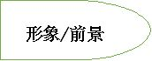
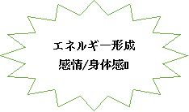
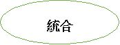
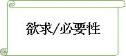
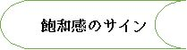
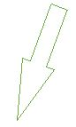
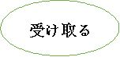
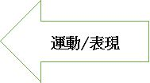

| あなたを癒す魔法の物語: ゲシュタルトの癒し | |
| マライア・フェントン・グラヂィス | |
| WindWhispers Press (2017) | |
あなたを癒す魔法の物語
ゲシュタルトの癒し
マライア・フェントン・グラヂィス
Wind Whispers Press，Pennsylvania
この本をわが夫（ロン）に捧げる。
あなたの愛で私の傷ついた翼は飛ぶことができた。
あなたの黄金の心と鋼の神経が不可能を可能にした。
謝 辞
共同経営者であるドーリ・ミドルマンとマーク・パットナムは、共に才能にあふれ思いやりのある心理学者で、友人で、同僚です。二人の愛・友情・献身は私の一生の宝物です。二人は私の魂の兄弟です。まずこの二人に感謝します。また、私は２０年以上にわたってカリフォルニア州のエサレン研究所でワークショップを開くことが出来ました。エサレン研究所の支援に感謝します。特に教務部長のナンシー ・L ・ホイーラーは頭脳明晰で温かい人柄で私を迎えてくれ、エサレンは私の第２の故郷になりました。ゴードン・ホイーラー所長は輝かしく謙虚でいつも私を応援してくれます。本書のあとがきも快く引き受けてくれました。ボブ・ファルコナーの癒しへの旅は私の魂を揺さぶり、それがあったので本書は完成できました。ブルース・コーンウェルはエサレンで１７年にわたってパートナーを務めてくれました。彼がロールプレイで見せた感情移入や才能は、もはや私から切り離すことができません。
父母を失った悲しみは、癒しを求める私の心を燃え上がらせました。リンダ・パルマロッザは素晴らしい書き手であり友人であり、この本を手掛けてくれました。フェザー研究所は本書のために誠実かつ多大の援助を与えてくれました。ジャックス・ローウェルは本書の企画からずっと私を励ましてくれました。ベン・ビッグハムの熱意と助言は本書を豊かなものにしてくれました。従姉のババ・セサリニは幼い時から私の心の避難所でした。レオナ・ツッチの無条件の愛と誠実。パウラ・ローゼンは私の案内人で、真実の友で、優れた編集者です。キャセイ・ギルモアは私にも本書にも貴重な洞察を与えてくれました。ステファン・リードはこの本の印刷に力を注いでくれました。
フィラデルフィ ア AL S 協会と 「 AL S の希望」は医療と援助を提供してくれました。ペンシルベニア言語リハビリ事務所と連邦障害者サービスの援助が私の人生を建設的なものにしてくれました。ボブ・バーチィは診断の日からずっと希望を与えてくれました。彼がいたの で AL S と診断されても安心でした。家族・友人・医療関係者の愛と励まし、やさしさには言葉がありません。
人生を取り戻す物語を共に分かち合い、それをこの本で取り上げさせてくれた人たちに感謝します。私がセラピストとしてかかわる特権を得たクライアントに感謝します。クライアントは私の先生であり、セラピーの時間は天の贈り物でした。エレノアのゆるぎない愛・やさしさ・野菜ジュースは私を癒してくれました。二人の息子（ルーク、コール）は年齢以上の成熟を示してくれました。二人の寛大さにも驚きました。
目 次
実 例 編
第１話 ベトナム帰還兵マックが癒された物語
悲嘆とブーメラン
第２話 痛みに向き合う妻ロビンが癒された物語
自分との関係
第３話 孤立する夫チャーリーが癒された物語
孤立からつながりへ
第４話 両親の離婚に巻き込まれたジャックが癒された物語
まる飲みする
親との関係を作り直す
第５話 病弱なモーリーが活気を取り戻した物語
自分の本当の声を取り戻す
4つのステップ
第６話 リサが愛を受け取って癒された物語
受け取るという贈り物
第７話 家族の秘密を打ち明けたマリサが癒された物語
虐待を公表すること、虐待を癒すこと
欲求を形にする
第８話 家族がよみがえったアンナの物語
未完成の仕事を成し遂げる
理 論 編
序章 大切なことは何ですか？
正確な癒しの瞬間
創造的な参加
１章 死神は偉大な助言者
私のスタイル
思いやりを持つ
病理学ではない
２章 必要なのは何ですか？
生命の知恵
アウェアネス（気づき）
気づきと触れ合いのサイクル
形象―今姿を現しているもの
エネルギーの形成―身体が反応する
欲求と必要性の神聖さ
必要性の混乱・読み違い
欲求や必要性の個人史
３章 触れ合い―気づきを行動へ
健全な触れ合い
運動と表現
自分の欲求に尋ねる
受け取ること
飽和感のサイン
統合
完結／終結
新しい経験の始まり
気づきと触れ合いのサイクルを一周する／一仕事終わり！
４章 途中の落とし穴に備える
未完成の仕事
行き詰りに陥る
本当の触れ合いを阻むもの
良薬
５章 正確な癒しの瞬間を創造する
人生の瞬間―心のこもった癒しの瞬間
必要性の形成
癒しの瞬間を創造する
専門家がデザインした瞬間
発見の過程
グループの力
音楽
重要なことは何ですか？
責任を取る
赦し
自分史を書き直す
自然発生的な瞬間
贈り物を受け取る
自分の方向を自ら決める瞬間
行き詰まりを突破する瞬間
癒しの旅
６章 生気にあふれて全体的な存在
後書き 過去を変える：ゲシュタルトの観点から見たトラウマと癒し
エサレン研究所長 ゴードン・ホイーラー
付録 ジャックからの手紙
著者紹介
実 例 編
第１話 ベトナム帰還兵マックが癒された物語
「ヘリコプターがジャングルの奥に俺たちを降ろした。ヘリコプターが戻って来るのは最低２週間先だ。２ヶ月戻ってこないこともあった。いや７ヶ月のこともあった。次々と命令が下され俺たちはジャングルから出られなかった。夜は自分で掘った穴の中で寝たんだ。」
「その時のことを思い出してはいつもビクビクしてた。だけど、それを口に出しちゃダメなんだ。だって俺は海兵隊だから。海兵隊では何があっても、おびえたなんて言えない。俺は火の鳥だ。死ぬことだって怖くなかった。接近戦だって地雷だって恐れちゃいなかった。べトコン（南ベトナム解放民族戦線の兵士）も敵ながらあっぱれだった。多くの仲間が地雷を踏んで足を吹き飛ばされるのを目にした。身体が粉々になって故郷に送り返す死体がない奴もいたよ。」（ 注： 以下 教科書体はクライアントの文章であり 、 明朝体はマライアの文章である 。 ）
私がマックと初めて会ったのは、彼が３年間のセラピスト養成コースを申し込んだ時でした。マックは約束の時間よりも早く来て、のんびりと待合室に座っていました。私はいつも通り握手しました。マックは男らしくハンサムで、ラテン系（暗茶色の頭髪、用心深い茶色の瞳）です。カジュアルだけどシミ一つない清潔な服装で、４０代前半か中頃に見えます。
マックは１９６６年から７２年にベトナムに３回も派遣され、海兵隊の任務を全うして帰って来ました。しかし、戦争のトラウマからドラッグとアルコールの依存症になり、それから１０年以上も苦しんで来ました。依存症の回復プログラムにすでに何年間も参加しています。その間に大学を卒業し、結婚して二人の子供を授かり、様々の心理療法を経験しています。そして最後に私の研究所にたどり着いたのです。
マックは様々な人生経験を積み、普通の訓練生とはかけ離れた存在です。彼は下層の労働者階級に育ち、そこから多くの手段を使って成長しました。しかし、ストリート系の言葉遣いや表現には彼の生まれ育ちが顔を出しています。また指一本に一文字ずつM－A－C－Kと彫られたタトゥーには荒れた生活の名残りが感じられます。しかし、このタトゥーこそマックの道しるべであり、彼の守り神なのでは？と私は想像しました。マックの顔には知恵や悲しみが凝縮されています。マックはあまりに多くのものを見すぎたのでしょうか。
トレーニング・コースに参加したい、とマックは熱心に訴えます。彼はセラピストになる強い望みを持ち、私にその訓練を依頼するのです。彼には明確な目的意識があり、行く手を阻む困難を恐れません。彼は努力を惜しまず勝利に前進する戦士です。
我々はマックの受講を許可しました。トレーニング・コースでは広範な理論的・実践的授業があり、同時並行で臨床的スーパービジョンも行われます。さらに各訓練生は自分をモデルケースにして、自分が癒しを必要とする問題を研究します。マックはベトナムでの出来事について深く厳しい個人的ワークをしなければなりません。マックは様々のセラピーを既に経験済みですが、彼の先生はベトナムでの出来事以外にありません。我々の課題は、ベトナムが彼の人生の一部になり、それが彼の将来への大きな踏み台になる様に彼の傷を癒すことです。いつ、どのようなタイミングでマックは癒されるのでしょうか？マックの癒しのタイミングは、彼の中からその時期が示されるのを待つしかありません。私は、トレーニングが前に進むことを信じ、訓練生が各自のペースで道を進むことを期待します。そして彼らは期待に応えてくれました。
マックが私の腕前や他の参加者を信用するには、大分時間がかかりました。でも少しずつ、マックは我々の研究所を居心地良いと感じて行きました。授業は週末だけですが、マックは１年目が終わる頃に最初の「正確な癒しの瞬間」を経験しました。
その頃、授業やワークショップはノーベルチン教団のデイレスフォード修道院の一角にある古い建物で行われていました。その建物はパインブルック館と呼ばれていました。その中にかつてはリビングルームとして使われた何もない大きな部屋がありました。その部屋の一面は両開きのドアを真ん中にすべてガラス窓です。窓の外には美しい庭園が広がります。部屋は暖かくて居心地がよく、訓練生たちはクッションやベンチに座って授業を受けます。歴史を感じさせる建物は、気高くもあり、親しみやすい家庭のようでもあります。かつてパインブルック館はノーベルト（ 注：12世紀のローマカソリックの聖人 ）を目指す神学生の住居でした。この環境が私の仕事を支えて、人を育ててくれるのです。祈りや聖歌が建物の材木やレンガ、モルタルにしみこみ、我々すべての人を祝福してくれます。
週末のトレーニングは、訓練生がクライアント役とセラピスト役に分かれて実践形式で行われます。セラピスト役の訓練生をコーチするのが私の役目です。マックがクライアント役を志願し、セラピスト役にアイリーンを指名しました。私は興味をそそられました。アイリーンは７５歳の優しいソーシャルワーカーで、最近病気で失明したばかりです。おそらくマックはアイリーンの中に戦友の姿を見たのです。塹壕の中で人生の喪失感を味わった戦友たち......。彼にはアイリーンが、今も自分の戦傷を重々しく抱えながら、それでもその心を開いている人に映ったのでしょう。
マックのクラスには２０人ほどの訓練生、私と２人の同僚がいました。同僚（ドーリ・ミドルマンとマーク・プットナム）は二人ともゲシュタルトの立場に立つ精神科医です。訓練生は個人ワークをする人の椅子（ 注：この椅子をオープンシートと呼ぶ ）を中心に、輪になって座ります。マックが輪の中心にある椅子に座ります。彼の手は震え、額は汗をかいてうっすらと光ります。彼が不安なことは明らかです。参加者は彼のつらさを感じ、これからマックにとって決定的に大切なことが始まるのが分かりました。皆は静かに座り、彼が語る戦争の記憶に耳を傾けます。
「一人の兵士を思い出している。そいつの顔も名前も思い出せないけど、若かったことだけは覚えている。そいつは大きな乾草の山の脇に立ち、頭を突き出して外を見ていた。俺はやっちまえ！って怒鳴った。俺は同じ事を２、３回怒鳴って，一瞬目をそらした。ビュンビュンという音を聞き、ドシンと言う音を聞いた。そいつが撃たれた事が分かった。眉間を撃ち抜かれていた。そいつはゴム人形みたいにドサッと倒れた。俺は気が狂ったようにそいつの上に飛び乗ってそいつを揺すった。そして叫んだ。『どうしてやっちまわなかったんだ。』」
「ベトコンの兵士にとって、戦死とは自分の国のために命を懸けて戦うことだ。それは最後の一兵が死ぬまで戦争が終わらないという意味だ。今になっても、俺は自分がどうやって生き延びたのか良く分からない。多くの仲間が死ぬのを見てきた。自分の中隊には３６５人いた。でも最後に生き残ったのは俺ともう一人だけだった。」
部屋の中は、だれもがマックの話に心を乱されています。泣き出している人もいれば、互いに抱き合っている人もいます。ベトナム戦争について我々全員が罪悪感、喪失感、怒りを感じていたのです。そして一人一人がマックの個人的な経験を心に受け止めています。誰もマックを助けることはできませんが、各自のやり方でマックと自分を同一視しています。各人は自らの苦悩を隠し立てせずに表現し、グループはそれを受け入れるというのが我々のやり方です。このグループの意思は、マックを孤立から救い出し、苦悩をグループのものとしました。グループの中で魔法が使われ、我々はマックの苦悩を率先して自分の苦悩にしたのです。グループの癒しのエネルギーが大きく膨らんでマックに注がれます。
私の中にも地獄のような戦争のイメージがあふれ出てきました。心臓が高鳴り、涙が噴き出してきたのです。当時１８歳の素晴らしい青年がそのような恐ろしい経験をしていた、と思うと私の心はいたたまれません。一瞬、私は二人の息子のことを思い、パニックに襲われました。息子が徴兵されてその友人が眉間を銃撃され死体となって返って来たら、あるいはもっとひどい経験をしたら、と思うと冷静ではいられません。
私は母と一緒にニュースを見た当時の習慣を思い出しました。当時はベトナムで亡くなった若い兵士の人数がニュースで毎日発表されました。また、近所に住むジャイなどの男友達に電話して徴兵くじの番号を聞いたことを思い出しました。ベトナム戦争では、米国内のすべての１８歳男性に徴兵くじの番号が与えられました。番号が小さいと先に徴兵される仕組みです。ベトナムに行っていた従弟のチャーリーのことも心配でした。チャーリーは子供の頃に足を怪我したので実戦部隊ではなかったのですが、いろいろなことがあって、戦争を引きずって苦しんでいました。
高校時代のボーイフレンドのダニィーは、２１歳の誕生日まで自分が生きているとは考えられないと言いました。そしてそうなりました。ダニィーは２０歳の時にベトナムで榴散弾にやられて死にました。ダニィーのお父さんは朝鮮戦争で亡くなりました。私は今でもダニィーの葬式を覚えています。ダニィーの唯一の弟が兄と同じ海兵隊の制服を着て葬式に来ました。ダニィーの戦死確認サインをしたのはその弟です。ダニィーの母親はうつろに落ち込み、送葬のラッパを吹いているかのようでした。儀礼兵が曇り空に空砲を打つと、そのたびに私の身体は打ち震えました。そして私は母の肩に泣きつきました。
一瞬のうちにこれらの記憶が流れ出てきました。その部屋にいたすべての参加者に夫々の戦争の記憶がよみがえります。それは私がティムの方を振り返った時です。ティムは訓練生の一人ですが、ベトナム戦争の時に良心的徴兵拒否をしました。ティムはカナダに隠れて彼独自の戦いを米国憲兵隊と戦ったのです。マックとティムの物語は、一見したところは全くの別物ですが、実際のところは多くの部分で重なります。ティムも薬物中毒とケチな犯罪に自分の怒りと恐れを封じ込めました。ティムにもまだ安全な家はありません。私はティムとマックがこのワークショップの外でどれだけ話をしているのかは知りません。今、ティムは顔を手で覆っていますが、涙が頬を伝って流れ落ちています。明らかにこの場に起こっていることに動揺しています。
「うちの部隊に一人の男がいた。そいつは俺に３－４ヶ月遅れて入ってきた。そいつは首を撃たれて血が噴き出した。救護車はそこに居なかった。そいつと衛生兵は釘付けになった。俺はションベンちびっちゃって、そいつを取り返すぞって怒鳴った。そいつをおれの背中に乗せて腹ばいで這って行くつもりだった。そいつは俺に『来るな。お前バカだ。やられちまうぞ。』って言い続けた。だけど俺は行くことにした。俺は防弾チョッキも弾薬もヘルメットも捨てて、３０メートル先まで走って行った。衛生兵は既にそいつにモルヒネを打っていた。奴等と何かを話したことは覚えているが、何を話したかは覚えていない。奴らは砲兵隊のところに呼び入れられ、砲兵隊は救護車の目印になるように煙幕を上げた。我々はそいつらを救護車に乗せて、そこを離れた。俺はそうしなきゃならなかったんだ。」
「皆さん聞いてくれ。３回目のベトナム行きが終わる頃には、俺は何度も自殺することを考えたよ。自殺したらどんなに楽だろう。帰りの飛行機に乗ったときには、俺は随分と年取ったなあと思った。だけど俺はまだ２３歳だぜ。俺の頭は俺に、地獄から脱出して救われたって言うけど、俺の心は自分だけ生きていいのか？って言うんだ。俺は罪悪感に悩まされて寂しかった。家に帰って最初に目にしたのは、米国が大きく変わったということさ。人々は俺にご苦労様なんて言わなかった。それどころか、俺たちは髪の毛を長く伸ばしたヒッピーにつばを吐きかけられたんだ。」
このとき私の目の前にいるのは、戦争を生き延びて、それから２０年経っても癒されることなく傷ついたままの男性です。私は自分の仕事に崇高な責任を感じました。私は、彼が癒やされる為に必要となるものを見つけねばなりません。どうか神の導きがありますように！と祈らずにはいられませんでした。
このマックのワークは臨床的に非常に難しいケースです。セラピスト役のアイリーンは私の助けを求めます。それで私はセラピスト役にいつもより多くの指示を出しました。アイリーンは指示されたことをすべてこなしました。私は、セラピストがクライアントを導けるのはセラピスト自身が行ったところまでである、と信じています。マックがプロのセラピストとして高度な仕事をするためには、その前に彼自身が沢山の癒しを経験する必要があります。マックは身震いするほどの悲劇的な戦友の死を何度も目にしました。その度に、自分の命を守るために本当にやりたいことを我慢して飲み込みました。この記憶が彼を内側から蝕んでいます。ベトナムでの未完成の仕事は、マックが薬品やアルコールの中毒やその他の自己破壊的行為に走った大きな原因になったのです。
ベトナムでの記憶は、マックの中でトラウマになっています。このトラウマを消化・統合するには、マックはベトナムでの記憶を思い出す必要があります。未完成の仕事として残っているのは何であり、その時以来満たされていないのはどの欲求なのか、彼は確認しなければなりません。私は彼の身体に残った記憶を必要最低限で刺激します。ただし、刺激しすぎてトラウマが深刻化(retraumatizing)しないように十分に注意します。私はマックが必要とする癒しに応じてロールプレイを準備します。マックの戦友を連れて来ることは出来ませんが、私はマックと数人の訓練生を呼んで打ち合わせをします。十分に注意事項を確認してからマックと訓練生はロールプレイを始めました。そこでマックは最も抑圧され傷つけられた感情の一部を表に出すことが出来たのです。そして私は、マックの抑圧され傷つけられた感情をセラピーすることが出来ました。
この過程はマックのようなＰＴＳＤ（心的外傷後ストレス障害）に苦しむ人にとって非常に重要です。基本的には、私はトラウマの元になった出来事を、その時の感情が軽くよみがえる程度にシミュレーションします。この時、シミュレーションはトラウマ反応の引き金を引くことのないレベルに抑えます。私はいつも修正する瞬間、癒しの瞬間を強調します。私はマックが満足して完結するために未だ必要としているものを明確化して、それを用意します。この正確な癒しの瞬間を創る方法は、クライアントの満たされない欲求を確認してその欲求を満たす方法であり、心の奥深くに効果を及ぼすものです。人は経験によって傷つき、経験によって癒されるのです。
マックはセラピーの世界に入ってベトナム時代に帰っています。彼が満足を求めて泣き叫ぶところに彼の満たされない欲求が隠されているはずです。私はそれを探します。その欲求を彼が確認することを、私は知っています。また、グループのメンバーが、マックの人格と行為を承認して彼に正当な評価を与えていることも確認します。グループの承認と正当な評価は、マックの癒しに重大な役割を果たします。マック自身はグループの承認や正当な評価に対する欲求を十分に自覚せず、その欲求が満たされるとは思っていません。しかしこの欲求こそまさにマックが必要とするものであり、今まで満たされなかった欲求なのです。
「１９７０年に海兵隊を除隊してから１９８４年までの俺の記憶はぼんやりとしている。その間に結婚して子供が二人できて、前科者になって、仕事もいろいろとやったけど金にはならなかったね。俺は境界性精神障害で、酒も随分と飲んで、ドラッグも２種類も３種類も一度にやった。あまり眠れなかったけど、眠ったときはベトナムでの暴力的な夢を繰り返して見た。銃を枕元において寝るようになった。ベトコンが俺の家の中に入ってきて、寝ている間に家族と俺を殺すという妄想に脅えていたんだ。」
「金曜日の夜だった。俺はその日は朝７時から飲酒してドラッグもやった。夏の夜だった。木の葉が通りを挟んで向こう側にある小さな商店の光を反射した。俺にはそれが不思議なオーラを放っているように見えた。俺の頭の中は混乱してベトナムにいると錯覚した。近所の人たちは、その商店にたむろする若者にずっと前から不平をこぼしていた。奴らは物を壊したり、夜に人の家をのぞき回ったりした。それで俺はランボーになることにした。銃を身につけて２－３軒の家の間をすり抜けて商店に近づいた。おれのねじれた頭では、若者たちがベトコンになっていた。そのうちの一人が俺の潜んでいるところに近づいてきたので、俺は飛び出していって奴の頭に銃を押し当てて、殺してやるってわめいた。そのガキは命乞いをしてきた。何かが俺を止めた。そして俺は走り去った。警官が俺の家に来て職務質問された。でも奴らは俺だって証明できなかったんだ。 」
戦争が終わっても、マックにとっては長い間戦いが続いていたのです。マックがこの話をした時には、彼が今も命を保っているのは奇跡に思えました。そして彼が生きていることには重要な目的があるはずだと思いました。もしマックの生きる力が制御できて、その大きな力を自己破壊的な方向から建設的方向に変えられるなら......。彼のこれからの人生は無限の可能性を持つことになるでしょう。
マックが最も必要とするものは何なの？私はそれを提供するため、マックを注視し耳を傾けることに集中します。私はマックの身体を注意深く観察します。また、彼の声の調子と話のパターンに注意します。マックが課題として書いたレポートは、考えられ洗練された内容で、正しい語彙と正確な文法を使っています。ですが、マックが自分の少年時代の街頭での出来事やベトナムのジャングルでのことを話すときは、彼の話し方は無頼漢のようです。彼は文法を無視して、ののしるような言葉で昔の出来事を勝手にわめき散らします。特にファックと言う言葉を好んで使います。これはマックが、青年期から、特にベトナムから気づかずに持ってきたものです。それが生き延びる手段になり、彼はマッチョな仮面に頼り切っています。
何年かマックとワークを続けると、私はマックの人格の様々の面を知りました。マックにはそれまで「生き埋め」にされていた優しい愛情に満ちた部分があり、その部分が自由を求めています。マックの中にある両極性は、人間なら誰の中にもあるものです。誰の中にも多様な性質・特徴・両極性があるのです。人が全体性を獲得するためには、人は最良のものも最悪のものも含めて自分のあり様をすべて知って、それに責任を取る必要があります。自分の優しい部分、嫌悪する部分、寛大な部分、利己的な部分のすべてが全体性の一部分です。人は自分が誰であるかを知って初めて、自分自身を管理して責任ある行動を選ぶことが出来ます。
人は両極性の一方を得ただけでは、健全な人間関係を築くには不十分です。一方だけを自覚する人は自分が誰であるのかを本当には知らず、自分の魅力的でない特徴に気づかないようにして自分を防衛しています。その人は自分に対しても他人に対しても冷淡で、批判的で、利己的であることを認めません。自分はいつも温厚で、親切で、寛大だと主張するのです。このために、その人は自分が問題に貢献できるとは思えなくなり、問題解決に寄与できません。
健康であるためには、人は自分の消極的な面と積極的な面の両面を自覚し、その両面に共感できることが肝要です。消極的な特徴を自覚するのは、「私は嫌な人になっていないか？」等と自分を非難したり罪悪感を持つためではありません。むしろ、自分の消極的な特徴を自覚すると、その特徴が他者に及ぼす影響や衝撃に気づき、それに責任を取ることができるのです。自覚すると、人は感情を傷つけるものを内側にしまったり、自分の意志で怒りを癒して管理したり出来るのです。
マックは殺人者であり、敵であり、破壊者でした。また彼は、敵に追われ、味方であり、救助者でもありました。その時にマックが表に持っていなかったのは、柔軟性、思いやり、傷つきやすさ、信頼です。でも本当は、彼はそれを持っていたのです。マックが自分のありのままの姿を正しく認識するには、彼がベトナムで切り捨てた部分を取り戻して、それを利用する必要があります。自分の中の失われた子供と英雄を取り戻すことがマックには不可欠なのです。
トラウマは安全な環境の下で扱います。安全な環境で扱うことには、人がどこかに置き忘れてきた失われた部分を取り戻すという意味もあります。人が自己の失われた部分を自己に再統合すると、自己はバランスを回復し、機能不全の箇所が無くなります。
マックが本当に必要とするものは何なの？私はあれこれと考えます。そうしているうちに、私は彼に正確な癒しの瞬間を創造してあげたくなってきました。マックがベトナムで経験したのは忍耐と疲労困憊であり、足と背中の過酷な痛みです。その苦しみや痛みは命をつなぐためには不可欠でした。近づいてくる敵に絶えず聞き耳を立てている兵士には、沈黙を破る銃や爆弾の音のみならず、降り注ぐ雨の音も疲労の原因です。ジャングルでの生活と戦争の悪臭は、常に命を脅かされる恐れと一体となってマックの細胞一つ一つに染みつき、今も彼に付きまとっています。
ベトナムを丸ごと再現することはできません。ですが私は、今ここで体を使ってロールプレイをすることにしました。マックのジャングルでの経験の身体的記憶を引き出すにはロールプレイが最適です。私は彼が無線装置を背負って運んでいたことに目をつけました。彼は１年以上も無線装置を持ち運び、その記憶はその時期の揺るぎない現実感として残っています。今でも重い無線装置を運んだトラウマが体に残り、彼の背中は痛みます。無線装置は単に物理的に重いのではありません。中隊全体の生命線という重い意味があるのです。私がこう考えていると、マックは私が必要とする細部を用意してくれました。
「無線装置（ラジオ）を運んでいた奴が頭を撃たれた時、俺は無線装置を運ぶことを自分から志願したんだ。その時はまだベトナムに来て１ヶ月くらいだった。俺は安全な軍事区域に移動して、１週間の集中講座で装置の使い方を教わった。講習が終わると、元の部隊に戻された。俺の部隊は特別上陸部隊さ。北に進んでジャングルに潜むベトコンを偵察するんだ。」
「無線装置を運ぶことは肉体的につらいなんてもんじゃない。とにかく重い。無線装置は２０キロ位あった。自分自身の装備と合わせると、全体で４０キロ位になった。気持ちの上でも負担だった。無線装置は俺たちの生命線だ。それがダメになれば、俺たちは死んでしまう。俺はそれが恐ろしかった。」
「俺はその時以来背中に身体的問題がある。背中に２回大きな手術をして、これに関して多くの個人ワークをした。話していて自分が感情的に負担に感じると、すぐに背中が痛くなる。俺は背中の痛みから自分の身体に気付くようになった。」
「ラジオマン（無線担当）として初めて任務に就いた時のことは特によく覚えている。俺の部隊はジャングルで最初の見回りに出た。安全のために先を行く人から１５メートルから２０メートル離れて歩くように指示された。地雷に出くわした時に被害を最小限にするためさ。俺より５０メートル先を歩いていた奴が全く突然に地雷を踏んだ。爆発音と奴の悲鳴が聞こえたのを覚えている。そこからすべてが狂った。皆がラジオマンを求めて叫んだ。俺がその現場に着くと、奴の両足と片腕と反対側の手が吹っ飛ばされたのが見えた。まわりじゅう血だらけさ。」
「後で奴の長靴を見つけたけど、その中には足首から先がまだ入っていたよ。俺が戦傷を負った人を見たのはこれが初めてで、ラジオマンとして任務を遂行した最初だった。俺はパニックになり、奴が大声で泣き叫ぶのが恐ろしく、どれだけ奴がズタズタになったのか見るのが怖かった。俺は医療救護班の外科医を無線で呼び出さねばならなかったけど、恐ろしくてパニックになって、操作の仕方を忘れてしまった。ある頻度で交信し、居場所を送信し、敵の攻撃があった時にはそれを言わなければならない。俺の手はひどく震えてダイアルを回すことも出来なかった。ここから生きて帰ることはないだろうと思った。今でも忘れられないよ。」
「その日以降、俺は過敏症になって油断なく仕掛け地雷を探した。俺たちはジャングルの中を来る日も来る日も、どこまでも歩いた。一歩ごとに、次の一歩で地雷を踏むんじゃないかって恐れながら。この恐怖や不安がなくなることはなかった。」
このとき部屋を見渡すと、涙していないのはマックだけです。この話は「これだ。これで行こう。」と私に強烈なサインを送っています。私は、セラピスト役のアイリーンに指示して、マックに無線装置と同じ重さの人を選んでもらいました。彼は４０キロほどの小柄な女性を参加者の中から選びました。女性は自らマックの背中にへばりつき、足も絡みつけます。
マックは重さを加えられると、身体を折り曲げて背中を丸め、いつもより両足の間を開いてバランスを取ります。エキスパートの動作は正確です。彼は自動的に慣れた様子でこの姿勢をとります。マックは背中に重さを感じるや否や顔つきが変わります。眉間には深いしわがより、重い責任が見て取れます。彼の全身が感じていることが、彼の顔に現れています。それは、恐怖、肉体的苦痛、使命に対する責任、確かな決意、極度の疲労困憊の入り混じった表情です。
私はマックに指示します。「部屋の中を立ち止まることなく歩き回って下さい。」マックは４０キロの女性を背中におんぶした状態で部屋の中を歩き回ります。残りの参加者には、マックが自分の内なる声として話していた内容を、口に出して叫んでもらいます。「やり続けろ。」「止まっちゃだめだ。」「止まったら死ぬぞ。」「お前が無線装置を落っことしたら、俺たち全員あの世行きだ。」マックは長いこと部屋を回り続けます。無限に回り続けるのではないか、と私は思いました。マックの頭には、寒かったこと、暑かったこと、雨に濡れたこと、乾燥したこと、死臭、汚れがよみがえります。この瞬間、今は清潔な服を着ているのに、ベトナムでは半年の間一度もシャワーすら浴びなかったことを彼は思い出しました。そんなことは問題じゃなかったのです。服なんてたいしたことじゃないのです。彼は無線装置を運びます。運び続けます。マックはどれだけ部屋の中を行軍したのでしょう。どれだけ歩いたかは思い出せませんが、彼の苦痛が一歩ごとに伝わってきたのは思い出せます。あるところで、私はマックに話しかけました。「戦争は終わりました。マックがこれ以上は歩き回らないという選択をしたなら、その時には我々も止まります。」マックは女性を下すと床に崩れ落ち、うめき声をあげます。
「疲れた。とっても疲れた。疲れて死にそうだ。助けてくれ。背中が痛い。」
私は参加者にマックの周りに集まり、膝をついてもらいます。参加者は優しく彼の背中に触り、彼の背中をマッサージします。部屋の中は恭しい静寂に包まれ、マックの悲しみの声だけが響きます。
「俺は自分を憎んでる。時間を無駄に使ってしまった。俺は自分の心を取り戻したい。」
マックは安全な場所を得て、彼の感情に応える優しい人々に囲まれています。彼はそこで傷つくことを恐れずに心を開き、参加者の心からの感情的反応を受け取ります。彼は怒りを露わにし、泣きじゃくり、恐怖に震え、貴重な友人を失った譬えようもない絶望を味わいます。この正しいやり方によって、また訓練生たちの安全な環境の中で、マックはついに自らの悲嘆に向き合って涙を流し、癒しの過程を始めることができました。参加者全員が彼を慰めます。参加者一人一人がマックを完璧に理解して受け止め、無条件の愛を捧げます。
喪失、分れ、死を経験してもそれを未だ悼んでいない時には、人は自分を否定した状態にあります。この場合、嘆き悲しむことは自然で健康なことです。人は積極的に嘆き悲しむことで消化しきれなかったものを消化し、手放せずに負担になっていたものを手放すのです。残念ながら米国の文化では、多くの人は悲嘆の涙を弱虫のすることとみなし、特に海兵隊ではそう考えます。海兵隊では、悲嘆に際しての尊敬すべきかつ期待される反応は「不屈の上向きの唇」であると教えます。しかし、安全な環境下で泣き叫び、嘆き悲しみ、激怒する権利を自分で否定した人は、有害な感情をまる飲みすることを自分に強制しているのです。この人は有害な感情を内臓にため込むことになり、それゆえ不愉快な感情を多く感じるのです。
ほとんどの場合、悲嘆はクライアントの心の奥深くに葬られ、長年にわたって合理化され否認されています。このため、経験したことを話すだけのセラピーでは、クライアントは悲嘆に触れることが出来ません。身体的にも感情的にも安全な空間の下でトラウマを振り返ることで、初めてクライアントは、「結果を変える」事が出来るのです。そうするとクライアントは生気を回復し、自分の人生を縛っていたことの解決策を探し始めます。人は経験によって傷つけられ、経験によって癒されるのです。
マックはしばらく沈黙しています。ずっと後になって、このとき様々の光景や癒しを必要とする瞬間が目の前を通り過ぎて行った、と彼は明かしてくれました。私はマックに安全を感じてもらうため、今この瞬間に何を必要とし何を求めているのかを尋ねます。
彼は動きを止めて目を閉じます。そして「自分が見つけたものが信じられない。」と頭を振ります。
「お母さんに会いたい。抱っこされて揺られたい。お母さんの膝の上で安らぎたい。私は母に愛され守られていたい。私は自分を愛して自分を受け入れたい。」
マックがここでお母さんを求めるとは......。私は思いもつきませんでした。死に臨んだ兵士が父や母を求めて泣き叫ぶ、とは聞いたことがあり知ってはいました。ですが、目の前にいるのは中年の立派な男性です。これだけの人が今更お母さん？私は予想もつきませんでした。マックの母親は彼が１０代の前半に亡くなっていますが、彼は母親を深く愛していたのです。セラピストはクライアントについていくが全く同じ道を進んではいけない、というのが私の立場です。セラピストが全く同じ道にいないから、クライアントは自分で道を見つけ出すしかないのです。クライアントは、ワークから自分で本当の欲求を発見するのです。この時はまさにそのケースでした。
マックがこれまで戦場で出会った死の意味と、彼の人生における最も重要な人である母の死の意味は別のものです。では、マックはどのようにして母の死に近づくのでしょうか？母への憧れとすすり泣きが、それに加えて手足を切断された人への恐怖が彼を母の死に導きました。マックの母親の死は猛烈な痛みを伴うものでした。
マックは、母の死を未だ十分に悲しんでおらず、もっと喪に服する必要があったのです。彼は未だふさがれていない傷口を抱えていたのです。マックは母親と精神的感情的に深く再結合される必要があったのです。
私は女性の参加者全員に呼びかけます。女性は２列に並んで腕をつなぎ、人間ゆりかごを作ります。マックはそのゆりかごに抱かれて揺られます。特別に選んだ音楽が流れます。私はキャロル・キングの「チャイルド・オブ・マイン」を選びました。女性たちはマックを揺すります。マックは「お母さん助けて、寂しいよ。」と繰り返します。全員が泣き、マックも泣きました。マックはついに自らの涙で慰められたのです。
参加者全員がひとしきり涙を流した後、我々はマックを静かに床に下しました。マックは輪の真ん中に戻ります。一人ひとりがマックに心の底から感謝の言葉を述べます。彼が犠牲を払ったことを認め、彼を現在でも戦争の英雄であると栄誉をたたえます。マックは大粒の涙を流し、「私はこれを２５年も待っていた。」と言いました。
女性の参加者にとっても列を作って並び、人間ゆりかごになることは大きな意味を持ちます。マックは優しい腕に抱かれると、これまで耐えられなかった亡くなった人々のイメージを受け止めることが出来るようになりました。マックは彼らのイメージを安全に表現できるようになり、トラウマと彼自身を閉じ込めていた自分の身体から解放されました。
すると、それまで後ろに下がっていたティムが皆の輪に戻りました。そしてマックをハグして「マックお帰りなさい。ありがとう。」と言ったのです。マックとティムは互いに抱き合って泣きました。忘れがたい光景です。戦争に対して正反対の立場を取った二人は、どちらも自分の選択から多くの影響を受けました。ですが今、二人は互いを理解し、互いに敬意を払ったのです。二人は、それぞれが必要としたものの別の側面を受け取りました。これも、癒しの瞬間がもつ一面です。
このようなグループ参加者からの自発的な暖かい反応が、マックの癒しには重要です。癒しの瞬間には、我々は全民間人を代表して彼の栄誉をたたえ、彼がくれた贈り物に感謝するのです。
マックのワークは参加者全員にとても重大な衝撃を与えました。余韻は大きく、次のワークに移ることに躊躇する人も沢山いました。それで私は参加者が暫くそこに留まることにしました。参加者は次々にマックに声をかけます。
その後しばらくして、マックと彼の「最初の正確な癒しの瞬間」について話したことがあります。マックはこう話しました。
「その時が私にとっての転機だった。周りの人が真剣に私の話に耳を傾けてくれたので、私は生れて初めて自分を重要な人間だと感じた。癒しの瞬間は受講期間を通じて蓄積されて行った。私はその度ごとに人として、セラピストとして自分の価値を確認した。そして自分に誇りを持つようになった。今の自分は気持ちが浄められて癒されている。今の私は愛情を感じて、自分の人生に責任を取っている。」
「ベトナムでの出来事やアルコールと薬物に依存していた頃を思い返してみると、どうやってそこから抜け出せたのか、今でも不思議に思う。しかし今では自分の心の中に、それが何か良く分からないが、自分が理解しているより大きなものが何かある。私が暗い穴の中にいた時も、きっと守護天使が私の傍で守っていたんだ。そして、『お前はどこにも行かなくて良い。お前には他人のために尽くす仕事が待っている。』と言っていたんだ。」
マックは彼のクラスで最も優秀な訓練生に成長しました。彼の理解力と臨床技術は鋭く研ぎ澄まされました。クライアントを核心に導く彼の力量に私は何度驚かされたことでしょう。マックは一所懸命に技術や知識を吸収しました。それに加えて彼には特殊能力があったのです。学問的理解を超える見通しや思いやりを持つ能力です。運命はマックを断崖絶壁に追い詰めましたが、彼はそこから主の恵みとともに舞い戻ったのです。
悲嘆とブーメラン
人は大きな喪失感に襲われると喪のプロセスに入る必要があります。喪とは悲しみ、怒り、不信に打ちのめされる時間です。マックは愛する人や思いやりある友人に話を聞いてもらって悲嘆を手放し、慰められることを望んでいました。しかし、マックはベトナムの戦場にいたので、心から喪に服することができなかったのです。マックは怒りや悲しみに蓋をして、傷つけられていないように装って乗り越えたことにしました。残念ながらこれでは、悲嘆を溶かすことはできません。これでは悲嘆は硬い岩となって心の中に宿ります。読者はご自分を振り返ってみて下さい。大きな喪失感を味わったことがありますか？その時に、悲嘆を溶かして自分の欲するものを受け取りましたか？もし、まだ溶かしきらずに欲するものを受け取っていないのなら、誰に何を表現すれば良いのでしょうか？
反転（retroflection）とは、自分が他人に対してやりたい（言いたい）ことを自分に対して行う（言う）ことです。嘆き悲しむことが出来ない人は、そのエネルギーを反転させてそれを自分の身体に保持しています。そして自分の一部分を自分から切り離して、結局は自分に害を加えます。マックがベトナムから帰ってきた時に、彼の攻撃性は活発なままでしたが、米国内には攻撃性を発揮する場所はありません。また彼は、生き延びるために多くの罪を犯し、大きな悲しみを内に抱えてもいたのです。マックの心の中では、感情が巨大な台風となって上陸地点を探していました。彼の身体にその台風を閉じ込めるには、莫大な力が必要でした。台風のエネルギーは発散されたがったのですが、実際には反転して彼に帰ってきたのです。その全エネルギーがブーメランとなって彼を襲い、彼はうつと依存症になりました。彼は自分の標的になったのです。自分を敵にしてしまったのです。マックには、戦友や母の死を悲しめる安全な場所が必要でした。戦争の苦悩・悲しみ・怒りを心から打ち明けられる安全な場所が必要だったのです。
最近、読者が本当に怒った時のことを考えてみて下さい。その時の身体の感覚を思い出して下さい。歯を食いしばり、胸をこわばらせ、血流が速まったことでしょう。そのエネルギーは体の内側か外側かいずれかに向かいます。もし誰かに対して怒っても、その怒りを表現する機会やスキルがない時には、その強い感情は逆流するしかありません。その力は外側に向かうのではなくて自分に向かい、自分を批判し、恥じ、締め付け、閉じ込めます。「私はこの状況にいる自分が嫌だ。」あるいは「私は自分の身体が嫌いだ。」となります。人は怒って壁を突き破ろう、そこから抜け出ようとします。人は自分自身を傷つけ、自分の身体を打ちます。自分の中に未だ表現されない怒りを発見したとき、または十分に悲嘆ができずに喪失感が残っているときには、依存症やうつにならないように注意しましょう。
他者に敬意をもって聞いてもらうには、人は怒りや悲しみを上手に手放さなければなりません。怒りは外に出て行くべきであり、決して内に向うべきではありません。嘆きや悲しみは川の如くに流れなければならないのです。自分の怒りを健全に表現する方法を見つけて悲しみを手放して下さい。サンドバッグにパンチしても良いでしょう。クッションを押し当てて叫んでも良いし、恋人の腕の中で泣き叫んでも良いでしょう。心の中に苦悩が残っているにしても、自分であれ誰であれ人を害してはいけないのです。
必要なことから始めなさい。そして次に出来ることをしなさい。そして気が付くと出来なかったはずのことをやっているのです。 ―アッシジの聖フランシスコ
第２話 痛みに向き合う妻ロビンが癒された物語
「マライアのワークショップに出かけようとすると、末っ子のステファンが熱を出していた。ステファンの脳腫瘍は手 術 不可能と診断されていた。それで、胸にカテーテルをつけて化学療法をしていた。私たち夫婦はステファンが感染症にかかったと思って、彼を緊急治療室に入院させた。」
「ステファンの治療室に自分が留まるべきとも思ったが、週末のワークショップに行くなら出発する時間だった。それは葛藤ではなかった。私は行かなければならないことは分っていた。でも、なぜ行くの？私はよく分らなかった。私はステファンを緊急治療室に残し、５時間のドライブの後に会場に着いた。」
「ステファンには、治療でも、教育でも、気持ちの面でもサポートが必要だった。私たち夫婦には他にも二人子供がいて、その子たちにも手が掛かった。私は子供たちで手一杯で、自分のことは何にも出来なかった。でも、自分がおろそかになっていることさえ忘れていた。気づいていたのは自分が助けを求めているということだけ。それ以外何も気づかなかった。３０人も人が集まるなんてワークショップの会場に着くまで知らなかった。部屋の中にはティッシュペーパーの箱が沢山置いてあって、奇妙なものが置いてあると思った。 」
私は同僚のプットナム博士からロビンを紹介されました。ロビンと夫のチャーリーはステファンのことで既に２年間もプットナム博士のところに通っていました。ステファンは４歳の誕生日の直前に極めてまれな脳腫瘍が見つかり、手術はできないと診断されました。病気はステファンの視野と人生を脅かしました。
「チャーリー夫妻は熱心だよ。二人とも繊細な心を持ち、長期にわたって責任を果たす力がある。素晴らしい人たちだよ。」私がロビンとチャーリーに出会う前から、プットナム博士はそう話していました。夫妻は夫々の性格通りに、息子の病気に愛情豊かに対応しました。夫妻は病気を徹底的に研究し、医学的に最善の選択をしました。同時に夫妻は情操を養って、見識を深めようとしました。
健康で満ち足りた人生を送る人々は、同じ様な方法で危機に対処します。健全な人々は危機に対応して立ち上がり、事態への対処法を次第に学んで行きます。ロビンとチャーリーもそのような健全な人でした。夫妻は、各人の週末のワークショップに欠かさずに出席しました。
ロビンは３０代後半です。やせ形でブロンドの髪の毛、気取らない格好をしています。温和な顔だち、柔和な眼差しからは優しさが伝わってきます。初対面なのに、私は初めて会った気がしませんでした。即座に打ち解けた雰囲気になりました。ロビンは地母神タイプです。ロビンがいると、部屋の中にいる全員は自分が大事にされていると感じます。彼女はその人達の世話をする人です。彼女はグループの「感情面のリーダー」でもあります。セラピーの成功には、どのグループにも最低一人はこの感情面のリーダーが必要です。感情面のリーダーは参加者相互のつながりを作ります。参加者が相互に信頼して支え合う環境を創造し、それを維持する人です。いわば、グループの感情の接着剤です。
ロビンの声はソフトで、理路整然と話します。その話には人を感動させる力があります。
「私は前回の日曜日にホットシート（ 注：ワークショップ参加者の前で自分の問題を明らかにして、セラピストとワークをする人の椅子。オープンシートに同じ。 ）に座ってワークした。土曜日の夜は次の日にどんなワークをするか、ずっと気になって過ごしていた。私がワークを希望したのは確かだが、それが何を意味するのか正確に分っていた訳ではなかった。私はどうして自分自身の面倒を見ないのか？このことについてワークすることにした。私はなぜ自分の利益になること、自分が楽しむことをしないのだろうか？私は自分が欲するものを知っているが、しかしそれを全くしない。私はその理由が知りたいと思った。」
「私はそのことをワークショップの参加者に説明しているとき、『ところで、何か他のものが私の人生で今進行している。私には４歳の息子がいて、脳腫瘍で化学療法の最中です。』と言った。私は、そのことを本題への付け足しの様に何気なく話した。あたかも、過去のことのように話した。マライアは即座に『それについてワークしよう』と言い、私は『いや、それについてはワークしたくない。私はいつでもその苦悩に触れることができる。私はむしろ、自分が触れることのできない何かについてワークしたい。』と言った。」
「『今に分る。両方は関係しているよ。私（マライア）を信じてちょうだい。』と、マライアは私を励ましてくれた。」
ワークショップに来る人が、なぜワークショップに来るのか？と言う重大な問題に気づかずに参加することは珍しくありません。ワークショップに参加し続けて、最終的には家族や配偶者を連れてきた人もいます。時には何年もの準備期間をかけて家族を連れて来るのです。家族が来るとホットシートに座って、それまでと全く違う問題についてワークした人もいました。この人たちは家族の前では恐怖で凍り付き、あたかも目も耳も口も利けなくなったかの様でした。
「私はおびえて、足元が震えていた。自分では何が起こるか分らなかった。恥ずかしがり屋の私が、多くの人の前に出ていた。自分が何を提案されるか、よく分っていなかった。私は話始めたが、自分ではただ無駄口をきいているようにしか思えなかった。」
「話題が息子のステファンのところに向かうと、母親になってから自分の中に起きた変化を話し始めた。子供が生まれて私は変わった。以前の私は平和主義者のヒッピーだった。もし自分が殺すか殺されるかという状況に追い込まれたら、自分は殺される方を選ぶと思っていた。殺すことはいけないことだ。でも、最初の子供を授かった時、自分の子供を守るためなら、ためらうことなく人を殺せる、と私は知った。」
「もう一つ分ったのは、この子に何かあったら世界中で最もひどい苦難を味わうのは私だということ。この子でも、私のほかの子供でも、どこの母親のどの子供であっても同じこと。私は最もひどい苦難をこうむる。ステファンの腫瘍は命にかかわり、それこそ私が今抱えていることなの。自分がそんな苦しみや恐怖と直面しなければならないなんて・・・。信じたくない。」
ロールプレイの始まりです。まずステファン役を参加者の中から選びます。ロビンはプットナム博士に頼みました。博士はステファンを知っていて、言うべきことが分っています。私はロビンに自由を経験して欲しかったのです。ロビンがなんでも思ったことをそのまま口に出すことができたら・・・。彼女は、恐怖と悲しみを自分の奥深くにしまい込んでいるはずです。ステファンにもチャーリーにも明かしていないことがあるはずです。この全てが外に現れる必要があります。苦悩と恐怖が彼女を縛って締め付けてはいけません。苦悩と恐怖を彼女自身の外に汲み出す必要があるのです。
「自分が意識的に決断して苦悩や恐怖を感じるのだ、と思ったことはそれまでありません。私は癒しのプロセスの中にいた。そして、マライアのやり方に身を任せた。マライアの目的は私を苦悩の核心に連れて行き、苦悩を感じさせること。けっして、『その場から離れましょう。ロビン離れるのよ、少し楽になりましょう。泣かないで。』ではない。マライアのやり方は、泣いて泣いて大泣きさせるのよ。マライアは、最後の涙の一滴まで泣ききらせる。そこに癒しがある。そこが違うの。」
私はロビンに言います。「ステファンに自分の心の中を話してごらんなさい。ステファンを支えに行く自分を鼓舞しているのは何なの？ステファンに話してみよう。」ロビンはステファンを揺すってあやし始めます。それはステファンが赤ん坊だった時にロビンがやるべきことでした。ロビンは病弱の子供を腕の中に抱えて揺すります。その姿は、私にはピエタ像（ 注：聖母子像のうち、死んで十字架から降ろされたキリストを抱く聖母マリアの彫刻や絵画 ）そのままに見えます。私はそこに母親の苦悶を感じました。すべての母親は病魔に侵される自分の子供を為すすべなく見守るしかないのです。それは恐ろしい悪夢です。私には自分の子供を亡くす、或いは子供の健康や人生が脅かされること以上の苦痛は思いつきません。これは、私には未体験の領域です。私は、まだ自分自身では味わったことのない感情に向き合っていました。出来る限りの経験を提供できますように、と助けを求めて祈るしかありません。ですが、この瞬間においても、私の身体にはセラピストとしての確かな感覚がありました。
「私は本当に泣きながらステファンに話しかけたの。『言葉にできない位私はあなたを愛している。私の苦悩は、あなたを振り払おうとしている。でも私は、あなたを振り払いはしない。あなたを亡くすることが本当に怖い。あなたを愛している。あなたはとっても勇敢で素敵だ。どうしてあなたに・・・。』」
ロビンはある時点で激しく泣き叫ぶことをやめました。すすり泣きに変わったのです。私はその変化に驚き、そして震えました。ロビンの変化を目の当たりにすると、その場にいたどんな冷静な人も感動して涙を流しました。参加者は互いに抱き合い、思いやりと励ましを現します。部屋中が感動に包まれました。人々はロビンの苦しみを分かち合い、それは我々の苦しみとなったのです。
苦悩に焼き尽くされないためには、ロビンは自分の中の燃え盛る苦悩の核にしっかりと触れ、そしてそれを手放さなければなりません。苦悩の核に触れてはじめてロビンは苦悩から解放されます。苦悩は宇宙の中に差し出され、そこで我々によって分かち合われるのです。
「私は全てをあるがままに任せ、心の中をそのままに感じていた。目はずっと閉じていたが、やがて目を開けて周りの人を見渡した。皆が自分と一緒に泣いていた。まるで鏡を見ているようだった。皆の私への思いを感じた。私も皆への思いやりを感じた。それは私自身への思いやりでもあった。自分一人ではこの苦悩は大きすぎて、見ることも触ることもできなかった。」
「終結に向かうところでマライアは私に聞いてきた。『あなたは何を必要としているの？』 私は、『感じる必要がある』と答えた。そう答えて初めてその意味を実感した。期せずしてそうなった。もしワークショップに参加する目的は何なの？と聞かれれば、目的は一つじゃないと答えるでしょう。でも私の実感は別よ。私の実感は、『私は感じる必要があり、これが感じる方法なのよ。』」
ロビンは多くの才能に恵まれ、彼女の家族は様々のことをロビンに頼っています。私はロビンの才能にエネルギーを補充し、彼女にある経験を用意します。ある経験とは、今の自分とゆったり過ごす方法を学ぶこと。これは将来の自分にエネルギーを補給する方法でもあります。参加者全員が彼女を取り囲み、その中の１２人が人間ゆりかごを作って彼女を持ち上げます。参加者は「明日にかける橋（Bridge over Troubled Water）」の曲に合わせて彼女を揺らします。
「マライアが聞いてきた。『あなたの癒しの色は何色？』私は青と答えた。すると５秒もたたないうちに私は美しい青いサテンの布に包まれた。驚いたことに青い色を体の中に取り入れると、私の心は更に開放された。」
ロビンが慰めや力を必要とするときには何時でもこの記憶を引き出してもらいたい。ロビンにはこの瞬間を生き生きとした記憶としてずっと持っていて欲しい。私はそう願いました。それで、私はワークのレベルを心理－精神レベルから身体レベル（運動・聴覚・視覚）に移しました。ロビンは身体レベルで自分に触れるワークを行います。
「 私は重荷を手放してリラックスした。自分が死に向かっているのではないこと、全てのことはそれがあるべき姿で存在することが信じられた。全部を一度にする必要はないし、提案されたこと全てを行う必要もない。大事なのは手放すことだ。」
「その瞬間に、もしステファンがこの腫瘍に打ち負かされる最悪の事態となっても、私は生きるって感じた。私は変わった。その瞬間に私は神を信じ、生と死についての自分の考え方を信じ、自分の周りの人々が私を愛していることを確信した。私がこれまで出会った人々は私を魅了し、私に教えてくれた。『結果はうまくいく。このことを通して私は成長する。私の周囲の人々の精神や愛情が乗り越えられないものはない。』これは私一人で到達できたことではない。」
「私は天国にいた。私はすべての愛と癒しを受け入れた。ワークショップの終わりには、私は変性意識状態（ 注：トランス状態などの通常の意識状態とは異なった意識の状態） にあった。帰りの時間は４時間半かかったが、１時間にしか感じなかった。」
「心理学を勉強する前には、逃避して強い感情的苦痛を避けるのは当然のことと信じていた。自分を保つために瞑想して強い苦痛をコントロールすること、そしてそれを乗り越えることは当然のことと信じていた。だが、この信念は次第に揺らいできた。私がワークショップで経験したのは、苦痛を感じるのを避けると、喜びも感じられないということ。苦痛を感じることを自分に許可して、苦痛を十分に感じとると人は変わる。私の考え方は変化した。」
「あの感情的苦痛が私の中に起きた時、私は心臓や胸に強い身体的痛みを感じた。私がその気分を最初に味わったのはチャーリーに恋した時だった。その後、彼とは別れることになったけど・・・。２回目はあのワークショップの時で、ステファンのことで泣いていたとき。この４・５年、あの感情が起きても私はもうそれを恐れることはない。それを十分に感じることは自分のためになった、と思っている。私はマライアが教えてくれたことを実行した。即ち、全て手放すこと、出来る限り全てを手放すこと。自分の寝室にいる時も森の中にいる時もあの苦痛を手に入れ、そしてそれを手放すためにはどこにでも行き、何でもやった。」
「苦痛を手に入れそれを手放すと、私は天使と愛と緑に囲まれる。最近は、私を癒す色は緑なの。マライアが教えてくれた通りに私はそれを吸い込む。苦痛の身体的感覚を恐れずに、その中に飛び込む。苦痛を打ち明け、それから自分を愛します。これを私はワークショップで学んだの。」
「私は自分の身体にもっと意識を向けることを学んだ。どんな小さな痛みであれ、痛みのメッセージに耳を傾ける。すると身体は私に何かを語り掛けて来る。身体は痛みを通して何かを私に伝えようとしている。自分の身体を気にかけると身体が私を気にかけてくれる。私は身体に耳を傾ける。精神的レベルではそうなのよ。」
人が本来「二項」的であることはあまり知られていません。人は一方では自分の感情や思考を感じ、他方ではそれに反応します。人は実は自分自身との関係の中にいるのです。例えば人が考えているときには、人は本質的には自分自身に語りかけているのです。人は自分に語り掛けたことに自分の身体を通じて反応します。それは２重のプロセスです。人は自分について重要なことを考えているときには、通常身体の緊張と心に感じたことで反応します。否定的な衝撃もこうして合成されます。例えば、人が泣きながら「泣くのは弱虫のすること」と考える時には、人は元々の不幸を膨らませています。また、自分に無関心で自分に愛と思いやりを示さない場合も、元の不幸を大きくします。
人は苦しい感情（悲嘆、悲しみ、怒り、欲求不満、恐怖、不安など）を避けると、その人が高揚感、喜び、性的満足、安らぎ、安全などを感じる能力も低下します。元来人は平静さを保って生きるように自分を訓練する傾向があります。だからと言って強く感情を表現すれば十分と言うわけではありません。多くの人が涙を流して泣き叫びますが、決して癒されません。なぜならその人は虚空に向かってただ一人で泣き叫んでいるからです。大事なのは「自分自身と一緒に」泣き叫ぶこと。自らの求めに応じて自分を慰める内なる声が必要なのです。自らを慰める声が聞こえないと、泣き叫んでも誰にも助けてもらえなかった経験だけが残ります。自分の家の中に誰もいなかった経験になってしまいます。
自分自身と建設的な関係を作ることの重要性はいくら強調しても強調しすぎることはありません。全てのクライアントが自分との関係を積極的な愛情に満ちたものにすること、クライアントの内的対話を建設的なものにすること、私はこの二つにたっぷりと時間をかけます。私はクライアントが自分を支える力を十分に身につけたことを確認し、それからクライアントとの深いワークに乗り出します。この核になる力がないと、クライアントは表面のところで泣き叫んだり怒ったりするだけです。自分を支える力があって初めて、クライアントは問題を解決して癒されるのです。
自分自身との建設的な関係という考え方こそ本質的なものです。強烈な感情が表現されることがワークの第一目標ではありません。とはいえ、自分や他人が受け取る感じ方への対応や感情が決定的な違いを生みます。誰も世話してくれる人のいない環境の中で喪に服し、虚空に向かって悲嘆にくれることは、傷口に塩を塗るようなものです。深い苦悩に直面している人は、理解と思いやりで自分自身を抱擁する方法を今すぐ学ぶべきです。私はクライアントに「泣き叫ぶ時には泣き叫んで、自分で自分を抱きしめなさい。」と教えます。これは身体的に抱きしめる形を取り、自分が愛する人を慰める時と同じ気持ちで自分の腕を自分に巻き付けるのです。これは観念的に抱きしめることでもあります。自分を受け入れてくれる寛大な人がいる、寛大な環境が整えられている、と考えるのです。私はこの環境を作るところからワークショップを始めます。クライアントが研究所での経験を通して新しい行動を学ぶには、この環境が準備されていることが不可欠です。
ロビンが自己の激しい苦痛や悲しみに向き合っても、十分に自分を支えられることは明らかです。ワークショップの参加者全員が悲しみを感じ、ロビンを抱きしめようとしています。こうして、安全に変容できる本質的な条件がすべて整いました。
ロビンは真正面から息子の病気にまつわる不安や苦痛に向き合います。その時に最初の正確な癒しの瞬間が訪れました。それはロビンにとってはもちろん、一緒にワークしたすべての人の心に響くものとなりました。
自分との関係
自分との関係はすべての癒しの中心にあって、他者との良好な協力関係の基礎になります。自分が自分を愛する以上に自分を愛してくれ、と他者に求めても、それはできない相談です。他者はその愛を壊そうとします。他者は心の奥ではそれを許さないのです。
自分を愛することは、ナルシシズムや利己主義とは別で、自己を過大評価することでもありません。自分を愛するとは、しっかりと自分に触れていることを意味します。人には身体と心があります。自分を愛するとは、自分の４つの面（身体面、感情面、精神面、知能面）全てと触れ合ってその価値を正当に認めることです。
自分自身を無条件に愛し、自分の傷と苦痛に対してだけでなく、どんな病・弱点・欠陥・不安にも常に思いやりを注ぐことが大切です。自分を赦すこともとても大切です。自分を赦すことは、いかなる意味でも自分の倫理や道徳の基準を下げることではありません。自分を赦すことの意味は、我々は神ではなくて人間だということです。もしあなたが地上に降り立ったとすれば、あなたを救い上げる最初の人はあなただということです。自己と積極的に対話し、愛情をもって自己に話しかけましょう。実際には、人は考えることで、朝から晩まで自分に話しかけています。もし話しかける相手がいなくて独り言を言っているのなら、それは寂しさを感じることで終わってしまいます。人は自分との関係によって孤独になるのです。
人間は関係性の中に生きています。人間は何物か、或いは誰かとの関係性の中に生きて、行動しています。哲学者のマルティン・ブーバーはこの関係するという現象を「我、汝（なんじ）」と美しく表現しました。我と汝の双方が必要なのです。私（マライア）は、あなた（マライア）と会ってあなたの価値を認めます。私が二人いると言っているのではありません。私が言いたいのは、私はものを見る主体であると同時に、自分に見られる客体である、ということです。私はただ一人です。私は自分自身にやさしく触れ、私は自分によって触れられます。人は自分自身との関係をより親密で活発なものにすると、より健全に幸福になるのです。
これが意図して自分自身に話しかけるということです。あなたが考えることのかなりの部分を、自分自身との会話に振り替えましょう。そうすると、誰かが家に居るようになります。誰かが自分と一緒に家に居る様に生活しましょう。あなたが自分の脇に立ちましょう。一人ぼっちはやめて、自分と一緒にいて、他者に求める関係を自分との間に築きましょう。通常は他者との関係は自己との関係とそっくりです。内側にあるものが、外側にあるものになります。人は自分に似たものを引き付けます。残念ですが、すでに自分が自分に与えている愛情以上の愛情に恵まれることはないのです。
自分との対話を豊かなものにしましょう。毎晩私は私自身と対話する時間を取ります。自宅の浴室でバスタブ、床、天井の鏡に囲まれて、我と汝のおしゃべりをしています。私は自分にその日にやったことを正しく認めてあげます。その日をどれだけ上手く過ごせたのかを認めてあげるのです。逆に親切で辛抱強かったとは言えず、乱暴で批判的であった日には、自分を赦してあげます。
少し時間を取って自分の手を見て下さい。指一本一本を見て、手をひっくり返して裏も表も見て下さい。しばらくの間、読者は自分に手があると思うのではなくて、自分の手になって下さい。両手はあなたから切り離されてはいません。あなたは自分の手です。あなたの手があなたのためにしてくれた全てのことを繰り返し思い起こして下さい。自分の手に感謝しましょう。あなたの手がこれまであなたにしてくれたことのうち、最も価値のあることは何ですか？それに感謝しましょう。自分がこの手と一緒にこの世に生まれてきたことを思い出しましょう。
鏡に自分の顔を映して見ましょう。自分の目をしっかり見て下さい。自分の目に浮かぶ感情を見て下さい。声高く自分の名前を名乗って下さい。言い続けましょう。例えば、「マライア、私は今もそしていつもあなたと一緒に居ます。決してあなたを見捨てません。そして一生かけて、私はあなたを上手に愛せる様に学び続けます。あなたに心の底から約束します。」
今この瞬間において、自分の名前を使って「今何を感じているか？」自分に問いかけてみましょう。そして答えを待ちます。
答えをもらったら、今、その感情に関連して「自分に求めるものは何ですか？」と尋ねましょう。そして今自分が必要とするものを用意しましょう。それを自分に与えましょう。
自分に与えられたものを受け取ります。息を吸って受け取ります。自分自身に感謝します。
この4段階をもう一度見てみましょう。鏡を見て姓ではなくてあなた個人の名前を使いましょう。
１． 自分に問います。「（名前）、今感じているのは何ですか？」答えを待ちます。
２． 自分に問います。「（名前）、その感情について、あなたが今私に求めるものは何ですか？」答えを待ちます。
３． 自分に与えるものを創造して用意します。
４． 用意されて自分に与えられたものを受け取り、それを正当に評価します。
読者は次第に自分の顔を上手に思い浮かべられるようになり、そのうち鏡がなくとも鏡を見ているように思い浮かべられるようになるでしょう。白や黄色のヒナギクはたやすく思い浮かべられますが、同じように自分の顔を簡単に思い浮かべられるでしょうか？通常はかなり訓練しないと難しいでしょう。人は自分の顔を即座には分らないのです。人は自分を視覚的にはっきりとらえたいと望みますが、自分を鏡に映すように思い浮かべるには多少の時間が必要となります。
優しく自分に語りかけることは、新しい経験ですか？もし新しい経験であれば、それはこれまで親密性が欠如していたのです。新しい経験は刺激的なことであり、あなたの人生は全く違ったものになるでしょう。
これは素晴らしいことです。ロビンのように、読者は自分がすでに愛されていたというもう一つの関係に達したのです。あなたは十分に満たされた状態に至り、自分を容易に愛せるようになります。あなたが空虚になることはもうありません。これは非常に重要です。人は自分に与えている以上を与えてくれと相手に求めても得られません。すでに愛されていることに気付きましょう。
私は自分が生きている限り自分の人生は社会全体に属するものであり、社会全体のために自分ができることは何でもするというのは名誉なことであると思っている。私が死ぬときには自分はすべて使い尽くされていたい。働けば働くほど、私は愛することになるのだ。
ジョージ・バーナード・ショー
第３話 孤立する夫チャーリーが癒された物語
「ワークショップの会場目指して車を運転している間、私は非常に不安だった。自分がワークショップに何を期待しているのか良く分らなかった。自分が何をしているのかも本当のところ良く分らなかった。道を半分ほど進んだところで、自分が死を恐れていることに気が付いた。運転を続けていると、私の身体は落ち着いて来た。自分を信用することをあきらめ、何が起きてもこれから起きることに従うことにした。自分が何を見つけようと、私はそれを受け入れて生きていこうと思った。ワークショップの会場までは４時間半かかった。」
「私は生きる目的を見つけられないでいた。息子と妻の健康問題で苦労してきた私の精神状態は、日々の雑事を何とかやりくりすることで精一杯だった。」
ロビンの正確な癒しの瞬間は、彼女の人生の決定的な転換点となり、更に大きな挑戦をしていく踏み台となりました。一年後、ロビンの夫のチャーリーが週末のワークショップに現れました。そこで、妻は進行した乳がんであると明かしました。大きな喪失や悲劇に見舞われた人が病気に侵されることは珍しくありません。これがロビンのケースに当てはまるのかどうか私には分かりませんが......。とにかく私は二人の病人を抱える家族を扱うことになりました。ロビンのがんは回復したとは言え......。チャーリーの正確な癒しの瞬間の核になるのは、悲惨な状況に耐え抜くことの重さであり、妻と息子を失うかもしれないという見通しです。
チャーリーは、身長１８０センチ、茶色の髪、茶色の目をして誠実で笑みを絶やしません。チャーリーは目立ちません。ワークショップで特に気になる人ではありません。ですが実際にチャーリーが話始めると、彼がたくましく、信頼でき、知的で、物事を熟慮する人であることが明らかになりました。
「ここに着いてこの部屋まで歩いてくる時には、私の気持ちは高ぶっていた。音楽が流れて、グループでの練習課題があった。部屋の中の一人ひとりと、互いに少しずつ気持ちが通じてきた。私の恐怖感は収まり、プロセスが始まった。私は仲間がいることを感じた。」
「最初の課題は幼い時の家庭生活についてだった。自分が経験したことのリストを作って、自分の子供の頃について話した。私の兄姉は皆私よりずっと年上だった。私が大きくなる時には、兄姉は既にほとんど家を離れていた。いつもは一人っ子だった。でも、クリスマスで兄姉が家に帰ってきた時には強い絆を感じた。この課題で、人とつながる感じが自分には重要、と気がついた。この課題は、私のこれからの方向性を決めることになった。」
「『たとえ目標をもってワークショップに参加しても、今起きていることが起きていることであり、今起きていることを感じなさい。』とマライアは全員に言った。」
土曜日の午後はまず３人が個人ワークを行いました。チャーリーはその３人に共感して素直に涙を流しました。その姿にはチャーリー自身が強い苦悶を抱えていることが推測されます。いつ個人ワークをするか、私が参加者に指示することはほとんどありません。しかし、チャーリーは明らかにワークの準備が出来ています。チャーリーにできるだけ早く救いを経験して欲しい、彼の身体に休息を与えたい、と私は思いました。チャーリーが抱えている苦痛・ストレス・恐れを表現して欲しい、自己の内部からそれらを押し出して欲しい。苦痛を押し出してしまえば、週末の残された時間で癒されるはずです。親切な参加者と話をして、何か良いものを受け取ることもできます。チャーリーは家に帰れば耐えられないほどの悲しみに耐えねばなりません。そのためには、沢山の「心を満たすもの」が必要です。それで今ワークを始めよう、と私から促しました。
「私はマライアが来いと合図したのを覚えている。私にはその誘いが必要だった。マライアは後で、『自分から誘うのはめったにない。』と言った。マライアは参加者が自分で前に進むのを期待している。でも私はマライアが誘ってくれたことに感謝しており、それが良かったと思っている。私は皆の前の椅子（オープンシート）に座り、皆の明るい顔に囲まれた。マライアはいつものやり方で「重要なのは何ですか？」とか、そのほかポイントをついた質問をしてきた。その瞬間から私は腰が据わり、不安もなくなった。それはほぼ一日グループの人たちと過ごした結果であり、その瞬間のパワーの結果でもあった。」
「マライアは私の人生で何が進行中なのかを聞いてきた。私はボールが転がるように次々と自分のことを話し始めた。最初は息子が４才の誕生日を前にして視神経に腫瘍がある、と診断されたことだった。それだけでも厳しい試練だった。息子の化学療法が始まった時には悪い夢が続いた。更に６ヶ月後に妻が乳がんと診断された。」
「この恐ろしい時期に家族を支えるため、出来ることは何でもやった。でも心をこめてやった訳ではなかった。私は知的なレベルで医者や看護師に質問し、頭で全てを理解しようとした。でも、心には何も感じなかった。私は妻と息子の上に起こっている事実にエネルギーを集中した。自分がやらねばならないことは全部やろうとした。でも、私は自分の個人的感情を意識したことはなかった。感情なんて二の次だった。もし誰かが私自身のトラウマについて質問してきても、何でそんなこと聞かれるのか、その意味が分からなかっただろう。」
「今、私はステファンとロビンの病気に初めて深く関わった。最後には声を上げて泣き、そのことで多くのことを感じた。マライアは私に何が必要なのかを尋ねた。ボールのように丸まって守られたい、と私は答えた。マライアはそれをしてくれた。私はすすり泣きながら床の上に丸まった。私の中に閉じ込められていた声や言葉や考えはそれが流れるままに流れ出た。それまで、私は自分の中に声や言葉が閉じ込められていたことさえ知らなかった。グループ全員が私を取り囲んで私を包んでくれた。」
チャーリーは輪の真ん中で叫び声をあげて丸くなりました。彼は、「嫌だ、嫌だ、なぜステファンに！なぜ私のロビンに！神様、本当のこととは信じられない！」と激しく嘆き悲しみます。更に「助けて、誰か助けて下さい、神様助けて下さい！」と叫びます。チャーリーは彼の宝物（家族）を彼の愛によって守ることがもはや出来ないのです。このままワークを続けて良いのだろうか？厳しい状況で彼がしていること、感じていることを想像すると、私はチャーリーのワークを中断すべきか迷いました。
本当の思いやりを持つため、私は想像の世界でクライアントの足元に歩み寄ります。ですがそこでさえ、自分の夫と息子が生死にかかわる病気を患う恐怖に私は耐えられません。でもすぐに、夫のロンはチャーリーと似た状況にいることに気が付きました。ロンも私のＡＬＳ（ 注：側索硬化症。次第に体が動かなくなる難病 ）という重荷を背負ってこれまでの年月を生きてきました。ロンはいさぎよく勇敢にＡＬＳに侵された私の伴侶を務めてくれました。私はこれまで何度も声を出せないほどイライラし、落ち込み、指を骨折し、歯が欠け、腕も背骨もけがして縫い、緊急治療室に入り、病院やリハビリに行き、いつも死の影と共に生きてきました。今では一人で歩くことはほとんどできません。服を着ることも立つことも自分で食事することもできません。私には多くの身体的介護が必要です。ロンはいつも傍で私を保護し、愛し、多くの仕事をしてくれました。シェルパが重い荷物を背負って一歩一歩山道を進むように、チャーリーもロンも愛を背負って進んでいるのです。
私の死を知らせる教会の鐘が鳴ったら、二人の息子はどうなるのでしょう。息子たちは勇敢な兵士の如く行動し、年の割には大人です。私はチャーリー、ロビン、ステファンとその兄弟に涙しました。そして我々すべてに、病気にだいなしにされたすべての家族に涙しました。
このような時には、私は自分の病気を長所であると考えます。もし私がＡＬＳを生き延びられれば、他の人も同じように生き延びられるのです。私は病気との旅を知っています。旅の途中には、陥穽も、難儀な登りも、恐ろしい瞬間も、そして深く傷つくこともあります。でも、これらの厳しい経験は、それが思いやりにあふれた他者の心に届いた時に、他に比べようもない甘く安らかな瞬間に変わります。
私の病気は自分一人ではとても抱えられません。私も若いころは傲慢に、自分は全く自立していると思っていました。でもＡＬＳは私をひざまずかせ、他者に依存していること、助けを求めて良いことを教えてくれました。病気が私に教えてくれたことは大人なら誰もが知っていることでしょう。ですが私には示唆に富むものでした。私に他人に依存する道を開いてくれたのです。チャーリーは孤立して多少取り乱しています。私には彼が一人ぼっちで孤立している状況が分かります。彼には、自らをしばるものを打ち破って人々とつながること、更には我々人間より大きなものとつながることが必要です。
「もっと言ってみよう。私に話して下さい。内部にあるものを外に出してみよう。全部出して。」と私はチャーリーを励まします。チャーリーを取り囲む人々からは、思いやりが激しくあふれでているのが感じられます。参加者の心は開かれています。参加者が腕や眼差しでチャーリーを抱きかかえます。その時、参加者は自分自身の悲しみも感じています。私はアルビノーニのアダージョ・ト短調を流しました。
「その音楽はぴったりだった。手放すことができた。素晴しく気持ちよかった。私は重荷を下ろした。すべての人々が私を手助けしようとしていた。途方もない大きな信頼、エネルギー、愛情が私を支えてくれていた。そこには目に見えないエネルギーがあり、私はその上に浮いていた。」
ロビンのワークでは、彼女自身との関係を深めることが必要でした。チャーリーには彼の家族とのワークが必要であり、更には地域社会の人々との関係が問題となりました。私のワークショップでは、苦悩を抱えてワークする人を皆で手助けする空間が創られます。ですが現実の世界では、危機にある人々について話し合う場もなければ援助もできないことがあります。実際に手助けするとは、援助する人が仲間になり、心から援助し、援助される人の人生をこれまでとは異なったものにすることです。この地域社会の働きは人々の心に深く触れるものです。
結構長い間、チャーリーは繭になって床の中央に転がっていました。その間彼は嘆き悲しんで苦悶の表情を浮かべています。「アメイジング・グレイス」の歌が我々を慰めます。チャーリーの感情の波が上下するのに合わせて、私は彼の頭と心臓にやさしく手を当てます。私はチャーリーとその家族のために祈り、参加者にも夫々の祈りの言葉を捧げるように頼みます。参加者は彼の周りに集まって繭となり、チャーリーを守ります。彼の悲嘆が次第に収まったので、私は彼に目を開いて周囲を見渡すように言います。チャーリーは皆が彼のために目に涙を浮かべ、手を差し伸べてくれているのを目にします。私はチャーリーに、「この瞬間を正確に記憶に刻みむように集中しなさい。」と言いました。彼が必要とするときにはいつでも我々の愛を記憶から引き出せるようにするのです。私はチャーリーに意識して大きく息を吸い、自分の周りの支援を全て吸い込むようにと言いました。四肢が、すべての器官が、すべての細胞や毛穴に至るまでが支援を体で感じとるように息を吸い込むのです。チャーリーにはこの先で自分への感受性を強めるトレーニングが必要になります。その時に備え、彼の今の感受性を最大限に活性化するのです。
「ワークショップに行く前には、私は孤独を感じていた。私は兄姉と年が離れた一番下で、一人ぼっちで大きくなり、自分で何でもやらねばならなかった。自分では自分がどれだけ他人とのかかわりを必要とするのか分からなかったし、それほど孤独だと思ったこともなかったのだが。ワークショップに来る前は、自分ではそのことの影響を大きく受けているとも思わなかった。マライアの講座に出ているうちに、自分との関係の重要性が分かった。自分との関係が重要と分かってきたのは、今まさに分かりつつあるところであり、時には一人で行動することに戻ってしまう。人生の正常な浮き沈みの範囲内であっても、沈むときにはつながりを忘れてしまいがちなんだ。つながりをもって生きるということは、自分が意識してやらなければならないことであり、自分のために誰かがいると感じることである。私は、世界とのつながりを強く感じるときには、人は互いに支え合ってここに生きていると実感できる。その瞬間こそ、自分が生き生きとしている時なんだ。」
チャーリーはワークショップに助けられました。人生を乗り切るには人とつながることが不可欠です。人とつながってこそ自分の人生も完成することを実感したのです。チャーリーはこの経験から、彼と彼の家族に起きていることに感情面で対応できるようになりました。そして安心して自分を表現できる場所があることも知りました。
孤立からつながりへ
チャーリーは、まるでギリシア神話のアトラスでした。全世界の重さを自分の双肩に感じていました。愛する妻と息子の命が脅かされた時、チャーリーはその重さに耐えられなくなりました。大きな問題を背負わされて心が折れ、更に自分自身からも孤立した状態を想像して下さい。どんな感じがするでしょう。たとえ自分自身を愛する関係が出来ていたとしても、人間には社会的存在として知ってほしい、手助けしてほしいという深い願望があります。チャーリーには絶望的な声にならない叫び―助けてくれ！―が内側に閉じ込められていたのです。
もし読者が個人的な苦悩の時に孤立しがちなら、社会的孤立があなたを更に苦しめ、あなたを空虚にすると知りましょう。心臓のところで両腕を交差させて自分の胸を抱く彫像のような姿勢は、人を傷つきやすい状態に放置します。うつ、失敗した人間関係、病気、失われた可能性などを抱える人は、この姿勢では容易に傷つきます。愛や輝きの輪の外にいる人は、優しく慰められることがありません。そして、人とのつながりを感じられなくなり、病的に青白くなり、単調な話し方になり、不機嫌になります。
周囲から全く孤立した人が、他人に幻滅し自分の人生に幻滅して私の事務所にやって来ます。この人たちは、他者とつながりを持ちたいという自分の基本的欲求を忘れています。世界中に一人も友人がいないように見えます。私が人が集まるワークショップを提案すると、これらの人は真っ先に「いやいや。私はグループには参加できません。」と言います。このことこそ、私がグループワークを提案する理由です。これらの人に必要なのは、一皮むけて自分の心を覆っているものをはぎ取ることです。我々全員がつながりを持っているところに帰ることが必要なのです。
たとえ小さなものであっても、人は自分の重荷を一人で担う必要はありません。助けてくれる人が、助けてくれる宇宙が、助けてくれる神（各人の考えによって神の姿は異なる）がいるのです。他人が車いすに乗せられた私の手助けを申し出た時、昔のロンはこう言いました。「結構です。大したことはありません。私がやります。」見知らぬ人からのせっかくの申し出を、ロンはこう言って断っていました。階段を上るとき、ドアを通るとき、車に乗り降りするとき、ロンは一人で私を介助しました。筋骨たくましいロンには、車いすの私を動かすことは力試しであり、持ち味を発揮する時でもありました。私はロンに何度も「はい、お願いします。」と言うように促しました。援助の申し出に「はい」と言って、その時起きていることに心を開いて見てみよう、と言ったのです。
ロンは何年も人の手を借りようとしませんでした。でも、ついに手助けを断るのは他者と触れ合うチャンスを逃していると気がつきました。ロンは「はい」と言って、その瞬間を楽しむようになりました。映画館から出てきて、知らぬ間に雪が厚く積もっているのに気がついた時のようなものです。車いすを押すのは大変です。雪で開かなくなったドア、凍結した歩道、吹き付ける向かい風をうまく乗り越えねばなりません。今では、通りすがりの人の手助けをロンは歓迎しています。ロンは手助けしてくれた人たちとの甘美な瞬間を楽しいひと時として記憶します。障害がなければ出会うこともなかった多くの人々と、我々夫婦は暖かな一瞬を過ごせたのです。
チャーリーは自分の苦悩と必要とするものをワークの参加者に理解してもらえたのです。すると、彼は自分を孤立させていた障害を取り除き、彼の土地に我々を招き入れました。そして我々全員の根は、聖なる共通の土壌にまで伸びていきました。チャーリーは、彼のみならず我々をも孤立から救い出し、我々は彼によって一つにつながったのです。更に彼は傷つきやすい部分を参加者と共有することにチャレンジしました。また親密な反応を求めることにもチャレンジしました。彼は我々の共感や支援を受け取り、そのことで我々に大きなものを与えたのです。その日はチャーリーが先生であり、「傷つきやすい部分を完全に引き渡し、受け取り、表現することによってのみ、人は他者の心からの反応を期待できる。」と、教えてくれたのです。
気分がすぐれず、悲しみに沈んだ日には、私は偽りの希望を与えようとはしない。
だが、母と子が再び出会うことだけが、そこから抜け出す道である。
―ポール・サイモン
第４話 両親の離婚に巻き込まれたジャックが癒された物語
「人前に出てオープンシートに座るのは嫌だった。私は、子供の頃から周りの人と上手くいかず、ずっと拒絶されてきた。私は怯えていた、とってもびくびくしていたんだ。」
「でも、オープンシートに座ることにした。参加者全員の前に出て、私はマライアに話し始めた。多くの人がマライアについて言ってるけど、彼女には構えたところが全くない。ただそこにいるだけ。何人かの参加者とは向き合う形で座っていたのに、その人たちも私の意識から消えていた。何にも気にならなくなり、私はマライアとそこに座っていた。」
ジャックがオープンシートに座ったときのことを私はあまり覚えていません。ジャックは４０代半ばの身だしなみの良い男性です。もの静かで親切で、正直な印象です。ワークショップでは、彼は他の参加者に丁寧に接していて、特に目立つ人ではありません。むしろ他の人と１対１で話す時には相手を支える側に回り、前に出るよりは後ろに下がるタイプです。
ワークショップ初日にはすでに、ジャックは個人ワークをする準備が出来ていたようです。ですが、積極的な参加者が我先にオープンシートを占領し、彼はオープンシートに座れませんでした。第２日目、彼は意を決してオープンシートに座ったのです。
ジャックは自分が言いたいことを正確に理解しています。彼は子供の頃のことが大人になっても自分に大きく影響していると言います。母親・父親・祖母との間の未完成の仕事を終わらせたいのです。私はジャックに子供の頃のことを話してもらいました。中でも子供の頃から最も大きな葛藤と感じていること、未だに解決のついていないことについて話してもらいました。
「私が生後３－４ヶ月のときに、母は父と私をおいて家を出た。それで父は祖母のところに私を連れて行った。私が小さいときには、母は私の小学校から５００メートル位のところに住んでいた。でも母と会えるのは飛び飛びだった。今でも６歳の時のあの日のことは忘れられない。母は母方の祖父と一緒に祖母の家にやって来た。私を取り返しに来たんだ。私と祖母はこちら側に、母と祖父は部屋を挟んで向こう側に、正面から向かい合って立った。玄関のドアを入ってすぐの部屋だった。母は私に、一緒に行くつもりはあるか、と聞いてきた。祖母は私の身体をつかんで抱きしめた。私は恐怖と混乱で凍りついた。結局、私は祖母とそこに残り、母と祖父は立ち去った。それ以来母を見たことはない。」
「それ以来母を見たことはない。」と言うジャックは息が出来ません。部屋は深い沈黙に包まれ、誰もが空虚感と喪失の中で座っていました。この空しい感じがジャックの人生を支配していたことは疑いありません。過去のトラウマ、捨てられた感覚のもとで重ねられた年月、全てが一気に表面化します。ジャックの声は震え、身体は自分を守るために丸まり、頭は垂れ下がります。彼は長い間大きな傷に苦しめられてきたのです。
私は彼のことを深く悲しみました。私には自分の父を失った感情や記憶があふれてきました。ジャックは母親に捨てられ、その後の離婚で親を失いました。その姿に私は自分を重ねました。瞬時に多くの記憶が閃き、私の全身はジャックと共鳴しました。私が２歳半のある朝目覚めると、母は、「父は出て行った。もう戻ってくることはない。」と言いました。私は父を慕っていたのに......。その時私は何かを感じたに違いありません。ですが今となっては何を感じたのか、はっきり思い出すことは出来ません。私は父を失って困惑しました。親戚の話では、一日中泣いていたそうです。この種の別離の影響は尾を引きます。
成長すると、私は捨てられた子供の典型的症状を示しました。即ち、いつも気分がすぐれず、自己評価が低く、信頼感に欠ける子供です。私の小さい頃の写真には、悲しい顔をした赤毛の女の子が写っています。エリー伯母さんによると、「これまでに見た写真の中であなたが一番悲しそうな顔をしていた。」
私のうつは、学校での成績不振となって現れました。私は勉強が出来ず、自分にも自信が持てませんでした。私はＩＱではトップグループだったのですですが、実際の生活や学習は・・・。６年生では私は死んだも同然でした。優秀な人だけが周囲に認められるという極端な予想を私は自分で作り上げました。もし聡明になれないのなら、私は馬鹿だ。私はずっと馬鹿だ。それは、それを抱えて生きるには厳しい二分法でした。
その後十代二十代の頃の私は、人生は生きるに値するのか真剣に悩みました。私には魅力があって素敵な人と巡り合えるかしら？自殺したほうがいいのか？私は悩みました。この頃は私のうつは全開でした。
男性を信じることができなかったので、どのボーイフレンドとの関係も長続きしませんでした。結局私には魅力がないのよ、ふられる前にふってしまえ！と思っていました。ついにはある人との恋が最高に盛り上がっているときに、私は別の人と付き合い始めました。その後から付き合った人はひどい鬱で、いつも自殺するかどうかの瀬戸際にいる人です。私は人が行くことができる限界の深い淵にいました。そのボ－イフレンドは最後に自殺しましたが、私はしませんでした。
このような私の感情は私とジャックの関係に全く新しい側面を付け加えました。一方では、私はジャックに深い魂のつながりを感じました。他方、ジャックのワークに自分自身の問題を持ち込むことなく、健全な治療過程の中に自分を保つことを心掛けました。私は調査官として偏見を持ち込むことなく問題を調べます。彼の今の感情のどこが微妙でどこが強烈なのか？私は冷静に調べます。
このような悲劇的喪失について、私は個人的に深い知識を持っています。ジャックのワークが正確に奥深くまで進むには、私の深い知識が必要です。私は自分を注意深く利用してジャックのワークを進めます。ただし、ワークの時に自分はジャックの道の外に立ちます。私が彼の道を邪魔することのないように気をつけます。
この微妙なバランスを取るのが難しいのです。もし私が背景に引っ込み過ぎて自分の個人的感情を用いないと、私はクライアントの大事なものやパワーを引き出すことができません。と同時に、私は最善の癒しの瞬間を提供するために臨床的判断力や技能を維持し、余裕をもってことを進めなければなりません。感情を表現すると同時に思考することは高度な技術です。これをマスターするには長い年月と多くの実践が必要でした。感情移入している自分とプロとして見通しを立てている自分の間でバランスを保つのは難しいのです。
ジャックは、自分の母親をけなします。ジャックが言うには、母親は自分勝手で、冷酷で、ひきょうで、ふしだらで、夫や子供を愛したことなんてありません。紋切り型の言いかたは、ジャックが自分で感じたものとは思えません。私はジャックが取り込み（introjection）をしているのではないかと思いました。即ち、ジャックは母親についての誰かの意見や信念を丸ごと飲み込んでいるのです。彼が実際に経験したのではないことをあたかも自分が経験したかのように話しているのです。ジャックは物心ついてから母親と過ごしたことはありません。それなのに、ジャックは母親の性格を知っているかの如く話します。最後に私はジャックに聞いてみました。「お母さんの性格をどうやって知ったの？」
ジャックはこの質問にショックを受けました。ジャックの話したことは父親の見解です。彼は父の見解を真実としてずっと信じてきました。彼が父親の言葉に疑いを持つことはありませんでした。
離婚した夫婦の片方がどれだけ事実をゆがめて子供に伝えるのか、私は知りすぎるほど知っています。私の母は言いました。「あなたの父親は結婚した時からどうしようもなかった。アルコール依存症で、女好きで......。」でも実際の父は無口で、話し下手で、自分と私しか愛しませんでした。私の母は典型的な情報操作をしたのです。私が父の愛を実感するのは難しいことでした。
ジャックの場合も父親と祖母が、母親について誤った情報を伝えた可能性があります。子供の愛と忠誠心をつなぎとめて親権を保持するためです。ここは真実を確かめるべきです。ですがその前に、ジャック自身の母親に対する感情を確かめる必要があります。私はジャックに母親はまだ生きているか聞きました。イエスという返事が返ってきました。ジャックは２１歳の時に、ある葬儀で遠くから母親を見かけたことがありました。にもかかわらず、これまで母親と連絡を取ってはいません。
ジャックが母親について話すことを聞いていると、ふと頭をよぎった考えがあります。「ジャックは母親が会いたがっていると考えたことはない」と思えたのです。
ジャックは，彼のような経験をすることなく大人になった人たちから十字砲火を浴びて生きてきました。その度に彼は自分の居心地の悪さを感じました。ジャックには自分が立ちすくんだ時点に立ち返って、その場面を再現する必要があります。母と祖父が来た時、彼は幼すぎて自分のおかれた状況が分かりませんでした。自分のためにどうすれば良いのかも分かりませんでした。しかし、今のジャックは大人です。その場面に帰って気づきのレベルを高めることが出来ます。気づきのレベルを高めて彼自身とより深いつながりを持つことが出来ます。また、家族の分裂に関係した人たちや母に対する視野を広げることも出来ます。そうすれば、ジャックは母親から拒絶された息子というアイデンティティから解放されます。たとえ真実がどのようなものであっても、彼の真実がはっきりと見えてくることを私は期待しました。
「私が６歳の時の出来事に登場する人々について、マライアは聞いてきた。誰が部屋にいて、そのとき母は何をし、母と一緒にいたのは誰で、祖母は何をし、各人はどこに立っていたのか。そして、どうすることが祖母にとっては適切な行動だったのだろうか、と聞いてきた。」
「まず我々は事があったとおりに出来事を再現した。次にこういう展開だったら良かったのに、と私が思っているシナリオを演じた。私はワークショップで他の参加者が過去の出来事を演ずるのを見ていたので、自分も演ずるものと予想していた。私は十分に演じた。胃のあたりがぴくぴくし、身体は緊張していた。」
「マライアは参加者の中から家族の役をしてくれる人を選びなさい、と言った。それまでに話をした事のある女性がいた。私はその女性に母親役を頼んだ。その女性は私が覚えている母の年恰好にちょっと似ていた。その人は、母の父の役、異母兄の役をする人を選びなさいと言ってきた。異母兄がそこに居たとは思うのだが、はっきり覚えていない。」
「参加者の中から一人の女性に祖母役を頼んだ。それも興味深かった。その女性は大きな体格で、祖母にそっくりだった。私は太った人が嫌いで、それでその女性を選んだのだ。」
その場面を始める時がきました。ジャックが選んだ人々との関係を作るため、私はジャックに尋ねます。母親が連れ戻しに来たときに、どこに誰が立っていて、彼はどこに居たのか？それを聞いて人々はそれぞれの持ち場につきます。次に、ジャックにその時のことで彼が正確に覚えていることについて聞きます。1回目はジャックが思い出した通りに過去のシーンを再現します。母親と母方の祖父が一緒に行こうとジャックに言ってきます。その時、ジャックは大柄で独占欲の強い祖母にきつくつかまれます。ジャックは父親の隣に立つしかありません。ジャックは６歳の子供には重すぎる選択を迫られました。そして黙ってそこに立ち尽くしたのです。すると、知らないうちに彼は祖母の保護下に留まることになったのです。
私はジャックに「どうですか？」と聞きます。涙が静かに流れ落ち、ジャックはすすりあげる様に泣き始めます。「このことが自分にとってどれほど苦痛であったか。ショックだ。」ついにジャックは心を開き、気持ちの用意が出来ました。私は彼の正確な癒しの瞬間を準備します。歴史を書き換える時が来たのです。私はジャックに理想的なシナリオについて尋ねます。ジャックは困惑しています。他の道があると考えたことはなかったのです。
ジャックの中では、トラウマの瞬間が細胞に深くしみ込んで、石のように固まっています。この硬い石を全く別物に変えるシナリオを考えることは難しいのです。ですがこの困難を越えて、古い事実に現在の時点で新しいエネルギーを付け加える力が人間にはあるのです。人は古い事実に新たなエネルギーを与えると変われるのです。ジャックがこの困難を乗り越えてジャンプするには、何分か時間がかかりました。
「実際の祖母は不安定で、独占欲が強く、嫉妬深く、溺愛する人間だった。そして母も怖がりで、威嚇的で、不安定な人間だったでしょう。実際がそうだったとしても、私は二人が健全で誠実な人であったらと望むことができる。二人が自分の欲求や願望を超えて子供第一に私の幸福を考えてくれたら、と望むことができる。」
「マライアはこれから演ずるシナリオを指示した。祖母が私をつかむ代わりに、私が母と共に出ていくように、とマライアは私に言った。私が母と一緒にその場に留まるのでは足りないと言われた。マライアは私の背中をやさしく母の方に押した。母は腕を開いて私を迎え入れた。私は自分が部屋を横切って母に歩み寄るとは考えたこともなかった。足は鉛のように重く、身体はすっかり汗をかいていた。私は自分が部屋を横切ってしまったのを感じた。それは私が夢にさえ思い描いたことのない光景であった。マライアは私が部屋を横切る旅を手助けしてくれた。マライアは私を一歩一歩ゆっくりと、どの一つの動きにも呼吸にも気づかせながら歩ませてくれた。」
「私が部屋の向こう側に行きつくと、そこには母がいた。母は優しく私をハグして、私の背中に腕を回した。それから母は腰を下ろして私を膝の上に乗せてゆらした。私に話しかけてきた。『私（母）はあなた（ジャック）を愛している。自分のせいであなたに迷惑をかけてごめんね。私はあなたを守りたい。愛したい。あなたの成長を手助けするために今ここにいる。そして、あなたがお母さんとお父さんとお祖母ちゃんを手に入れられるように今ここにいる。』 さらに母は私の耳元でささやいた。『ジャック、お母さんにすべて話してちょうだい。お母さんがいなくてどうしてたのか話してちょうだい。』 母と別れてどれだけ寂しかったか、怯えていたか、悲しかったかを母に話した。すると涙があふれてきた。自分の中にそんなものがあるとは知らなかった言葉や感情が私の中からあふれ出てきた。音楽が流され、その曲は自分の感情にぴったりだった。でもその感情が何なのかはまだ分からなかった。とにかくその音楽には強く惹かれるものがあった。」
「私はその母になってくれた女性に抱かれている感じをはっきりと覚えている。私は時間を飛び越えて、文字通り６歳児になって母の腕の中にいた。周囲の物事はすべて消えていた。私の周りに参加者がいることさえ気にならなかった。暖かな愛に満ちた雰囲気の中でゆらされていた。自分が赤ん坊に返って母にすべて面倒を見てもらっていると感じる瞬間さえあった。」
「懐疑的な態度や遠慮が心の中に飛び込んで来た。一瞬『自分は何をやってるんだ？』と思った。しかしすぐそれに続いて、自分をあけわたして救済される感覚がやって来た。私は身を任せて、リラックスし、暖かなものに包まれていた。それは私にはこれまで馴染みのない感覚であった。私は若いころから他人の愛を素直に受け取れなかった。他人が私を愛そうとするときには、つらい時間を過ごしていた。私は自分を解放して、その馴染みのない感覚が自分の中に流れ込むままにしていた。」
私はクリス・ウイリアムソンの「子守歌」を流しました。それは母親と子供を題材にした歌です。母親に抱かれる経験が彼の細胞にしみ込むまでには十分な時間が必要です。わたしは同じ歌を２回流しました。グループはゆっくりと静かにジャックたちの周りに集ります。ほとんどの人が目に涙を浮かべ、互いに抱き合う人もいます。全員が深く感動しています。曲が終わると私はジャックに聞きます。お母さんから受け取りたかったものをこの瞬間にすべて受け取ったか聞いたのです。「はい。」ジャックは、はっきり答えました。
ジャックは、これまでずっと閉ざされていたドアを開けたのです。ジャックは自分の一部を受け入れました。即ち、母親の愛を必要とする少年という自分の一部を取り戻したのです。母親の愛を必要とする自分を感じ、それを自分に与えたのです。この傷は古くてとても深い傷です。その傷に気づいて、それを癒すことが必要です。実際の母親がどのような人であれ、彼は母親との関係を創り直す必要がありました。ジャックは母親との良い関係を未だ必要としているのであり、ジャックの身体がそれを感じなければならないのです。
ジャックは必要がある時には、いつでも母親との良好な関係を再現できることを学ぶ必要があります。そのためにはまず、ジャックは良い母親に抱かれて愛された時にどのように感じるのか経験する必要があります。彼の身体、心、魂がその感情を経験する必要があるのです。ジャックにはもう少し治療としてのワークが必要です。これまで事実と思ってきたことの真実性を検証し、彼の中の母親像を再建することが必要です。母親像を再建すると、ジャックは子供や男性にやさしく接する良い母親をイメージできます。それができると、その良い母親像に対応する健全な自分をイメージできるのです。このためにジャックは、彼が聞きたかった言葉を繰り返して自分で口にする必要があります。これが親との関係を創り直すプロセスです。これまでのジャックは彼の生い立ちから、愛情に欠けて子供を棄てる母親像を自分の中に作り上げていました。このこれまでの母親像を愛情豊かで、いつでも手を貸してくれて、豊かな感情を持つ母親像に転換するのです。ジャックは自分自身の母親である必要があり、自分自身のために良い母親像を用意する必要があるのです。
「私はそれまで母の側からものを見たことはなかった、と気がついた。ワークしてはじめて、母の動揺、困難、苦悩を身体のレベルで実感した。今は、母には別にどのようなやり方があったのか多少理解できるし、母が自分との関係を拒絶した、と思っているわけでもない。母は不安感や無力感に縛られていたのだ。母は私を愛していたがその愛を貫くには弱すぎた、と今では考えている。我々と同様に母は欠点のある人だったのだ。」
「転換があった。この転換は、過去の出来事が別の道を進んだ可能性を考えた結果である。ロールプレイで過去の出来事を私の願い通りに演技してもらうと、私は愛、素直さ、受け入れられたと感じた。それ以来この感情は私の中で次第に大きくなった。信頼感も膨らんだ。以前の私には、自分の能力や自分自身に対する信頼感が欠けていた。」
ジャックのワークが終わったとき、私は彼に「母親を捜す旅に出よう。少なくも母親を見つけ出そう。」と提案しました。ジャックは驚きました。彼は私の提案に興味をそそられましたが、乗り気ではありません。そこで、「私が立ち会うことがジャックと母親の間の橋渡しになるなら私が立ち会おう。」ともう一押ししました。
ジャックには母親の生死を知る必要があります。また出来れば自分の目で母親を見て欲しい。これまで長い間彼が思い描いていた母親ではない実際の母親を確かめて欲しいのです。
この本の付録は、ジャックが母親に会いに行った旅についての彼から私宛の手紙です。母親からジャック宛の手紙もあります。
二人が家族のタペストリーを織りすすんで過去の期間に至ると、ジャックと母親は避けられない試練の時を迎えます。試練の時には苦悩も含まれます。ですが、大部分は新たに発見された豊かな愛と受容でしょう。二人が家に帰ってくることの一助となれたことは、私にとっても大きな喜びです。
まる飲みする
ジャックの物語は、取り入れが問題を引き起こした古典的で悲劇的なケースです。小さな子供たちは何が真実で何が虚偽かを見分けることが出来ません。ジャックもできませんでした。「お母さんはお前を愛したことも、望んだこともなかった。」という父の嘘をジャックは信じました。ジャックはそれをまる飲みして、それを真実と思って生きてきました。そしてジャックはその文脈で人生の大問題に決断を下してきたのです。
まる飲みは分裂した家族に良く見られます。親は自分の側に退却して家族を分裂させ、支配しようとします。子供たちは両側からの十字砲火に捕まり、取り入れを強要され支配されます。私は父親と母親が互いに憎悪を膨らませた家族を扱ったことがありました。双方の親は、もう片方の親を悪魔に仕立て上げて子供を操作しました。子供は破壊的な衝撃を受けました。
取り入れは他人の観念や信条のまる飲みを強いられた場合（または勧められた場合）に起こります。人は深く考えたり妥当性を吟味したりせずに、また誰がそう言ったのかその考えの出所を考慮せずにある観念を取り入れることがあります。その観念を自分の歯で噛み砕くことなしに飲み干して、自分の考えと思ってしまうのです。液体を飲むようにその観念を飲んでしまうと、それが有毒であっても吐き出す機会がありません。
読者の人生について考えてみて下さい。疑問に思ったり立ち止まって考えたりせずに取り入れるように促された信条や態度がありますか？読者はそれを疑ってみましたか？今の読者にとって有毒なものがありますか？その毒の解毒剤は、まずその観念をよく噛み、熟考し、疑うことです。それから自分が実際に考えて感じたことと一致しない部分を慎重に拒絶することです。自分にとって適切と感じられるものだけを受け取り、残りは捨て下さい。だまされてはいけません。大人は子供の頃の取り入れを元に戻せるのです。
ある家族の取り入れを元に戻すとは、注意深く真実を見つけて、両親についての物語を修正することです。もう一方の親の視点からものを見ることです。健全に成熟した人は、問題を相対立する視点から注意深く考慮し、一方だけが正しいとは決めつけません。タンゴを踊るには二人が必要であり、夫婦の問題は双方に責任があります。
真実に白黒で決着をつけようとするのは破壊的な態度です。すべての事実とすべての灰色の部分を熟慮し、各人の違いを尊重しましょう。過度の単純化は分裂を招き、対立する左右の陣営に人を放り出します。分裂は家族や世界を荒廃させるだけです。
読者は自分自身に問うてみて下さい。自分は母の立場からこの問題を見たことがあったか？自分が分裂という不健全な態度をとったことはないか？分裂とは、対立する双方の側の一方だけを是とする態度です。分裂家族は、実際に起きたことを注意深く確かめずに人を勘当することがあります。あなたは真実を確認することなく家族から放り出され、或いは誰かを放り出したことがありますか？起きたことの全体を見る努力をしましょう。吟味していない観念は全て吐き出しましょう。異物としてあなたの身体に宿る他人が作った観念を全て吐き出しましょう。自分が触れ合って経験したことを基にして、自分の見解を創りましょう。他者があなたを操作してはいけません。偏見に過度の影響を受けてもいけません。
親との関係を作り直 す （reparenting）
人は自分が母親や父親から育てられた（parenting）やり方を取り入れているのが通常です。そうして人は、自分の母親と同じような母親になり、自分の父親と同じような父親になります。厳しく批判的な父親に育てられれば、自分に対しても厳しく批判的になります。人は、自分が取り入れた父親像をうち消さない限り、同じことを行います。逆に、自分の父親が暖かに支援してくれると、その人も配慮の行き届いた人になります。
人は自分の人生に両親の行動や態度を知らないうちに持ち込んでいます。人の行動の大部分は親から学んだものです。
各人には各人特有の行動があります。この各人特有の行動は、各人のインナーペアレントや自己像を映し出すものです。その行動は、各人にフィードバックされ、自分を規律し、自分自身を守り、自分自身の世話をしていきます。人は親の子育てのスタイルを繰り返している確率が高いのです。人は成長するにしたがって自分の親のスタイルを再検討して、それを否定したり自分流に改善したりします。もしあなたの両親が健全で申し分のない親ならば、あなたは幸運に恵まれたのです。あなたは自分の両親の価値観を反映して、自分の両親のやり方を受け継いで、その通りに実行するでしょう。しかし、両親から十分に養育してもらえなかったことに気づいた人は、自分の中で親との関係を作り直す必要があります。自分の両親の子育てのスタイルでは失敗に終わると気づいた人は、自分の中の親との関係を作り直すべきです。自分の有害な行動に気がついた人も同様です。
親との関係を作り直すとは、親から学習した間違った養育行動のパターンを拒絶し、新しいスキル・信条・感情を自分に再教育することです。この再教育とは、他人のスキルを見渡して、それを評価し、自分が学びたい行動を選択し、自分の中にそれを統合することです。母親らしい・父親らしい行動の範を世界中に求めましょう。健全な人々をはじめ、自然、音楽、文学、思想からも学びましょう。上手なスキルを学んで、自分をその上手なスキルで扱いましょう。
健全な母親に育てられなかった人は、健全な母親に育てられることを熱望します。その願いは、あなたがそれに応えて自分にそれを提供するまで、無くなることはありません。その願いが血のつながった母親によって実現できない場合には、視野を広げて他人を見渡しましょう。そうして、最終的には自身にとって本質的養育となるものを用意して自分に提供しましょう。いつでも自分の内部で健全な子育てが提供できる状態を創りましょう。健全な養育の欲求は生死にかかわるほどに重大な問題です。
人は誰でも、自分自身の母親であり父親です。このことを自覚しなくても、自分を育ててくれた母親が自分との対話の中や心理的記憶の中に残っています。これが自分は自分の母親であるということです。私の母はアルコール依存症にそれほど苦しんではいない時でも、感情移入の激しい人でした。私が母に何を言っても、母のできることをして私を気遣ってくれました。それで私の場合には、私が自分に対して出来ることをしてあげ、自分を気遣うことは比較的容易でした。
私は自分の中に父親がいなかったので、意識して自分の中に父親を創らねばなりませんでした。私は父親らしい顔つきの男性の写真などを買ってきました。父の写真を拡大してそれに話しかけ、父が自分を愛していると想像しました。私は父の良いところを自分の中に統合し、生まれてくる子供にとっては父親になる人（夫）を選ぶときに備えました。
読者はどの様に自分を育ててきたのでしょうか？かばって？慰めてあげて？批判的に？それとも過酷に？あなたは自分が転んだ時に真っ先に助けに行きますか？それとも助けに行かずに沈黙して自分を見捨てますか？
どのような伝統であれ自分が引き継いでいる家族の伝統を自覚し、その有害な部分に気づくことはとても重要です。過去の伝統を発展させることを自分に引き受け、家族の歴史を変革しましょう。
道を見失って立ち尽くす。前方の木々や左右の藪を見失ったのではない。どこであれあなたの居るところが『ここ』と呼ばれる。そしてあなたはそれを力の強い見知らぬ人として扱い、それを知ることの許しをもらい、それに認めてもらう。森は呼吸する。聞け。森は答える「私はお前の周囲のこの場所を造った。もしお前がそこを離れても、お前はもう一度帰ってきて『ここ』というだろう。」
渡り烏にとっては全く同じ木はない。ミソサザイにとって全く同じ枝はない。もし一本の木か藪があなたの中で見失われてしまったら、間違いなくあなたが見失われたのだ。立ち尽くせ。森はお前がどこに居るか知っている。お前は森にお前を見つけさせねばならない。
アメリカ・インディアンの古い詩
第５話 病弱なモーリーが活気を取り戻した物語
モーリーは身長１７０センチ、茶色いカーリーヘア、クリーム色の肌、大きな目をした４０代半ばの女性です。アイルランド西部で生まれ育ち、２０代前半に米国に移民してきました。モーリーはよく笑って暖かい人柄です。典型的なアイルランド人で、周囲をひきつける魅力にあふれています。彼女と出会ったのは、モーリーが自己成長のため、そして転職の可能性を探るために訓練生になったときでした。
講座が始まると、モーリーはまだ子供の頃、母親が彼女の健康を心配し彼女を病床に縛り付けたことを思い出しました。そのことを振り返ったときモーリーは強烈な「正確な癒しの瞬間」を創り出しました。母親はモーリーの社会的情緒的成長を認めない過保護な母親だったのです。
「私はアイルランドの田舎町で極端に制限された環境で育った。４人兄弟の末っ子で病弱だったので、心配されて手を掛けられて大きくなった。７歳のときに学校で結核検診があり、正常ではない結果が出た。本当は結核じゃないのに、母は私が結核に感染したと怯えてしまった。その頃結核が流行していたし、近所で感染した人も居たから母は心配したのだ。私はそれから６ヶ月ベッドに縛り付けられた。私が生まれるちょっと前に、兄が珍しい腸の病気で生後１６ヶ月で亡くなった。兄の死は大きな傷になり、母は子供を失う恐怖に怯えた。」
「私は兄弟や友人から切り離されて孤立した。結核にかかったことにされ、誰にも近づくことを許されなかった。私は部屋に閉じこめられ、お母さんとお医者さんと猫だけを見ていた。」
「家族が教会に行く時、私は起き上がって出窓のところの台に乗って踊った。すると私はベッドから起き上がれないと思い込んでいる近所の人が私に呼びかけてきた。私はもっと踊りたかった。でも、近所の人は『まだ踊ったりしたら身体に障る。』とか『まだ踊れるほどには元気じゃないでしょ。』『横になっていないと、いつまで経っても治らないよ。』と言った。私はまだ７歳で、病気と思ったことはなかった。遊びたかったけど遊べなかった。」
このワークでモーリーは弱さというテーマを表現しました。モーリーには自分の夢を追いかける強さや能力が足りません。モーリーには自分を軽蔑することをやめたい、自分の成功を阻んでいるパターンを打ち壊したい、という願望がありました。自分には災難が降りかかってくる、という内側からの脅しをモーリーは軽減したかったのです。ですがモーリーが信じたその脅しは、自らを守るためのものでもありました。モーリーの自己との対話は、彼女の母親をまねしたものでした。『動かないで。あなたは丈夫なたちじゃない。それは、あなたには無理。家にいなさい。何が起きるか分からないでしょ。』要するに、モーリーは母親の声を自分の中に持ち込み、母親の窮屈な庇護のもとで生きてきたのです。
私はモーリーに好感を持ちました。モーリーは優しくてアイルランド人らしい素敵な魅力があります。私はすぐにモーリーの別の面にも気づきました。モーリーには、能力や自信に満ちている面と、ちょっと内気で傷つきやすい面があり、未開拓の大きな可能性が秘められています。
女性の中に大きな力や可能性を見出すことは、私には難しくありません。家母長制のなかで培われたアイルランド・カソリック教会の伝統を私は理解しています。ですが、私の母は多くの点でモーリーの母親とは対照的です。私の母は「お前は何でもできる。何にでも成って、自分の望むところまで進みなさい。」と言いました。私の母も母方の祖母も力強い女性でした。少なくも私の目には力強く見えました。母と祖母は私が人に秀でることを期待しました。私は小さいころから大きすぎる責任と権力を与えられました。６歳の時には、母の仕事場から１kmも離れたデパートまで買い物に行きました。私はそのデパートでクレジットカードを使って自分の服を買いました。今でもその時に一緒に服を選んだ店員さんの名前を憶えています。この程度は、私には良くあることでした。
このように育てられたので、自分を鼓舞して人にものをいう習慣を、私は身につけました。自分の夢を実現できる、と私は思っています。モーリーが今取り組んでいる問題を、専門家として手助けできる最適任者の一人は私です。モーリーを円熟した力強い女性としてイメージすることに、私は何の困難も感じません。自信がない、自尊心が足りないという点を除けば、モーリーはすべてを備えています。モーリーは魅力にあふれ、知的で、創造的で、有能です。
「私は自分に割り当てられた仕事をしようとすると神経質になった。自分の心臓が体から飛び出すのではないかと感じられた。マライアは私が７歳の時に返るのを助けてくれた。当時は小さな山小屋に住んでいた。私は参加者の中から兄弟や父母、近所の人たち役を選んだ。私は小さな自分の部屋のベッドに閉じ込められ、教会に出かける家族にドア越しにさよならを言った。その場面を再体験した。私は『独房』の中にいて、家族と一緒に出掛けることは許されなかった。私は行動に出られなかった。自分が本当にそこにいるかのように苦痛と空しい思いがこみ上げてきた。友達に会いに教会に行きたかった。一緒に遊びたかった。マライアは父母や兄弟役の参加者にセリフをつけた。『お前の病気は重い。外に出てはいけない。病気が治るまでは辛抱しなさい。ベッドにいて休みなさい。』二度と聞きたくない言葉だった。それを参加者たちは繰り返し口にした。私は一人ぼっちで悲しくなって泣き出した。」
泣き出す前のモーリーは、孤独感に襲われ気力を失って会場の床に座り込んでいました。そして彼女は「行動に出ること」と「行動に出ることの恐れ」との間で身動きが取れなくなっていました。モーリーは、アイルランドの自分の部屋にいた時と全く同じ感情を味わっていました。自分が動いたら、遊んだら、自由になったら自分は死んでしまい、お母さんは心が折れてしまうだろう。モーリーは明らかに「死の淵」にいました。死の淵はすべての人の心の奥深くに潜むもので、そこには空虚感や喪失感が住み着いています。人は死の淵に臨んである種の死、死の恐怖、崩壊の恐怖を味わいます。そこは最も強い苦痛が潜む場所です。ある人にとっては死の淵とは愛情を失うことであり、遺棄される恐怖であり、粉々に壊される恐怖です。私は自分のセラピー体験の中で何度も死の淵に臨みました。ある時には私は大きな魚の骸骨になって波止場でカギからつるされる夢を見ました。その夢には誰も出てこず、音もなく、命のかけらも見えませんでした。死の淵は、1分間や1時間で終わることもあれば1週間続くこともあります。人によっては孤独と苦痛を感じる日々が数年にわたって続くこともあります。
しかしながら、この空虚感、何物もないという感情こそフリッツ・パールズが「肥沃な虚空」と呼んだものです。ここでは人はすべての社会的な良きものから解放され、役割を放棄します。自分の苦悩や真実を回避する道は閉ざされます。人は裸で、肥沃な虚空にとり囲まれます。そこでは何の見せかけも通用しません。本当の自分があるだけです。人は自分自身で死の淵に臨み、気づきを失うことなく自分を支えてそこに立ち、そこに潜むものを感じます。それが感じ取れると、人は暗闇の中で光を見出して成長を始めるのです。そして、人は自分の真実を表現できるところに移行します。各自の真実は本当の力と感情を持っているのです。人はその瞬間に一人ぼっちではなくて世界の全体であり、私が「生の淵」と呼ぶところにいて生きていることを実感するのです。
モーリーは４５才で、これまで長いこと禁止命令に従って生きてきました。彼女は心の奥で自分が動かねばならない瞬間を創造し、生の淵に移動して行ったのです。その瞬間は非常に生き生きとしていて、爆発と言えるものでした。それは、自分の本当の感情を十二分に表現することを意識的に選択した瞬間です。喜びも、悲しみも、怒りも、性的な感情も自分の感情として表現するのです。そうすると、人は自分の中に住んでいた意識的無意識的な恐怖と直面します。通常は、恐怖と直面すると自分の最悪の恐怖は過去の名残であることを発見することがほとんどです。特に今は健全で愛情豊かな人々に囲まれている場合には、恐怖は過去の名残であると気がつきます。
モーリーは泣き始めました。見せかけは終わりをつげ、真実が現れてきたのです。
「そしてマライアは、『自分でこの物語に終止符を打ってみよう。』と私に提案した。私は興奮してワクワクしてきた。今まで自分で終止符を打つなんて考えたこともなかった。私の身体は自然と動き出した。私はベッドから起き上がって出窓のところの台に上り、子供の頃のように踊り始めた。そうすることを私は意識して選び取った。そして私は決断した。友人たちを自分の部屋に招き入れるのだ！一緒に踊って自分を外に誘い出してくれ、と頼んだ。友人を演じていた参加者は、実際に会場のドアを開けた。会場には素晴らしいガラスのドアがあり、その先には花が咲き乱れるお庭が広がっていた。それは夢見ていた光景だった。友人を演じた参加者は私に『おいでよ、モーリー、出て来なよ。大丈夫だよ。出て来て一緒に行こうよ。一緒に遊ぼうよ、走り回って踊ろうよ。』と言ってくれた。だが、私は行き詰まり、動けなかった。私の身体は凍り付き動かなくなった。私は考え続けた。『これは現実なのか？自分はそうしてもいいのか？何か悪いことが起きないか？』行動を起して跳びはねることは不可能と思えた。と同時に、この行き詰まりを打破して友達と一緒に行きたかった。４０人の参加者は庭から遊ぼうと叫んでいた。それには抵抗できなかったので、私は一緒に庭に跳び出した。大声を出し、声に出して笑い、くるくる回り、スキップし、皆と一緒に遊んだ。これまでの人生でこんなに自由を感じたことはなかった。」
「マライアは楽しいダンス音楽を大音量で流し、我々はいつまでも続くかのように大声を出してダンスした。ダンスをしていると、私は自分の中で変化が起きていることに気がついた。私の心が開かれ、動きはゆっくりしたものに変わっていた。」
多くの人たちの前で深い個人的なワークをしたことで、モーリーは変化しました。これまで彼女はすさまじい恐怖にとりつかれていました。恐怖症と正常の境界線をさまよっている状態で、人の前で立ち上がってものを言うことも困難でした。モーリーはこれまでこんなに自分をさらけ出して振舞ったことはありません。それは想像すら出来ませんでした。しかし今や、彼女は自分の能力や自分自身についてこれまでとは違った見方をしていました。
「私は自分に自信を持った。自分がやりたいように振舞っていいのだ。私は私に浴びせられてきた言葉『お前には出来ない。』に従わないことを選んだ。たとえこれまで通りの言葉が聞こえてきても『お黙りなさい。』とそれをさえぎり、自分を信じて『私はできる。』と言うことにした。私は自分の能力を信じて古い言葉に打ち勝った。私の腹の底から力がわいてきた。」
私はしばらく経ってから個人セッションの時にモーリーに尋ねました。「ワークショップでのことをその後はどう思っているの？」するとモーリーは真っ直ぐに背筋を伸ばし、真正面から私を見つめてきました。思い返すと、ワークの前と後ではモーリーの姿勢は対照的でした。
「ワークを終えて車を運転して家に帰った翌日、これまでにない自信が沸き起こってくるのを感じた。『これが今の自分の姿だ』と感じた。この救われた感じは上手く言葉にできない。それは全く新しい気づきであり、そこには自分が望む自己像があった。『自分に自信を持ったら人に嫌われるかもしれない』という恐れはなくなっていた。自分は偉大だとか自慢したいとか思ったわけではない。新しい自己像は自分にとって自然なことに感じられた。」
これまで長い間モーリーは自分をコントロールできないと感じていました。モーリーはワークを通じて自分自身や自分の能力に自信を持ち、他者の言葉に左右されなくなりました。彼女は全ての人の力をベースにして、自分を大地の上におし上げました。「全ての人は私（モーリー）より優れていて、その人たちには欠点や弱点は見当たらない。」と彼女は感じていました。かつてのモーリーは何事もこのように感じていたのです。仕事も、家族も、そのほか何につけても自信がありませんでした。ですが今や、このワークを通じてモーリーは、他の人たちと同じ土俵に立ちました。モーリーは自分の重要性を学んだのです。
自分の本当の声を取り戻す
前話のジャックと同様に、モーリーのワークは「取り入れ」の支配力を示すものとなりました。取り入れは人がそれを取り消して自分の声を取り戻すまで、その人の人生を支配して損害を与えます。取り入れは自分の外部からのメッセージを噛み砕くことなしにそのまま飲み込んで、それを信じてしまったときに起こる現象です。モーリーは疑ったり拒否しようと試みることもなく、「自分は弱い。他の人のように丈夫ではない。」と言う言葉を信じて飲み込んでいました。幼いモーリーは母親の言葉を受け取るべき正しいものと捨てるべきものに区別できず、母親の言葉の有害な面を切り捨てることができなかったのです。
その時にモーリーがもっと成熟した人であれば、母親の言うことをよく考えて事実を確かめ、有害な部分は吐き出して有益な部分のみを取り入れたでしょう。しかし、子供は区別出来ずに全部取入れます。
このような場合の癒しのワークには、その人を蝕む取り入れを吐き出し、それを十分に検討し、吟味した信条と置き換えることが含まれます。古い信条は新たなものと置き換えられるのです。
よく噛みましょう。（よく考え、他のものと比較し、疑問を持ち、調べましょう。）
いやなものは吐き出しましょう。（よく考えた後に真実ではないと分かったもの、不適切なもの、有害なものは吐き出して下さい。）
真実と信じるもののみを飲み込みます。
4つのステップ
私はモーリーに自分とより深い関係を築くための方法を教えることにしました。ロビンの場合には、自分を鏡に映すことが最も効率的な方法であると書きました。そこでは鏡に映った自分に対して評価を下さずに、自分がつながりを持ちたい人物として自分を眺めよう、と書きました。ここにはモーリーに言った方法を述べます。
鏡の中の自分の目をのぞいて下さい。一つ息をして鏡に「今何を感じているの？」と問いかけて下さい。個人名を使って呼びかけましょう。鏡の中の人から答えが帰ってくるまで待ちます。
鏡から返ってきた感情や欲求に対して鏡の手前の自分が何を求めているのかを自問して下さい。再び鏡の中の人物に戻って、鏡の手前の自分が求めたものについて話し合いましょう。
与える人になったり受け取る人になったり、立場を代えて自分が求めるものに創造的な答えを出します。例えば、ずっと孤独で愛情を求めているのなら、与える人の立場からこう言います。「あなたが愛情と正当な評価を求めていると聞いて、私がいつもあなたと一緒にいることをお知らせしたくなりました。あなたは一人ぼっちではありません。あなたは私と共にいるのです。私はあなたを愛し、あなたへのより深い愛を学んでいくことを約束します。」
立場を変えて受け取る立場に立ちましょう。息を吸い込んで呼吸を感じ、自分から与えられた愛を目に見えるものとして思い浮かべ、さらにその愛を身体の全ての細胞に吸い込みましょう。
この４つの段階を繰り返すと、どこにいても上手にこの４段階が出来るようになります。これが自動的な行動になるまで繰り返して自分の人生の中に統合します。４つの段階とは、
1、自分は何を感じていますか？
２、自分は何を必要とします（或いは欲します）か？
３、用意して与えます。
４、受け取ります。
これは後編の第２・３章で解説する気づきとふれあいのサイクルの実用的な利用法です。この技術を身につけるだけであなたの人生は変わってくるでしょう。この技術は人が人生のバランスを取る技術であり、どこにいてもすでに自分が愛されていることを感じられる技術です。
いつの日か私たちは一緒に雨の中に立っているだろう。
ぬれた芝生の上で
互いに相手が受け取ったものをみている。
―マライア・フェントン・グラディス 1972
第６話 リサが愛を受け取って癒された物語
リサは立派な体つきです。身長は１８０センチもあって背が高く、がっちりした体形です。しかし、彼女の性格は控えめです。ソフトでつやつやした顔立ち、ブロンドの髪、印象的な青い目、温かくて可愛らしい微笑みは人を引き付ける魅力にあふれています。２９歳になりますが、幼い子供のように恥ずかしがり屋です。このため、リサは３年コースの同期生たちとうまく付き合うことができません。私とも個人的なつながりを創れません。リサはほとんど話をすることがなく、たとえ話したとしても聞き取るのは困難です。大分後になってはっきりしたのですが、リサの態度の背後には自信喪失があったのです。リサは自分には他人の目を引く価値がないと思っていました。
１年目のリサは、この研究所に来る前からの女友達と一緒にいました。リサはレッスンの中でグループをリードすることはありませんが、他の訓練生の言動にはいつも親味で好意的に反応します。同期生が皆の前でワークする際には、リサは積極的にそれに聞き入り、気づきの幅を広げて行きました。リサは同期生の悩みに大きな共感を示します。
私はリサとのワークを続けました。すると、リサはとても傷つきやすく、世界を危険な場所と思っていることが分かってきました。リサは希望のない世界に囚人として閉じ込められているのです。リサには自分の力強さ、自信、自尊といった感覚がありません。ある種の欠乏感や低い自尊心が彼女を何事にも消極的にしていました。リサはよく泣きます。涙はリサの中の深い部分にある悲しみや恐れから流れ出てきます。ですが、泣いても何かが浄化されて気持ちが安らぐことはありません。リサは自分の涙を大切にして、涙にやさしく接することを学んでいないのです。リサが泣きながら自分を抱きしめて自分を愛することはありません。虚空に向かって泣き続けるだけです。私はリサが自分を支え、自分に思いやりを感じ、自分にエネルギーを与える方法を練習させることにしました。
リサは自分の中のプログラムによって周囲が見えなくなっています。同期生たちがリサを受け入れて愛してくれても、彼女は愛されていることを認めません。リサは自分で自分の感情を育ててそれを保つことができず、情緒的に飢えています。他人から示された愛情を受け取り、それを保持する事もできません。リサは孤立し、気持ちに余裕がありません。うつの流砂のなかで身動きが取れなくなり、いつも泣き暮らしています。その場にいる誰かの援助を受けているときでも、リサの気持ちは不安定です。リサの心は水を切るザルのようです。どんなに愛が入っていっても愛が貯まることはなく、流れ落ちてしまうのです。
時には音楽がリサの心のオアシスになりました。リサはギターを弾いて楽しく歌いますが、それは自分ひとりのためで、皆の前で演奏して歌うことはありません。しかし、あるときリサは皆のために歌いました。そのときのリサの歌声は魅力的でした。でも、もっと力強い声が本当はまだ彼女の内部に眠っていたのです。私にはリサの中に大きな声が眠っていることが分かりました。
リサのように内気で自意識過剰の人は、攻撃性を世界とふれ合うために使うのではなくて、自分自身に攻撃性の矛先を向けていることがあります。しかも多くの場合、自分に攻撃性の矛先を向けていることは自覚されていません。こうして内気な人々は自分を自己批判の標的にして慢性的なうつ状態になります。リサは自分に向けた攻撃性の向きを変えて、それを活性化させることが必要です。殉教者とか犠牲者として生きる人は、攻撃性をうまく使っていません。このためその人の全体性が実現されません。攻撃性がその人から切り離され、人としての全体性の実現が阻まれているのです。内気なクライアントは攻撃的な部分を自己の内部に再び取り入れると、健康的なバランスを実現し、人間としての全体性を取り戻します。
攻撃性を食べることにたとえてみましょう。人は普段特に意識せずにものを食べています。その過程を検討してみましょう。人は口の中にものを入れると、次にはそれを噛み砕き、身体の中に取り込みます。歯は食べ物の元々の構造を分解して破壊します。物をかむと、かまれたものは破壊されます。この分解して破壊することは攻撃性の健全な姿です。ニンジンのかたまりは切断され、すりつぶされて液体になり、身体はそれを飲み込んで栄養として吸収します。人生もこれと全く同じです。人は自分の周りで起きた出来事に触れ、それからそれをかみ砕きます。出来事をかみ砕かないと、適切に消化吸収することはできないのです。
誰かがあなたにある考え方を示すと、あなたはその考え方を「かみ砕いて」正しく見分ける必要があるのです。あなたはその考え方を良く検討し、いくつかの部分に分け、どの部分は取り入れてどの部分は取り入れないか決定します。良いところは飲みこみ、残りは吐き出します。ところが多くの人は自分の周囲の出来事を液体のようにまる飲みしてしまい、よく考えて識別してはいないのです。
攻撃性とは単純に怒ることではありません。攻撃性は、受動性に対する健全な解毒剤です。攻撃性があるから、人は環境の中で上手に刺激（人との出会い、食べ物、考え方など）を受け取ることができるのです。攻撃性の最も建設的な機能は、世界と知的に触れ合う力です。攻撃性を失うと、人は受け身で無力で中身のない人生を送ります。
自分の怒りとワークすると未完成の仕事を終わらせることが出来ます。未完成の仕事とはこれまで表現されてこなかった恨み・ねたみ・不正な待遇への怒りなどです。どんな時でも自己主張し、力を取り戻し、「いや」と断り、本当のことを口にしましょう。すると、元気が回復します。境界線をはっきり引くこと（即ち、いつ、どのように上手に「いや」と言うかを学ぶこと）が重要です。私はクライアントが自分の怒りに触れても大丈夫な安全な環境を提供します。安全なところではクライアントはこれまで縛っていたエネルギーを解き放ち、自由に、かつ十分に自分を表現できます。
私はリサに聞いてみました。リサの怒りや恨みを聞いたり、理にかなった要求をさせたり......私はいろいろとやってみました。トレーニングが始まった頃の彼女は戸惑うばかりで自己表現できません。ですが、リサは陰で一生懸命に努力していました。リサは頑張り屋です。自分の問題に何か上手い方法はないか？まずは問題を理解することから、と頑張っていたのです。
リサは怒りを表現することを恐れています。彼女にスタートを切らせることは困難でした。しかし一度障害を乗り越えると、リサは大きな可能性を手に入れました。ある日、リサは姉に支配されて無力感を感じていた問題を思い出し、そこから自分の中の攻撃性を発見して行ったのです。グループの大きな後押しをもらい、私に身体の姿勢を正されるとリサは初めて大きな声を出して怒ったのです。私はリサを立たせました。さらに、足を曲げてバランスをとり、背中は真っ直ぐに彼女を支え、胸をそらして肩を後ろに引き、頭を上げて深呼吸させました。するとリサは大きな声を出したのです。リサは姉を思い浮かべて言葉を発しました。「よくもやったわね。」「もう二度としないで。」
リサはこう言うとすぐに大笑いし始めました。リサは「これって私なの？これが私だなんて信じられない。私の中にこんな自分が隠れていたなんて知らなかったわ。」と言いました。
リサは攻撃性を取り戻し、健全に自分の経験を振り返りました。さらに過去の経験を打ち壊してそれを噛み砕きました。ここまで来ると、次のステップは受け取る能力を伸ばすことです。与えられたものを受け取り、吸収して、統合する能力を伸ばすのです。与えられた愛、情報、触れ合いなどを自分の栄養とすることを学ぶのです。
受け取ることの意味は現代の米国文化の中で広く理解されているとは言えません。受け取ることは一つの行為であり、技術であり、順序だてて学ぶべきものです。愛されることの基本はまず自分自身を愛することです。自分自身を愛すると外部からの愛が入り易い内部環境が準備されます。内的環境が準備されると、あなたの前に外部から愛が現れます。あなたは立ち止まり、その愛を眺め、その愛が貴重な贈り物であると気づきます。あなたは大きく息を吸い、自分の体中に愛が入ってくることを意識します。イメージ的には、身体全部がスポンジになって与えられた愛を吸い込むイメージです。最後には与えられた愛を体中に保持する力を伸ばします。
この変容には集中力、気づき、目的意識に沿った行動が必要です。受け取ることの学習に要する時間は、その人の個人史、現在の障害の程度、未完成の仕事などによって異なります。受け取ることができるようになるには、勇敢であることも必要です。
２年間の厳しいトレーニングを経て、リサは大きな一歩を踏み出すことができました。私はリサに受け取ってそれを保つ実験を計画しました。実験が成功すれば、リサの人生は深くかつ永続的に変わるはずです。私がその変化を記述しても良いのですが、リサ自身が書いたものがあります。リサのことはリサに語ってもらいましょう。
「 私の正確な癒しの瞬間が始まったのは、１９９５年の１１月１８日だった。大きく見てうつの治療をしていたの？と問われれば、イエスと答えることにはなるが......。癒しを求めていろいろ試みたことがベースとなって一つの出来事が起こり、そこから私の変容が始まった。」
「私の癒しの瞬間は、週末のワークショップが行われていたパインブルック館で起こった。特別の週末になるまでには丸１年以上もトレーニングした。セラピストは、セラピスト自身が癒しを経験したところまでしかクライエントを癒せない、と言われてトレーニングしていた。セラピストを目指す訓練生は経験を通して学ぶことが期待されていた。私は、これまでも性的虐待を受けた人に対するカウンセリングを３－４年にわたって行っていた。でももっと高度の治療を授けたい、自己成長の機会を持ちたいと思って訓練生となった。」
「私の過去はこのパインブルック館を尋ねてくる他の人と同じでもあり、また独自でもある。私の家族には機能不全の面もあり、愛情豊かな面もあった。母は自分の生活に精一杯で、３人の子供には十分に手が回らなかった。母の愛情はいつも批判の形で示された。父は、混沌とした家族から情緒的に距離を置いていた。父の愛が私に届くことはほとんどなかった。姉は私に暴力を振るって欲求不満を解消した。私は父と同じで、引き下がることで人生をやり過ごそうとした。私の引き下がりは次第にうつ病の様相を示した。また、人に対する恐怖も固定化した。私は子供の頃には同級生から厄介者扱いされ恥をかいた。青春期には学内のパーティのあとでレイプされた。」
「私の経験は、自分に厳しい課題を突きつけた。私は他の人と同じように受け入れられることはない、と信じきっていた。私の身体は暴力の恰好の標的であり、私を守るべき人は私を守ってくれなかった。私はそれまでに身につけた力を総動員して厳しい課題に適応し、私のアイデンティティを作った。私は独りきりで生きていくことを学んだ。私は拒絶の憂き目にだけは合わないと決心し、人と交流したいと言う願望を無視することにした。私はこれまでの習慣と警戒心から、悲しみへの対策だけを考えた。私は心臓の周りに石の壁を築いて自分を防衛した。そして私はこの石の壁が誰にも見えないように秘密にし、特に自分に見えないようにした。」
「マライアの研究所の訓練生になって分かったことがある。私は厳しい経験をしたので、感情のサイクルを味わうことや自分を楽しむことが出来なくなっていた、ということである。これは意外な新事実ではなかった。私は子供の頃の経験が自分を傷つけたことをすでに理解していた。また、私は自分がどうしてこんな人になったのか詳しく話すことも出来た。マライアのところに来るとすぐに、『自分に責任を持つ』という哲学を示された。私は『自分の人生に責任を取れ』と言われた。『これまでの私とは違う自分を選べる、これまでとは違う人生を選べる、と信じなさい。』とも言われた。気づくことだけでは不十分であり、行動に移すことが求められた。」
「私の人生では、恐怖が行動に移すということから自分を守っていた。マライアは言った。『そう、あなたはできる。あなたは既にどうすればよいか知っているし、もちろん上手にそれができる。そして自分が上手にできることを初めから知っている。』週末のワークショップのある日、私は他の訓練生を見ている自分の姿に気づいた。他の訓練生は各自の人生を乗り切るリスクを引き受けた。その姿を自分は見つめていた。自分もそうしたいと思った。私は皆の前でワークすることを申し出た。」
「私は悪夢の真っ只中にいた。私は皆の前で椅子に座り、２５人の訓練生に見られていた。２５人は応援もしてくれたけど......。そのうちの何人かとは知り合いになって互いに寄り添うようになっていたが、よく知らない人もいた。すでに何人かは皆の前でこの席に座ってワークした。その人達は自分の苦痛や欲求について話し、そして愛や癒しを受け取った。特にヴァージニアという女性は前年から私に愛情と友情を捧げてくれた。でも、私はそれに対して煮え切らない、あいまいな態度で応じていた。私はヴァージニアの友情を求めてはいたが、いまだ彼女を本当には受け入れてはいなかった。同期生でも、私から距離を置いている人も居た。カーティ、ロブ、マーシィ、アン、ナンシィなどである。皆の前の椅子に座ると、安心出来て愛情豊かな人たちに囲まれていたとはいえ、私は一人ぼっちであると感じた。」
「マライアはいつものように『あなたが必要としているものは何ですか？』と聞いてきた。私には、自分がここですべきことが分っていた。私はその場にいる人たちが与えてくれる愛を受け取る方法を見つけなければならなかった。私はマライアに、『自分が愛情を受けるに値することは理解している。それは分っている。だが、自分が愛されたと感じたことはない。』と答えた。ヴァージニアは私の世話を焼いてくれたが、私は彼女の心と触れ合ってはいないと感じていた。私はこのことを話すのが怖かった。彼女の贈り物が無駄になっていたと知ったら、ヴァージニアは私を捨ててしまうのではないか......。そう思うと私は恐ろしかった。私は自分が愛された経験を話した。でもそれは私の周囲で起こったことである。愛は私の上を撫でて行ったのであって、私を貫いて私の中に入ってきたのではなかった。私が愛された経験はまぼろしの如くであり、水がアヒルの背中を走り落ちるような感じであった。自分はいつも心にむなしさを感じている、と私はマライアに答えた。だれから愛を受け取りたいか、とマライアは聞いてきた。ヴァージニアと答えた。ヴァージニアは愛情と友情を現す花束を手に取った。そしてヴァージニアはその花束を私の方に差し出した。私の仕事はヴァージニアに近づいて花束を受け取ることだった。私が受け取ろうと心の準備をしていると、マライアが言った。『受け取るというのは一つの行為です。自分が受け取る、という仕事をしてください。』」
「私は混乱して訳が分からなくなった。私にとっては『受け取るというのは一つの行為です』というのは耳慣れない考え方であった。与えるというのが一つの行為である、というのは分っていた。だが、受け取る人は受け身であり、受け取る場面に顔を出しさえすればいいと思っていた。私はヴァージニアのところに近づき、ヴァージニアは花束を差し出した。私はヴァージニアが手に花をもってじっと動かずに立っていることに気がついた。ヴァージニアは私に何を期待しているの？花を受け取ればいいの？私はこのきれいな花を贈られるに値しない。これまで何度もヴァージニアが手を差し伸べてくれたのに、私はそれを拒否していた。そんな私がヴァージニアから何かを受け取っていいのか？私は友人に迷惑をかけすぎていた。私は要求過多で、口うるさかった。私はヴァージニアに迷惑をかけてきたことを謝りたくなった。私はこれ以上ヴァージニアを失望させたくなかった。もう私に関わらないで、と言いたかった。」
「ヴァージニアがどんなに私の存在価値を認めていたか、どんなに私を重視していたか、そしてそれを私に語り掛けてくれたか。私はそのことに思い至った。ヴァージニアが私にこのような気持ちを持っていたことに気がついてがく然としてしまった。どうすれば私はヴァージニアの期待に応えられたのだろう。ヴァージニアが私に良くしてくれたのと同じように、私がヴァージニアに良くしてあげるにはどうすればいいのだろう。私はヴァージニアの友人でありたい。良き友人でありたい。その願いが込み上げてきて泣き出してしまった。でも自分が何をすればいいのか、まだ分からなかった。私はヴァージニアからの花束を手に取ったが、それはただの花束であり、美しくはあったがそれ以上のものではなかった。私は丁寧にに『ありがとう』と言ったが、それは感謝の気持ちを表すというよりも疑いを表現するように響いた。私はこれまでにも増して一人ぼっちだった。私は失敗してしまった。私は絶望感で一杯になってヴァージニアに背中を向け、マライアにこれ以上できないと言った。『私には何も感じられない。私はヴァージニアの美しい贈り物をまだ受け取ってはいない。』と私は言った。私たちを隔てている目に見えない壁の存在を私は感じていた。どちらの側からも何をしてもこの厚い壁を突き破ることは出来ない。愛をもってしても無理だった。」
「私は自分の持ち時間が尽きてしまったのが分った。『またいつかの機会に再挑戦してみましょう。』とマライアが両肩をすくめて言うと思った。私はマライアの隣の椅子に腰を下ろし、マライアからの次回に期待する優しい言葉を待った。だが、マライアは参加者全員を立ち上がらせて輪にすると、私をその真ん中に立たせた。マライアは参加者に、私に愛を浴びせるように言った。愛情あふれる言葉や身体全体で表現される愛が一緒になって私に降り注がれた。マライアはそれを取り込むように私に言った。『参加者一人一人を回ってその人が差し出す贈り物をもらい、それを自分の中に収めなさい。』とマライアは指示した。私は薄い空気の中で愛の実体をもぎ取ろうとしたが、愛は私に捕まえられることを断固として拒否しているように思えた。」
「ジョン・デンバーの『アニーの歌』のメロディが聞こえていた。私の頭の中では歌詞が流れていた。『あなたは私を満たしてくれた。森の中ですごす夜のように、春の山々のように、雨の中を歩くように。』 マライアは私に言った。『自分の正面に愛を見据え、その愛を自分の中に取り込むように、積極的に愛を受け取りに行きなさい。』 私は両手で雨粒をつかみ、自分の体に背負った籐の籠に入れている自分の姿を思い浮かべた。だが、雨粒は籠から染み出して、床に流れ落ちた。私は参加者を一人ずつ回って愛を受け取ろうとした。すると、私は上手くやれない自分に腹が立って来て、自分は馬鹿だと思った。私は一人一人に時間をかけすぎているのだろうか？それとも時間が足りないのだろうか？私は冷静さを失って、私の籠に雨（愛）を集めて蓄えることに絶望した。ヴァージニアのところに来て彼女の目の中に涙を見つけると、私はさらに欲求不満と絶望を感じて落ち込んだ。」
「私は気づきとふれあいのサイクル（ 注：理論編第２章参照 ）を半分以上は回っていた。音楽は一度終わって再び同じ曲がかけられていた。私は怖がっていて、怒ってもいて、でも一生懸命に頑張っていた。何度も何度も雨粒を空中からつかみ取って自分の籠に入れた。自分が欲張りでちっぽけに思えた。そしてひどく疲れた。部屋は暗く感じられ、自分がトンネルの中にいるように思った。私は想像上の籠の前にかがみこみ、自分の中に閉じこもり、閉所恐怖症になった。見上げると目の前に背が高くてがっしりとしたカーティがいた。彼女はピンク色の服を着ていた。彼女と視線が合って私は動きを止めた。その場に立ち尽くして深呼吸を一つすると、自分の呼吸がとても浅くなっていたのに気がついた。もう私は自分が考得ていることに気がつけなかった。私は、競争すること・つかむこと・蓄えること・あえいで呼吸することをやめることだけを意識した。」
「私は自分の人生のために戦っていた。自分の中で二つの面が戦っていた。私の中の新たに目覚めた部分は、愛する権利と愛される権利を求めて戦っていた。愛し愛されるために、私は自分の中の古い部分に挑戦した。古い部分は、子供の頃から私の中に壁を造って私の心を守ってくれていた。愛情溢れた友人とつながりを持ちたかったので、自分の壁を打ち壊す必要があったのだ。その瞬間に私の目はカーティと出会い、私は触れ合いから守られていることと愛されることは両立しないことを悟った。私は愛のしずくを容器の中に蓄えることも出来ず、一人で落ち着いてそれを取り出して感じることも出来なかった。私は降参して身を任せるしかなかった。」
「私は手と胸と肺を開き腕も投げ出すと、自分の中で何かがパチッとひび割れるのを感じた。私は胸骨の辺りで、心臓の奥で、何かが壊れて粉々になるのを感じた。私は湖の氷が溶けるときの氷が壊れる音を聞いた。私の頭は後ろに傾けられ、呼吸が楽になった。私は自分自身や部屋の中の全員とつながったことを感じた。そして私の鎧のひびわれから大きな愛が流れ込み、自分の空虚な部分が愛で一杯になった。音楽は流れ続けていた。『おいで、私の愛を受け入れて下さい。おいで、もう一度私を愛して。』私は恐ろしくもあり、心地よくもあった。活力を取り戻した私は生きていることを実感し、人のつながりを感じて安心した。」
「それは数秒間続き、そして永遠に続いている。この新しい感覚に私は耐えられなかったが、その感覚に包まれて揺さぶられたかった。感謝したかったし、同時にそれを止めくもあった。私はそれがいつまでも終わらないと保障してほしかった。私は爆発して涙をこぼし、大声を上げ、深くすすり泣き、全身が破壊された。私はマライアが自分の母親であるように感じて、私を救ってくれるマライアに駆け寄った。私はこの贈り物に感謝してマライアとハグした。マライアは私の耳元で心地好く勇気をくれる言葉をささやいた。私はマークの方を向いて、がっしりと抱きかかえてもらった。彼の支えと温もりを受け取った。ドーリ博士やその他の参加者とも向き合った。カーティとハグして彼女の存在を自分の中に取り入れることが出来た。ヴァージニアとハグして彼女の愛情を贈り物として受け取った。」
「それは１年も前のことだった。私は参加者から、その出来事はとっても印象的だった、と言われた。私だけでなく、他の参加者にも深い印象を残したのよ。愛が癒しの力の源泉であること、自分には癒しのパワーが備わっていることを確認した。そして私は元のセラピストとのプログラムに戻った。でも、私はその感覚が長続きしないのでは、と恐れていた。しばらくしたらまた麻痺するのでは・・・。私はこのワークの結果が長続きするか心配していた。」
「ここまで来ると私の心配は姿を消した。ヴァージニアとの深い友情が花開いた。ヴァージニアが愛情を示した時にそれを拒絶することはなくなった。自分は人の役に立っていると感じた。他人からは生き生きとしていると言われた。壁はまだ残っているが、私はドアを作り、そのドアから愛や光が私の中に入ってくる。 」
「私は、未だうつを感じながら過ごす日が多い。希望が見えないと感じる時もある。そんな時は、今もセラピストの助けを借りることがある。自分のこれまでの人生を文章にして書くことでしのげる時もある。或いはただ自分自身と一緒にいるだけでそれを乗り越える時もある。私はマライアや同期生たちと沢山の癒しの瞬間を経験して来た。これからも癒しを経験したい。『癒しの瞬間をどのように受け取るか』という観点から、自分が経験した癒しを源泉にさかのぼって再確認している。どのように受け取るかという観点が、私にとっては発見であった。私はここから与えることの基本を学んだ。受け取る行為の力強さを実感すると、自分はこの世界の一部であると確認できた。そして、宇宙のエネルギーとつながることができた。豊かな愛に満ちた世界に自分が生きていることを学んだ。毎日私はこの課題に取り組んでいる。」
受け取るという贈り物
あなたの土地が水分も栄養分も失われて砂漠のように固まってしまったら、そのかたい表面を突き崩して耕すことは困難です。受け取るという作業は何でもないことに見えますが、実は容易ではありません。特に古い傷が鎧や甲羅となって中の人を守っているときには容易ではありません。あなたの土地は農地として使われる前に耕され、準備される必要があります。脅威となる外側の鎧や甲羅が消えるのに任せましょう。外側の鎧や甲羅は、人が自分を守るために作ってきたものです。人は幼い頃、自分に対して心を鬼にすることで、有害なものから自分を守ったのでしょう。しかし、鎧の中に入ったままで年月を過ごすと、人は乾ききって飢えます。かつてその人を守った大事なものが、今度はその人を壊します。鎧は他の人と気持ちを通じて人間関係を作ることを阻みます。そうなると人は人間関係に飢えるのです。
読者は贈り物を贈られたのに、それを本当には受け取らなかったことがありますか？ あなたは自分がどのように受け取ることを拒んだか理解していますか？ 誠実な愛ではない、と言って愛を拒絶したことがありますか？ 贈り主を過小評価したことがありますか？ 表向きは受け取っても、甲羅の陰で身を引き締めたことがありますか？ 自分が何を贈られたのか、理解しようとしなかったことがありますか？ 贈り物を見落としたことはありませんか？ 贈り物を当たり前のことと思ったことはありませんか？ 誰かの贈り物を十分に受け取った時を思い出せますか？ 贈り物と贈り主に注意を払いましょう。
リサは乾ききって立ちすくみ、自分の力を出せず、成長が止まっていました。リサの人生が花開くには外部から栄養を受け取る必要がありました。リサは受け取る経験が十分にできました。それで次には身体の鎧に気づいてそれを手放すことが必要になりました。リサを見ていると、次の課題が私には見えてきました。次の課題は動くことです。それでリサを皆の真ん中に立たせます。リサは肩を内側にすくめ、胸部を後ろに引いた姿勢で立ちます。「姿勢をまっすぐに正し、背骨が自分を支えているのを感じましょう。」私はリサに指示します。すると、肩が一直線になり胸も前に出てきました。「音楽に合わせて身体を動かしてみよう。」私の指示は続きます。リサは集中力を保ったままゆっくりと両手両腕を開き、彼女に向けられたすべての愛を受け入れようとします。それは「さとり」と呼ばれるもので、精神的感情的な目覚めです。一呼吸ごとに光がともされていく瞬間です。リサは贈り物を吸収して人生で初めて本当に受け取るということを経験しました。すると、彼女は次第に生き生きとしてきました。リサの涙は、今では喜びと興奮の涙になりました。
読者は自分に最も近い人からの愛をどのように受け取ったのでしょう。受け取ることは一つの行為であり、集中力と断固とした行動を必要とします。読者はどれくらい受け取っているでしょう。自分を０％から１００％の間で評価してみましょう。もし数値が低い時には、人生の質を変える強力な方法が必要です。実はいつでも受け取るチャンスは与えられているのです。即ち、自然から、愛する人から、書物から、音楽から、食物から、人生の無数の瞬間から受け取るチャンスがあるのです。受け取る瞬間を増やしましょう。贈り物と贈り主をよく見ましょう。十分に触れ合って心を開きましょう。
自分の身体に注意を向けて、呼吸を意識します。息を吸って愛を体に取り込みます。その愛を足のつま先にまで行き渡らせます。自分が愛で満たされたことをイメージして、その状態を保ちます。水を切る笊（ざる）ではいけません。流れ込んできた愛が流れ出さように気をつけます。この甘美な瞬間をあなたの中の永遠のものにしましょう。もし自分の身体の中にそれを保つ場所がないのなら、その場所を作り出しましょう。そこは、あなたが愛や栄養を必要とするときにはいつでも帰れる場所です。あなたがＯＫしないと愛はあなたの中に入れません。愛を招き寄せましょう。愛を取り入れましょう。壁を作って愛が入ってくるのを邪魔してはいけません。愛をはねつけてはいけません。自分の身体をスポンジにして、すべての細胞を愛で満たします。その状態を目の前に思い浮かべます。息を吸って、受け取りましょう。
贈られたものには何が（贈る人の骨折り、考え方、寛大さ、善意など）入っていたのかを考えます。息を吸って、ゆっくり時間を取ります。贈り物とそれに込められた気持ちを、自分の深いところに収めます。贈り物に自分の心で触れましょう。そうすると、贈り主への感謝の気持ちが自然と溢れて来ます。
うまく受け取ることは、贈り主への素晴らしい贈り物です。リサが心を開いたことは、贈り主となった参加者全員の心を豊かにしました。読者が受け取ると、あなたはあなたにも贈り主にもプラスの状況を作ります。あなたは愛を贈った贈り主の努力を十分に認めたことになるのです。感謝の気持ちを十分に表しましょう。甘美なその瞬間に自分の心で触れて、それを実感しましょう。贈り物と贈り主を自分の目で実際に見ます。言葉を聞きます。感謝などの自然に湧き上がってくる気持ちと触れ合ってそこに留まります。自分の気持が動くのを、そのままに認めましょう。柔軟に、気持ちの流れに任せます。深い感謝がもたらす身体感覚は、この世の人生で最大の喜びの一つです。それを楽しみましょう。
過去は、その深刻な苦痛にもかかわらず、繰り返される。しかし過去は勇気と出会うと、もう繰り返されることはない。
―マヤ・アンジェロ―
第７話 家族の秘密を打ち明けたマリサが癒された物語
「私が５歳になると、４歳上の従兄からの性的虐待が始まった。自分の家や従兄の家が舞台となった。そのほかの場所のこともあった。従兄は私の兄と仲が良く、それで私はそのことを話せなかった。波風を立てたくなかった。最後の時は大みそかの日の私の家だった。その日は虐待が始まってから数年後のことだった。私の両親や家族も、従兄の両親も子供たちも皆が我が家にいた。私たちは下の階で一緒になって遊んでいた。兄が「最後に残った人は・・・」とか言って階段を上って行った。私と従兄だけが取り残された。」
「従兄は私をベッドに投げ出した。私は蹴りつけたが、従兄は私の体に触ってきた。私は何としても逃れたかったが、泣き叫ぶのはいやだった。私は何とかそこを逃れて上の階に駆け上がった。どうしてか分からないけど、その時が最後の回になった。その時私は１２才になっていた。」
「この虐待はとっても苦しい記憶よ。私が虐待のことを誰にも言わなかったのは、従兄に『もし人に言ったら、双子の妹に同じことをするぞ』と脅されたから。双子の妹は弱い子で、私が強い子ということになっていた。私は妹を守りたかった。」
「その頃父は酒を飲み始め、両親はいつもケンカした。ケンカしては離婚するといって互いに相手を脅した。私達姉妹がその家で生きて行くのは大変だった。家の中は混乱して、私達姉妹は孤立した。兄は自分の事に夢中で家におらず、大学に行く準備をしていた。自分と妹だけが家に残され、何が起こっているのかも良く分からなかった。」
「父は第２次大戦の戦争経験者で、戦時中に乗っていた飛行機が打ち落とされた。この経験がＰＴＳＤ（心的外傷後ストレス障害）となり、しょっちゅう酒を飲んでは暴れた。父は拳銃を持ち出しては、自殺するとか私たちを殺すとか大声を上げた。父はいつか言った通りやるだろうと私たちは思っていた。」
「父は決して私たちの身体に触れようとしなかった。だけど私たちの面前でも大声を上げ、ドアをこじ開けて母を追いかけた。乱暴な言葉遣いだった。私たちはこんな家の中に閉じ込められていた。こんな日常生活だったけど、私には忘れられない。」
マリサの過去には慢性的な虐待や家族の機能不全がいろいろとあります。それが自己免疫疾患という診断につながっています。トラウマが何度も繰り返されると通常は、身体・心・魂に影響が現れて多面的な癒しが必要になります。一度きりのトラウマよりも扱いに時間がかかり、正確な癒しの瞬間が何度も必要になります。慢性的なトラウマは人格の中に深く埋め込まれていることも多く、その影響は様々なところに潜んでいます。マリサを安全に保って十分に回復させるため、私は彼女とのワークにかかりきりになりました。マリサの過去を知ると、彼女が何に直面し、彼女がどのように重大な決断を行ったのか次第に分かってきました。マリサの決断は彼女の中では妹と家族を守るためのものでした。
マリサにはもう一つ問題がありました。父親は地元では名の通った人です。父親は家庭を離れると、仕事に関してはひとかどの人物で、立派な業績があります。父親には家庭とは別の顔があるのです。ですが家庭に帰ってくると、凶暴で、大声を出し、妻とケンカします。この秘密が世間に漏れないようにするのはマリサには荷が重かったのです。マリサは何とか秘密を守りました。マリサの母親は決して父親を非難しません。その代り、子供たちを置き去りにして数日間家を出ていきます。
母親が家を出ることは、つらい出来事です。子供たちは寂しくて気が狂いそうでした。その時マリサを助けたのは、機能不全であっても家族のきずなであり、双子の妹がいることです。マリサの兄弟は彼女の置かれた状況を理解すると、マリサを良く守ってくれました。マリサも兄弟に支えてもらったことを感謝しています。
マリサは友人や兄弟に助けてもらっても、受けた傷から逃れることはできません。ストレスはマリサの身体に刻み込まれています。これは、マリサのような過去を持つ人には良くあることです。特に長期にわたって秘密を隠すように強制された人に良くみられます。私の経験から言うと、依存症や性的虐待の家族史がある女性は、深刻な摂食障害（神経性食欲不振症、過食症、肥満）になりやすいのです。この人たちは幼いころから大きな病気にもかかりやすい。マリサは病気も摂食障害も抱えています。大学の学部を終えてから大学院に行くまでの間にマリサは９か月程家に帰っていた時期がありました。マリサは家に帰ると、これらの狂気に囲まれて神経性食欲不振症になり、体重が２０キロ近くも減りました。
「私の身体にサインが出た。家に帰ると摂食障害になった。神経性の食欲不振症になって体重が激減した。その当時は自分の人生を全くコントロールできず、家に留まったままだった。自己虐待の危険な状態だった。その頃の私は自覚もなく、生彩を欠いていた。毎日１０－１５キロメートルも走った。信じられないけど、気を失うことも病院に運ばれることもなかった。身体には問題がいろいろあった。９か月間はそのままの状態が続いた。光明はあったが、家には誰もいなかった。私は自分がすべきことをしていた。大学ではボーイフレンドはいたが、健全な人ではなかった。女性が嫌いな男性を選んでしまった。」
マリサの癒しの旅は、２０代初めに心理療法を開始した時に始まります。マリサはそれから数年たって、私のところにやって来ました。身長１８０センチ、白い肌、肩まで届く茶色い髪。マリサは目立つ存在で、強さと傷つきやすさを兼ね備えています。我々は個人セラピーとグループ・セラピーを併用して、マリサと双子の妹との関係、アルコール依存症の父の問題、性的虐待に取り組みました。マリサは聡明で、楽しみながら自発的に自分の課題に取り組みました。マリサは癒しのためには為すべきことすべてに勇気を持って取り組みました。
マリサが最初に重大な癒しの瞬間と出会ったのは、彼女が自分の性的虐待をワークした時でした。マリサは、自分を虐待する（役の）人と勇敢に正面から向き合うことで、正確な癒しの瞬間を実現したのです。マリサはそのワークで虐待者と徹底的にぶつかり、２０年以上も保ってきた秘密を自分の家族に打ち明けました。
「私は自分の性的虐待と取り組んだワークショップのことを覚えている。マライアは私に指示した。『起きてしまった過去の事実と、もし過去を書き換えられるならこうであってほしいという今の願望を区別しなさい。』私にはその区別がすぐに理解できた。私は正義の裁きが下されることを望んだ。我々はロールプレイで法廷の場面を作り、私は検察官になって事実を詳細に明らかにした。私は従兄が私にした事実を示し、犯罪行為を述べ立てた。ワークショップの参加者は陪審員団を作り、去勢という判決を答申した。裁判官は小槌を打ち下ろして、声高く有罪を宣告した。参加者からなる警察が法廷に入ってきて従兄（役）を手荒にそこから連れ去った。素晴らしかった。気持ちがすっと晴れた。」
「その場面は私の心に焼き付いた。特に私の友人たちが演じてくれたのが良かった。私にとっては素晴らしいことだった。力が湧いてきたのよ。この経験はセラピーが始まって早い段階で起きた。それまでの私は臆病でびくびくしていた。加害者が全権を握っているのであり、私は無力な犠牲者にすぎないと思っていた。グループのほかの人たちは怒ることができるのに、私には難しかった。私は自分のことを一人前でない子供のように思っていて、大人の他の参加者から押しのけられているように感じていた。」
「この経験をして、私は無力なところから出発して本当に怒るところまで進んでいった。昔の私は救いがないという感情で行き詰り、虐待を隠していた。私の身体も心も行き詰まりの感情でダメージを受けていた。人との交流も閉ざされていた。でもこの時初めて、行き詰まりを越えて本当の自分の力を感じることができた。」
「ロールプレイが始まった時の無力でびくびくした感情を私は覚えている。従兄が全権を握っていた。その場面は、ビクビクした無力なところから始まって、そこから動いて行って怒りに達した。バットでものを殴り、大声を出して怒りを外に押し出した。それから救い出され、手当てされ、慰められた。本当に強ければ誰の助けも必要としない、と私は誤って考えていたけど、このワークはその点でも重要だった。それまで私は言語的にも身体的にも受け取ることに抵抗を示し、素直に受け取ることができなかった。」
マリサが救いのなさや被害者意識を感じた原因は一つではありません。原因は複数あります。虐待、父親を変えることが出来ないこと、男性の虐待者に対して母親が被害者女性としての手本になったこと、等です。マリサには、彼女の健全な攻撃性を内向きから外向きに変えて、自分が元気になる経験が沢山必要でした。マリサはこのワークで重要な一歩を踏み出します。
「私は従兄に手紙を書いた。従兄が私に何をしたのか、それが私の人生にどう影響したのか、私は手紙の中にはっきりと書いた。もし従兄が誰かを傷つけたら、特に従兄の娘たちを傷つけたら、それを知ったら私はその人たちを守るために行動に出る、と知らせてやった。従兄は私の家族や彼の両親などを集めて、私は病気だと言い始めた。それで私は母に全てを打ち明けた。母は長い散歩に出かけた―母は様々の罪の意識を感じていた。従兄は父の兄の息子だった。」
「秘密を保つことは私を堅苦しい人にし、私を自分の小さな世界に閉じこめた。人とのふれあいはあまりなかった。私は自分の小さな世界を好きに操って快適に過ごした。私は納屋の一室に住み、自分のやりたいことをして、一見幸せそうに見えた。私は性的虐待を生き延びた人や犯罪の被害者と一緒に活動した。活動を始めると多くの人がやって来た。あるとき私はアルコール依存症によるアダルトチルドレンの集会に参加した。そこであるセラピストが私に言った。『あなた以上に病気の重い人を見たことがない。あなたには希望がない。』」
マリサは性的虐待についてその後も何度かワークしました。マリサは加害者役に直接怒りをぶつけ、加害者役を押し倒して、他の参加者に救出されたこともありました。参加者はマリサを心配して彼女の助けになろうとしました。ですが、マリサは「私は自分のことは自分で出来る。誰も必要としない」と空威張りを止めません。それで、彼女には援助を受け取る練習も必要でした。マリサは少しずつ心を開き、自分の感情に素直になりました。傷つくことを恐れなくなって行きました。そうなると、支援者に助けを求めることも自分の健全な欲求、と認める様になりました。
その時のグループには、自分は家族の一員を虐待していた、と気づいた男性がいました。マリサはその男性に深い敬意を払うようになっていました。その男性が虐待を認めたことはマリサに強い衝撃となって伝わりました。マリサは性的虐待の生存者として活動しており、全ての虐待者を一括して悪魔として嫌っていました。しかし、マリサが敬意を払う男性が、「自分もこれと同じ事をした。」と告白したのです。そして罪悪感や恥ずかしさを口にしました。その男性を一人の人間として見ることはマリサの大きな癒しの瞬間になりました。実際にその人に共感することが出来たのです。マリサはその男性の家庭生活の様子に聞き入りました。どのような家庭生活であれ、それが彼の行動を正当化するものではありません。ですが、彼の話しはマリサの考えとは違う方向から彼の行動に光を当てました。マリサは彼の抱える苦痛が理解できました。この出来事はマリサが男性を考えることの練習になりました。マリサは男性を憎むことをやめました。男性を憎むのではなく、全ての男性がかつては虐待者かアルコール中毒であった、と思うようになったのです。マリサのこれからの人生にはこれまでとは違う選択が待っています。マリサの次の課題は、男性との間で平和を保つこと、健全な男性と不健全な男性を区別すること、健全な男性と協力関係を作ることです。男性との問題に取り組むと決めたことは、マリサの決定的な転換点になりました。
マリサはすでに長い道のりを歩んで来ました。今では力強く、思いやりがあり、自分を表現できる女性です。でも、未だに子供の頃のトラウマを引きずっていて傷つきやすいのです。その証拠にマリサがこれまで付き合ってきた男性は明らかにアルコール中毒です。その男性は結婚を含め数多くの約束を破りましたが、マリサはその男性との関係を清算できません。
マリサのワークはこれまでとは違う領域に進みました。彼女は自分の背中を押してくれと私に頼んできました。マリサは真剣です。男性との関係を健全なものに変えたいのです。マリサはどんな気づきにも向き合える様になっています。私は男性の参加者をマリサの前に一列に並べます。そして彼女に言いました。「あなたはこの人たちをどう思いますか？この人たちに何を思い浮かべますか？この人たちに大きな声を出さないときには、この人たちをどう思いますか？」マリサの性格は、本来は社交的で寛大です。それは父親や虐待した従兄から引き継いだものです。
「マライアは参加者の中から６人を選んで私の前に一列に並べた。一人一人に近づいて目線を合わせて相手をよく見て、個人的に何を疑っていたのか本当のことを話しなさい、とマライアに言われた。私は言った。『あなたに思っていたことを口にすると、あなたは虐待者だ。あなたは暴力的だ。あなたは依存症患者だ。』勿論ここまで言ったのは、私が良く知っている男性に対してだけ。これを一人一人に言うのは難しかったが、自分には本当のことだった。私は全ての男性を疑っていた。」
マリサは人々から切り離されて孤独を感じていました。私は「無法者」の歌を流してマリサの気づきを強調します。「無法者、なぜお前は自分の感覚を信じないのか？お前は長いこと柵を修理してきたけど、今もその外にいる。お前は働き者だ。私はお前が頑張って働く理由を知っている。お前を楽しませるものは、お前を傷つけるからさ。」
「マライアは６人の男たちを私の周りに並べて、私にある姿勢を取るように言った。ある姿勢とは、私が男性から自分を守る姿勢だ。私はその姿勢で自分の身体を彫刻のようにして動きを止めた。私は腕を上げて手で男たちを押し出した。胸はへこみ、足は戦いや逃走に備えていた。マライアは指示した。『その姿勢を誇張して、そこから感じるものに集中しなさい。』歌詞が耳に入ってきた。私は自分をどれだけ一人ぼっちにしてきたのだろう。その気づきが洪水のように私を襲ってきた。私は、それと同時に恐れと熱望を感じた。」
「マライアは男性一人一人の前にひざまずいて、その人の目を見てこう言うように私に指示した。『あなたは虐待者でもなければ、アルコール中毒でもありません。あなたは全くそういった類の人ではありません。あなたは一人の人格です。あなたには価値があります。ごめんなさい。私は自分の偏見をあなたに押し付け、あなたをはっきりと見ていなかったのです。』私が男性に本当に敬意を払ったのはこれが初めてだった。私は泣き出した。これは私には感情に触れることで非常に困難だった。でも私が癒されるには大切だった。忘れられない瞬間だった。」
マリサには普遍化（自分の父や従兄の破壊的特質をすべての男性の性質に普遍化している）や激しい攻撃性が見られました。それで、彼女は自分の兄弟を除くと男性と安全に接触したことがない、と私は考えました。マリサは自分の過去を引きずって男性を見ていました。たとえて言うなら、マリサは真っ黒いベールをかぶり、それが彼女の見るものから色彩を奪っているのです。マリサがベールを持ち上げて外を見たら・・・。ベールを持ち上げれば、マリサの心は覆いから出てもう一度可能性を見出すことができるのに・・・。マリサは長い間秘密をかかえ、本質的には男性から孤立して生きてきました。家族の中での虐待も、マリサの摂食障害も、マリサの深刻な男性不信や男性への偏見も秘密にされてきました。マリサには自分を表現しても安全な場所と男性との建設的な経験が必要です。かつては男性との接触を拒むことが彼女を守り、彼女の人生を救う役目を果たしました。でも、今は彼女の役に立っていません。
正確な癒しの瞬間が求められています。それは、マリサが責任を取り、自分の行動を謝罪し、しかるべきところに敬意を表す瞬間です。６人の男性は不完全な人間ですが虐待などしたことはない潔白な男性です。ですが、マリサは口には出さないが内心ではこの人たちを非難しています。今こそマリサがすべての男性を一律に非難するのをやめて、虐待する人と健全な人を区別するときです。マリサが善良な男性に心を開く時が来たのです。
マリサは不明瞭で不健康な思考パターンを繰り返しています。そのパターンを一度分解して組み立て直す必要があります。マリサはすべての男性に対して怒っているのではないことを理解しなければいけません。マリサが怒るべきは特定の人に対してです。その人に対しての怒りを保ったり表現したりする必要はあります。でも、注意して選んだ健全な男性にはマリサは自由です。健全な男性に怒ることは必要ありません。
なぜ私がマリサをひざまずかせたかを説明します。私は前にこう言いました。「人は経験によって傷つき経験によって癒される。」祈りをささげる人や結婚を申し込むときを考えて下さい。ひざまずくことには、尊敬や敬意を表すという神聖な意味があります。この姿勢は心からの謝罪を現すものです。理解、赦し、祝福を求める意味合いもあります。私はこのように考えてひざまずいてもらいました。服従、屈辱、自分を見くびるという意味でひざまずいたのではありません。
マリサの場合、彼女の身体にはトラウマのダメージが残っており、感情や精神と同様に身体レベルの癒しが必要です。マリサの防衛的姿勢や病気、摂食障害はトラウマの強烈さを反映するものです。強烈な癒しが身体に届くことが必要です。ひざまずく行為は、確かに誇張された行為ですが、マリサが自分に入ることを禁じた場所に男性に守られて入るという意味があります。マリサはこれまで男性に敬意を払うことや、男性に助けを求めることを自らに禁じていたのです。それは聖なる瞬間でした。
マリサは男性との関係を作れるようになりました。それをさらに強化するため、私は６人の男性に腕を組んで人間ゆりかごを作ってもらいます。６人はマリサを持ち上げて、歌に合わせて彼女を揺すります。歌詩は求めることと受け取ることを歌っています。参加者全員がマリサたちの周りに集まります。その瞬間が神聖であるのは明らかでした。マリサの人格は誰の目にも明らかに変わりました。この瞬間に私が感じた喜びや満足の深さを書き記すことは困難です。私の呼吸は深くなり、安堵した心は波となって私を洗い清めました。マリサにとってここまで到達したことは非常に重要なことです。彼女のこれからの人間関係は大きな影響を受け、幸福がやってくるでしょう。
「私は自分が感情面でも身体面でもはっきり変わったと感じた。私は自分が強いというのを前面に掲げてきた。私はそのように行動できたし、実際に体は強かった。でも、私は内面では無力であるのを感じていて、特に人間関係では無力感を味わっていた。私は自分が何を求めているのか、本当のところは分らなかった。」
「 今の私は、自分が求めているものや自分が創りたいものが分る。自分に活力を感じている。私は心を開いて他人と関係を作る様になった。そして、その関係を改善している。特に男性との関係を改善してきた。自分の選ぶ人が変わってきたのが分る。私はこれまで１０年も不健全な男性と付き合ってきた。我々は何度も破局しては元のさやに納まった。その男性との関係は困難な道のりだった。でも、その関係を終わらせると決断することも難しかった。だが、その関係を終わらせる決断は間違っていなかった。前の男性と別れてから３週間後、私は現在の夫とある結婚式で知り合った。夫は私を支えてくれる人。強くて信頼できる人。私はマライアのところでワークした結果、健全な関係を受け入れられるようになった。ワークしていた時は非常につらかった。でも、それは重要な時間で、今では十分に元が取れている。」
「私の中でもう一つ明らかになったことがある。それは、怒りとそれ以外の様々の感情を一緒に抱えていくことは、創造性の発見につながるということだ。そう考えるのは、私が長年背負って来た余計な荷物をほとんど捨ててしまった結果である。私は身軽になって様々の機会に様々の経験をし、それを素直に受け取れるようになった。」
「私の夢は、子供たちに安全、支援、治療的サービスを提供する非営利組織を立ち上げること。私は６年前にその夢を実現した。夢を持つこと、更にその夢を達成することは素晴らしい。 」
虐待を公表すること、虐待を癒すこと
性的、身体的、感情的虐待を受けた人は、その過去に正面から向き合い、その過去が自分の行動や人間関係に与えた影響を明らかにすることが必要です。私はセラピストとして３５年以上もクライアントの人生に損害を与えた衝撃的瞬間に立ち会ってきました。私はそれを聞いて傷つきました。残酷、暴力、育児放棄、身体的感情的虐待・・・、私はいつも傷つきました。私は自分の中で叫んでいました。「ダメ、そんなことがあってはいけない。誰も耐えられない。」
子供は性的虐待を受けると、それまで信用していた善良な人や世界から引き裂かれてずたずたになります。子供の無邪気さは消え失せ、それと共に信頼感、自尊心、安心感も失われます。残念ながら、こうした子供の多くは（全部ではない）自分を責めます。この子らは秘密を宿し、孤立し、自己破壊的行動に走ります。この自己破壊的行動は適切な支援がないと一生続きます。
子供の頃の１回の性的虐待で人生を大きく変えられた人々を私は見てきました。あまりに衝撃的な虐待のケースでは、どうやってその被害者が生き延びたのか、想像できなかったこともあります。多くの人が苦しんでいます。
読者が性的虐待を受けたのなら、生き延びるためにどのような手段を使ったのでしょうか？依存症や孤立に逃走したのですか？自分を壊れたもののように感じて、自分には敬意を受けたり愛されたりする価値がないと思ったのですか？健全な人から愛されることをイメージできなくなったのですか？人々や人生と言うものを信用できなくなったのですか？性的虐待の被害を否定することで自分を保ってきたのですか？
私は毎週自分の研究所で虐待の被害者と会っています。被害者は秩序が失われて混乱した人生を送っています。依存症を隠して家族や友人から孤立している人も沢山います。彼らは強い苦痛（恐怖、怒り、悲しみも含む）で一杯です。あるいはぼう然として半分死んだようになって何も感じません。自尊心は失われ、自分のあら捜しをして自分を責めます。他人に対してもあら捜しをしてはその人を責めます。彼らは真実を隠し、本当の自分になることを恐れ、親密な関係を避けます。愛を伝えたり受け取ったりする方法を知らないことも多いのです。
ある女性は、酒に酔った父親が寝室に入ってきて性的いたずらをしたと告白しました。その女性は「父は酒を飲んで酔っ払って、自分が何しているか分からなかった。たいしたことじゃない。」と言います。自分に言い訳して父親の責任を認めません。ですが、彼女は肥満でアルコール依存症でした。若い女性でしたが、一時期は相手を選ばずに性行為をしました。その後の一時期は性的なことすべてを嫌悪しました。彼女は自分が受けた傷を認めなかったので症状を引き起こしたのです。このことに気づかなかったので、彼女は虐待にどう対処すべきか行き詰っていました。
性的、身体的、感情的に虐待された人は援助を必要とします。秘密のままにしておくと症状は長引き、癒しも遅れます。自分の虐待を信頼できる人に打ち明けることから癒しを始めましょう。次には、自分の町で良いセラピストを捜しましょう。必要ならば、遠くても良いセラピストを求めましょう。虐待については良い書物も出版され、評判の良いセラピストも多くいます。被害者が勇気を持って自分の旅に出かけることが私の願いです。この本がその一助になってほしい。人はいつでも癒されることが出来ます。私はそれを見続けてきました。この本を書くことをやめて被害者のために手を伸ばせるのなら、私はそうします。被害者を勇気付け、癒しの旅をスタートさせたいのです。
もし読者が被害者で癒しの旅に出るのなら、読者が覚えている虐待の場面を書き留めて下さい。次に未だ自分の中にある満たされない欲求と未完成の仕事を確認して下さい。それを良く見て下さい。読者が書き留めた一覧表は読者の欲求が形になって表れたものです。読者が必要とする癒しの瞬間もその一覧表に含まれます。自己のもっとも深いところにある欲求に耳を澄ませましょう。聞こえてくるものを理解しましょう。未だに読者を傷つけている場面からはどのような欲求が出てきましたか？その場面のために何を用意すれば良いのですか？読者は既にご存知ですが、マリサは自分の憤りを手放し、正義を回復し、自分を防衛する鎧と向き合い、それらを健全な行為に変えました。変えるためには多くの癒しが必要でした。マリサは虐待者と正面から向かい合う必要がありました。マリサには背後からの家族の支えも必要でした。
欲求を形にする
読者の欲求は大きすぎて、それが満たされる事などありえないと思うかもしれません。そう思うのは当然です。読者は憤りを安全な場所で手放す必要があります。安全でないところで手放すと余計な手間が必要になります。読者は、「父母に安全に育てられている、守られている、救済されている」ことを実感する必要があります。自分の虐待を配偶者や友人に明らかにすることが必要な場合もあります。正義、自尊心を取り戻す為の手助け、世界が安全であるという証拠も必要とします。読者を世話する人の手助けを実感すること、虐待を生き延びた人から癒しについて話を聞くこと、等が必要になることもあります。欲求の形はその人ごとに異なりますが、それはその人の癒しの旅の地図になります。その地図を持って信頼できる技術を備えた専門家を訪ねましょう。マリサのケースを思い出して下さい。自分が必要とするものを受け取るのに遅すぎることはないのです。
...speaking words of wisdom, let it be, let it be.
英知に満ちた言葉を口にした、あるがままに、あるがままに。
―ビートルズー
第８話 家族がよみがえったアンナの物語
アンナは乳がんで死が近づき、絶望していました。アンナは自分の身体を蝕むがんの治療に絶望していたのではありません。乳がんよりも、崩壊した家族を再生することに絶望していたのです。アンナと夫は２０年以上も中身のない結婚生活に耐えてきました。そして３人の成人した子供たち（一人の息子と二人の娘）は両親の不幸によって心が傷ついていました。死に臨んだアンナが希望したのは、家族が一つの屋根の下に集まって癒しのひと時を持てることです。家族を分裂させる忌まわしい過去がいろいろとあり、家族が全員揃うことはもう何年もありません。マリオン（アンナの親友）は、私にアンナの家族の調停を依頼してきました。それは二日間の家族問題集中講座の時でした。マリオンは仏教の教えを実践して、アンナに贈り物をしようとしたのです。来世で同じことを繰り返さないように今世の問題は今世で片付けておく、と仏教では教えます。マリオンは南カリフォルニアにある自分の家にアンナの家族全員を集めたのです。それを聞いたアンナはびっくりです。
マリオンが調停を依頼してきたのは、私が北カリフォルニアのエサレン研究所でワークショップをしている最中でした。２日後には東海岸の家族の許に帰る予定ができていました。エサレンで２つ目のワークショップをやり終えた直後で、私はとても疲れていました。ですが、以前のワークショップで私はアンナを知っていました。それ以来、個人的にも職業的責任からも、アンナのことが気になっていました。私はマリオンからの依頼に聖なる使命感を感じ、アンナの家族を調停するため南カリフォルニアに飛ぶことにしました。
アンナはやせ細って骨と皮だけになり、疲れ切っています。でも、アンナの心の中には熱い願いがあります。家族の中で話されて来なかった真実・不和・苦痛に向き合いたい、という願いです。正直なところ、アンナに２日間も集中して家族の問題に取り組むエネルギーがあるとは私には思えません。ですが、アンナはきっぱりと決断を下しました。
家族の一人ひとりにとって、互いの人間関係について話すのは容易ではありません。アンナの家族もこれまで自分たちの本当の姿に向き合って来ていません。家族が素直に話し合ったことはなかったのです。その代わりに、彼らは互いに距離を取って離れました。あるいは、関係を拒絶することで感情を表現しました。家族は５つの孤立した部分に分かれたのです。２日間でこの家族の関係を創り直すなんて私にも家族にもムリ・・・、と思いました。ですが、死の恐怖が変化する力を連れてきました。そして家族は一人一人が自らの姿を自覚するに至ったのです。文字通り最期のチャンスでした。
最初の日、全員がマリオンの家に集まりました。当時アンナはマリオンの家に住み、マリオンがアンナの世話をしていました。スペイン風のその家は赤いタイルの屋根になっていました。丘の上にある美しい家からは、一方には遠くの山々が、もう一方には海が見えました。中庭にはチベットの旗がつるされていました。
アンナの夫はハンサムなイタリア人で、服装もきちんとしています。アンナと私のためにジュースを作ってくれました。私には新鮮な野菜ジュースを、アンナには葉緑素が入っていて酸化防止作用が強いシバ麦のジュースを。本当は結婚生活に十分な時間を割きたいのですが、２日間ではとても時間が足りません。アンナには申し訳ないのですが・・。
アンナはリビングの寝椅子の上にやせ細った体を横たえています。アンナの身体は枕で支えられ、骨が浮き出ています。一年前には黒い髪の毛でしたが、それが今ではグレーです。白眼も黄色い色に変色しています。アンナは私の訪問を喜んでくれました。でも、こんな企てが成功するはずない、といぶかしんでもいます。
夫と子供たちが部屋に入ってくると、アンナの目には涙があふれます。アンナの夢が実現したのです。ですが、家族の思いは違います。このイタリア系アメリカ人の家族は、表面では自制心が働いて仲良く振舞います。でも、心の底では互いに打ち解けることはありません。家族は心理療法には懐疑的で、感情を素直に表すことにも慣れていません。
母親の気持ちに最も近いところに居るのは、末っ子でまだ１０代のヨハンナです。ヨハンナは母親の死が差し迫っていることに耐えられません。私は紹介されて家族の中に入るや否や、ヨハンナの憂鬱に気づきました。ヨハンナの胸はくぼんでいます。浅い呼吸でぶつぶつとしゃべり始めます。ヨハンナはこの家族の中で愛情と素直なコミュニケーションに欠けて育ちました。彼女にはトラウマがあります。このトラウマはヨハンナの多くの病気の原因になりました。でも、私がそれを知るのは後になってからです。ヨハンナは慢性的な過敏性腸症候群を患い、体重が１０キロも不足し、学校を中退していました。
姉のカレンは２０代です。頑固で、家族から離れたところに身を置いて自分をあまり表現しませんが、明らかに怒っています。ですが、カレンは結婚したてで魅力的です。一番上のマークは男性的で、自己防衛が強くて感情を表に出しません。マークは胸の前で腕を交差させて立っています。
アンナと家族の緊張が痛いほど私に伝わってきます。家族はここに集まっても幸せそうではありません。私がいることを迷惑がっています。この苦痛を背負った家族の緊張をときほぐすことが最初の課題です。
使える時間が限られています。まず私はここに集まったことへの感謝の気持ちを一人一人に伝えます。家族の勇気を認めることが大事です。通常なら、この家族の本格的なワークが始まるには数か月を要したでしょう。しかし今回は２日間しか時間がないのです。アンナに残された時間はわずかです。奇跡が起きない限りアンナの厳しい時間制限をクリアすることは出来ません。
理論編で詳しく述べますが、私は統合の段階では音楽を使ってきました。私は特定の瞬間にそのクライアントの関心や感情に応じて音楽を流してきました。この時は慎重に考えて、マイク・アンド・ザ・メカニクスの『生きていた頃（The Living Years） 』を選びました。その歌詞は、家族が生きているうちに言うべきこと、伝えるべき真実の大切さを表現したものです。
私は家族に手をつないで輪を作るように頼みました。すると、家族はいやいやながら手を伸ばして輪を作ります。私は胃のあたりに緊張を感じつつも音楽に耳を傾けます。それから深い息を一つして、助けを求めて祈ります。
音楽は部屋の緊張感を和らげました。硬い壁の中で家族の何かが始まった気配がします。家族は互いに直接目の中をのぞいています。この家族は互いに目の中をのぞくことさえこれまで無かったのです。でも、私は家族が快適と思うレベルを超えて家族を導きたいのです。家族は衝撃を受けて目に見えて変化して行きます。身体の緊張が解け、目に涙を浮かべる人もいます。アンナの目をのぞく家族の顔には、もうすぐ母（妻）を失う深い苦しみが映し出されています。
ヨハンナがあえぐような息をしてすすり泣き始めます。私がヨハンナを両腕で支えると、ヨハンナは母親に歩み寄ります。ヨハンナはひざまずいて母親の手を自分の手で包み、それから頭を母親の胸に押し当てます。ヨハンナは心の底から涙を流します。
アンナは娘の身体に手を回します。若いヨハンナにはまだ母親を失う用意ができていません。私の目にも涙が浮かびます。私自身の戦いは、息子たちが私を親として必要としなくなるまで生きることです。残念ですが、アンナの子育ては成功裏に完結したとは言えません。私にはアンナの苦しみが伝わってきます。
家族の他の成員はアンナとヨハンナの光景に深い苦悩を見て取ります。全員が涙にくれます。ぶっきらぼうなマークさえ握ったこぶしで目を拭いています。
音楽が終わりました。「全員がアンナに向かって丸くなって座って下さい。」私は指示します。それからアンナに向かい、「この経験がどうしてアンナにとって重要なのか説明して下さい。」と尋ねます。アンナはその時点での全力を振り絞って、心の底から訴えます。「自分が死ぬ前に家族が癒されることを熱望している。」更に続けます。「家族全員が問題を抱えて苦悩しているのが自分には分る。その問題は、家族の未完成の仕事や未だ癒されない傷から来ている。家族が真実に到達しないうちは、自分は安心して死ぬこともできない。」
私はアンナに言います。「夫や子供たちの一人一人に言葉をかけましょう。」家族は一人一人寝椅子の隣の小さなストールに腰かけてアンナと向かい合います。アンナは一人一人に気がかりなこと、望むこと、感謝、愛を伝えます。アンナはもう一度愛し合う家族となって癒しを実現するため、具体的な問題について話します。それは一人に対して１時間以上もかかりました。アンナは子供たちの幼いころに遡り、長所と短所、傷つきやすい所、心配な所について話します。様々のポイントがこれからの人生にマイナスに働かないように指摘します。アンナは子供たち一人一人に自分が望むことを伝え、子供たちが言いたいことを言って質問するのも認めます。
アンナは息子（マーク）に、彼の感情はアンナには全く理解できなかった、と言います。そして、母親が息子を理解しなかったことは、マークがたくましく成長出来ず充足感を持てなかった大きな原因になった、と認めました。ヨハンナには、ストレスに関連した病気が悪化してもっと重い病気になることを心配していると言います。そしてヨハンナに自分で自分を扱う方法を学んで欲しい、と期待しました。
夫には、二人は仲良くやって行けなかったのだから早い時期に離婚すべきだった、と言います。二人は結婚相手としては違いすぎました。アンナは結婚生活に精神面や感情面の結びつきを求めました。一方、夫は家庭を大切にする伝統的なカソリックの女性を求めました。アンナはこう言います。「私が恐れてちぢこまると、夫はもっと遠くに行ってしまう。」（その頃には、アンナは自分の家を出てマリオンと暮らしていました。）アンナの正直な性格は、実際には、夫から逆の反応を引き出しました。これまで表現されてこなかった真実が明らかにされて共通理解が得られると、家族の成員は深い愛情に包まれて互いを尊重するようになりました。家族の心は開かれ、互いの腕を取って泣き始めました。その瞬間に、夫はアンナの保護者としての責務に目覚めました。保護責任を再び引き受け、がんの実験的治療を受けるためにアンナを翌週中にメキシコまで連れて行く、と言い出したのです。
夫婦の間で口に出せなかったことがついに話されると、子供たち全員がすすり泣きました。すべての苦痛は手放されました。長い年月のわだかまりは乗り超えられ、大切なことが公開され語られました。そして彼らは救われました。彼らはもう何かを装う必要はありません。真実が明らかとなり、彼らは祝福されたのです。
ここから２日間、この家族は人生で初めての本当に素直な日々を過ごしました。安全で愛情に満ちた治療的環境の下で、長いことその存在を無視されてきた多くの問題に彼らは取り組んだのです。
この集中的ワークの最後には、感謝と尊敬の気持ちが部屋中に満ち溢れていました。我々は一緒になって人生を一変させるような旅をしたのです。各自の人生は良い方向へと向きを変えました。ことが上手く行って私は一安心しました。そして私は自分が信用してもらえたこと、家族が勇気を奮い起こしてくれたことに感謝しました。
残念ながら、アンナのがんは回復しませんでした。暫くすると、アンナは愛する夫や子供が見守る中で安らかに息を引き取りました。
アンナの物語は、トラウマや人間関係が癒されて人の心が開かれ、そこから奇跡的な潜在力が発揮された一例です。変化しようとする勇気の物語です。癒しが起きるには安全で愛情に満たされた環境が重要であることを示す物語でもあります。更には次のことの重要性も示されています。赦すこと、自分の感情に素直になること、愛する人に真実を告げること、未完成の仕事の影響力、未完成の仕事が人生に果たす役割の重要性です。
未完成の仕事を成し遂げる
いつ死神が自分の肩に手をかけて「今度はお前の番だ。」と告げるのか、誰も知りません。アンナのように事前に警告を受け取り、最後に息を引き取るまでに暫くの時間が与えられる人もいます。死神と平和な関係を作ることの重要性については、理論編で述べます。死神と良好な関係を作っておくと、最期の瞬間が訪れた時に、死はトラウマになることがないのです。良好な関係であると、創造的に死に近づくことができます。後に残る人々に対しておおらかな気持ちで死ぬことができるのです。
アンナが「集中的に家族療法をするから集まってほしい」と家族に呼びかけるには、大変な勇気が必要でした。家族療法に取り組むと、各自の抱える苦痛や欲求がその場で明らかとなり吟味されます。各自の欲求を他の人がすんなり受入れるとは限りません。友人や家族との間で長年にわたって対立点を抱えながらも、その対立点について語ることのない状態は特に珍しくありません。ですが語られないと、その人間関係は沈滞します。明らかな問題があっても、家族がその問題をじゅうたんの下に押し込み、真実を語らず、予想される結果に直面することを避ける場合があります。この場合家族に何が起こるのでしょうか。アンナのケースは、この場合に家族に起きることをよく示しています。アンナの家族では、一人一人が夫々の苦痛や傷を抱えて、沈黙や逃避という陥穽に落ち込みました。各人は孤立して夫々を守りました。このような状況では、家族の成員には包み隠さずに本当のことを話すことが求められます。家族が本当のことを話したことはおそらく人生で初めてのことでした。本当のことを話すと、未完成の仕事が明らかになります。ですが、互いに思いやりをもってその問題に立ち向かえる様になるのです。家族の癒しは、家族の古い問題を新しい効率的な方法で何とかすることで得られるのです。家族の癒しは未完成の仕事を完成する技術なのです。
アンナは最期の要望が持つ力を過小評価していました。この力について考えてみましょう。死期を迎えた人は、人生を変えて人間関係を癒す大きな力を持っています。死に近づいた人の最後の要望を友人や身内の人々が拒むことは難しいものです。また周囲の人は拒むことを望みません。最期の要望は未完成の仕事に取り組む一つのチャンスです。その要望はこれまで表現されることのなかった恨みや感謝が表現される形をとることが多いものです。
死に近づく過程では、一人の人の死期が近づき、他の人々は後に残されます。最期を迎える人と残される人々は、一緒に未完成の仕事を完成させようとします。また、今日の悲嘆を共有するようになります。重要な人が最期を迎える時には、その人に言いたいことをはっきりと表現しましょう。その人から聞いておきたいこと、その人への要望も同様にはっきりさせましょう。
親が死ぬときには、人は家族全員に一緒に祈ろうと呼びかけ、本当のことを話し合おうとするでしょう。それは家族にとってどうでもいいことを捨て、重要な問題を表に出して検討し、そして癒される時です。未だ傷が残ったままで死を迎えることがあってはなりません。愛する人を失った悲しみをかかえていくことは、非常に厳しいことです。故人との間で未解決の問題が残って苦悩を抱えたままになることは避けたいものです。最期の時に癒しが得られないと、故人との間で苦悩を抱えた状態は長期化します。そして、その先も残った人を何度も苦しめることになります。
これまでに経験した人間関係を振り返ってみましょう。未完成の仕事が沢山残っていますか？全ての真実を、愛情をこめて話す機会がありましたか？他者が、死にゆく人の真実を話すのを聞く機会はありましたか？読者は聞くべきことを聞くことができましたか？あるいはそのような機会がなく、「・・でさえあったなら」「・・すべきだったのに」「言うことが出来ていたら・・」「聞くことが出来ていたら・・」に終わっていますか？
読者（あるいは読者の愛する人）に死期が近づいた時を考えます。その時、互いを理解して未完成の仕事を終らせるため、読者はどのような方法を取るでしょうか？ここは争っている時ではありません。死期が近づいている時は、創造的かつ真剣に過ごすべき時です。それは傷つきやすい時期であり、自分の欲求を確認する時期であり、古い傷をもう一度見直して癒す時期です。わびるべきはわび、赦すべきは赦し、愛と感謝を表しましょう。大胆に、核心をついて言ってみましょう。
「あなたに怒りをぶつけてしまって申し訳なかった。」
「私たちは長年にわたって反目していたけど、私は済まないことをしてしまった。」
「あなたに私を愛していると言って欲しい。」
「どうかわたしを赦して下さい。」
「どれだけ多くのものをあなたは私にくれたことでしょう。私がそれをどんなに有難く思っていたでしょう。私はこれまで十分に表して来なかった。」
「私たちは単に平安に過ごすこと以上のことができた。それをもう一度今ここで味わいたい。」
「私はもっと一緒にあなたと過ごしたかった。」
バラバラだったアンナの家族はたった２日間で愛情に満ちた家族に変貌しました。これは、未完成の仕事を成し遂げることの重要性を物語るものです。
私にとっては、道に沿って旅することだけが心に触れることであり、どの道にも心に触れるものがあった。私は旅をし、最期まで旅することだけが挑戦する価値をもつ。私は旅をして見ている、息もつかずに見ている。
―ドン・ジュアン、ヤキ族の魔法使い
理 論 編
私は生まれる前から心が折れていました。私の人生は苦難に満ちた道のりでしたが、私はそれを誰かの人生と交換しようとは思いません。私は幸福な人々には見えない生活や物事を見ながら人生を旅してきました。そんな私を導いて癒してくれたのは、リズム・気持ちを高めること・心を楽にすること。なぜ人は悩み苦しむの？何を糧にして人は人を愛するの？荊の道に差し掛かった時、それでも歩み続けるには何が必要なの？暗闇を越えて他人と手をつなぐにはどうすればいいの？私はこんな問いに取りつかれ、その問いから離れられませんでした。私は言葉になる前の歌を聞こうと、地下深く潜りました。そうすれば私はそれらの感情で包まれるはず・・・。
私の道はそれが始まった時からはっきりしていました。私はそれ以外の道を歩んだことがありません。自分の旅を理解して旅に感謝するまで、数十年の年月がかかりました。旅は粉々になった心を集め、それと仲良くし、それを繕う旅でした。旅は私の心を揺さぶり、そして高く深く私の心を広げてくれました。心が広がると、人に感動し、人と結びつき、立ち止まり、離れ、傷つき、人に敬意を払い、人をはっきりと見ることができました。そして私はここにいます。今、私はあふれんばかりに心豊かにここにいます。
―マライア・フェントン・グラヂィス
序章 大切なことは何ですか？
私のスタートはアルコールまみれの子宮から。生まれた時はチアノーゼで、それを暖めるためにすぐに保育器に入れられました。右足が内側に曲がって生まれたので、半身を覆うギブスか毎日のマッサージ（ふれあい）が必要でした。マッサージには素人の母はギブスを選びました。２週間もすると母は私の世話に音を上げ、祖母を呼んで私の面倒をみてもらうことにしました。生まれた時から私には暖かさとふれあいが欠けていました。
私が２歳半の時に両親は離婚しました。母は元気を失くしてアルコールに依存し、私は一人っ子として育てられました。家庭の内実はご想像のとおり......、ここに記すのは憚られます。近しい友人にもアルコール依存症の家族がいる、と知ったのは高校を卒業して何年も経ってから。１９５０年代の中上層のカトリックには暗黙のルールがあり、家庭内の恥を外に漏らすのはご法度でした。私は他人に話すことの出来ない秘密と恥辱を抱えました。
こうして私は幼い時から母を世話する人でした。そして母が酒も鎮痛剤も睡眠薬も止めるまでは家を出ない、と心に決めました。私の方針は、「人はどん底まで行かなければ回復しない。」「急いでも始まらない。」 母は未だどん底まで行っていないので、回復の準備は出来ません。癒しを準備する前に、母はどん底まで突き落とされねばならないのです。私はそれに２０年を費やしました。
父不在で母とだけの生活は、私の中で苦痛の感覚を研ぎ澄まします。そして苦痛への思いやりが育ちました。私は人の目に宿る苦痛を瞬時に見分けられるようになりました。そんな苦痛をケアする私の心に好奇心が沸いて来ました。何が起きているの？苦痛はどういう風に起こるの？私がどうしたら助けられるの？何か道はあるはず。
自分がたどった道を回想するのは楽しいものですが、幼少期の出来事以上の先生はいません。私は苦痛を自分の先生に選びました。思いやりと希望を両手に抱えて、私の意思で苦痛に近づいたのでなければ、苦痛は私を転落に導いたでしょう。しかし、苦痛は私の人生最大の宝となり、ここから私は知恵・強さ・立ち直る力を得ました。深く愛する力もここから得ました。人生の選択権はいつも自分にあります。苦痛の道筋にたたずみ、苦痛に向かい合い、癒しの道を選びましょう。苦痛は人生に永遠の輝きをもたらします。
自分が癒されると、私は同じような環境に置かれた人のことを思いました。私の経験から前に進める人がいるはずです。人を助ける職業ではよくあることですが、私は自分自身と家族を癒す職業を選びました。私の仕事は生涯にわたる使命です。生まれてからずっと私はそのためのトレーニングを受けてきたのです。今では、自分の困難な道を祝福しています。さまざまな道の中で、他人が捨ててしまった山道が私を今日へ導いてくれました。
読者が歩いてきた人生の道を遠くまで見渡して下さい。その道は平らな道、それともでこぼこ道？曲がりくねっていたの、真っ直ぐなの？狭い、それとも道の中で身動き出来る余裕があった？見通しは？一人で歩いたの、それとも愛する人と一緒だったの？危ないところはなかったの？分かれ道ではこれまでの道に戻ったの、それとも知らない道に踏み込んで冒険したの？曲がり角で変化が求められたところでは、よく見渡してその変化を受け入れたの？あなたに最も大きな影響を及ぼしたのは何？あなたの人生は、本当に大切なものをしっかり反映していたの？
人生は一度きり。たとえ道が開けていなくとも、地形が大きく変化するところでも、あなたがいるのはあなたが選んだ道の上。その道こそあなたが自由に至る道です。
岩陰に咲く花も太陽を求めます。すべての生き物は光明と愛を求めて成長の旅に出ます。それは自然なことですが、難儀な旅です。町の周りを長い城壁が囲み何周しても城内への入り口を見つけられない時、苦痛に打ちのめされる時、その道が破滅に至ると分かって歩くのを止めた時、その時あなたは癒しを求めて叫びます。
心理的苦痛を抱える人は群衆の中では目立ちません。その人は立派な仕事や家族を持っていますが、心の中では大事な何かが自分の人生には欠けていると思っています。誰もがより良い人生を望みます。より幸せな家族を持ち、より上手に愛し愛されることを望みます。人生の障害を取り除いて、愛する人により多くを捧げたい。人々に貢献できる道を探し、人と触れ合う技術を磨きたい。否定的なパターンの繰り返しに終止符を打ちたい。人生や愛について正当な権利を主張したい。何かで苦しんできたと叫びたい。自分自身とうまくやっていきたい。人は健全な正しい道を求めているのです。
「癒しの瞬間」とは、人生の分かれ道での正しい選択であり、人生の新しい次元に入るチャンスです。より深く、より完全に、より心臓のリズムに合わせて、これまで以上に満たされた新しい次元へ入るチャンスです。癒しの瞬間は、調整であり、全体性をめざすものであり、人間の生命が求めるものです。
正確な癒しの瞬間
すべての人の人生には癒しの瞬間があります。癒しの瞬間を実現するには多少の努力を必要としますが、人生が一変する経験を保証します。大きな悪影響をこうむってきた出来事から抜け出すことができます。癒しの瞬間があなたを訪れることもあれば、あなたが癒しの瞬間を意図して創り出すこともできます。いずれにせよ癒しの瞬間はあなたの人生を永久に変えてしまう積極的な経験です。これまでとは全く違った感情や行為への転換点となり、人生の中で燦然と輝くものになります。
一人の友人がいました。彼はお姉さんとの間に長年の確執があり、それを改善したいのですが、その方法が分りません。姉弟の間には距離ができていました。しかし、信じられないことが起こりました。二人は連絡を取り合うこともなく、別々に３千キロを旅してアリゾナ州の田舎にある古い峡谷を訪れたのです。友人がインディアンの遺跡への道を登りきると、そこにはお姉さんが立っていたのです。これは単なる偶然ではない、と姉弟には分かりました。長い年月の中で初めて気持ちを通わせることができたのです。
このように期せずして起こった癒しの瞬間は人生に大きな影響をもたらしますが、それは神の恵みとしか思えません。それは予期しない時に現れる神秘的な出来事です。
自然発生的な癒しの瞬間を手に入れるか見逃すかはあなた次第。解決、成長、変化のチャンスに敏感になりましょう。
創造的な参加
運命が優しい言葉をかけてくれ、自然発生的な癒しの瞬間に幸運な洞察がもたらされるのは素晴らしいことです。しかし３５年にわたるセラピストとしての経験から言うと、人生を一変させるような幸運はただ待っていても得られるものではありません。パワフルで人生を変えるような癒しの瞬間は、それを求めて自らが作り出すものです。自己成長の過程で、人は否定的なパターンを中断・転換できるのです。セラピストのセラピーを通じて、あるいは自分自身で中断・転換するのです。人は新しい気づきのレベルに至って、自分自身や自己を取り巻く世界についての知覚を広げることができるのです。
癒しの瞬間には、始まりと中間・終わりがあり、それは順番に私たちを満たします。核になる癒しと満たされてこなかった欲求を満たす癒しがあなたの中に形成され、あなたの中に宿ります。心を開いて癒しの瞬間に気づき、勇気と熟練の技をもって癒しの瞬間を創りだしましょう。癒しの瞬間を本当に自分のものとするには、自己への気づき、変容への強い意思、愛を受け取る能力、いつも自分自身を思いやる柔軟な心が必要になります。
個人の変容は間違いなく周囲の人々を変えます。一人が人生を変えると、多くの人が衝撃を受けます。一人の人が発揮する力は果てしなく大きいのです。
変容は一連の癒しの瞬間から発生します。劇的な癒しもソフトな癒しもあります。自分の過去に潜む悪魔に直面した場合には、劇的な癒しとなります。自らの意識に羽が軽く触れたようなソフトな場合もあります。癒しは年齢には左右されません。心の飢えを否定できなくなった時こそ、自分史を書き直し、癒しの瞬間を創造するチャンスです。
セラピーが開始される時、私はいつもクライアントにこう問います。「あなたにとって、一番重要なことは何ですか？自分の身体の内に入って、一番気がかりなことを感じて下さい。すべての身体感覚は意味や欲求を伝えています。あなたが今必要としているのは何ですか？目の奥に緊張がありますか？その緊張が伝えようとしているのは何でしょうか？のどにしこりがありますか？腹部に空虚感がありますか？心臓の痛みは？何が意識の前面に出ていますか？様々の感覚のうちで最も強いのは何ですか？社会的な体面を脱ぎ捨てて下さい。礼儀正しさ、社会的な責任、日々のプレッシャーなども捨てて、その奥に踏み込んで感じて下さい。生命の知恵が宿る自分自身の奥深くにまで踏み込むと、呼吸が何かを伝え始め、真実の自己が現れてきます。自分自身に問いかけて下さい。重要なことは何ですか？何が必要ですか？」
人間についての理解や赦しが今ほど重要な時代はありません。著者自身にとってもそうです。現代は地球全体が一つの社会を形成しようとしている時代です。その現代において人類の存続は、差別や二極化を撤廃し、健全なふれあいの技術を身に着け、すべての人々の幸福を気遣うことにかかっています。私は仕事柄、トラウマ・憎悪・依存症・前世代から被った傷や罪に苦しむ個人や家族を見て来ました。愛に満ちた人生に絶望した人々を見ることもあります。心の傷に影響され、発育が止まり、感じる力を失い、生きるすべを失った人々です。
壊れた人間関係を創り直そうとする人々の最前線に私は立ちます。自分の体を恥ずかしがって神経性食欲不振に陥り、あるいは過食に陥った若い不運な女性がいます。内心では怖がっているのにヒーローの仮面をかぶる若い男性がいます。私は、深い孤独に苦しむ様々な年齢・人種・信仰の人々を見てきました。言うべきことを言わず、するべきことをせず、満たされることのない人生を送る人々を毎日見てきました。この人たちは、自分が望みもせず理解もしていないやり方で生きています。内面は苦痛で崩れているのに、表面は穏やかな人生を過ごす人々もいます。ですが、内面の苦痛を放置すると肉体の病気になることもあります。声には出しませんが激しく親を求め、凍った眼差しで自分たちの家族を救ってほしいと訴える子供もいます。私の心はいつも傷つきます。
後半の理論編では、私自身の人生から始まって、深いワークの理論的背景について述べます。人生の変容の重要な瞬間を創る方法を述べます。癒しの瞬間は、人生の中でそれまで直面できなかったものに直面する準備ができた時にもたらされます。専門家の助けを借りると、人は山に登る意思を高めて、山に登ることができます。そして分水嶺を越えて新たな道に踏み出せるのです。読者が勇気や元気を回復することを期待して、私は自分の人生を語ります。私は、人生ドラマの癒しの瞬間に焦点を当てます。愛に満ちた人間関係や身体がもたらす癒しのパワー、ＰＴＳＤ（心的外傷後ストレス障害）からの回復、健全な仕事をする重要性、余命宣告の衝撃、支援者の必要性、分断された家族の修復、セルフイメージを向上させてエネルギーを充填すること、人生の夢を語ること、自己や他者との共感的関係を発展させること、性的虐待やトラウマからの回復に焦点を当てて述べます。
前半の実例編での各人の戦いは変化に富んだものですが、困難に負けずに自分の人生を改善しようという情熱は共通していました。生き続ける、赦す、信じるという決断は人々に力を与えます。苦痛を超えて熱心にセラピーに取り組む姿は美しいものです。読者はそこに、自分を愛すること、自分を受け入れること、中でも自己とすべての他者を深く無条件で愛することの大切さを見たでしょう。
それぞれの物語の中に読者は自らの人生の一部を発見したでしょう。変容の物語から元気を受け取ってもらいたい。勇敢に自分の殻を破ってほしい。自分の外面の経験を携えて内面の旅に出かけましょう。ちょっとのぞき見するのではなくて、一生をかけた旅に出ましょう。この発展的なプロセスは、唯のおせっかいではありません。人生そのものです。それはあなたの内的・外的人生を受け入れて、楽しみ、元気を回復する道です。読者は自らの可能性を最大限に発揮する羅針盤を見出すでしょう。
この本では、気づきを強化すること、癒しの瞬間が持つ力を示すこと、健全なふれあいの働きを教えること、愛の力を通じて変容に至る能力を身につけることを目指します。読者は人生の転換点に導かれることでしょう。
バンダナを頭に巻いて丸いイヤリングをして典型的なロマ（注；かつてのジプシー）の民族衣装を着た５０がらみの女性が、何か特別なものを見せてくれると言って手招きした。真ん中に丸いテーブルのある部屋に招かれた。テーブルの上には縦横奥行き各６０センチ位のガラス箱があった。女性は目を見開き、覗き込むように手で私に合図した。大きめのチェスの駒くらいの彫像が見えた。彫像は人の形ではあったが、グロテスクにしなびていた。私は目を背け、女性は「戻りなさい。今からお見せしよう。」と言い、ゆっくりとガラスのふたを開けて一つの人形を取り出した。人形は女性の手の上でこわばって動かなかった。さらに女性は、人形をゆっくりとひっくり返して生き生きとした姿を見せてくれた。華麗な鮮やかな色をした蝶であった。私はその美しさに息を飲み込んだ。女性はゆっくりかつ丁寧に蝶をしまってこう言った。「まだ時が来ていない。準備ができていない。」
１９７９年１０月 マライアの夢
この夢は私に大きな影響を与えた。夢を理解するにつれて、それぞれの人も事柄も関係性も自分の一部だと気がついた。私は当初、この夢は自分の情緒的精神的発達を意味すると理解した；私は保育器の中にいて、望むのであれば、美しさ・色彩・飛ぶ力を十分に身に着けるであろう。私はこの夢に大きな衝撃を受け、人間性心理学会の大会で２０００人の聴衆の前でこの夢について発表することになった。その際に、この夢は予言でありこれから実現するとは暗示しなかった。何故なら、私は文字通りねじれ、奇形であり、動けなかったから。今は、自分がロマの女性であることに安らぎを覚える。彼女は私が美しく動けるように変身できると確信して、私を保育器の中に保って世話してくれたのだ。この地球上で変身できるのか、それとも他の天体でなのか、私は知らない。だが、私は彼女に世話してもらい、安全に守ってもらっている。
マライア・フェントン・グラヂィス
第１章 死神は偉大な助言者
人生は無慈悲で、予告なく変化します。この瞬間のんきに笑っていた人が、次の瞬間には想像もできない恐怖に突き落とされます。人生とはなんと壊れやすいものでしょう。
１９８１年７月１５日は私にとって運命の日でした。フィラデルフィアの冷たい病室では、死神が両手を広げていました。私の人生は一瞬にして砕け散りました。消えることのないトラウマが、突如、私の心に刻まれました。ですが、３３歳の私はまだ死ぬわけにはいきません。当初は敵だった死神と私が礼儀正しく握手できるまでには、長い年月が掛かりました。
その頃は私の仕事（サイコセラピスト）はめいっぱいで、自分が作った心理研究所も限界に来ていました。ブリム・マウ大学でソーシャルワークの修士号を取ってから４年がたち、ゲシュタルト心理学に夢中になっていました。ゲシュタルトの創造性に目覚め、ここから自分のスタイルを発展させよう、と張りきっていました。音楽をセラピーに用いる方法を開発していたのです。この分野で音楽を用いることは革命的でした。子供の頃も思春期も、私は音楽で苦痛から逃れたのです。音楽には傷ついた魂をなだめて奮い立たせる力があります。当時の私はまだ若く、大胆で、能力以上のことに取り組んでいました。
研究所は、デラウェア川に近い大きな石造りの教会に間借りしていました。教会には壮大なステンドグラスが沢山あり、敬虔な雰囲気が漂います。週末のワークショップや専門家養成の訓練には最適の場所で、学生やクライアントを厳かに支えてくれました。教会には火事で焼けた牧師館があり、そこを安く借りました。不動産業者の娘である私は、１８歳で不動産取引の免許を取りました。火事にあった部屋を借りるのは危険な賭けでしたが、友人や同僚が部屋の改修を手伝ってくれて、部屋はきれいに仕上がりました。
ラケットボールをしていると、右の親指が引きつることがありました。右手がきつい痙攣を起こし、ラケットを握るのも苦痛です。そんな時はプレイを中断して、指を一本ずつラケットから引き離します。痙攣は他の時にも起こるようになり、しょっちゅう起こるようになりました。フォークをうまく握れないので、友人と食事をする際にはテーブルの下に手を隠しました。痙攣が重大な警告であるとは思いませんでした。でも、古くからの友人で著名な神経科医であるボブに勧められて診察を受けることにしました。
外来患者として１週間診てもらうと、次にはボブが勤務するペンシルベニア大学に入院して精密検査することになりました。ボブは神経科の科長先生を私の担当にしてくれました。
私はその日のことが細部まで忘れられません。一連の検査を終えた私は、殺風景な病室のベッドに座って検査結果を待ちました。私の気持ちは検査中も明るく、結果は大したことはない、と思っていました。自分では、私は全くの健康体です。
大分待たされた後、ボブと科長先生が部屋に入ってきて私の前に座りました。重苦しい雰囲気のもと、２人はすぐに要点を切り出します。科長先生は筋萎縮性側索硬化症（ＡＬＳ）と診断したのです。それは進行が速く、命にかかわる神経の病気で、随意筋をコントロールする神経細胞が侵される病気です。科長先生はＡＬＳの原因も治療法も不明で、２年後の生存確率は１０％であると言います。私は突然のことで状況を理解できず、恐怖でひざから崩れ落ちました。気が遠くなって病気の名前も聞けません。私が聞いたのは、死にかけているということだけです。私はボブの目の中に大丈夫というサインを探しました。私が見つけたのは、思いやりにあふれてはいるが診断を肯定する眼差しでした。それでも、「診断が間違いであることを望む」とボブは言ってくれました。その言葉だけが救いでした。
まだロンと結婚していなかったのでロンは待合室にいましたが、２人が病室を出ると中に入ってきました。私は息を整えることもできず、神経性の筋肉の病気だと、とぎれとぎれに話しました。筋肉がゆっくりと委縮し、衰えて死に至ると。ロンは私を抱きしめるとすぐに請求書をつかみました。「荷物をまとめてここを出よう。君は死なない。僕らにはするべきことがある。」
この診断で私の人生はすべて変りました。私の人生すべてがバラバラに切り裂かれ、それをもう一度並べ直すのです。私の船の帆には風が届きません。これまで信じてきたすべての物事を考え直さねばなりません。
確かなことは一つだけです。それは、残された人生を共に過ごす愛しい男性と遂に出会ったこと。私はロンと診断の２年前に知り合い、将来を語り合いました。しかし、事態は変化し、私はロンが愛した私とは別人になってしまいました。私は命が脅かされる病気を抱えて、彼の気が変わったのを受け入れるつもりでした。私はロンに別れを告げました。
でもロンは別れを受け入れません。ロンは結婚して家族を作ることを譲りません。いつも私の傍にいて、楽天的です。ロンはこの悪夢を二人で何とかできると考えているのです。これから、私はだれも助けてくれないときにはロンに頼ることになりました。
診断から３か月後にはロンと結婚して新生活が始まりました。そこから２年間で２人の息子ルークとコールを授かり、私たちは子供に夢中になりました。病気の恐怖はありましたが、自分たちは夢の実現に踏み出したのです。甘くて苦い時代でした。私は命を保ち、仕事もできましたが、死は常にすぐそこにありました。
最初の数年は手にはあまり障害が出ませんでした。普通に働くことができ、多くの人は私の病気に気づかず、私の病気を口にする人もいません。私は自分のことを話しても大丈夫な人、希望と信義を失わない人にだけ事情を打ち明けました。不吉なことを言う人を避け、自分に必要なことや楽しいことに集中しました。
でも、自分の声を失う恐怖は消えません。医師は私の舌に問題を見つけ、委縮の前兆であると言いました。身体はゆっくりと悪化し、不自由な体と共に生きるすべを私は学び始めます。ですが、自分の声が失われることに何ができるのでしょう。恐ろしい思いが脳内を駆け巡ります。セラピーのお客がいなくなったら、教えられなくなったら、子供たちが友達の前で恥をかくことになったら。これらに対応することは無理に思えます。
ゆっくりと、しかし確実に事態は進行します。まず疲れた時の発音・発声が不明瞭になり、聞き取りづらくなりました。隠そうとしても隠せません。エサレン研究所で半年ごとにワークショップを行っていましたが、その間にも声がはっきりしなくなってきました。その時には未だＡＬＳのことを公表していません。私はおびえました。声のはっきりしないリーダーの言うことを誰が聞くでしょう。ワークショップ参加者の敬意を失ってしまったら......。私は恐れ、自分の能力に疑問を持ちました。電話を掛けても酔っ払いと間違われてつながりません。レストランではウェイターが私の注文を聞き取れずにロンに聞きます。「奥さんの注文は何ですか？」私は酔っ払いでも精神障害でもないのに。
自分の信用を保ち疑いを払しょくするには、ＡＬＳを公言しなければなりません。ＡＬＳを公表したのは１９９２年の２月のことでした。
それは人生における分水嶺でした。「私は健康で、酔っ払っていないがＡＬＳです。」とワークショップの冒頭で言いました。参加者はショックを受け、中には泣き出す人も、自分にできることを聞いてくる人もいました。「皆さんが私にしてくださる最良のことは、私をここに居させて、私が愛するワークを続けさせてくれることです。」と、私は答えました。言葉の障害でワークショップの価値が落ちることはないと、参加者は応じてくれました。すべての人が暖かく受け入れてくれ、ワークショップは進んでいきました。私は安心して皆の思いやりに深く感動しました。それは可能性を感じた決定的瞬間でした。私は一度病に打ちのめされましたが、なお運命の女神に全く見捨てられたわけではなかったのです。
現在は、クライアントと話すときや講演では高性能のマイクを使っています。マイクは高価ですが、自分の声をしっかりと伝えてくれます。発音には気を付けて、ロボットのようにではなく、自分らしく大きな声を心掛けています。
２７年後の今日もＡＬＳは私の全身を容赦なく脅かします。最初の数年は病気の進行はゆっくりで、変化は感知できないほどでした。医師も我々夫婦も本当にＡＬＳなのか疑ったくらいです。今の私は何をするにも手助けが必要です。幸運にも、家族・友人・医療関係者の献身的な援助を受けて、十分に生産的で活気あふれる人生を送っています。セラピーの中で、私を豊かに刺激してくれた人々のおかげでもあります。
しかし、ＡＬＳは破滅に至る道です。私は若くして職業的成功に恵まれ、気がつくと自分の能力以上の事例を扱っていたことも沢山ありました。私には実年齢の先を行く成熟した人生経験が必要でした。ＡＬＳも、結婚も、育児もすべてが一時に襲ってきました。私は身を引き締めました。３０代前半には、命を脅かす病を抱えて生き、愛し、働くという人生の枠組みが出来上がりました。
偉大な助言者である死神は、いつも私の傍らに居て、知恵ある言葉をささやいてくれました。ＡＬＳという難題に正面から取り組み、それを乗り越えてクライアントと会うことが大切です。この一瞬は健康でも次の瞬間には死ぬこともあり、物事はうつろいます。このことを実感すると「大切なのは何ですか？」「本当に問題なのは何ですか？」という問いに、より明確な見通しを持つようになりました。死神に捕まえられて死を意識した私は、今日一日を、この一瞬の不思議を生きるようになりました。
発音が不明瞭になったのでセラピーの言葉数を少なくする必要がありました。このことが私のセラピーのスタイルを創り上げ、私はクライアントから一歩離れたところに立つことになりました。また、少々のリスクがあっても言うべきことを伝えるようになりました。言葉の障害はセラピスト引退を意味するのが普通ですが、私の場合は例外で、障害によって言葉以上のものが表現されるようになりました。クライアントや学生が我慢して聞いてくれたことに感謝しています。熱心に聞いてくれる人々がいたので、「自分には肉体的な制約があり、そのお陰で自分は人々と共にここにある。」と、確信できました。
私は自分の人生と仕事を特製のレンズを通して見ています。ＡＬＳは私を謙虚にさせて、完璧な方法がある、思い通りに制御できるという幻想をあきらめさせてくれました。ＡＬＳは、「自分や他者のすべてを思いやりをもって受け入れることこそ決定的に重要である」と教えてくれました。また、重大な欠点や傷があっても、有意義な人生を生きるにはどうすればいいのか、ＡＬＳは見通しを与えてくれました。人はなんと壊れやすいものであり、同時に人はなんと力強く忍耐強いものでしょう。私はこの矛盾にクライアントや学生と共に取り組むことになりました。私は、実際に変容した実例として自分自身をさらけ出しています。人生の賭けに勝つことは可能です。希望が変化を実現するのです。
残り２年と宣告された私は、大急ぎで正確な癒しを追及しました。私を頼っているクライアントや学生に良い結果を届けなくてはなりません。今も、長生きすると自分では信じていますが、「急げ、永遠の時間はない」というつもりで一回一回のセッションに臨んでいます。
クライアントは見捨てられた思い出などを容易には手放しません。ですが、クライアントが見捨てられた思い出、貧弱な養育、トラウマを乗り越えることよりも、クライアントが既に起きたことを受け入れるほうが、これからの人生に役立つと私は考えています。見捨てられた思い出などを反芻するままにしておくと、健康やバランスが失われ、それを取り戻すチャンスも失われます。私はクライアントの生命の声「私の声を聴いてください。私がほしいのはこれです。」を聞くようにしている。死神がドアの入り口に立っているので、私は問題の中心に切り込みます。周辺でもたついてはいられません。ここで実際に起きていることが知りたいのです。この人が癒されるために必要とするものは何でしょうか？私は焦点をこがすレーザー光線のように狙いを定めます。
私はセラピーの焦点を移行しました。元気づけること、コウピング（coping）、調整することから聞くこと、クライアントがずっと望んでいたものを提供することに移行したのです。私はクライアントが求め続けてきた癒しの瞬間を提供しますが、しかしクライアントがトラウマに適応することは期待しません。私はロールプレイなどを用いて、虐待など の 起きてはいけなかったが起きてしまった瞬間に立ち会い、家族の支援などの起きるべきであったが起きなかった瞬間に立ち会います。私は、トラウマに対応する新たな経験を創造し、これまで満たされて来なかった欲求を満たします。この満たされて来なかった欲求は、台風の目のようにクライアントに宿っていたのです。私のやり方を用いると、クライアントはトラウマをこれまでのように思い出すことはまったくありません。
（ 訳注 この部分は、第２章以下で詳述される著者の用いる「気づきとふれあいのサイクル」の動き・表現の段階から受け取ることの段階への移行を念頭に置いたものであり、２・３章の読後でないと意味が通じにくい 。）
私のスタイル
私のセラピーのスタイルはゲシュタルト心理学とその実践から生まれました。ゲシュタルト・セラピーは生き生きとして全体的な方法であり、癒しと人格の成長を目指す経験的な方法です。それは、感情、身体、知性、精神への気づきを強調し、自分自身、他者、環境と健全に触れ合う能力を重んじます。
ゲシュタルトの伝統的経験的創造的方法をベースにして、私は独自の方法を創りました。それは、人は愛、赦し、思いやりの中で癒されるという私の見解に基づきます。この意味で、私の方法はフリッツ・パールズが１９６０年代に開発した伝統的なゲシュタルトの方法からは外れています。伝統的な方法は問題に直面させる厳しいものでした。パールズには個人的な欠点がありましたが、ゲシュタルトの基本理論は輝かしい有効な方法です。特に心や魂に働きかける方法としては非常に優れています。
私のスタイルは好いとこ取りをした経験的なもので、人は経験によって損害を受けたのだから、経験によって癒されるという私の信念に基づいています。クライアントは目的に向かって身体的、感情的、理知的、精神的に各人の癒しのプロセスを進みます。言葉では足りません、イメージでも足りません、人に援助されることでも足りません。３５年以上の経験から言うと、セラピストがクライアントに自分の洞察を伝えても足りません。実はクライアントは、何が必要なのか、何があれば十分なのかを秘密にしています。人は取り戻すべきものが何であれ、それを発見するために傷付いた原点に立ち返る必要があるのです。優しい母親像にふれる経験が必要な人は、それを手に入れるまでずっと求め続けます。そしてそれを手に入れるまで、その人の人生の質と人間関係は変調をきたすのです。私のワークは、強力で、動的で、心の深奥から生じるものです。
各人は経験も様々なら、感情の傷も様々で、必要とする対応も各人各様です。テレビやラジオでは、誰にでも適合する方法が沢山提案されます。毎週新しい方法が登場しますが、人々の多様性に対応できる方法はありません。
癒しの瞬間を創造するためには、私は創造的で革新的であるリスクをあえて冒す必要がありました。クライアントの熱い欲求を正確に理解するため、私は注意深く聴きます。そして、クライアントが自分で知恵をつかむのを手助けします。私はロールプレイを用いて、クライアントに優しい母親を届け、亡くなった配偶者をよみがえらせ、正しい裁きを創造し、聖歌隊の合唱を届けます。それが何であれクライアントが必要とするものを、私はロールプレイで作り出します。
思いやりを持つ
思いやりについて考えます。思いやり（Compassion）という言葉を分解すると、Com-passionとなります。これは、感情（passion）を共にする、他の人と同じように感じることを意味します。人は思いやりを受け取ると、孤立から抜け出して相互関係の中に踏み出し、理解と共感に身をまかせます。思いやりはラブレターのように人の心を開き、安心感をもたらします。グループセラピーでも個人セラピーでも、クライアントが支援・尊敬・愛を受け取ることに私は力を注ぎます。クライアントが癒しを求めて格闘する姿勢が称賛される環境を創ること同様です。
エサレン研究所のワークショップで、頑固で怒りっぽい女性がいました。４０代後半でブロンドの髪、小柄で服装は魅力的です。その女性は外側を固い甲羅で固め、部屋の中の誰とも心を通わせません。彼女は動けないように見えます。ワークの順番が回ってくると、彼女は１９歳の一人息子の死を話し始めました。凍結した道路の交通事故で友人３人と一緒に亡くなりました。息子さんが運転する車は滑ってレンガの壁に激突したのです。
息子なしでは生きられない、と彼女は言います。５年前の悲劇以来、彼女の内面は死んだままです。彼女の困難を和らげたい、気持ちを包んであげたい、と私は思いました。部屋の中を見渡すと、参加者が涙を流して彼女を思いやっているのが見えました。参加者が私と同じように感じていることが分かりました。わが子の死より耐えがたくやりきれないものはありません。
私は彼女に癒しのワークを用意しました。それは、参加者の中から彼女が信用できる人を選んで息子になってもらい、息子として抱きかかえるロールプレイです。ロールプレイで彼女は息子に言うべきことをすべて話し、これまで言えなかった「さようなら」を告げました。「息子さんの愛にいつでもふれられる様に、心の中に息子さんの永遠の愛のイメージをしっかり定着させましょう。」私は彼女に言いました。自分がこれまで孤立していたこと、自分が死に歩み寄ったことを実感すると、彼女は他の参加者が近づいて身体に触れるのを許し、共感と支援を受け入れました。彼女は息子の写真を取り出して見せ、録音されていた彼の声を再生しました。２５人の参加者の心が揺さぶられました。ワークショップの終わりには彼女は笑顔をとり戻し、体の動きも滑らかになり、参加者との関係も深まりました。別れに際して、「息子が死んだからと言って自分が死ぬ必要はない、と初めて感じられた。」と彼女から告げられました。彼女は思いやりの精神に包まれてよみがえったのです。
このワークは、思いやりの輪を広げることが容易な例（少なくも私には容易な例）です。しかし、ワークショップ参加者が、誰かを身体的情緒的に傷つけていたとき、子供を養育放棄していたとき、性的強奪者だったとき等には慎重さが必要です。このような人々でも自ら癒しや変容を求めて参加しているのなら、他の参加者と同様に愛と思いやりを享受する権利があります。
一つのワークショップには多くの参加者がいて、中には性的被害をこうむった人もいます。この人たちには、自分の妹を傷つけた告白を聞くことはショッキングであり耐えられません。告白した人とすでに親しくなっていた人には混乱が生じます。ロールプレイにおいて告白者は、深い後悔の念から妹との話し合いを試み、心の底から誠実に謝罪し、謝罪が疑いのないものであることを示します。この瞬間は神聖なもので、参加者からは予期せぬ同情が示されます。ある参加者は、子供のころに激しい暴力と性的虐待を受けていましたが、この場面に感動して発言しました。「自分は加害者と同じ部屋に居られると思ったことはこれまでなかった。ましてや、加害者に共感や赦しを感じるとは思わなかった。自分は心からの謝罪を必要としていのだ。ありがとう。」 赦しの中には途方もない変容の力が宿っています。赦す人にも赦される人にも恵みの慈雨が降り注いだのです。この瞬間に参加者一同が癒されました。
伝統的なゲシュタルトの方法は、今ここで起きていることと距離を取り、セラピスト主導にならないことを重視します。しかし、私はそれよりも愛を強調します。伝統的方法は実存主義的であり、参加者相互の関係を軽視し、ハイレベルでの触れ合いを期待しません。私はこの考え方に納得していません。私は伝統を離れ、実存主義者の批判は甘受することにしました。私は目標を高く掲げます。私の目標は、人は互いに関係して豊かに安全になるのであり、そこで自らが定めた限界を意識して広げていくというモデルを構築することです。
私のセラピーではクライアントは、自己の最高点に至り、自分ができることを他者に施すことを期待されます。私は積極的にグループの方向付けをすると批判されてきました。この批判はその通りです。それこそ私が作り上げようとしてきたものです。私は雰囲気を作るために音楽を用います。グループワーク開始時には、参加者は手をつないで輪を作ります。参加者相互の支え合いをつくるため、グループでの練習課題に取り組みます。もし、グループ内で不信のきざしがあればやめさせて方向を変えます。私は愛・感謝・赦しの力について講義します。以上の枠組みを準備して、それから私は各人の経験が表現されるのに従います。
病理学ではない
私は、「良く身が持つね。」と言われます。「一日中人々の問題を聞いていたら、燃え尽きないの？何も感じなくなってしまうの？」。私は誰かを見るときに病理学として見ることはありません。すなわち、その人のどこが間違っているのかを見つけようとはしません。それよりも、その人が健康を求める姿、成長する姿、問題解決に努力する姿に注目します。同じ失敗の繰り返しさえ、問題解決を求めての試みなのです。人は無意識のうちに過去の同じ状況に身を置き、今度はうまくいくと考えるのです。
このセラピーの直接的ショックは大きく、その影響は深遠で永続的です。適切な手段や環境を与えられたときに、人間の精神が自らを癒すやり方には驚くしかありません。
癒しを求める私の情熱に火をつけたのは死神です。死神は、私の職業上の優先事項を明らかにして、進むべき方角を示してくれたのです。死神は私の先生であり、セラピーの相方であり、親友です。死神は愛する人のほうへ私の向きを変えました。何よりも、死神は「今ここ」に自分がいることへの気づきを高めてくれました。
過ぎ去ったことは幕開けに過ぎない。
シェークスピア
第２章 必要なのは何ですか？
サンスクリットの古いことわざがあります。「ジャコウ牛がある香りを求めて世界中を探し回った。ついに見つけたその香りは、自分の皮膚から匂う香りだった。」現代人はこのジャコウ牛と同じです。何事も科学で解決しようとする現代社会の中で、人は自分の外側に満足を求めています。現代人は自分が本当に必要とするものを知らずに、ドラッグ、セックス、アルコール、破壊的な人間関係におぼれています。感動の涙を呼び、楽しみを感じさせてくれる真実は、自分自身の内側から生じるものなのです。有名な歌の一節にあるように、人は間違った場所に愛を探しているのであり、愛する力や真実は自分自身の中に、自分の生命の中に、自分の胸の中に見いだされるのです。
生命の知恵
人間は「生命の知恵」とよばれる知恵の宝庫を生まれつきに持っています。人は自分自身や自分の欲求をだれよりもよく知っています。人には自分の欲求を知る能力が先天的に備わっています。例えば、人は口が乾くとのどが渇いたことを知覚し、水を飲みたいと感じます。その渇きをいやす水の量を自然に察知して、水を飲みます。これは人の生命が自分に語る言葉です。人は自分が必要とするものを知っています。水がジョッキ一杯必要なのか、小さじ一杯で十分なのか他人は分かりません。
危険に対する身体の反応は、自己調整の分かりやすい例です。危険を感じると、自律神経（安定性を保とうとして体内の環境を調整する脳の働き）は、ストレスに反応します。具体的には呼吸が早まり、心拍数が上昇し、筋肉は緊張し、汗をかきます。肉体は強い刺激を受けると戦闘、逃走あるいは静止の準備をします。肉体は何が必要かを知っていて、自己保存のための信号を発するように作られています。
人間の生命は感情のレベルでも自らを調整します。好都合な状況であれトラウマであれ、人は様々の状況に対応して、沢山の感情的信号を出します。人間は、思考・感情（feelings）・肉体感覚（sensations）に助けられて、欲するものや必要とするものをはっきりと知るのです。例えば、長いこと音信不通であった友人が不意に部屋に入ってきたら、人は興奮し、愛しく思って抱き合うでしょう。逆に、虐待する親が部屋に入ってきたら、人は即座に脱走することを考えるかこれまでの恨みを思い起こすでしょう。
強いトラウマ的な感情体験（例：愛する人の死）では、人の感情的欲求は極めて複雑です。人は全世界に向かって泣き叫び、すすり泣き、怒ります。人は絶望、拒絶、孤独を経験します。友人の支えが必要なこともあります。決まったルールはありません。その時に必要なものが必要なのです。最も大切なのは、自分が必要とするものを知ることです。でも、自分が必要とするものを本当に理解する人はごく少ないのが実情です。
アウェアネス（気づき）
私はクライアントの自己活性化を図ります。自己活性化とは、自分を発見して、そうか！と気づくことです。クライアントの変化はここから始まります。自己への気づきとは、注意を内側に向けて、自己内部の風景を知覚する能力です。それは、常に一瞬一瞬の自己の存在に気づく能力です。だからと言って、一日中自己の中心を見つめている訳ではありません。人はいつでも自己の中心がしていることを知っています。人はいつ気づきが重要になるか、身体を通して知っているのです。
呼吸を感じてみましょう。息を吸っていますか、それとも吐いていますか？深い呼吸ですか、浅い呼吸ですか？次に体を感じてみましょう。今の体温は？筋肉は緊張していますか、痛み、しびれを感じていますか？何を見ているのか、聞いているのか、触れているのかなどの感覚的経験もあります。人の表面に出ている経験は、思考・記憶・精神的つながりでしょう。気づきとは、いつでもその人が経験している現象を確認する能力です。例えば、私（著者）は現在胸にちょっとした緊張があることに気づいています。また、私の伝えたいことを読者に理解してもらえるか気にしています。いま、こう書いた後で深く息をしたことに気づきました。
どんな場合でも自己への気づきは、必要なものを得るためにとても大切です。のどの渇きとか生命の危機という身体的必要に気づくことは、生存のために不可欠です。生存が脅かされる場合には感情の気づきは要りません。自分自身・他者・環境と調和して満足できる人生を送るには、鋭敏な自己への気づきがとても大切です。
気づきと触れ合いのサイクル
次のページの「気づきと触れ合いのサイクル」の図を見て下さい。私はこの図を「生命の自己調整サイクル」とも言っています。これは、人間の生命が恒常性やバランスを維持する自己調整のサイクルです。このサイクルは、ワークの各局面（段階）で、私が健全なセラピーをするための地図です。過去３０年間、私はこのサイクルに従ってセラピーをしてきました。この簡潔なサイクルの優れていることに、私は今でも驚いています。多少修正して使うこともあります。
気づきと触れ合いのサイクル
（生命の自己調整サイクル）

背景 背景
 気
づ
触
き
れ

合

い
気
後
づ 
 き
 触
れ

合
 い
背景 背景
形象―今姿を現しているもの
サイクルの最初の部分は形象（figure：図）/刺激からエネルギーの形成を経て欲求/必要性までです。この部分は、自己への気づきを進める決定的な一歩です。
セラピーの開始時に、私はクライアントにこう尋ねます。「今のあなたにとって重要なのは何ですか？」「今、何に気づいていますか？」この現時点での気づきを形象と呼びます。形象が気づきの前面に出ると、他の要素は背景に退きます。形象は内面または外面の刺激でもあります。内面の刺激とは、思考、のどの締め付けられるような感覚、あごの緊張、記憶などです。外面の刺激とは、旧友が部屋の中に入ってきた光景、大きすぎるラジオの音量、硬い椅子に座っていたことからくる不快などです。
形象は一瞬一瞬変わって行きます。おそらく読者の形象は、この段落を読み始めた時から既に変わっているでしょう。読者は椅子に不快を感じて、身体を少し動かしたかもしれません。読者の形象はこのページを読むことから、身体を調整することに変わり、再度読むことに戻っているのです。
形象は人がそれに注意を払うまで居残ったり、再び現れたりします。繰り返して現れる形象は、それが満たされるまで何度でも注意を引こうとして現れます。すべての形象は感情や欲求/必要に先行します。形象には、掻いてもらいたがっている痒みのような重要性の低いものもあれば、今母親とケンカしたといった重要なものもあります。すべての形象は相手をしてもらいたがります。
エネルギーの形成―身体が反応する
それぞれの形象/刺激に応じて人の生命は「エネルギーの形成」に向かいます。即ち、肉体のどこかに刺激に対応する肉体感覚や感情を感じます。もしあごに緊張があれば、不快に感ずるでしょう。もしラジオがうるさければ、苛立つでしょう。いずれの場合でも、人は何かを感じているのであり、何も感じないということはありません。「何も感じないのも感情であり、『何も感じない感じ』とか空虚感を感じている」とフリッツ・パールズは言いました。
形象に応じて無数の肉体感覚や感情が生まれます。肉体感覚とは、空腹、のどの渇き、痛み、痒みなどです。基本的な感情には、狂気、悲しみ、喜び、おびえる、性的興奮などがあります。基本的なものから派生したり結合したりした感情もあります。例えば、「目がくらむほどうれしい」は喜びから派生した感情であり、不満は悲しみと狂気の結合です。すべての感情は肉体感覚に宿ります。人は、悲しいと心臓が重苦しくなり、目に涙が浮かびます。怒るとあごを引き締め、げんこつを握ります。四肢や内臓など全身をチェックすると、自分の感情を知ることができます。
肉体が刺激に応じて変化するのは驚くばかりです。もし透明人間がいたら、血流が速くなり遅くなり、心臓の鼓動が激しくなり緩やかになり、神経に衝撃が発せられ、呼吸が変化する様子を観察できるでしょう。人はすべての刺激に反応し、どのような刺激も内側から人に大きな影響を与えます。軽く砂に書いた絵のように消える一瞬もありますが、ある一瞬は深く刻印されて傷となり癒すには時間がかかります。一瞬が人生に大きな傷跡になって残ることもあるのです。
「何を感じていますか？」と新しいクライアントに聞いても、感じていることではなく考えていることを答えることが多いものです。感じていることを答えることに慣れていないのです。ジョージが初めて私のオフィスに来た時もそうでした。彼は人生の外側の出来事（仕事はうまくいっている、家族は元気だ、娘が大きくなった）を話しました。ジョージに「感じていること」と念を押すと、彼が最も強く感じていたのは不機嫌で、なぜ幸福でないのか混乱していました。ジョージは肉体感覚とか首から下の自分については全く話せません。ジョージは思考のみの人間、歩く頭脳でした。ジョージが満足や楽しみを得るには、その前に感情や内的経験を感じる必要がありました。
ジョージは優秀な科学者ですが、自分の仕事を面白いと感じたことはありません。結婚生活はマヒしてコミュニケーションが上手くとれず、父親とも距離があります。私は気づきの基本である呼吸法から始めました。息を吸ってお腹を空気で満たし、息を吐いて元に戻します。これを何度か繰り返しました。ジョージは浅い息をして、呼吸に気づけません。それでもなんとか呼吸に気づいて、深く呼吸できるようになりました。次は肉体感覚に進みます。足の小指からスタートします。足の小指に何を感じますか？私はジョージに聞きます。足の指一本一本を感じ、右足の足裏を感じ、左へ、くるぶし、かかと、ふくらはぎ、と進んで頭のてっぺんまで行き、手の指も感じます。彼が自分の肉体に焦点を当て、自分の身体を感じたのはこれが初めてでした。
人は肉体で感動を確認します。怒り、悲しみ、興奮するときに人は肉体をどのように感じるのでしょう？科学的態度で自己の内的人生を探査してみましょう、私はジョージに言います。彼は次第に自分自身に気づきました。それは、昏睡状態から人が目覚めるのを見ているようでした。ジョージの顔には冷静さが戻り、生き生きとしてきました。このケースでは、感じるというトレーニングが不足していただけで、気づくこと感じることへの抵抗は大きくありませんでした。ジョージは知的な家族に育ち、内的人生や感情を無視して育ったのです。教えられてトレーニングすると、ジョージは自分の全体性を拡張強化したのです。
このように個人の気づきを高めることが大切です。肉体に注意を払わないと、自分の感情を理解できません。感情が理解できないと、自分の欲求/必要を知ることもできません。そうなると、他人との関係性や機能も劣化します。気づきを実践して、今ここを感じ、いつも肉体感覚と感情を理解しましょう。
欲求と必要性の神聖さ
必要性は人の生命を前に進める力です。人は空腹や熱望という必要性を感じると、生き生きとして健全に前に進みます。人は、呼吸、空気、水、住居、人との接触、笑い、涙を必要とします。人の生命は常に動いており、人は本当の自己に触れると、「次に現れ出る必要性」を気づきの前景に押し出します。例えば、「朝目覚めて足を伸ばしたい、起き上がるまで数分間そのままでいたい、」と私が思ったとします。次に、動きたいと思って、夫におはようと声をかけ、そして朝の支度のために化粧室に連れて行ってもらいます。この一連の動きには必要性があります。私が一つの必要性を満たすと、次の必要性が現れ、それを満たすと、次・・と続きます。生命は脈動してバランスを求めます。必要性は人のバランスを崩し、必要性が満たされるとバランスは回復します。
赤ん坊はすべてを他人に頼っています。他人が必要性を満たしてくれてはじめて、赤ん坊は生きられます。しかし、次第に自分の必要性を自分で満たし、独立して機能するようになります。思春期や青年期では、より高いレベルでの独立が達成されます。自分の独立が達成されると、人は円熟を目指し、健全な相互依存に達します。このレベルでは、人は他人から信用され、補佐され、愛されます。知恵を持つ人に、他人から頼られる寛大な人になるのです。健全な家族は、個々のメンバーや家族全体の常に変化する必要性に気づき、責任を取り、敬意を払います。健全な社会とは、すべてを含んだ社会です。即ち、各人の様々の必要性を認め、適切な方法でそれに応えようとする社会です。必要性は個人的なものでもあり普遍的なものでもあります。
気づきと触れ合いのサイクルに戻ります。ひとたびエネルギーの形成（肉体感覚または感情）が確認されると、人はその感情に応える欲求（または必要性）を見出そうとします。
人は感じたものに応じて、いつも何かを欲求（または必要と）します。ゲシュタルト心理学は、この「飢餓本能」を発見しました。それは、「人はいつも飢餓状態にあり何かを欲する本能を持っている」という主張です。人は性的本能と攻撃本能という二つの基本的本能を持つ、とフロイトは考えました。フリッツ・パールズは３つ目に飢餓本能を加えました。人は身体を維持するためだけでなく、精神的情緒的にも飢えるのです。多くの人は、欲求や熱望を正しく理解しないで、欲求や熱望という精神的情緒的必要性を悪いものとか弱さと考えます。人が欲求や必要性を持つことは、人をトラブルに導くものではありません。大切なのは、自分の欲求や必要性をどのように認識するか、どう対応するか、どう触れ合うかです。この欲求や必要性の認識などを間違うと機能不全が引き起こされます。
人間には多くの基本的必要性があります。身体的、精神的、情緒的、知的、社会的、職務的、経済的必要性などです。身体的必要性とは、空気、水、食物、住居、衣服、呼吸、運動、性、睡眠などです。知的必要性とは、情報、教育、技能、充実感ある仕事などです。情緒的必要性とは、心のきづな、ふれあい、愛、自己評価、安全、つながり、希望などです。精神的必要性とは、社会、自己活性化、道徳的方針、自然とのつながり、他者への深い敬意などです。必要性には、穏やかなもの＜優先されるもの＜燃えるような熱情、と様々の強さのものがあります。必要性は、人生のバランスをとるための情報を与えてくれます。それは調和に向かう知的道標です。人は、この道標をしっかり見て、与えられた知恵に注意しなければなりません。必要性は、健全で充実した人生の羅針盤なのです。
必要性には人が咳払いをする、首を引き延ばす、散歩する、痒みをかくなどの小さなものもあります。顔を洗う、歯を磨くなどの必要性は自分で処理します。人は毎日このような小さな必要性を処理します。この小さな必要性を十分に満たすことが、他のより複雑な必要性を満たす土台になります。自分の目が曇っていると、配偶者との関係で何が必要なのかを考えることはできないのです。
古いことわざがあります。「人を打ち負かすのは山ではない。足の裏の麦粒である。」小さな必要性を無視すると、人生は混乱して支離滅裂になり、不快感だけが残ります。
人はどのように必要性を認識するのでしょうか？肉体を糸口に探してみましょう。渇きという必要性は口がからからになって認識され、空腹は胃の痛みで認識されます。では、人はどのようにして肉体上で孤独を認識するのでしょうか？私の場合、それは胸の空虚感です。私は胸の空虚感から自分が安心やつながりを求めていることを認識します。くいしばった歯は、尊重されていないので、尊重される必要性を示しています。震える手は、安心する必要を示します。理解される必要性は、内向的で呆然としている様子で示されます。緊張した肩や激しく鼓動する心臓は安全の必要性を示します。
人は肉体感覚が身体的・情緒的必要性を表現しているのかどうかを見分けねばなりません。例えば、のどの緊張は単に渇いているだけの時もあれば、怒り、恐怖、悲しみの信号の時もあります。渇きなら水で済みますが、情緒なら仲間と感情を分け合う必要があります。
必要性はいつも肉体に宿り、各人の肉体はその人毎の言語と方法で必要性を伝えています。人は自分の生命の飢餓が話す言葉を上手く聞き取る必要があります。画家は色彩、質感、想像に引き付けられます。科学者は疑問・情報・研究に、学校の先生は情報に、大工は木材に引き付けられます。このようにある種の必要性はその人独自の方法で表現されます。この必要性は十分に満たされねばなりません。幸運や良い指導者に恵まれた人は、表現したいという熱望を若いうちに自覚するでしょう。それは自分の仕事を生涯にわたって愛する道を開き、自分が世界に貢献している充実感をもたらします。
人が自分の道を発見できなかったり、自分の道を進むチャンスが失われたりすると、人は水から出た魚になって、魂がしおれてしまいます。一人の天与の才能を持つ芸術家がいました。しかし、彼は父親が死亡したので１３歳で学校をやめ、家族のために働き始めました。配管工として働きましたが、慢性的な恨み、欲求不満、嗜癖に苦しみました。もし才能を生かして芸術家の道を進んでいたら、彼はもっと本領発揮して多くの可能性を開花させたでしょう。
この本では、各人の核をなす機能（身体的、知的、情緒的、精神的などの機能）にある必要性を強調しています。それは各人の深くて真正の必要性を表現するものです。それは一時しのぎの代用品ではありません。本当に必要なのはアイスクリームでも名声でも幸運でもありません。本当に必要なのは問題の中心に直行して、「重要なのは何ですか？」と問うことです。
この本当の必要性はとても大切です。それがないと生活の質が損なわれてしまいます。このことの一例は、ふれあいを奪われた幼児がミラスムス（成長が停止した状態）になり、死に至ることです。ミラスムスは、幼児の萎縮症であり、ギリシア語で「消耗して無くなってしまう」という意味です。１９世紀には半数以上の幼児がミラスムスと診断されて１歳までに死亡しました。その後、日常的な触れ合いを欠いた赤ん坊は文字通り餓死することが知られるようになりました。
人が自分との間に造る関係性は非常に大切です。自分との関係性には、自分の必要性を尊重し、必要性を満たすと約束することが含まれます。人は自分の健全な必要性を尊重すると、自分のために創造性を発揮して、他者に自分の必要性を伝えることができます。情緒的にも精神的にも本当に豊かな人生を望んでいることに気づくと、人は、自分の望むものを見間違ったり代理品で済ましたりはしなくなります。
必要性の混乱・取り違い
上辺のあこがれを本当の情緒的精神的必要性と取り違えて、間違ったほうへ進んでしまうことがあります。意図しない自己欺瞞ですが、ないがしろにはできません。あなたが必要とするのはたばこですか、それとも愛ですか？あなたが欲しいのはもう一切れのパイですか、それとも人間関係ですか？依存症は自己欺瞞の一例です。アルコール中毒の患者はしょっちゅう酔いつぶれて意識をなくしていますが、本当に欲しいものは酩酊状態なのでしょうか？それとも本当に欲しいものに直面することを恐れている（又ははっきり理解していない）のでしょうか？
依存症から回復する道の一つは、健全な情緒的精神的生活を送ることです。依存症患者の情緒的精神的願望は、これまで満たされて来なかったのです。この願望が満たされると、衝動はコントロールしやすくなります。自分の情緒的精神的願望を感じて自分自身、他者、自然や神とかかわる様になると、依存症者は自分の真実や深い望みを満たし、誇りを持つようになります。
愛や心地よさを必要とするのに、それを求めることに価値がないと感じている人もいます。その人は、愛や心地良さを求めるのは間違ったこと（あるいは危険なこと）と思っていて、その代わりに強迫的に食べたり飲んだりします。健全な人々は、愛情を望むのは自然なことであると知っています。健全な人は愛する人と愛情について上手に話し、互いが望むものを与え、受け取ります。
米国では肥満が爆発的に増加し、国民は栄養について無知であると言われます。人々は広告に惑わされ、栄養的には不健全な商品を消費しています。人々は自分の肉体が必要とする栄養を正しく知らず、食生活を正しく管理していません。あるクライアントはチーズバーガーの依存症でしたが、本当は仕事のストレスからの解放を望んでいたのです。職場の同僚の傲慢な態度への一時しのぎとして食べ物が使われました。食べ物はおいしいのですが、クライアントの必要性は正しく管理されませんでした。その結果、身体的情緒的健康が損なわれました。
人は身体が必要とする栄養分を感じ取ることができます。ですが、触れ合いを欠く人々は身体が本当に必要とするものを理解せず、パイやアイスクリームを欲しがります。
私は自分の癒しのために長年にわたって栄養を重視してきました。今は生の野菜ジュースなどの健康食品を摂るようにしています。清涼飲料水は健康に良くないと身体が拒否します。これは私にとって根本的な変化でした。子供の頃は自分の感情に触れないために、食べ物に手を伸ばしました。母は太っていて、私をなだめようとお菓子を愛情の代わりにしました。私が本当の必要性を理解し、意識的に行動を変えていくには長い年月がかかりました。子供の頃には、「ミルクシェーキ大好き！」と思っていました。
欲求や必要性の個人史
欲求と必要性は、読者にとって何を意味するのでしょうか？欲求と必要性について、子供の頃に教えられたことを思い出して下さい。親や先生は読者の必要性を尊重して、いつも満たしてくれましたか？それとも、疲れて怒りっぽい親や規則ずくめの先生に阻まれましたか？両親は休養、愛情、友人、健康な食物といった必要性に読者が気づくのを手助けしてくれましたか？疲れすぎて動けない時、親は読者に「疲れたから睡眠が必要よ。寝れば明日の朝は元気になる。」と教えましたか？それとも、だらしないと言われましたか？
人は子供の頃に、自分の周りの大人が欲求や必要性を扱う姿を見て学習します。いつも自分の必要性を否定し、その代わりに周囲の人々の必要性を満たす親を見た人もいるでしょう。あるいは、自分や自分の家族の必要性を満たせずに怒って暴力的になる親を見た人もいるでしょう。
全ての必要性を満たさねばならい、と言っているのではありません。「子供が自分自身に反し、正常な欲求を軽視して不健全な行為を行うことは不幸です。悲劇になることさえあります。」と言いたいのです。子供は宿題したり自転車に乗るにも援助が必要で、援助を求めるのは正常な欲求です。しかし、仕事と家事で手いっぱいのシングルマザーには、子供の宿題を見てやるのは過剰な負担と感じられ、わが子を拒絶したくなることもあるでしょう。「どうしてお母さんに聞いてくるの？お母さんは忙しいって分らないの？あなたは自分中心よ。あなたは自分のことしか考えないわ。」母親からこのような反応が返ってくると、子供は自分の欲求が母親を傷つけたと学習します。こうして子供には罪、自己非難、自己嫌悪が植えつけられます。
子供は自分の欲求が正当なものであるか判断できません。特に、大人がはっきりと言わずに、何かをほのめかすときには判断できません。人は自分の欲求が過剰であるとか、自己中心的すぎるとか、自分の自然の本能を否定すべきとか大人から学習したのです。
母親が自分を１分間だけ抱きしめてくれたら自分の悲しみはすべて消える、と子供の頃に信じていたクライアントがいました。でも、その人には、その１分間が与えられませんでした。その人の母親は重い双極性障害（躁うつ病）で、いつもひどいうつと激怒の間を往復していました。このような状態では、母親が娘を抱きしめることはできません。このクライアントは愛されていない、自分の欲求は間違っていて満たされることはない、と感じながら大人になりました。このクライアントは、強迫的に自分を傷つけ、いつも混乱した危機状態で、絶望を引きずっていました。
私は父を必要としましたが、母から「お父さんなんかいらない。お母さんだけで十分。」と言うように仕込まれました。私は母に従いました。私はその気持ちを青年期に至るまで心の奥にしまい込んだのです。その結果、喪失の激しい苦悩とあこがれ、見棄てられ感、自分が信じられない感じを自分の中に抱えました。他人になぜと聞くこともできませんでした。母はこう言うべきでした。「もちろん父親が必要ですよ。お父さんがいなくてごめんなさいね。完璧な答えではないにしても、あなたの欲求が満たされる方法を一緒に作りましょう。」これは対応策を創造するやり方です。欲する（あるいは必要とする）ものが手に入らない時には、人は柔軟に様々の代替案を検討して状況を改善できるのです。
読者の親は、あなたが必要とするものについて話し合い、あなたが本当に必要なものを見分けるのを手伝ってくれましたか？私の息子のコールが幼かった頃、コールは自分の欲しいものが分りませんでした。服を買う時に赤い服と青い服を試着させても、どっちがいいのか聞くと答えません。コールは「どうしたら、自分の欲しいものが分るの？」と聞いてきました。私は、「服を着て鏡を見てどんな感じがするか感じてごらん」と答えました。コールが着て喜んでいるのはどれ？私はコールに圧力をかけないように観察し、コールが自分に気づき、自分の身体と会話するのを待ちました。コールは私の意見を聞きたがりました。私はコールと話しますが、同時にコールが自分の好き嫌いに気がつくように促します。赤でも青でも大差はなくとも、身体に聞くと赤か青か教えてくれます。これは大きな問題の小さな実例です。本当に欲するものは何かを自分の内側に感じてみましょう。何を選んでいるのか自分の内側から示されるサインに気づきましょう。
夫（ロン）は貧しい中で育ちました。ロンの父親は、自分の父が死んだので１５歳で学校をやめて働き始めました。教育を受けられなかったので、低賃金の仕事しかありません。一生懸命に働いても、日々の暮らしに精いっぱいで余裕はありません。
ロンの朝食は、３個１パックのカップケーキだけのこともありました。４人兄弟なので、ロンが一つ食べると、誰かの分がなくなります。ロンは家族の貧困に直面し、自分の必要性/欲求/熱望を我慢しました。こうして夫は自分の必要性を最小に抑え、ほとんどの欲求を消し去りました。ロンは、自分に大きな価値があるとは思えず、与えられた以上を求めることができません。
ロンの良い面は、他人の必要とすることに気づいて共有できることです。悪い面は、自分の必要性や欲求を持っていないことです。今ではさすがにパイの最後の一切れまで自分の分を取らないことはありませんが、基本的には変わっていないように私には見えます。以上は害の少ない事例ですが、幼い時の困窮の記憶は深刻な事態を引き起こすことがあります。
少年時代のことはその後の人生でも繰り返されますが、ロンは幸運にも例外でした。ロンは両親より多くのことを人生に望み、貧困をバネとしてよりよい暮らし、教育、経歴、食べきれないほどのカップケーキを追い求めました。
読者にしっかり理解してもらいたいのは、「あなたの必要とするものは、良く、正しく、健全なものです。それはあなたの生命を動かし、バランスと調和をもたらします。自分の必要性を尊重して、それに責任を持ちましょう。」
そして地上における我々の仕事、神々しさを取り戻す道、神聖さを取り戻す道、名声を取り戻す道は、既にある壊されたものを乗り越えて愛を建設すること、愛を創造すること。
ブルース・スプリングスティーン
３章 触れ合い―気づきから行動へ
気づきと触れ合いのサイクルの前半で感情とそれに付いてくる欲求に気づくと、次は後半の触れ合いの段階に進みます。サイクルの前半では内部への気づきが促されましたが、後半では気づきから行動へ進んで行きます。人が望むものは行動して初めて得られます。触れ合いは、自分自身・他者・環境への意図的な行動または表現です。人は触れ合いによって成長し、満足し、全体性を手に入れます。
人は身体感覚（触る、味わう、匂いをかぐ、見る、聞く）で触れ合います。触れ合う経験は人間の全て（運動や表現にも、思考や感情にも）に関係します。いつも呼吸が触れ合いを支えています。触れ合いとは、話す、笑う、思い出を語る、踊る、ケンカする、抱きしめる、競争する、限界を設ける、立場を決める、ほめる、援助を求める、などです。
触れ合いの段階では、自己が活性化し、人は自分の責任を引き受けます。それは、回転木馬に乗ることにたとえられます。触れ合いは人が環境（あるいは他者）と出会う境界で起こります。例えば、私があなたの手を握って目をのぞき込むと、私は自他の触れ合いの境界を越え、感情が幾分変化します。
気づきと触れ合いのサイクルを一回りすると、人は新しい感覚刺激を受け取れるようになります。
健全な触れ合い
ある人が自分自身、他者、環境と健全に触れ合う能力は、その人の情緒の安定性を測るはかりです。私はいつもクライアントの触れ合う機能の改善に取り組みます。触れ合う機能とは、自分のすべてをあらわにして交流する能力です。
上手に触れ合う人は他人を引き付け、生き生きとした印象を与えます。人は上手に触れ合う人に出会うと自分を取りもどします。その人は自分の素直な感情に従い、自分の目で確かめ、自分の言葉で話します。その人は自分を表現し、周囲の人々に対して好奇心旺盛です。体はリラックスし、動作はなめらかです。周囲から理解され、頼りにされます。周囲の人々一人一人の違いに気づき、それを生かそうとします。
自分と他者の間の目に見えない境界線を越えられるのは、本当の触れ合いによってだけです。人は自己に気づいて自分を他者の前にさらし、そこで初めて他者を自分の目と耳で理解します。人は手を伸ばして興味と関心を示し、自分と他者が何者なのか、どこで重なり合っているのかを判断します。触れ合いは肯いた瞬間に起こることもあり、起きるまで１時間の話し合いが必要なこともあります。触れ合いは人が他者と共に生きる方法です。この交流により両者は与え、受け取ります。人は環境から受け取り、環境にお返しをします。人はこの交換によって感化されます。本当の触れ合いがあると、人は自らの経験を拡張し、深いところから微妙に変化します。
健全な触れ合いを持つことはそれほど簡単ではありません。ほとんどの人は、触れ合う技術を学ぶ必要があります。成熟するに従ってその技術を発展させる必要もあります。様々の姿、形、色をした花をしっかり見分けるのは難しいのです。ましてや、他者が必要とするものに気を配りながら他者をしっかり見分けるには大変な努力が必要になります。
この他者の必要性に配慮しつつ他者を観察することは、一見たやすい事に見えます。しかし、ここを見誤ると人間関係や人生全体が破壊されてしまいます。米国の離婚率は現在５２％となり、場所によってはさらに高いのです。人々の欲求は満たされてはいません。上手な結婚カウンセラーは、夫婦それぞれの欲求を明確にして、それからその上手な表現方法を教えます。
健全な夫婦は互いの今に反応します。夫（妻）は、いつも「あなたは今どうしているのか？」を考えて言葉にするのであり、昨日と全く同じであるとは決めつけません。互いに「今何を考えているのか？」「どんなふうに感じているのか？」「貴方が今日大事にしたいのは何なのか？」と聞きます。互いに互いの細部、話の展開、微妙な変化に耳を傾けます。ではありますが、人は誰でも触れ合うことに抵抗があり、そのものの実際の姿を見るよりも、自分がイメージしたものや見たいと思ったものを見る傾向があります。
夫婦セラピーでは、当初には相手の魅力に感じた特性が、今は怒りの原因になっているケースをしばしば見かけます。このような場合、この特性が現在も継続していることの指摘が有効です。夫婦は互いの違いを受け入れて怒りを手放し、ときめきを取り戻すことを学ぶ必要があるのです。
ディック・プライス（エサレン研究所の共同設立者）の定義によると、触れ合いは、「類似点を認め、相違点を受け入れる」ことです。私はこれを拡張して「興味をもち、互いが必要とするものを確認すること」と定義しています。自分とそっくりの配偶者を求める人がいたとします。例えば「二人とも落ち込んでいたから」「どっちもクリントン支持だから」カップルになった人です。このままで触れ合うのは難しいのです。類似点が多いと安心できる調和的関係になりやすいのは確かです。他方、相違点はスパイスとなって生き生きした関係をもたらし、成長を促します。相違点のない関係は平面的な狭いものとなり、次第に活力を失って空虚なものになります。自分と違う人との触れ合いが成長につながります。人は類似点を持つと同時に相違点も持つのです。
地球規模で考えてみると、国家は均質性を求めすぎると崩壊します。むしろ、文化的な相違点を理解して余裕を持つことで苦しいながら統合を保てるのです。自分と違うやり方をする人に興味をもち、その人から何かを発見することを私はお勧めします。自分と違うやり方に強く反応するのは、自分の背景に何があるからなのでしょう。何が自分の感情を揺さぶっているのでしょう。こういった洞察は、自分を偏見から解放し、相違点を味わうことに道を開き、人生の旅を豊かにしてくれます。
健全な触れ合いは、人が持つ最大の能力です。触れ合いが関係を創造（破壊）し、家族を結束（崩壊）させ、国家を同盟（敵対）させます。人は触れ合いによって愛を手に入れます。触れ合う能力がないと情緒的に他人とうまくやれず、対人関係に障害が残ります。健全な触れ合いの能力を広げることが大事なのです。
運動と表現
触れ合いの段階は、自分の欲求を動きとして外に出し、やり切ったという感覚があるまで自分自身を表現することからスタートします。のどが渇いているなら、水道の蛇口まで歩き、コップに水を汲んで飲みます。悲しいのなら、電話を掛けて友人に話します。懸案事項があるのなら、そのことを慎重に夫（妻）や友人に働きかけます。恨みがあるのなら、上司や親に怒り（傷ついたこと）を上手く伝えます。このように表現・行動する必要があります。
運動するよりも表現するほうが得意な人もいます。表現が得意な人は、言葉で上手に感情を表現し内にある感情を外に示します。はきはきとした明瞭なコミュニケ―ションは、情報や感情を正確に伝え、臨場感にあふれています。そこには明確な意図があり、主観的な情報も客観的な情報も入っています。結婚生活や家庭生活での、「今日一日どうだった？」「あなたはどんな風に感じたの？」などのやり取りを考えてみます。表現が得意な人は、自分に気づき、自分を表現し、自分が感じたことを正確に素直に口に出しています。
言語的な人であっても、本当の交流を楽しむにはコミュニケーションの技術が必要です。
運動好きの人は、自分の身体を使って欲求を満たします。自分の感情に運動で応えようとします。すべての感情は本来動きを伴っており、感情（emotion）という言葉には動き（motion）が含まれています。しかし、身体に生きる力やエネルギーが感じられない人もいます。堅苦しくこわばっていて、動きが見られない人です。どのような理由があるにせよ、身体面での活動が制限されている人です。この制限は欲求の満足を妨害します。
運動好きの人は進み、行動し、建設します。この人は動きに仕事を割り当てます。ダンスし、優しく手を触れ、音楽を奏で、ごみ箱を空にし、犬と散歩し、料理します。この人は身体を使ってコミュニケーションし、身体で感情や欲求を満たします。
内気、経験不足、トラウマなどのため、自分の身体を前に出さずにコミュニケーションする人もいます。彼らは気安く触れ合うことはありません。特に、親から有害な接触を受けた場合などは触れ合いを避けます。有害な接触を乗り越えて、有意義な触れ合いを経験するまでには長い困難な道のりがあります。ですが、この困難な道のりを乗り越えられないと、優しい触れ合いから逃げ回るマラソンランナーになってしまいます。
典型的な運動好きと表現好きの関係を考えてみます。運動好きはのぼせ上がり、情熱的に愛しますが、口に出して「愛している」と言えません。他方、表現好きは一日に何度も「愛している」と口にしますが性的関係には進めません。表現好きは、「貴方は私に話しかけてくれない。愛していると言ってくれない。」と言います。運動好きは、「一日中君のクローゼットを片付けたじゃないか。」と答えるでしょう。表現好きが運動好きの愛を感じられない時は、「足元を見なさい。」 これは友人のドリーの言葉です。もし、パートナーの足元があなたの欲求に応えようとあなたのほうを向いているなら、それが愛の表現です。理想的には、運動好きと表現好きは、互いに相手から学んで運動と表現の幅を広げることができます。夫婦セラピーを長年続けていると、運動好きと表現好きが結婚してすれ違いが起きるケースは珍しくありません。
あこがれとは、行動し働くことを自分自身に求めるのに、それを実行しないことです。Ａさんは芸術家としての成功を望みながらも、その教育を受けることに踏み切れずに悶々としていました。Ａさんは行動を起そうとせず、混乱・不満の中にとじこもり、自分を未発達のままに放置していました。この人には一喝して、「行動しなさい。今のところにとどまらないで。」と言いたくなります。Ｂさんは非常に聡明ですが、自分の居場所を見つけられずに絶望していました。生活保護に頼って細々と暮らし、いつも孤立していました。この人もまた行動しようとはしませんでした。このような行動しない人は不満をためこみ、外部からの行動の誘いをことごとく拒否します。才能は埋もれたままになり、自分の力を発揮すれば得られる感動や満足も味わえず、自尊心も持てません。
読者自身について考えて下さい。運動好きですか、表現好きですか？職業的生活や私生活でコミュニケーションが上手く取れていますか？あなたの言葉は創造的で広がりがあり正確ですか？自分自身の言葉を使っていますか、それとも出生家族の言葉を使っていますか？自分の身体に気づいて、積極的に自分の身体を使っていますか？運動することを楽しんでいますか？他人といるときに、自分の身体に気づいていますか？健康なものを求め、有害なものを避けて行動していますか？身体活動を制限（または拡張）していますか？愛情や性的満足を与える能力と受け取る能力は十分ですか？
もし表現することや行動することに障害があるのなら、その障害を特定し、気づきや癒しを必要とする部分をはっきりさせましょう。人は一生にわたって行動や表現の技術を磨く生き物なのです。
自分の欲求に尋ねる
現実の社会では、自分の必要とするものを口に出すことにも、他人に何を求めているのか尋ねることにも、リスクがあります。上司に昇給を求める時には勇気がいります。高齢の親の介護を妻（夫）に助けてもらうには上手に頼まねばなりません。リスクを冒して必要性を口に出しても、ノーと言われたり、議論になって失望することもあります。ですが、妻（夫）はその問題を良く考えていなかったので、助けを求められて喜ぶかもしれません。上司はこれまで忙しくて昇給で応えるべき時だと気づいていなかったかもしれません。あなたが行動または表現しなければ、何も起こらないでしょう。現実の世界であなたの欲求を他者に知らせ尊重してもらうには、自分のために上手に表現し行動する力が必要です。
何かが欲しい時、欲しいものを礼儀正しく要求するだけで良いこともあります。感謝祭の夕食の後で私の従姉が、流し台にたまったお皿やなべを洗うのを手伝ってほしいと言いました。残り物を片付けてテーブルをきれいに拭く必要があったのです。従姉は各人に具体的に仕事を割り振りました。割り振られた人は自発的に仕事を始めた訳ではありませんが、全員が立ち上がって仕事をしました。従姉は愚痴をこぼしたのでも誰かを非難したのでもなく、否定的な態度も取りません。従姉は単純に必要とすることを頼んだのです。伝えようとすることが明確な場合には、このやり方が有効です。
特に子供に対しては上記のやり方が有効です。ある子供が父親に言いました。「お父さんを手伝いたいかどうか、僕に聞かないで。手伝いなさい、とだけ言って。」
ロンがある仕出し屋の交渉術を教えてくれました。小さなことが取引停止という大問題にヒートアップしそうな場面で、仕出し屋は古いインディアンのことわざを持ち出しました。「小さな石につまずいて倒れないようにしよう。」仕出し屋はことわざを用いて、「双方が決め付けと愚痴をやめ、互に求めるものを公正に表現しよう。互いに敬意を払い、相手が欲することに耳を傾けよう。」と呼びかけたのです。
人はだれでも危険を冒したくはありません。リスクを冒して要望を伝えてノーと言われても、それでもその場に気持ち良く留まって自分を支えましょう。例えば、あなたが勇気を出して素敵な女性をデートに誘ったのにノーの返事が返ってきた、とします。あなたが自分にかける言葉は、「彼女は自分には合わない。彼女を誘うべきではなかった。」ではありません。あなたが本当に聞きたい言葉は、「自分が思った通りに誘って良かった。彼女は素敵なチャンスを逃したことが分っていない。」です。たとえ他者があなたの思い通りにならなくても、それでもその場に留まって自分で自分を支えましょう。
よくある間違いは、本当に欲することではなくて、欲しないことを依頼することです。これをすると、話し合いのテーブルに着くのではなく、戦いが始まってしまいます。「自分の部屋を豚小屋みたいにするな。」と言うのではダメ。「自分の部屋を片付けることに時間を取りましょう。そうすれば、あなたも私も気持ちよく過ごせます。」と言いましょう。サッカーのコーチがこう言いました。「女みたいな蹴り方するな。」 それよりこう言いましょう。「ボールと自分の間にスペースを取って蹴れ。そのほうがボールは飛ぶ。」 妻が夫に言う時には「家の中を泥だらけにしないで。」ではなくて「仕事用の長靴は玄関で履き替えてね。」 「私（妻）にごちゃごちゃ言わないで。」ではなくて「私が答えにくいことを言うときには、私に敬意を払って優しく言ってね。」 先に述べたほうは明示的または暗黙の攻撃ですが、後のほうは積極的な要望です。
人は自分の望むものを素直に言わず、望まないものについてわめく時があります。その時には、他者が自分の望むものを与えようとしないと言っているのです。真意が素直に表現されていないのです。夫は妻の望むものを与えたいと思いますが、同時に妻の攻撃に備えて守りを固めます。妻が夫の望むものを与えたいと思うなら「やめろ。スピード狂のような運転はやめろ。」と言ってはダメ。そう言うのではなく、「愛している。あなたには家族の安全が大事だと私は分っている。もっとゆっくり運転してね。」と言いましょう。自分も他者も活かしつつ、自分が本当に望むものを表現するには、時間をかけて表現を工夫する必要があります。
「あなたは......」という言い方（ユー・ステートメント） の代わりに「私は......」という言い方(アイ・ステートメント）をすることもお勧めです。他人の行動や性格について話すよりも、自分自身や自分の欲求について話すようにします。「私は」で始めると、自分の欲求が素直に表現されます。自分が攻撃されることを避けようとして、「あなたはそれをしない。」という言い方をすることを止めて、「私はこうしたい。」と言うのです。「あなたは可愛いと言ってくれない。」と言うよりも、「私は、可愛いと言ってもらえたら、本当にうれしいわ。」 自分以外の人の責任を追及して周りを非難するよりも、自分自身の欲求を明確にして自分の責任で欲求を満たしましょう。そうすると、夫（妻）は、妻（夫）に寛大な気持ちでいられます。誰かをあざ笑ったり見くびったりする人は「あなたは......」といって、他人を指さします。この人は自分を守っているだけで、協力して物事を進めようとはしていません。他人を批判するよりも、自分で要望を実現しましょう。
セラピーを始めたばかりのクライアントは、自分の欲求を明らかにしてそれを追求する、という考え方に抵抗します。「自分の欲求を追求しなさいと言われても、欲求はたいしたことない。そんなことしてどうなるの。」と言います。「他者が自分の欲求を察して、気持ちを分かってくれ、欲しいものを届けてくれる。」という子供の思考法のままなのです。自分が何を感じ、何が必要なのか直接に話さなくても通じると思っています。このため、自分の欲求を満たすために細々とした交渉をしようとはしません。これは空想的な考え方です。人には自分の欲求を管理する責任があり、そのために自分の欲求を表現する技術が必要です。皮肉ですが、自分の欲求を管理することは親密な人々の間ではより難しくなります。親密な人々の間では、利害が絡まり傷付くことも多いのです。
傷つきやすいこと（vulnerability）と自分を開示することは、通常は強さとは考えられません。しかし、私は、勇気ある極めて重要な行動と考えます。自分を深く知ってもらい、自分の欲求を満たすには、傷つくことを恐れずに自分を開示することが必要です。親密な間柄でも、そこで人が心の奥底を表現するときには、人は勇気と傷つきやすさを同時に求められるのです。
人の最深部にある感情的欲求は、その深みにある心痛の反映です。読者自身の深奥にある心痛とそれに応ずる欲求を考察して下さい。私の場合には、喪失と育児放棄です。私はアルコール中毒により父を失い、母に捨てられる恐れがありました。この喪失があったので、夫には完璧に信用でき、保護してくれ、いつもそばで元気づけてくれる人を選びましだ。優しい心と図太い神経を持ったロンを見つけるまでには長い時間が掛かりました。自分の家庭環境からくる心の奥の欲求を話した時、彼は力強く、愛情に満ちてそれに応えてくれました。それを話すまで、ロンが十分に信用できる人なのか私は知りません。ですから話すことにはリスクが伴います。私の心の奥を知りもせず愛そうともしない人と結婚するのは不健康！と思っていました。
読者も親友や夫（妻）にリスクを冒しても自己開示してはどうでしょうか。もし、安心を必要とするなら、親友や夫（妻）にそう伝えましょう。もし、妻に自分を信じてもらいたいのなら、妻にそう伝えましょう。もし、自分が泣きたい時に支えて欲しいなら、そう伝えましょう。夫（妻）の深い欲求について聞き、それを満たしてあげましょう。自らの心痛を表現すると、近づくことを拒んでいた障害が除かれ、絆が結ばれ安らぎに達します。これはワークショップでよく起きることの一つです。この安らぎは生涯にわたって続きます。自分の心の奥にある欲求を覆う皮を剥いでいくと、親密な関係にたどり着くのです。
ある言葉や行動が我々に及ぼす力について考えてみます。人には各人それぞれに、子供の頃の心痛に始まり、その心痛にいつも寄り添っている魔法の言葉があります。この言葉は、癒されない傷の痛みを和らげ、心の琴線に触れるものです。例えば、「決してあなたを見捨てない。」「私にとってあなたは特別な人です。」「あなたのことを誇りに思っている。」「あなたは本当の宝物だ。」「きっと良くなるよ。」「私が守ってあげる。」「君は素晴らしい。」などです。これは夫（妻）に知っておいてほしい言葉です。これらの言葉は癒されない傷に触れて、心の奥の欲求を満たす手掛かりです。もし、夫（妻）が魔法の言葉をささやいてくれるなら、その言葉は力強く響きます。自分自身を顧みて下さい。あなたの心の奥の痛みを鎮めてくれる言葉は何ですか？ずっと聞きたかった言葉は何ですか？
自分の欲求を満たすのに好適な時もあれば、イライラしていて不適切な時もあります。周りの人が気安くあなたが必要とする言葉をかけられるようにしましょう。積極的に第一歩を踏み出しましょう。周りの人に自分が望むものの手掛かりを与えましょう。他者にチャンスを与えましょう。自分が望むものを知って、それを周りの人が与えてくれることにポジティブになりましょう。冗談を言って夫の肩に手をかけて助けてもらうのではなく、自分自身が取り組みましょう。私は、アダルトチルドレンとその親を癒すワークでこれをよくやります。今まで聞いたことのない言葉（愛してる）を父親から聞きたいのなら、父親がそう言いやすい状態をつくりましょう。父親の過去の怠惰を責めても、父親の仕打ちに不満を言っても上手く行きません。それより父の愛がもつ重要な意味を伝え、「愛してる」と言ってもらえたら今後の人生がどれだけ変化するのか教えましょう。
あるワークショップでクライアントが、自分の母親が死の床にいる場面のロールプレイをしました。母親は子供の頃のクライアントに暴力を振るい虐待しました。私はクライアントを励まして死の床にある母親の傍に行かせました。クライアントは、母親が生きているうちに「お前を愛してる」と聞くことがどれだけ大事かを母親に伝えました。「お母さんにあなたの望みと苦痛を伝えましょう。」私はクライアントに言いました。すると、クライアントはそれを話す可能性を探り始めました。クライアントの望みがかなえられることよりも、クライアントが心の奥の望みを口に出す勇気のほうが重要、と私は考えます。母親が望みをかなえてくれなくとも、それでも自分は大丈夫だ、とクライアントは理解しました。
クライアントは病室で、「愛してると言って」と母親に実際に頼むことができました。クライアントはさらに一歩を進め、母親に聞いてみました。「どうして何度もたたいたのですか？」母親を責めずに前向きに聞くと、「自分が育てられたようにやっただけで、それ以外のやり方は知らなかった。」と母親は答えました。母親は自分が息子に与えた苦痛をわびて、お前を愛していると言いました。クライアントは長年の苦しみや呪縛からついに解き放たれ、母親の思いやりを感じることができました。
以上のことは、自分の望むものはすべて手に入るということではありません。人は自分の望みを大事にすることも大事ですが、望むものが得られない時には上手に望みを修正することも重要です。例えば、愛情に満ちた関係を望んでも今は手に入らない状況では、自分自身に次のように言いましょう。「自分がどれだけ恋人と出会いたいか私は分っていますが、今はまだ恋人に巡り合っていません。私は自分に約束します。いつも自分を誇りに思い、自分自身を見失うことなく、素敵な人と巡り合ったらいつでも恋人になれるように準備しておくことを約束します。」 愛する人と巡り合ったとしても、あなたが自分にしてあげる以上のことを出来る人はいません。私は学生たちに言います。「あなたがすでに愛されていることに気づきましょう。」
受け取ること
受け取 る（ receivin g） ことは積極的な行為です。こう言うと、目新しい考え方に聞こえます。人は受け取ることの本質を十分に理解せず、考えてみようともしません。多くの場合、人は贈り物をもらうと、行動が止まって受動的になります。ですが、本質的な意味での行動はここから始まるのです。本当に受け取るには、自分自身や自分の身体、他者との十分な触れ合いが必要です。受け取ることは自分と他者への気づきから始まる意図的な行動です。その行動は、上手に受け取ろうという意図によって支えられています。受け取るとは、単にもらうことではなく、贈り物を感謝して取り入れることです。贈り物は、微笑み、愛の言葉、その場に共にいてくれること、マッサージ、セックス、肩をたたくこと、工芸品、蘭の花、親切、謝罪等々。微細なものもあれば大きな真実の愛を示すものもあります。人は受け取ることが少ないと、人生の充実感を得られません。前の段落までで自分の欲求に気づいてそれを表現できるようになった人は、次に自分自身および他者から受け取る段階に進みます。受け取れないと、人生の意味が感じられないのです。
受け取ることは、何を手に入れたかとは関係ありません。経済的に豊かでも、喪失感に苦しみ不幸を嘆く人は沢山います。この人たちは、経済的富と内なる財産を取り違えているのです。また、愛、尊敬、権力を望んでそれを手に入れた人もいます。ですが、与えることの本来の性質を考えると、これらの人も本当に望んだものを手に入れたのではありません。受け取ることは、人工的に操作できることではなく、他人から何かを奪うものでもありません。
他者から受け取ると、あなたの気づきは激しく行き来します。あなたの気づきはまず外の世界を向き、次には贈り物と贈り主の間を行き来し、自己の内面へ向かい、贈り物を配ることにも向けられます。受け取ることは、本当は内的な出来事です。受け取ると人は子供のようにわくわくします。人は外界から栄養を取り入れます。もしロンが私の肩をたたけば、私は受け取ったかどうかに関係なく、触れられた感覚をもちます。外界の出来事は無視することもできますが、貴重なものとして受け取ることもできます。外界の出来事にどれだけの意義を見出すかは、受け取る人の精神状態と受け取る能力によって決まります。私は、ロンが肩をたたいたことを単に物理的接触として無視することもできますが、ありがたい贈り物として受け取ることもできます。私はロンも彼の意図もわかっています。ロンのタッチが私自身をやさしく包んでいるのに身を任せる時もあります。人はこの受け取った瞬間から、安全、所属、愛される、大事にされる、必要とされるなどの感情を感じられるようになります。受け取るものが大きな明確な出来事である必要はありません。自然な日常の時の流れの中で行われることで十分です。本当に受け取ると、いつもの出来事が人生の中の特別の甘いひと時となり癒しの瞬間になるのです。
本当に受け取るためには、受け取った感情に焦点を当て、そこに留まることが必要です。愛を交わしている最中に次はどうしようかと考えているなら、人は与えられた愛を十分に味わうことはできないでしょう。そして恋人を十分に愛してくれないと言って批判するでしょう。恋人が「きれいだよ」と言ってくれたのに、「そんなことないわ、私は太りすぎよ。」と応じた場合を考えてみます。この場合、贈り物を受け取った瞬間に、それをごみ箱に捨ててしまい、受け取る努力をしていません。もし愛の言葉を贈っても、贈られた人がそれを十分に受け取らないと、贈った側にも贈られた側にも損失が生じます。
あるワークショップで十分に受け取らないケースがありました。父親は聡明な天文学者ですが、２３歳の娘と全くコミュニケーションが取れません。父親はいつも地下の研究室にこもるか、星空を見つめています。娘は、父親が気にかけてくれない、愛してくれないと絶望していました。
娘さんとの個人セラピーで行ける所までは行ったので、私は父親をワークショップに誘うように提案しました。娘さんは絶望に打ちのめされ、自分の研究しか頭にない父親がワークショップに来るとは全く想像出来ません。それでも私は娘に誘ってみるように勧めました。驚いたことに、父親は誘いに応じたのです。
父親はトレンチコートを着て、禿げ頭に銀縁眼鏡をかけ、青白い顔色をして現れました。父親は参加者たちの輪に加わりはしましたが、窮屈そうに顔を伏せて床に視線を落とし、誰とも視線を合わせません。父親がコートを脱ぐまでには丸一日かかりました。居心地の悪い場所で、コートが父親を守ってくれたのでしょう。でも、参加者が一人ずつ皆の前で自分の問題に取り組む姿を見ているうちに、父親の心は次第に開いて柔くなりました。時には、深く感動する様子も見られました。そしてコートを脱ぐ時がやってきました。娘さんが長い間父親に捨てられていたと口に出すと、父親は自分がいないも同然だったことを認め、自分も気持ちを閉ざすのは嫌だと言いました。父親は学ぼうとしていました。
「娘さんの前に座って娘さんの目を見て下さい。新たに発見された星になってこの過程を心の中にしっかりと残してください。」と父親に言いました。そして今発見したものを話してもらいました。「長い茶色の髪、かわいい茶色の目」と父親は答えました。父親は娘が大切な人であり、優しく傷つきやすい人であると気づきました。父親の心は娘への深い愛情で満たされました。手助けを得て、父親は自分の殻を破って愛情を表現することができました。２３年の時を経て、父親は自分の娘に愛情を伝えることができたのです。私は娘さんに、この瞬間にどれだけ父親の愛情を受け取っているのか、ゼロから１００％まで数字で表現して下さいと聞きました。娘さんは２０％と答えました。目の前で愛が始まったのに、娘さんはまだそれを十分に受け取ることができません。長いこと愛情不足で生きてきたので、娘さんの愛情を受け取る能力は未発達です。娘さんは愛情を受け取って生きるより、愛情不足で生きるほうが容易なのです。
このクライアントには受け取るトレーニングが必要です。受け取ることは積極的な行動です。受け取る訓練には目的と集中力が不可欠です。他者が与えることにエネルギーをつぎ込んだのと同様に、受け取ることにもエネルギーが必要です。受け取るとは、自分の欲求が満足されたことに焦点を当てて、それを自覚し、満たされたことの衝撃を十分に味わうことです。上手に受け取ることは、十二分に受け取って飽和感を感じるためにも、自分の中に受け取ったものを統合するためにも重要です。
ちょっと実験をします。今いるところの周囲を見渡して、読者の気に入った色を選んで下さい。意識を自分の身体に集中して、大きく息を吸いましょう。床の上に両足を置きます。その色に意識を集中し、背骨が身体を支えていることを感じます。背骨は青か緑のしっかりした補強板ですか、それとも葉っぱの色の多様性を反映した様々な緑色の影ですか。よく見て感じましょう。目の前に見えるものは何ですか？その色の美しさを取り入れます。その色に思いを巡らせます。今この瞬間には、その色があなたのための色です。その色に感謝して、その色を自分の身体の中に入れましょう。
この練習をすると、健全に受け取ることが出来る様になります。
飽和感のサイン
飽和感も人の自然な営みの一つです。人は一度十分に自分を表現して次に進むと、世界とうまく付き合えるようになり、気づきが高まります。気づきが高まると、すでに用意されていたものを受け取り、満足して、飽和感を感じます。飽和感とは、もう十分だ、満腹だ、これ以上いらない、もうやめて、仕事は終わった、などという感覚です。それは、頭の中のベルが体中に響いて、飢餓感が満たされたと大声で告げられる感じです。飽和感を感じると、人はそこから離れて行きます。
この飽和感に至るまでの道は、「欲求に応じていく道」と言えます。自分の欲求を満たす旅には、上手にそれを表現する能力、欲求に応える意思、ものにこだわらない大きな度量が必要です。与えられたものを受け取る力を磨かないと、飽和感を感じることができないのはもちろんです。
ちょっと不思議な話ですが、肥満している人には、夕食を５回食べてもなお空腹を感じる人がいます。この人々は、どれだけ食物を食べても食事という行為を終わらせることができません。いくら食べても満腹感を感じないのです。中には満腹感を感じない病気の人もいるでしょう。ですが多くのケースでは、食べることに集中しておらず、かみ心地、口当たり、風味、口に入れてかんだ時の味の変化、のど越し、満腹感の高まりなどに気づかないのです。食べ始めると、意識を失って催眠状態に入ってしまうかのようです。この人々は食べ物と触れ合うことなしに食べ続け、栄養や楽しみを受け取りはしません。子供の頃、「今日のご飯おいしかったね。」と言われたことがなく、満腹感・飽和感に気づかされたことがないのです。
例えば野球でホームランを打った時、宿題を解き終わった瞬間、何か新しいことができた時、人は手を広げて「やった！」と叫びます。感情のレベルで言うと、気持ちが高ぶっていた子供が優しい親の懐に駆け込んだイメージです。暫くすると、子供の身体はリラックスしてだらんとなり、ついには親の膝の上で寝てしまいます。あるいは、最初はシクシク泣いていても親の膝の上で次第に収まり、安らぎが戻って来ます。子供は飽和感を感じると、次の新しいことが気になります。
対人関係の例で言うと、読者が父親との難しい話し合いを終え、言うべきことを十分に伝えた、とします。父親はあなたの話を理解して援助してくれることになりました。あなたは父親の愛情を十分に感じ取ることができました。あなたは心の底から安堵感や満足感を味わい、ハグを解いて父親から離れます。即ち、飽和感に達したのです。
統合
人は飽和感に達するとその次に、受け取ったものを統合する仕事に、受け取ったものを自分の一部として同化する仕事に取り組みます。統合とは、熟慮し、識別し、削除し、抑制し、消化し、吸収する時間です。人の身体は極めて自然にこれを行います。前に述べたコップ一杯の水を思い出して下さい。あなたが水を求めて行動を始め、十分に飲んだとします。のどの渇きが癒されている間に、あなたの身体は水を必要とする器官に水を配る仕事をしています。この水を配る仕事が統合です。水を吸収して、身体の各所に水を運びます。水を受け取った器官は水に栄養をとかし、水から老廃物を濾し分けます。水を飲むことは、各器官の必要に応えることです。受け取ったことを意識し、渇きが満たされたことに気づくと、「おいしい水だった。じゃあ次は......。」となります。
食べることのたとえを続けます。食物を「受け取り」満腹感を感じると、次に食べたものを消化吸収します。幸いにも、あなたは食べながら身体の喜びに気づいたとします。受け取るとは、意識して食べ物を摂り、お腹を満たし、栄養を取り、自分が楽しむことです。食事を終えたら、ちょっと時間を取って振り返りましょう；何を食べましたか、おいしかったですか、栄養は足りましたか、お腹はいっぱいになりましたか？ 今食べたものは、今まで食べた料理で最高したか、それとも単に手軽な食べ物でしたか？いずれであれ、上手に受け取ることが飽和感につながり、受け取るプロセスを繰り返して統合に進みます。
この熟慮して受け取ることの大切さは、西洋の忙しい文化では十分に理解されていません。食べることの有難さを教えられていない子供たちが沢山います。その子供たちは食べ物に焦点を当てることもなく、食べて楽しんだり、食べ物を喜んで受け取ったりもしません。いつも十分に味わって満たされたいと望んでいますが、それを感じたことはありません。ファストフードは瞬間に満足できることを強調しています。でも実際にはファストフードは、味わって食べる幸せや充足感にはつながりません。むしろ健康的な生活に逆らっています。
ここでは食物を例に述べていますが、かみ砕く、のみこむ、消化吸収するというプロセスは人生のすべての経験に応用できます。対象に集中し、かみ砕き、栄養を吸収し、不要品を取り除きましょう。それから与えられたものを受け取り、振り返って良く味わいましょう。
ある経験を統合するとは、自分自身と親しく会話して、自分が今創りだした貴重な瞬間を吸収することです。統合するには、自己を囲む外的環境や対人関係からちょっと離れて、自己の内部に入る必要があります。統合とは、自分のために自分の行動を振り返り、識別し、理解し、正当に評価する時間です。長い時間は必要ありません。正当に評価できたら自分にこう言いましょう。「マライア、いい出来だったよ。ありがとう。ご苦労様でした。」
統合とは、必要なものと不要品を区別することでもあります。また、元の出来事を多少再構成することも必要です。即ち、経験したことを自分にぴったりフィットするように仕立て直すのです。この仕立て直しには、経験のうちポジティブで栄養になる部分を消化吸収することと、有害で不要な部分を吐き出すこと、の両面が含まれます。要するに良いところだけ取って、残りは捨てるのです。
ハリーおじさんを例に考えます。おじさんは自己表現が不得手で、あなたに下手な冗談や嫌味を言ってきます。あなたはおじさんの言葉にトゲを感じますが、おじさんの真意はあなたを心配して良い関係をつくりたいだけ、と理解しています。この場合おじさんの愛情だけを受け取り、皮肉は捨てましょう。おじさんの愛情だけを自分に統合して持ち続けるのです。
実験をしましょう。誰かがあなたに優しく微笑んで話しかけてきたとします。その人があなたに与えようとしているものに意識を集中します。呼吸をしながら贈り物を自分に引き寄せ、その愛情を体全体に足の先まで行き渡らせます。身体中がその贈り物で満たされたら、贈り主からあなたに意識の焦点を戻します。なんて甘美なひと時でしょう。贈り物を受け取ってどれだけ自分が変化したのか、ゆっくりと感じてみましょう。その中に浸ってみましょう。受け取ったことを呼吸と共に確認して、それから動きます。
癒しの瞬間は人生の方向を変える可能性を秘めていますが、それが統合されるには時間が掛かります。クライアントが私の前でワークを終わる時には、クライアントは飽和感の段階にまで来ています。その時のベストを尽くして受け取り吸収した段階までです。私はクライアントにこう言います。「自分が創造したものを熟考し、その効果を体で感じ続けて下さい。さらに、その経験について数週間考え続け、その経験の生産的な部分や癒しになった部分を消化吸収して取り入れて下さい。」統合は瞬間で完了することもありますが、数ヶ月、数年と時間が掛かることもあります。癒しの瞬間が何か本質的なものを与えてくれる限り、それを思い出し、かみ砕き、自分の身体の一部にしましょう。それが感情にプラスに働く限り、最後まで味わい尽くしましょう。
完結/終結
受け取り、飽和、熟慮、統合を終えると、もう残されたものはありません。終止符を打つ時が来たのです。呼吸を体で感じて、「やった。終わった。」と言うのです。終了を体が感じます。幕は静かに降り、そこには飽和感の時の歓喜はもうありません。静かな余韻が残るだけ。もはややり残したことはなく、自由とバランスが取り戻され、生命はその目的を果たしたのです。これが終結で、あなたは自分の欲求に十分に応えたのです。
新しい経験の始まり
終結に達した生命は自然に新たな始まりに移って行きます。人は新しい形象（figure）や新しい仕事に取り組みます。新しい刺激、瞬間、行動、興味が待っています。
のどが渇いた例に戻ります。コップに水を満たし、満足するまで飲み、受け取り、熟慮すると、こう言うでしょう。「おいしかった。水が飲みたかったんだ。」この次の瞬間は何でしょうか？次の瞬間に心の中、身体の中を通りすぎた感情は何だったのでしょうか？振り返って、自分自身に「今何を感じたの？」と尋ねましたか。あるいは、既に次にすべきことは決まっていて「ＯＫ、それを手に入れよう。」と言いましたか。こうして、人は自分の経験の前景（または背景）から浮かび上がってくる次の形象に取り組んでいきます。
始まりは心地好い空虚です。そこでは生命も身体も平安を保っています。そこから新しい興味が広がり始めます。あなたには、次のことに取り組む用意ができています。あなたは次は何に興味を持ちましたか？新しいこと、今起こっていることに取り組むエネルギーがあります。不足は感じられず、完璧に仕上げた感覚があります。ですがあなたの飢餓本能は突然目覚めます。気づきと触れ合いのサイクルを巡って欲求を満たす仕事は既に終わったはずなのに......。一サイクル終えたあなたは、何者かに心を奪われたり、負荷を感じることもなく、身軽な感じです。今を感じています。でも時には目を開けて何かを探し、時には次の欲求を静かに待っています。あなたはこの瞬間を感じていて、かつてのあなたを占領していたものから解放されています。目に入る色は明るく、感覚は鋭く感じられているのに......。
始まりはホンの一瞬のこともあります。開始の瞬間、人は自分の周囲や人生を見回して驚きを発見します。人がワクワクしつつ自己への気づきを発揮する時間、次の形象を選ぶまでの時間です。次の形象を選ぶ過程では、人は興味を引くものを求めてさまよい歩きます。アメリカの心理学者アブラハム・マズローは、この次を選ぶ課程で満足、自己活性化、喜びがもたらされる場合を「頂上体験」と呼びました。
気付きと触れ合いのサイクルを一周する／一仕事終わり！
人は、自覚しているか否かにかかわりなく、いつも気づきと触れ合いのサイクルを回っています。人は、自分の椅子に座り、渇きを満たし、子供を抱きしめ、バニラアイスを食べ、難しい会話をこなし、痒い所を掻きます。これは、人が常に気づきと触れ合いのサイクルを回っている証拠です。責任ある大人は、これらの毎日のことを上手に選択し実行しています。本当の大人は受動的であるより能動的であり、「私はやらねばならない」より「私はこれを選ぶ」のです。気づきと触れ合いのサイクルを回る技術を身に着けると人生は大きく変わります。
このサイクルを回る技術は、行き詰まって身動きの取れない時間を短縮し、洞察を深めます。そしていつでも自分の欲求に応えている状態を作ります。対人関係でも自分との関係でも、妨害を取り除いて自分を最大限に発揮して自分の欲求に応える魔法の方法があります。その方法はこう尋ねるだけです。「あなたが必要とするものは何ですか？」
人はいつでも自分が選んだ時に新しいスタートがきれる。失敗とは転ぶことではなくて、そのまま起き上がらないことである。
メアリー・ピックフォード
第4章 途中の落とし穴に備える
本当に満足する人生を造る途中には、残念ですが障害も制約もあります。愛情をうまく表現できないこともあれば、自分のための行動に踏み出せないことも、友情が長続きしないこともあります。このような行き詰まりに陥ったときには、あせってジタバタするより、自分の心の奥に迫って機能不全の原因になっている欲求を探るべきです。機能不全の部分は修正され癒されることを求めています。生命は機能不全を越えて進みたいのです。人はさまざまの局面で泣き続けるものの、同時に自分の深い傷を癒す機会を探しているのです。
人はだれでも繰り返し自分の落とし穴に落ちます。人は恐怖心に駆られて決断を下し、傷ついた心を守ろうとします。人生がうまくいかない理由が知りたければ、自分が人生行路に置いた障害物を理解するのが一番です。私は障害物のことを「さぼる技術」と言っています。さぼる技術とは、ぐずぐずする癖、自分のあら捜しすること、無感覚になること、人と距離を置くことなどです。満たされない目標が沢山ある人は、健全な生活を取り戻すことから始めましょう。
気づきと触れ合いのサイクルを巡る旅は、しばしば無数の意識的無意識的な抵抗に出会います。見通しや熟練の技を自家薬篭中のものにして、心からの願いを実現するのは簡単ではありません。サイクルのどこかで行き詰ると、未完成の仕事というお荷物を背負ってしまいます。未完成の仕事は、満たされない欲求となり、人生の倉庫にしまい込まれます。あなたは自分の棚に熟練・完成された仕事・良く満たされた欲求を並べますか、それとも未解決の問題・壊れた人間関係・失われた夢を並べますか？
隅々にまで気を配って気づきと触れ合いのサイクルを巡ることが大切です。終結に見事たどり着いて生命のバランスを回復すると、もういつでも残された欲求を満たす次のサイクルに入れます。なぜサイクルを巡ることが重要なのでしょう？それは未完成の仕事が蓄積されると、それは人を押しつぶして無数の症状（うつ、欲求不満、不安、低い自己評価、人間関係での失敗）を引き起こすからです。
未完成の仕事
未完成の仕事とは、サイクルのどこかの局面で行き詰っていることです。過去のがらくたが邪魔して新しい感情（経験）がサイクルを進めなくなっているのです。おそらく、過去に自分の感情や欲求に気づかなかった、あるいは言うべきことを言わなかったのです。自分のために自分がやるべきだったのに、欲求を表現して行動しなかった（しようとしなかった）のです。コミュニケーションが下手で、自分の欲求に気づいてもそれを口にしないこともあります。あるいは、自分がやり遂げたことを正当に認めないこともあります。このようなことがあると人生の質は低下し、出来なかったことは溜まる一方で、新鮮な気持ちで新しいことに取り組むことは出来ません。
母親との関係が上手く行かないケースを考えます。母親との関係は、自分が結婚して母親になった時に夫や子供たちとの関係にどう表れるのでしょう。親や先生から虐待され、或いは軽視され、その思いが未解決のままの人は、大人になってもそれを引きずります。
ロンは言います。「子供が学校に向かう朝の忙しい時間に口論すると、その日一日無駄になる。」ロンは朝の出来事を子供が帰ってくるまで待っていられないのです。小さな出来事がずっと気になって、それが解決するまで他のことが手につかないのです。
行き詰 り (stuck ) に陥る
セラピーに訪れる人は、サイクルのどこかで行き詰っています。セラピーに持ち込まれる問題に私が病理学的診断を下すことはありません。持ち込まれる問題は健康を求める行為である、と私は捉えます。しかし、サイクルに基づいて症候や人間関係を考えることは役に立ちます。
例えば、肉体感覚を失ったトラウマの犠牲者や体を固定したまま動かさない緊張型統合失調症患者は、刺激とエネルギーの形成の間で行き詰っていることがあります。刺激が引き起こす感情が苦しくて耐えられないので、エネルギーの形成まで行けないのです。こういうクライアントは硬直してマヒした状態にとどまり無感覚です。注意欠陥障害者（ＡＤＤ）は長時間一つの刺激に集中したり、今取り組んでいる仕事を仕上げたり出来ません。注意欠陥障害者は多くの刺激やさまざまな未完成の仕事に次々に襲われています。彼らは多くの刺激に気が散ってしまってサイクルを回ることが出来ず、小さな事すら仕上げられないのです。
現代の工業化された社会の刺激過多も問題です。多すぎる刺激に対応することは不可能で、かえって不安や不快が生じます。若い人は、テレビを見ながら、アイポッドを聞きながら、ＳＮＳで友人と会話しながら宿題を解きます。多くのことを同時に行うには刺激に効率よく対応する訓練が必要です。実際には人は二つのことを同時に行うことはできません。二つの間を往復して同時に行っているように見えるだけです。
複数の仕事を同時進行すると、一つの問題を深く追及できません。また、十分満足できるまで時間をかけて一つの刺激と触れ合うことも出来ません。これがＡＤＤ患者の問題です。ＡＤＤ患者は十分に時間をかけて一つの刺激に留まることが出来ません。はっきりした感情（エネルギーの形成）を経験して満足を得ることが困難です。いつもあることから別のことへと飛び回っていて、仕事は手も付けられないままに、或いはやりかけのままに残されます。多くの刺激に引っ張られて気が散りいつも邪魔が入るので、終結にまで行きません。行き詰りの解消には、焦点を絞る技術が重要になります。
これらの多くの感情（エネルギーの形成）にあふれる人は、感情をどう処理すべきか知りません。このような人は「その感情が必要とするものは何ですか？」と問うべきです。さらに言えば、その人は幼児の頃に欲しがることを許されなかったのでしょう。彼らは、漠然とした不安にさいなまれ、不安の元になる刺激が分からないままにセラピーにやって来ます。私が欲求について質問すると疑うような表情をしたり、驚いたりします。私の質問は全く想定外であり、なじみのないものです。このような人はエネルギー形成の時点で行き詰っているのです。
自分の欲求や必要性をはっきりと知っていても、何らかの恐怖心や制約があって自分の要望を表現せず、行動に移さない人もいます。この人たちは欲求や必要性のところで行き詰り、そこから先に進めません。こういう慢性的欲求不満の人たちはうつになりやすいのです。
また、行動に移して自己を表現できても、終結に達して満足を得るまでには至らない人もいます。この人は要望する代わりに、不満を抱えてあら探しをします。このような行動障害の人は、周囲とうまくやっていくことが出来ず、仕事や結婚生活、人間関係で失敗しやすいのです。
成功して家族にも恵まれて全てを持っているような人でも、何かあると、慢性的な不満を抱えてうつになることがあります。このような人は自分には人生の幸運を受け取る価値がない、と感じています。あるいは、家族や隣人に十分に尽くしているのに自分は空っぽと言う人もいます。いくら周囲から「あなたは素晴らしい人だ」と言われても、自分は乾ききり、孤独で、周囲から歓迎されず、無価値と感じているのです。水を切る笊（ざる）の様な人です。周りの人の高い評価を受け取ることも保管することもできないのです。この笊になってしまうと、すべてが乾ききってダメになってしまいます。
気づきと触れ合いのサイクルのどの局面でも、行き詰りは生じます。ただ、その人ごとに行き詰りになりやすい局面はあります。大切なのは、自分がどこで行き詰っているのかを知り、サイクルの途中にある古い傷を癒し、健康に暮らす技術を身に着けることです。
本当の触れ合いを阻むもの
ここでサイクルの補足説明をしておきます。
コール（息子）は、狡知にたけた物言いをすることがあります。「僕はもう電話を切りたい。電話するよりもっと面白いことがある。」と言う代わりに「お母さん、また明日電話してくれる？」と言います。このように、人は今まさに進行していることに触れたがらないのです。人は今と関わることをやめ、その問題を避け、苦痛を小さくしようとします。コールの例で言えば他にやりたいことがあるのです。
人は今自分が行っていることに気づいていることもありますが、気づいていないことも多いのです。友人を殴るつもりはなかったのに......。夫（妻）の苦悩に耳を貸さないつもりはなかったのに......。子供の養育を放棄するつもりはなかったのに......。気持ちを閉ざしていて不愉快だったので気がつかなかったのです。多くの場合、自分の行動の底にある本当の理由は、気づいていることの下に隠れています。本当の理由は不快を避けるためということもあります。
多くの障害物が本当の触れ合いを避けるために使われます。障害物は、当初は人生のいずれかの時点で自分を守って苦悩を避けるために使われたのです。しかし、大人の人生では「昔は昔、今は今」が原則です。障害物にはかつては自分を守る意味があったのですが、今は新たな経験や新たな満足を阻み、本当の触れ合いを邪魔して人を孤立させています。
触れ合いを避けるためによく使われる６つの障害物を解説します。重要ポイントなので、読者は自分に当てはめて考えて下さい。自分を批判することを止めて、「自分にとっても興味深い。」と言う態度で学んで下さい。
取り入れ／まる飲みする
「取り入れ（introjection）」とは、何か（概念、信念、誰かの話したこと）を丸ごと飲み込むことです。固体をかみ砕くことなく液体のように飲み込むのです。
飲み込まれたものの例を挙げると、「警察は正しい」「警察が悪い」「カトリックだけが天国に行ける」「ユダヤ人は選ばれた民族である」「イスラム教徒は狂信的だ」「男の子はみな同じものを欲しがる」「共和党は自分の言っていることが分かっていない」「いい男が最後を締めくくる」「お前なんか誰にも相手にされない」「可愛い女の子はやせている」「あなたはカッコ悪い」「お前は何の足しにもならない」
人が飲み込まされた偏見には限りがありません。
取り入れは極端になると人生を脅かします。捕虜や狂信的な教団の被害者は、監禁され洗脳されます。被害者の洗脳を解くには熟練の技が必要です。太りすぎちゃった！と思い込んでいる美人モデルがいます。過食と神経性食欲不振症が若い女性の間にはびこっています。彼女たちはマスコミに煽られて、マスコミの言うことを取り入れてしまったのです。こんな理不尽な偏見に取りつかれたら人生をダメにしてしまいます。
投射／想像すること
他者は何を考え、何を感じているのでしょう。あなたは一日に何回ぐらい他者の胸の中を想像しますか？人は自分の想像に従って、他者と交流するかどうかを決めます。「投射（projection）」とは、触れ合うことへの抵抗で、本当は自分自身のものである感情や特性を他者に属する感情や特質とみなす現象です。私は学生に、「他人については何も知らない」と口を酸っぱくして言っています。これは直観力のある人にとっては特に重要です。真実は聞いてみなければ分かりません。自分が見たもの（笑顔、涙、硬い握りこぶし等）について知ることは出来ますし、その意味を推測することも出来ます。ですが、人はいつでも正確とは限らないので、「あなたが泣いているのが見えるので、あなたは悲しんでいると私は想像します。」と尋ねるべきです。私は退屈を感じると涙が出ることがあります。その時私に、「何がいけなかったのか？」と聞いてくる人は、私が悲しんでいるとか心を乱されたと思っています。決めつけないで聞きましょう。いつも学ぶように心掛けましょう。
現代人は、人間の真実を知っていると公言する心理学と直観の双方から攻撃されています。本当の天分を与えられ、鋭い洞察力や直観を備えた人々がいることは確かで、私もそういう人に会ったことがあります。ですが、大多数の人は投射をしているのです。
学校を終えた私の最初の仕事はソーシャルワーカーでした。働き始めて２週間もすると、上司が私に対して怒っているようなのです。何故私に怒っているのか、勇気を出して上司にその訳を尋ねました。上司は思いがけないことを質問されてまごつきました。そこで私は気がつきました。実は怒っているのは私で、上司が私に怒っているのではなかったのです。私が自分の感情を上司に投射していたのです。フリッツ・パールズは、人は９０％以上の時間を投射に使っていると推測しました。トウモロコシ畑は、農民には仕事場に見えますが、山師には将来の金鉱に、子供には遊び場に、恋人たちには身を隠す場に見えるのです。
そらす／強烈さをさける
人は触れ合いの熱に耐えられないと、ストーブの傍を離れます。これが「そらす（deflection）」人の作戦です。誰でもどこかでそらす人に出会っているはずです。自分もそらしたことがあるはずです。そらす人はユーモアに富み、問題を先延ばしして答えを出さず、話題を変え、長々と話し、相手にしてくれず、はっきりした態度を取らず、他の人と本当に触れ合おうとはしません。彼らは問題を過小評価し、知的に処理し、合理化します。
そらす人は親密になることや感情のエネルギーを恐れており、拒絶されることや傷つくことを心配します。ある人は自分と妻のそらす関係についてこう言いました。「二人は近づいて親密になると、すぐに距離を取って敵意を表す。妻は適当に親密なレベルを保てず、『近くにきて。あっちに行って。』を繰り返す。」
ジョン・ゴットマン博士は、『What Makes Marriages Succeed, and What Makes Them Fail( 結婚を成功に導くもの、失敗に導くもの )』を著し、離婚の最も重要な予兆は夫が問題を先延ばしにして答えを出さないこと、或いは妻と争うのをやめることであると言いました。夫が話題を変えて妻の努力をそらすと、妻は問題を表現することも解決することも出来なくなります。私はこのような夫婦のセラピーでは、夫にこうアドバイスします。「『もうちょっと話して』と言って、深呼吸して、奥さんが話している間は落ち着いて聞いてあげて。」良い関係は争いのない関係ではありません。愛する人との触れ合いを避けるよりも、健全な不一致を抱えてそこに留まりましょう。破壊的な交流を避けましょう。そして感情を満足させつつ人々と関わる力を磨きましょう。
融合／一緒に流れる
「融合（confluence）」は、ラテン語の一緒に流れるからきています。個人、組織、社会集団には言語化された（または暗黙の）合意があり、融合が求められます。融合とは、何かと交換に自分の欲求を抑えて組織の必要性を満たすことであり、服従、受容、愛情、お金、安全などです。融合を要求する人は、要求する資格があると思っています。その人は、融合を実現するために罪悪感に訴え、統制し、支配します。彼らは正義感や権力を持ち、従わない者には懲罰的です。
確かに人生には時期があり、子供や家族やバスケット・チームのために個人的な関心事を先延ばししなければならない時もあります。ですが、融合に目がくらんだ人は、必要とする資源や保護のために自分の魂を売ったのです。その人は人間関係の中で自分自身を見失ってしまい、合意事項からそれると罪の意識を感じて自分自身を非難します。
ある女性は過去１０年間も夫に服従してきました。家庭については勿論子育てもお付き合いも、彼女は夫の決定に異を唱えず、夫から彼女への非難を呑み込みました。ハイそうします。ハイそうします。ある時、子供が人間関係に失敗して問題をおこしました。子供は自己評価が低かったのです。彼女は子供をセラピストのところに連れて行きました。するとセラピストは彼女自身にセラピーを勧めました。セラピーを受けてすぐに彼女は気が付きました。「自分は結婚、安定、家族と引き換えに夫と融合していた。男性から愛される価値が自分にあるとは思わなかった。」彼女が自分のアイデンティティや欲求を取り戻していくと、回復が始まりました。それは本当の触れ合いを学ぶことでもありました。
反転／ブーメラン
「反転（retroflection）」する人は、自分が最良の友人であり、最悪の敵です。自分が自分のサンタクロースであり、恋人であり、親友です。反転する人は、自分を目標にし、自分をライバルにします。いずれにせよ、彼らは自分が他人にしてあげたいことを自分に対して行います。彼らは強い不安や低い自己評価のために、周囲と本当に触れ合うことが上手く出来ないのです。
彼らは拒否されることや支配されることを恐れ、誰かを愛することに踏み出せません。それで自分の愛情を内に転じて、ナルシシズムや自己防衛にとじこもります。これは健全な自己愛ではありません。健全で積極的な触れ合いが、わがまま勝手に置き換えられています。
自分を愛しています；私は自分が立派だと思います。
映画館のなかで自分の手を握っています。
彼らは、怒りを健全な方法で他人に向かって表現することができません。それで攻撃性を内側に向け、内部崩壊してしまうのです。彼らは歯を食いしばり、自分のももを激しくたたき、爪を噛み、顔を突っつき、髪の毛を引き抜き、自傷行為に及びます。彼らには頭痛、うつ、がん、消化器疾患、姿勢のゆがみがよくあります。ある女性の声は永遠に続く唸り声のように聞こえました。彼女は癒されないものを抱え、怒りを手放さない毎日を送っていました。彼女の身体は繰り返してたたかれていました。
プロフレクション／偽りの贈り物
おべっかを使う人は愛情を大げさに主張し、それが優しく返されないと怒ります。彼らの気前の良さは、暗黙の取引のようです。今日は私がプレゼントします、明日はあなたが返してください。「プロフレクション（proflection）」はシルビア・クロッカー（ゲシュタルトのセラピストかつトレイナー）が最近発見した障害物で、自分の欲求を迂回して満たす方法です。プロフレクションする人は、自分の欲求を真っ直ぐには追及せず、他人を操作、誘惑して他人に自分の心を読ませて、自分の欲求を実現します。プロフレクションする人があなたに「愛している。」と言うと、あなたは喜ぶでしょう。だが、プロフレクションする人が本当に望んでいるのは、あなたから「愛している」と言ってもらうことです。彼らは直接に触れ合うことや自分の欲求を表現して傷つくことを避けます。と同時に、心のこもった贈り物や寛容などの本当の喜びを放棄しています。
鈍感化／退出する
本当に落ち込んで自分をマヒさせたことがありますか？アルコールで、ドラッグで、食べ物で、タバコで、皮肉な考え方で、働きすぎで自分をマヒさせたことがありますか？性的関係にまで進み、それを失って悲しんだことはありますか？自分がそこにいるべきでない状況に置かれ、そこから逃れる白昼夢に助けを求めたことがありますか？もしイエスなら、自分を「鈍感化（desensitization）」したことになります。それは時には有効です。退屈な会議を乗り切るには、鈍感になって体の感覚や感情を感じないようにすればいいのです。これも自分自身や他者と触れ合うことを避ける一つの方法です。鈍感化の最悪の事態は依存症や重篤な乖離症であり、現在の経験から引き離された（多重人格状態での）交代人格状態もここに入ります。
身体的あるいは感情的に不安定な家族や文化の中で成長した人がいます。彼らは自分の肉体を自分のものとして親しまず、皮膚感覚を楽しみません。彼らは自分の身体に気づくことがなく、首から下をなくして頭脳だけが歩いているように見えます。
この現象は性的トラウマの犠牲者に見られることがあります。彼らは自分をマヒさせ、事実上性器を余計なものとして除去します。虐待の苦しみが肉体の一部分に集中しているので、何とかしてそこから逃れたいのです。彼らは自分の肉体を置き去りにして安全な場所に移動し、接触を避けます。鈍感化はこのような場合に用いられる概念です。それは虐待を生き延びる手段になったのです。「自分がマヒすれば、虐待されても傷つかない。」しかし、マヒの状態に留まると、本当に自分のためになる親密さを獲得することはできません。
接触を避けることが常に破壊的であるとは限りません。避けることが有効な場合もあります。大切なのは、自分が何時どのように接触を避けているのかを自覚して、自分の意識的（または無意識的）動機を探ることです。目標は、過去の不快な逃走によって水面下に沈められた人生を送ることを止めて、意識的な人生の選択を行うことです。今までの習慣を変えていくことが人生の新しい可能性を開くのです。
良薬
自分が意識的（又は無意識のうちに）使っている障害物を発見することは健康に向けての大きな一歩です。読者はここまで自分を行き詰らせて人生の進歩を妨げてきた多くの障害・抵抗について学びました。これらの抵抗を用いずに人生を歩むには、勇気と思いやりが必要です。この抵抗は、当初はあなたを守るために用いられたのですが、今は有効期限が過ぎてうまく機能していません。抵抗に敬意を払い、抵抗の背後にある意図を理解しましょう。そして、より生産的な技術を再訓練しましょう。抵抗を排除するのではなく、抵抗に感謝して抵抗を卒業あるいは変形しましょう。
抵抗の背後にはいまだ癒されない傷が隠れています。その傷は人の気を引こうとし、また良薬を求めています。あなたが癒しの瞬間を準備すると、昔の恐れから生ずる行動は出番を失い、健康に向かう力が強まります。
救いはお菓子として配られる。私の鋼の心はバターで溶ける。これがわが母子の儀式であった。母は、罪悪感にとらわれていた。私の心の上辺は冷静に沈黙を守るが、底のほうは熱く沸騰していた。溶けた溶岩の噴出できる場所はなかった。困難なのは、母が起き上がって、忘却のベッドから彼女自身をねじり取ることだ。立つことさえままならない。すると喜劇がその場を救ってくれる。母はソケットにつながれて電流を流されたように髪の毛を真っ直ぐ立て、ピサの斜塔のように前傾して歩き回る。母は昨日の酒が残っていてフラフラだが、愛情が母を立たせている。母はお菓子をつくろうと台所へ歩いていく。お菓子を３口食べたところでその瞬間が来た。母にとっては罪をあがなう瞬間であり、私にとっては救いの瞬間だ。地獄はまたやってくるだろう。でもその瞬間は、私たちは自由を味わった。
マライア・フェントン・グラディス
第５章 正確な癒しの瞬間を創造する
あるスーパーマーケットでの出来事です。７歳くらいのアフリカ系アメリカ人の少年が、商品の並んだ棚からソーダ水のボトルを落っことして、中身が床に飛び散りました。その子は怖くなって私を見ました。２２歳の私はその場に凍り付いて立っていました。動けなかったのか動かなかったのか。私は少年が気に掛かりましたが、何もしませんでした。今は、どうして助けてやらなかったのかと思います。その時の私は自分の境界線を引いて、「私の気持ちはあなたに向いているけど、あなたは私の責任範囲じゃない。」と言う態度でした。この瞬間を思い出すと、今でもその場面に戻って少年を助けたくなります。少年の前にひざまずいて、「大丈夫だよ。私も同じことがあったよ。」と言って、少年がお店の責任者と交渉するのを手助けしたくなります。もしお店の責任者が賠償を求めるなら、代わりにお金を払うでしょう。私はこの瞬間に学びました。もう同じことは繰り返したくありません。
何故、その瞬間が私の記憶の中で繰り返されるのでしょう？少年と私が目を見合わせたから？少年が黒人だったから？確かなことは分りません。小さな茶色い目をみると、自分が少年に何を教えてしまったのか気にかかります。少年を助けなかった自分のその後は？私は、その瞬間に満足できたはずであり、他人に貢献できたはずであり、全力で立ち向かうことができたのに......。その時の対応はトラウマになって自分の中に残り、私は気力を失い、自分の逃げ道を作ってしまいました。今も自分の中にうまく消化できていません。少年は目で助けを求めたのに......。少年の記憶が、彼のＳＯＳを無視して歩き去る私の背中だとしたら......。
少年は私の先生だ、と断言できます。思いやりを感じるだけでは不十分です。思いやりから一歩を進め、行動に進まないと......。自分と少年が癒される瞬間を逃した私は、他人に癒しを提供する人生を歩むことになりました。
これは小さな出来事ですが、私を目覚めさせ、私が成長すべき方向を示してくれました。誰でも「遅すぎる。もう起きてしまったことだ。終わってしまった。成長しなさい。乗り越えなさい。」と言われたことがあるでしょう。自分や他人に言ったこともあるでしょう。でも、私はこの世間の考え方とは逆です。その乗り越えるという考え方を乗り越えて行きましょう。
人は崇高に作られた生き物で、創造主はこの上なく完璧に人間をつくりました。人は、過去のある出来事に遡って、その出来事を現在のあなたがこうあるべきと望むように追体験し、書き直し、再創造することが出来ます。この再創造を行うのに遅すぎることはありません。どのような出来事に対しても再創造を行うことが出来ます。誰でもその人がよく思い出す瞬間があります。この瞬間を癒してあげましょう。この瞬間はあなたの中に深く埋め込まれ、すべての考え方や行動に影響を及ぼしています。あなたがこの瞬間を操るというより、この瞬間があなたを操っているのです。要点を数え上げること、努力して思い出すこと、嘆き悲しむことに時間を浪費している場合ではありません。時間は、癒しの瞬間を用意することに使われるべきです。癒しの瞬間を創り出すのです。
スーパーマンにも歴史を書き換えることは許されません。でも、人は時間をさかのぼってヒーローの旅をすべきです。もし、絶えず心に浮かんでくる記憶があるなら、それは苦痛（または再治療）が不十分なままに放置され、身体に突き刺さって耐えがたいものになっているからです。この苦痛は、あっちに行け！と思っても行ってくれません。まして、否定することも消し去ることも出来ませんし、力ずくで乗り越えることも出来ません。人はがれきの中から、事態の中心にある熱い欲求を探し出さねばなりません。それが探し出されるまで、内なる声が繰り返し言ってきます。「注目してください。助けてください。あなたが手当てしてくれないと私は変われない。」あなたはそこに帰らねばならないのです。
この声に耳を傾けると、"行き詰り"の核心にある真実を見ることが出来ます。行き詰りでは人は優雅に動くことが出来ずに、可能性を失って固まります。この声はあなたが自分自身に隠している秘密をささやいています。例えば「優しいお父さんの腕の中に抱いてもらうまでは、私はだれにも心を開かない。」「私を苦しめたあの先生が謝罪して赦しを請うまで、私は決して当局者を信用しない。」「お母さんが明るい顔して食事をつくらないから、私は体重を減らせない。」 夫々の場合に、何が間違っていて、何が欠けていて、何が必要か、読者は発見できましたか？それを発見して、準備して下さい。癒しの瞬間は、意図的かつ正確に一人一人に合わせて仕立てられるものです。癒しの瞬間は、これまで誰も感じたことのないものであり、人の心の奥の欲求に応えるものです。
人生の瞬間―心のこもった癒しの瞬間
長期のワークショップや私の事務所で行われるセラピーでは、私はクライアントに各自の人生の年表を作ってもらいます。良いことだけでなく悪いことも含めて、これまで印象に残った人と出来事をその年表に書き込んでもらいます。こうして自分の人生を点検すると、自分の元気の源は何であり、元気を失くさせている未完成の仕事は何であるか確認出来ます。年表の目的は、どこで行き詰りが生じているかを発見し、回復のために必要な瞬間を正確に特定することです。
記憶の中には、あなたが大切に保存してきた最適の瞬間があります。その瞬間はあなたの人生に肯定的な影響を及ぼし、何時でも思い出すたびに元気をくれます。この記憶はあなたの意識の中にもぐりこみ、時に応じて力と勇気を届けてくれます。それはあなたをやさしく温かく包んでくれます。すると体はうずうずし、心臓は膨らみ、涙が流れます。それは、やり続けなさいとあなたを鼓舞します。途方もなく大きいものも、ささやかなものもあります。父親と釣りに行った、親友と一緒に笑った、結婚した、子供が生れた、子供が初めて歩いた―これらの記憶は消すことのできない貴重な印となって魂に残ります。
私には夫や二人の息子との貴重な瞬間があります。私は望むなら一緒に過ごした喜びを永遠に保存するために時間を止めることが出来ます。あなたにも愛する人との忘れられない瞬間がきっとあるはずです。それを思い出して、いつも持ち歩いてください。それは元気と希望の源泉です。その瞬間はあなたの大切な一部です。
他方、最悪の瞬間もあります。私のワークはここに焦点を当てます。トーマス・ペインが「魂が試されるとき」と評した瞬間です。これは逃れられない記憶で、あなたの魂の中で繰り返し再生されます。それは喜びをもたらさないばかりか、二度と訪れたくない所へあなたを引きずり戻します。それは予告なしに炸裂する爆弾であり、落ち込む瞬間です。具体的には愛する人の事故死、友人の自殺、不治の病の宣告などです。暴力や性的虐待などのあってはならない瞬間も含まれます。
私はセラピストとして、その人の人生を大きく損なった悲しい出来事に耳を傾けて来ました。私はいつも肝をつぶし、心の中では現実を認めないで否認していました。ですが、私の中に疑問が生じてきたのです。人類はどのようにして互いに苦痛を与えるのでしょう？しかも本来は最も愛すべき人に苦痛が加えられることも多いのです。
読者はそれほど強烈ではなくても、あなたを離れない負の瞬間を経験したことがあるでしょう。この瞬間はおそらく、「あの時別の道を選んでいたら」という瞬間です。例えば、自分の良心に反して友人を傷つけ、取り返しのつかないきつい言葉を言ってしまった......。あなたはこの時の罪悪感を今も持ち続けているのです。罪人に石を投げられるほど潔白な人間はどこにもいないのです。
このような苦しい瞬間は、人生を大きく損ない、健全な発達を妨げます。この苦しい瞬間は人の瞼の裏、表情、姿勢、行動などの隅々に保存されます。身体や感情は必ずトラウマの影響を受けており、そこから病気になることもあります。身体に刻まれた負の記憶は、一見無関係な出来事の引きがねになることもあります。負の記憶は、刻まれた人が意識しているか否かに関わらず、それが刻まれた時と同じ恐怖、激怒、恥辱を保ち続けます。負の記憶が刻まれた人は「あの時こうしていれば。なぜ私はそうしたのか。なぜ私はそうしなかったのか。私がやってさえいれば。忘れて前に進まなきゃ。」とつぶやいて、身動きが取れなくなります。人はだれでも自分にこうした判断を下しており、自分に対するこうした判断を他人にさせています。
未だ自己認識に目覚めていない人は、自分の瞬間を受動的に受け取るだけです。子供の頃には自分の瞬間のほとんどは降りかかってきたものです。あなたは小さくて依存していて、大人は大きくて力を持っています。大人になっても全ての環境を自分でコントロールできるわけではありません。ですが大人になると、様々の方法で危機に対応し、自分の運命をコントロールできるようになります。
より正確に自己認識してスキルを身に着けると、選択肢の幅が広がります。自分の瞬間のアーチストになって、毎日白いキャンパスに絵を描いてみませんか。自分のこの特権に気付いて行使している人はほとんどいません。人は一瞬一瞬を感じて創造する生来の力を自覚していないのです。むしろ「人生が我々に降りかかってくる」とか「人は希望のない囚人か幸運児のどちらかである」という受け身の考え方に縛られています。
必要性の形成
人がトラウマ（広範囲にわたる慢性的な損傷経験で重篤かつ破壊的なもの）を超えて進もうとするとき、そのトラウマ（あるいはその出来事）は心の前景で繰り返される刺激です。それは外部の環境からやってきた刺激であり、人の感情、身体、精神に攻撃を加えて来ます。内側では激しい反応（闘争、逃避、凍結）が起こります。
トラウマによる衝撃の瞬間には、脳の時間をつかさどる機能や経験を言語化する機能が停止します。人はその瞬間に行き詰まります。出口は見つからず、それが完結した（終わった）と感じられることはありません。多くの出来事が最初のトラウマ反応の引きがねになり、多くの人が心的外傷後ストレス症状に陥ります。
トラウマが引き起こされた時（或いはその直後）に、トラウマの周辺に私が「欲求の形態」と呼ぶものが形成されます。この欲求の形態は訂正されない（或いは周囲から有効な支援を受けられない）と、次第に成長します。
例えばレイプされた人は、多くの欲求（逃げたい、抑圧されて表現されていない感情を表現したい、救われたい、正義の支配を望む、大切な人の思いやりを感じたい、等）を経験します。各人の欲求は様々です。トラウマを持つほとんどの人は自分の正確な欲求の形態を知らず、また、十分な癒しと完結を感じるにはこれらの欲求の一つ一つを満たすことが大切であることにも気付いていません。自分の欲求に応えないでいると、欲求の形態はより大きく成長します。例えば、トラウマを口に出すことを恐れて恥を隠すと、他者との本当の触れ合いを失って孤立し、思いが募り、寂しくなり、恐怖は拡大します。慢性的で深刻な虐待では、単発の出来事の場合よりも欲求の形態が強化・拡大されています。
私のセラピーでは、欲求の形態を理解し、この欲求一つ一つに正確に応えて行きます。どれか一つの欲求を満たすことが欲求の全体を満たすことにはなりません。その人の欲求を正確に見つけ出し、正確な癒しの瞬間を作り出して修正することが重要です。一回のワークは一つ以上の欲求を満たすこともありますが、通常は全部ではありません。
各人の欲求の形態は夫々です。地球上には誰一人として同じ欲求を持つ人はいません。人は同じような欲求を持ちますが、欲求のニュアンスや量は各人各様です。虐待からの求助を求めるにも時期があります。私は、クライアントが救助を求める時期に合わせてクライアントを救う瞬間を創造します。他方、虐待を活発に否認するのも欲求の形態の一部分です。クライアントが虐待を否認しているなら、それを尊重すべきです。あなたの満たされない欲求は何ですか？満たされない欲求は各人の生活の中に存在します。生活の一部がトラウマによって影響されていても、その部分が修正されなければならないということはありません。誰もがその人固有の未だ満たされない欲求を持っています。
恥ずかしいことがあって（或いは性的虐待を受けて）身体にねばねばしたものが塗りつけられたように感じた時には、洗い清めることが必要です。一度ならず、二度三度と必要になることもあります。本当に難しいのは欲求を明確に、しかも包括的に把握し、それに沿って用意することです。自分で用意できる部分もあります。世の中には親切な人がいることを信用したいのならば、外に出て歩き、微笑みかけ、観察して親切の証拠を探し、自分の中にそれを取り入れましょう。親切の証拠はそこいら中にあります。意識を集中して、親切の証拠を意識の前景にある形象にまで高めましょう。
欲求の形態は時間の経過の中で凍り付き、未解決のままに行き詰まり、重い戦闘服のようにまとわりつきます。人は、ひとたび重要な癒しの瞬間を創造（受け取る）すると、満たされることのなかった古い欲求は健康的な修正の経験と結びつきます。すると古くからの欲求は、これまでのように満たされなかった欲求単独で思い出されることありません。満たされなかった欲求は、それを修正する新たな瞬間（癒しの瞬間）と結合したのです。満たされなかった欲求が傷つけようとしなくなるわけではないですが、満たされなかった欲求のエネルギーは低下し苦痛も次第に収まります。なぜなら、トラウマは新しい感情と結合しているからです。こうすると満たされなかった欲求は背景に退き、新しい人生が前景に登場してくるのです。
欲求の形態のなかの一つ一つが満たされると、その一つ一つが知恵と技術の星座に加わります。知恵と技術は、これからいつでも使える財産です。欲求の形態が真っ暗で空虚な天空とすると、そこに星を増やしていって、闇夜を明るい癒しの星で一杯にするのです。永遠の輝きを放つ癒しの星座をつくるのです。
あなたが癒しの瞬間を創造すればするほど多くの明かりが得られます。最初の癒しの瞬間の記憶すら、癒しを補強するものに過ぎません。最初の癒しの瞬間を思い出すごとにそれは強化され、新たな癒しの瞬間が付け加えられます。癒しの瞬間が繰り返し再生されると、その感情は統合され、新たな癒しの瞬間が創造され、星座に加えられます。暗黒の空が明るい星空に代わるのです。
以上の過程にはどれくらい時間がかかるのでしょうか。それも人様々です。トラウマの多い人は、より多くのワークが必要です。多くのトラウマを修正するのは、山に登ることに似ています。登れば登るほど、登れるようになります。頂上まで登った人は、多くの技術と力を身につけ、リーダーと呼ばれることになります。
癒しの瞬間を創造する
３０代のハンサムなジェイソンは、気落ちしてワークショップに現れました。３日間はグループに加わろうともしません。ですが、ある参加者の死別の物話に涙を流すと、そこからジェイソンは重々しく話し始めました。「今が愛情を表現する最後のチャンスだ。」彼は苦痛にもはや耐えられません。彼は亡くなった妻にロールプレイで、絶望して苦しい、と打ち明けました。彼の背中は折れ曲がり、頭は垂れ下がっています。肩は前に出て、あたかも翼が身を覆うように彼を閉じ込めています。彼の愛は終わったのです。
ジェイソンの悲しみを聞くと、彼をそのままにしておくのは危険です。彼は起き上がらねばなりません。私は活力を取り戻して元気になる癒しを彼に用意しました。その頃には私の身体はまだ動いたので、私は自分の身体を動かし、悲喜劇で彼の悲しみを埋め合わせようとしました。３０個ほども大きなクッションを部屋の真ん中に集めます。ジェイソンはクッションの山を背にして立ち、そこから後ろに倒れてもらいます。彼はトーテムポールのようにまっすぐ固まったまま倒れ、横たわったまま動きもせず、諦めているように見えます。ゆっくりと立ち上がる様に、各動作の微細な点にまで気を配って身体を感じながら立ち上がる様に、私は彼に指示します。
私は彼と顔を合わせて、突然彼をクッションの上に押し倒します。彼は指示を理解していて、再びゆっくりと起き上がり始めます。私はもう一度押し倒します。私たち二人は、グループと一緒になって楽しみ始めました。みんなが笑います。彼も今度は私に備えていたのですが、私はこっそりと自分の右足を彼の膝裏に当てて、３度目をお見舞いしたのです。今度はだらしなく笑いながら、寝返りを打ち、それから起き上がります。彼の顔色が変わってきました。もうひと押しです。私は倒れ込んで起き上がる彼を言葉でからかいます。それから私たちは右足と左足に交互に重心を移してダンスを踊りました。私の右足が彼をひっかけようとすると彼はそれを避け、次に私は左足で彼をひっかけます。彼は倒れました。グループも彼もわめきました。彼には笑顔と柔軟性が戻りました。彼の身体は開放的であり、飛び上がってこう叫びました。「こんなことデキるんだ。倒れることも起き上がることもデキるんだ。」彼は、腕を広げてグループメンバーと目を見合わせました。それから私と心からのハグを交わしました。
「もうやだ。」が「まあね、そうかも。」に変わり、さらに「そう、私はできる。」に変わりました。ジェイソンは立ち直ることを学びました。彼の癒しの瞬間は、言葉やアドバイスからではなく、彼の肉体に備わる経験的な知恵からもたらされたのです。
癒しの瞬間は世界観や性格、自分自身・他者・環境と触れ合う能力の本質的転換が行われる瞬間です。苦痛でしかなかった経験や記憶が、癒しの瞬間に、積極的な癒しを伴うものに創り直されます。これまで凍り付いていたものが、時間の中で広がり始めます。破壊的な記憶とその影響を修正・再構築し、修正・再構築したものを癒しの経験として積極的に取り入れると、人は癒しをより深くより完全なものにできます。この方法で損傷を受けた場面を追体験すると、その後はその場面に支配されることはありません。その場面は苦痛だけの場面として思い出されることがなくなり、毒性が弱まります。苦しい思い出が今では癒しの記憶と一つに結合しているのです。
一度苦痛と癒しの結合が実現すると、機能不全を起こす記憶が単独で呼び出されることは、もうありません。必ず積極的な癒しの記憶と一緒に呼び出されます。すると、これまで繰り返された思考法は使えなくなり、新たな健全な思考法が出現します。損傷の場面の被害者だった人が次第にその危険な場面に精通し、その場面に責任を取る方向へ、更には上手に扱う方向へと向きを変え、治療的環境に近づきます。建設的な方向への修正が進行するのです。
専門家がデザインした瞬間
私は気付きと触れ合いのサイクルの上で、クライアントが自分の欲求を確認した後ですが、飽和感を求める運動・表現が起きるよりは前に、癒しの瞬間が生まれる様にしています。
本書の実例編では、私が癒しの瞬間をデザインした事例を書きました。私はプロとして、クライアントの未完成の仕事に合わせてオーダーメイドで癒しの瞬間をデザインします。未完成の仕事とは、クライアントがこれから解決すべき問題や人間関係です。癒しの瞬間がクライアントの機能不全の根本にある否定的な瞬間を修正することがセラピー成立のポイントです。こうして人は全体性を取り戻します。
癒しを求める人には、これまでの問題解決策（沢山の支援、話すこと、感情表出）とは異なった特別のものが必要です。多くの伝統的セラピストは過去を振り返って苦悩に触れるようクライアントを優しく励まします。共感してくれる他者に聞いてもらうことは回復の過程で必要ではあります。だが、聞いてもらうだけでは心の奥にある暗黒に至り、それを救うことはできません。多くの伝統的セラピストは経験の先にまでクライアントを連れていくことが出来ず、大きな裂け目を埋めることもできません。伝統的セラピストは満たされない欲求について多くを語りますが、ことの核心に至ることはありません。彼らは解毒剤を提供することはなく、クライアントにひどい状況を修正するように勧めるだけです。
創造された正確な癒しの瞬間には、感情と精神の本質的な準備が必要です。このセラピーはクライアントとセラピストが一緒になって作るものであり、両者は全面的にセラピーに参加することを求められます。クライアントの準備とは、愛情に満ちた生活を邪魔していた場面を前向きに検討することです。セラピストは、目の前で行われる挑戦に最後まで立ち会う準備をします。身を挺して責任を負う覚悟と高い能力がなければ、これまでと同じことが繰り返されるだけで、感情の行き詰まりは解消されません。すべての人に心理的セラピーが必要な訳ではありません。トラウマを持たないので、専門家の手助けがなくても自分で癒しの瞬間を創造できる人もいます。各人の旅は夫々で、先に進むには苦労もあります。
発見の過程
「自分が欲するものを発見し、それを準備しよう。」と考えることが大切です。私はクライアントと一緒になって、健康で充実した人生を阻んでいる慢性的な記憶・テーマ・問題をはっきりさせます。クライアントが問題の痕跡をたどっている間に、私はクライアントが自分史を出来る限り遡り、追体験し、書き直す用意をします。クライアントが苦痛の根源に直面するのは、おそらく初めてのことですから、その用意をするのです。クライアントは、不完全な経験が将来を邪魔することの無いように、救済策を私と共同制作し、自分の歴史に責任を取り、自分史を書き直し、エネルギーを蓄えます。
一見したところ修正の必要はあるけれど、取るに足りない出来事もあります。クライアントは、どの出来事、人生のどの段階が継続（または完結）すべきかを自ら判断します。人には自らを傷つけないと耐えられないつらい時もあります。過去のどの出来事が自分の不健康なパターンの原因なのか、それを知るのはクライアント自身です。
グループの力
ほとんどの場合、私はワークショップや専門家養成のトレーニングの場で癒しを創造します。そこには多くの人が居て前向きのエネルギーがあり、安全な社会的環境があります。
どんなワークショップでも、その中にはいくつかの集団力学が働きます。第1のステップは、グループの全員がその人にワークして良いよと認めることです。クライアントがグループの参加者や私から信用されていること、グループの中が安全であることが重要です。私はこの信用や安全をつくるために、ワークショップが始まった時から動き始め、参加者が互いを知って信用できるように課題を課します。怒りと性の場面については保護的なルールを設けること、参加者が互いを温かく迎えること、ここで起こったことを他所で漏らさない約束も重要です。
参加者はだれでも感動して良いし、プロセスの中で変化しても良いのです。このやり方でワークショップを進めると、人は他者の癒されていく過程を目撃して、これまで気づいたことのない自分自身に気づきます。グループワークは参加者の記憶を刺激し、これまで直面してこなかった問題に直面する勇気を与えます。グループワークは、必要に応じて他者に腕を広げ、心を開く方法を教えてくれます。これまで自分の息子を抱いたり愛情を示したりできなかったアダルトチルドレンの父親が、同じアダルトチルドレンの人を心から抱きしめる光景を見たこともあります。
「人は自分一人で自分を支えるのであり、癒しに環境を持ち込むのは掟破りである。」というのがゲシュタルトの考え方です。私もかつてはこの教えを守っていました。でも今は全く違います。人はお互いがお互いを必要とする社会的存在です。人はまず最初に、自分の欲求を満たし、自分を無条件に愛することを学びます。そして次に、他者を自分の人生に招き入れ、自分史の空白を埋めるのを助けてもらい、未完成の仕事をやり遂げるのに加わってもらい、自分の働きを称賛して支えてもらいます。要するに健全な相互依存性を発達させるのです。
私は聖書の一節を思い出します。「複数の人が集まるところには、神がいる。」これをワークショップに応用すると、複数の人が愛と癒しを求めて集まるところには、自分一人では作り出せなかった大きな力（変身する力）が存在するのです。私が車いすに座ってワークショップを眺めると、そこには神聖な光景が広がっています。このワークの主催者であることに私は誇りを持っています。
音楽
私は子供の頃から音楽で自分の感情を表現し、音楽で慰められ、元気をもらい、ほっとして来ました。音楽をセラピーに用いるのは私には自然なことでした。ですが、１９７０年代初頭には音楽を用いることは通常は考えられず、特に私のような使い方がされることはありませんでした。
音楽は魂の薬であり、心への通路です。オガララ・シオウクは「歌は毎日の生活に捧げられた人生の言葉である。」と言いました。この言葉は私の琴線に触れました。音楽は運動感覚のレベルで何物にも代えがたい効果を持っています。音楽は人が自分では表現できないものを代わって表現してくれます。歌詞がメロディに乗ると、その場の雰囲気が決まります。参加者は同じ音楽に個々に反応し、互いの結び付きを強めます。
レコード製作者のジムは、音楽には気持ちを整える不思議な力があると言います。私はワークショップを通して音楽を用います。最初はその場に集まった人の心や魂に触れるために、次には温和な雰囲気のもとで参加者の心がより広くより深く開かれるように、私は音楽を用います。音楽は記憶、望み、抑圧された感情を刺激し、未完成の仕事への気づきを強め、言葉では表せないところに人を導きます。
あらゆるジャンルの音楽から、そのクライエントにぴったりの曲を選びます。ラジオから流れる曲に耳を傾けていると、感情が刺激され、思わず涙がこぼれることがあります。ある曲が過去の時代や一瞬を思い出す引きがねになるのです。音楽は長く忘れられていた自分の一面を浮かび上がらせ、更には自分の未発達の面を成長させてくれます。あるワークショップでのことです。一人の母親が、子供から引き離された思いに沈んでいました。私は彼女に参加者の一人を子供役に選ぶように言いました。それから子供（役）を腿の上にのせてそっと抱いてもらい、ロザリエ・ソレルの「アップル・オブ・マイ・アイ（Apple of My Eye）」の曲を流しました。当初、彼女の身体はぎこちなく強張っていました。ですが私のアドバイスもあって彼女のこわばりは次第にほぐれました。自分の子供を本当に抱いて授乳しているような感じ、と彼女は言いました。彼女は２歳の時に母親を亡くし、自分が母親に抱かれた記憶がなかったのです。このケースでは、音楽は治療薬として新しい成長を刺激したばかりか、その女性の存在の中に一つの経験（感情）を植えつけたのです。
重要なことは何ですか？
クライアントに最も重要なことが何かを自覚させるため、私は「重要なことは何ですか？」と尋ねます。そしてその時の反応に意識を集中します。クライアントの身体を観察し、声の調子を聞き分け、話の細部に注意します。私の仕事は写真家が暗室で作業するのに似ています。ぼんやりとしていたクライアントの欲求が現像液の中で次第に鮮明な画像となって浮かび上がってきます。私はそれを質問しながら待ちます。クライアントが表現したものに基づいて、私は"実験"を提案します（但し、決して強制はしません）。"実験"の目的は、クライアントの実行する力を強化すること、その欲求が十分に満されて完結するように欲求を表現することです。
クライアントとのやり取りの中で、私は心を開いてクライアントの感情に共感しますが、それと同時に専門家として思考します。この２つは微妙なバランス関係にあります。クライアントとの距離が遠すぎて十分に共感できないと、クライアントの貴重なものや力を十分に引き出せません。一方最善の癒しを提供するためには、臨床的判断、熟練、余裕を保持しなければなりません。
私はクライアントと共に涙することもあります。いつも本来の自分であることが重要です。私が共感して流した涙は、私からクライアントへの贈り物です。私はクライアントのために、或いはクライアントと共に涙を流します。私個人の関心事が意識の前景を独占して、クライアントが置き去りになることはありません。私にも自分自身の問題があり、それを全て捨ててセラピーすることは不可能です。
多くのセラピストは、超然的で客観的な位置にとどまり、専門家としての距離を維持すべきと考えています。親密な感情の瞬間に、自分の感情をクライアントに向けないことは私には無慈悲に思えます。このような場面でも、私は専門家として考えており、癒しを届ける人、進行係、教師としての適切な関係を保ちます。私自身の課題が前景に表れることはありません。感情を示すことと専門家として考えること、この２つが同時進行で出来るには長い年月と多くの訓練が必要でした。自己の感情と専門家としての見通しのバランスを保つことも同様です。
場面によっては、私はクライアントに触れたりハグしたりすることもあります。私はこれを正しいことと信じています。人はやさしい愛情に満ちた接触を必要とします。私は、クライアントを知り、クライアントが求めるレベルを聞いてから段階を踏んで接触します。「触れてもいいですか？ハグしてもいいですか？」私はいつ聞くべきか考えています。触れてもクライアントの気が散ることはないか？触れることはクライアントがより深く感じることに役立つか？時には私は車椅子を降りて床に座り、母子のごとくクライアントを抱いて揺すります。親からやさしく触れられたことのない人には、これが必要です。
私は全てのレベルでクライアントに接触したい。音で、肌で、視覚で、感情で、精神で、知的に、身体的に接触したい。私はこれら全てのレベルでクライアントに衝撃を与え、それが十分にクライアントに統合されることを望んでいます。身体的性的に虐待された人が、触れ合うことなしに愛情を感じることが出来るでしょうか？身体的接触は、いつもクライアントのペースで提供されねばなりません。そのため、私はしょっちゅうクライアントに聞いて確かめます。
理論上は私のワークでは、出生家族はプロセスのどこかで問題に関係しています。出生家族をワークに呼べない時には、クライアンがワークショップ参加者から出生家族の代役を選んで、ロールプレイを演じてもらいます。ゲシュタルトではエンプティチェア（ 注：クライアントに向かい合う空席に重要な誰かが座っていることにして、その椅子に向かって話しかけるやり方 ）の技法が一般的ですが、私は代役を立てるロールプレイのほうがより強力であると考えます。ロールプレイは肌の触れ合い、声、心、魂などの具体的な接触があるので、強烈なワークになります。ただし、クライアント以外の参加者の投射がワークに影響を及ぼさないように監視する必要があります。
責任を取る
どんな人生にも喜びもあれば悲しみもあります。これは簡単で明瞭なことに思えますが、多くの人は非現実的な考えを持ち、苦痛や悲劇のない人生を期待し、欠点や弱点があってはならないと思っています。人生の犠牲者は受動的なままにとどまり、怒りをたずさえ、失望させられたと他者を非難し、自分の人生に責任を取りません。彼らは不正には激怒しますが、人生には公正も不正もあることは受け入れません。
人生の仕事とは、一瞬一瞬の自分の行動に責任を取ること、良質の人間関係を作ること、レベルの高い満足を味わうことです。自分の人生に責任を取る人は、自分の運命を組み立て、創造する人になります。「自分の結婚生活は、望んだレベルには届いていないが、私はそれに責任を持つ。」「もっと良い仕事に就きたいが、私はそれに責任を取る。」「私は孤立しすぎだが、その責任は私がとる。」自分の責任を認めないよりも、「そして、その責任は私がとる。」と言ってみましょう。責任を取ると人は元気になります。
何かと戦って技術を磨き満足を得ることを望まず、戦いはするが不幸な犠牲者にとどまろうとする人がいます。このような人の苦痛に共感し、その人が変化するように癒しの瞬間を創造することがセラピストの仕事です。また、クライアントが自らの癒しや健全な生活に責任を持つようにすることもセラピストの仕事です。
こんな落書きを見ました。「自分のすべての行動に責任を取れ。そうすれば、罪悪感や非難から自らを解放できる。」なるほどと思いました。
性的、身体的あるいは感情面で深刻な虐待のあったケースは扱いが難しいものです。この人たちも人生の喜びを創るには、過去と和解して自ら歩き出さねばなりません。
ある女性は子供の頃にアルコール中毒の母親から身体的虐待を受けました。彼女は深く傷つき、孤立し、大人を信用せず、長期にわたって愛情ある関係を築くことが出来ませんでした。
彼女のワークの前半部は、傷ついて怒っている状態から母親を赦すところまでです。彼女は長期間にわたるトラウマの犠牲者で、このプロセスに３年間掛かりました。母親は生きていて、酒をやめて、ＡＡ（ 注 ： アルコール依存症からの回復を目指す団体 ）に参加して人生の償いをしようとしていました。母親が私のワークショップに参加すると、娘に大きな変化が起こりました。母親は自分が娘にしたことに直面したのです。ワークショップ参加者が二人を温かく見守ってくれたので、娘は母親に真実を打ち明けました。
母親はいつも飲んでいたことを認めます。母親が覚えていない多くの出来事がありました。娘が最も傷ついた瞬間を思い出すのを母親は許します。火のついたタバコを娘の背中に押し付けたこと、何度も娘を力いっぱいなぐったこと、娘を貶める激しい言葉を投げつけたこと。「やさしく娘の身体に触れて下さい」と私が母親に言うと、母娘の癒しは最高潮に達します。「ごめんね。私はあなたのここを傷つけました。今ここであなたを愛させて下さい。」母親はこう言いながら、娘の身体の各部分に触れて謝罪しました。
母親は娘の両手をやさしく持ち上げて自分の両手で包むところから始めます。「ごめんね。私はあなたのここを傷つけました。今ここであなたを愛させて下さい。」次には娘の顔に手を当て、同じ言葉を繰り返します。それから、頭、腕、背中、腿へ。その瞬間は美しく、強烈で私は言葉を失います。部屋は沈黙に包まれ、参加者は神聖な出来事を見守ります。
娘が母親に触れることを許し、母親の愛情を素直に受け取ると、娘の身体からは全く力が抜け、気持ちの凝りはなくなりました。娘はこれまで非難、恐怖、孤独の人生を送ってきましたが、今や自分で責任を取ることを選択したのです。そして自分の傷を癒すためには母親を癒しのプロセスに巻き込むことも厭わないようになりました。母親は涙ながらに真剣に謝罪しました。母親が苦悩し,恥じ、誠実に考えようとしていることは明らかです。
この瞬間を経験すると母娘は癒されました。娘は母親を受け入れ、長いこと望んでいた謝罪と愛情に身をゆだねました。母親は涙を流し、後悔して悲しみました。母親は自分史を書き直す貴重な機会を与えられ、悲劇の物語を勝利の物語に書き換えました。パッヘルベルのカノン・ニ長調が流れて二人を落ち着かせると、娘は母親の腕の中で揺られながらワークが最後の段階に来たことを告げました。ワークショップの参加者はゆっくりと二人の周りに集まり、手を伸ばして二人に触れます。その場の全員が二人を中心に愛を伝えます。そして、今の出来事に敬意を示しました。
赦し
赦すことには非常に強い力があり、全神経系をなだめて各器官の緊張を緩める効果があります。赦すことの偉大な力を目撃したすべての人は癒されます。癒しの瞬間は、その人の基礎の部分から人を変化させ、これまで満たされることのなかった重要な欲求を満たします。先の例であれば、娘が自分自身を開いて神聖な赦しを行って母親の償いを認めた時、娘は意図してトラウマを乗り越えたのです。娘は母親との癒しを創造したばかりではなく、自分の中で母親との新しい経験に踏み出しました。そして母子関係の再構築を開始し、内なる母親像を良いものに変えて行きました。新たな感情的結びつきが創られたのです。癒しが経験されないと、建設的な関係は生まれません。癒しの瞬間は、謝罪と赦しの交換の如くであり、まず外側のものを内側に取り込み、次に内側のものが外側に現れます。たとえて言えば、まず外側で乾天の慈雨があり謝罪（または赦し）する人とされる人の双方がのどの渇きをいやすと、次に内側から新たな成長が始まって心身の健康が実現されます。
自分史を書き直す
４０代半ばのあるクライアントは７歳の時に両親の友人から性的いたずらをされ、それが尾を引いていました。彼女はこのことを誰にも話さず、彼女は自分を「破損品」と感じていました。そして、孤立し、うつになり、男性を信用できませんでした。
個人ワークを１年近く行うと、彼女は自分の秘密を父母に話す用意が出来ました。彼女の家族は親密でまとまりのある家族ですが、あまり感情を表現することはなく、特に父親は感情を表に出さない人です。私の励ましもあり、彼女は自分の出来事を両親に打ち明けました。両親は衝撃を受けて打ちひしがれます。くだんの友人はすでに亡くなっていて、裏切り者と対決することはできません。
トラウマを癒すには両親の参加が欠かせない、とクライアントは両親に頼みました。両親は初めて聞いたことに驚いて半信半疑の部分もありましたが、クライアントに賛成してくれました。初めて聞いた両親が半信半疑であるのは、よくあることです。被害にどう対応するかは両親に権限が有ること、結論をどう出すかに両親は権利を有すること、私は両親と娘に最善のものを提供すること、私は両親に以上のことを確認・保証しました。また、私を信用して速まった結論を出さないことも要請しました。私の経験から言うと、適当なアドバイスがあった方が喜ばしい結果になると予想できます。
その家族が週末のワークショップにやって来ました。娘さんに順番が回って来ると、我々はその家族の別荘を再現しました。場面は、くだんの友人が滞在して７才の娘さんのトラウマの現場となった屋根裏部屋です。彼女は無邪気に明るい気持ちで階段を上り、友人を見つけるとベッドに飛び乗って友人を起こします。ですが、男は酔っ払っていて、彼女を床にねじ伏せて性的虐待を加えました。彼女はショックを受けて恐ろしくなり、自分を責めました。この状態は未完成の仕事として固定されて３０年以上も続きました。
もしその時に違ったことができたなら何をしただろうと聞くと、彼女は，「大きな叫び声を上げ、父母にすぐに上がってきてもらう。男を逮捕してもらう。」と答えました。私達は彼女が言ったその通りに行います。私達は、最初に事が起こったとおりに場面を模倣します。私は記憶を刺激する為にトラウマの基になった場面を再現しますが、それはできる限り手短に済ませます。対照的に、私はクライアントがトラウマに理想的に対処した場面、即ち新たに再構成された場面を強調します。
男性の参加者から加害者役を募ります。加害者は難しい役どころです。クライアントは３人の応募者から一人の中年の男性を選び、床に座ってもらいます。出来事の最初の再現は、記憶を呼び覚ましはするが、トラウマを深刻化する（retraumatizing）ことがない程度に簡略に行います。
この瞬間に専門的な客観性を維持することは時に非常に困難で、特にクライアントの幼年期の虐待を扱うことは難しいのです。私は加害者への怒りと私見に心を乱されることもあり、特に無邪気な子供が深く傷ついた場合には乱されやすいことを自覚しています。それで私は、多くの場合には加害者も誰かから被害を受けていること、この場面での私の仕事は全ての人を救う癒しであるべきこと、を思い出すようにしています。
場面が進むと、両親は信用していた男の手でわが娘がいたずらされる出来事を目撃して取り乱します。私はすぐに場面を再構成します。私は、今度は両親にどうやって娘を救うかをアドバイスし、娘が長いこと望んでいたものすべてを提供します。ついに娘は長いこと封印してきた叫び声を上げて助けを呼び、両親はその場に駆けつけます。父親は出来る限りの大声で「この野郎、ただじゃおかないぞ。」と叫びます。母親は泣き叫びながら救急車を呼びます。警官役が現れて加害者に手錠を掛け、刑務所に連れ去ります。
娘は両親の腕に包まれてすすり泣き、｢お父さん助けて、お母さん助けて｣と助けを求めます。両親は「ここにいるよ。もう大丈夫だよ。私たちがついているよ。お前は何にも悪いことしてないよ。愛しているよ。」と答えます。クライアントはこの瞬間に長年閉じ込めてきた感情を解き放ち、癒されることが出来ました。彼女が自分自身と両親の存在を認めようとせず、恐怖をひた隠しにしていた間は苦痛がひどかったのです。
この瞬間を経験すると、彼女は非常に重要な欲求を表現し、自分史を書き換えることが出来ました。両親に救出され保護されたのです。両親にはこのような心の奥の感情はなじみのないものでした。私は今でも両親の心が開かれてゆくシーンをありありと思い出します。両親が愛情をこめて娘を揺らすと、両親本人ですら自分が持っていることを知らなかった優しさがあふれ出てきました。親子はすすり泣き、互いに抱き合いました。バーバラ・ストレイサンの歌う歌詞「誰もあなたを傷つけない。私がそばにいるから。」が彼らを慰めました。ワークショップの参加者は静かに親子の周りに集まります。この出来事に心を動かされなかった人はいませんでした。
ほとんどの人はこのような癒しの瞬間を想像できません。ですが、癒しには高揚感があり、そのため私は人々に癒しを創造するよう勧めています。重要人物が存命か既に死亡しているかは問題ではありません。その状況が意識に埋め込まれてから１年経っているのか、５０年経っているのかも関係ありません。癒しの瞬間を創造する正確なタイミングは人それぞれです。深刻なトラウマを扱うまでに１年も２年もかかることもあり、特に羞恥心が絡む場合には準備期間が必要です。私のところに来る人には、すでに回復に向けて何年かやってきて癒しの瞬間の準備が出来ている人も多いのです。
自然発生的な瞬間
専門家によってデザインされた癒しの瞬間のほかに、自然発生的な癒しの瞬間もあります。これは、まさに青天の霹靂です。予期せぬ時に神の偉大な力がどこからか出現し、あなたに天の恵みを届けます。自然発生的な癒しは、頼みもしないのに、或いは祈りに応じて現れて欲求を満たし、解決をもたらします。自然発性的な癒しは、予期せぬ時にあなたの上に降りかかります。それは完璧で、あなたがそれを欲するまさにその時に降りかかります。あなたが何かに不安を感じて困惑した時を思い起こして下さい。その時にどこからか誰かが現れ、或いは状況が変わって問題に光が差してあなたに方向が示されたことはありませんか。このような驚きの瞬間には、天の恵みが下されたように感じるでしょう。偶然の一致は神がその姿を現わさずに示した恩寵である、と言います。たとえそれが神の介在であれ、幸運な発見であれ、偶然であれ、宇宙が準備した癒しの瞬間であれ、それは示された欲求を完璧に満たすものです。我々の内には自分を超えた大きな力とつながったという感覚が残されます。
この偶然の一致、時間的一致、運命の転換は驚愕するほどの結果となることもあります。それが起こったことが信じられない程のものとなることがあるのです。それは「低い土地に慈雨となって降り注ぐ」こともあれば、雷のように轟音と共に降ってくることもあります。私はこの瞬間を敬愛しています。それは私を全知全能の創造主に結び付け、私は一人ではない、不可能なことはない、奇跡はいつも起こっている、と思い出させます。とりわけ、人は見えないところで皆つながっていることを思い出させます。
私は１３歳の時に人生を一変させる言葉を受け取りました。１３歳の私は、身長１５８センチ体重７３kgあり、不格好で見られたものではありませんでした。友人のおじさんケーネンがある日みんなに聞こえるようにこう言いました。「マライアを見てごらん。きれいだね。マライアが１６歳になったら男の子たちが列をなすよ。」父親がいなかったこともあり、それまでは大人の男性からきれいと言われたことはありませんでした。それからは鏡の前でかわいい顔を見ようとしました。私はケーネンの言葉を文字通りに受け取ったのです。１６歳の誕生日までに身長が１５センチ伸びて体重は１６Kg減りました。私はケーネンがくれた瞬間を昨日のことのように覚えています。この瞬間は私に大きな影響を及ぼしたのです。私はこのような瞬間を癒しの瞬間と呼んでいます。
この話は人生の曲がり角を示すものです。私の母はとても太っていて、自分の身体を非常に恥ずかしがりました。母は愛情や慰めの代わりに食べ物をくれました。母は私に対しても、慈愛を示して触れ合うよりも、食べ物で愛を伝えました。お菓子をもう一個もらえると嬉しかった！ 私は子供だったので、母親に従って「食べ物は愛であり、私は母親のような体になる運命であり、孤独である。」と言う考えを取り入れました。ケーネンは私の将来像に新たな光を当て、自分がこれまで真剣に考えてもみなかった可能性を示してくれたのです。私は目覚め、母親の道は歩まない、自分の人生を歩く、私にはパートナーと親密な関係や身体的喜びを作る可能性がある、という厳しい決断に向かって動き始めました。
私は、同じ欲求に対する２つの癒し（自然発生的な癒しと専門家がデザインした癒し）を経験しています。
私の母はフィラデルフィアの表通りに住み、上流のアイルランド系カソリックの出身です。その家族はとても信仰心に篤く、私の祖母は結婚式の朝にローマ法王から祝福の電報を受け取りました。家族は教会に多額の献金を行い、家族の名前がハラハム高校の名前に残っています。母は若いころは活発で教養があり、著名な運動選手（馬術家）でした。また雄弁術の国内チャンピオンであり、社交界の花形でした。彼女は表通りに店を開き、女性不動産仲買人の第1号として成功するはずでした。ですが２０歳の時にはすでに悲惨なアルコール依存症でした。
私の父は厳格な長老派教会の家系に生まれ、父の父と祖父は神学博士でした。祖父はタフト大統領の個人的アドバイザーを務め、シラキュース大学礼拝堂の牧師でした。父は厳格に育てられ、そのためシラキュース大学の学生時代には父はアルコール依存症になっていました。
父は異彩を放つ人物で、２次大戦中にオーストラリアへの物資補給担当の司祭になるはずでした。ニューヨークに最初にできた（今はない）フットボールチームの経営者にもなるはずでした。
父と母は、どちらも遅くなってから初婚同士で結婚しました。母が３６歳、父が３８歳の時に二人は知り合います。３週間飲んでどんちゃん騒ぎを繰り広げた挙句、二人は婚約しました。父がカソリックでなかったため、教会は二人の結婚を異教徒間の結婚であり秘跡に値しないとみなし、大聖具安置所での結婚式を認めませんでした。父の家族はカソリックの建物に入ることを嫌がり、教会の祭壇の側に取り残されました。これは良き意図を持ってはいても、不健康な二人の不可能な結合の始まりでした。
ひどいアルコール依存症同士の結婚から２年が経って私が生まれました。子供が出来ても二人は酒とケンカをやめません。ひどい飲み方をした次の朝、母は友人を呼んで父をニューヨーク行きの列車に放り込みました。そしてこう言ったのです。「決してペンシルベニアに帰ってこないで。」 父は娘を抱き上げるために帰りたいと母に懇願しました。私はその時２歳半です。母は一歩も引きません。父はこれに対抗して弁護士を頼みました。この頃は裁判所が父親の権利を重視しなかった時代で、今とは少し違います。最終的に父は「あなた（母）が家族３人の暮らしを拒否するなら、母子が自分（父）と面会することも認めない。」と主張しました。これは母の望むところでした。
私は２度と父の顔を見ることもなく、母が父に言及することもほとんどありませんでした。母が父のことを言うときは軽蔑した口調で、「不可能なことは不可能。」といった調子でした。母は父の才気を認め、ハンサムで一際目立ち、カルバート・ウイスキーの広告に出てくる人のようにアスコットタイを身に着けていたと言いました。
私は幼年期から思春期まで、これらの細切れの情報にも反応して、父に会える日を夢想しました。父に会えたら、私はなんて言うのでしょう？父はどうするでしょう？どうして父は私を置き去りにしたの？父は私が誰だかわかるかしら？父は私のことを思っていてくれるかしら？私が父を探したように、父も私のことを探しているのかしら？私は父とちょっと距離を置いて握手して「フェントンさん今日は」と礼儀正しく言うのかしら、それとも格好なんて気にしないで涙ながらに「お父さん」って抱き着くのかしら？
私は一瞬でいいから父に会えますように、と祈りました。だが祈りがかなうことはありませんでした。私が２０歳の時、母は珍しく私を抱きしめ、「マライア、お父さんが亡くなった。」と私に告げました。私は混乱状態でした。「お父さん」の意味が分かりません。と言うのは、その言葉は私の前では決して使われることのない言葉だったから。私は「はあ？お父さんって誰？」と言う感じでした。
父の妹であるカイが手配してくれて、従兄のフィルの車に乗ってニューヨーク市の遺体安置所に父の亡骸を引き取りに行きました。しかし途中でフィルの車が故障し、カイは母に事情を説明しました。母とカイが話しているのを耳にした私は、何も考えずに叫びました。「とにかく私はニューヨークに行く。」ボーイフレンドのリックが車を出してくれることになりました。飲んだくれている母を置いて、私はニューヨークに向かいました。
ニューヨークに着くとリックは私が遺体安置所に行かないほうがいいと言い出します。板の上に乗せられた遺骸だけを見るとトラウマになって残る、とリックは言います。遺体の身柄を確認するために父をよく知る人物を探す必要がありました。我々はニューヨークに住んでいる従弟のバーバに加わってもらい、調査を続けました。私は住所を基に父の住んでいたところに向かいました。
父はマンハッタンの東側に住んでいました。これもショックなことでした。ボウェリー街に住む怠け者、と母は言っていたのです。その頃のボウェリー街はホームレスやアルコール依存症、薬物中毒、ろくでなしの町として知られていました。ですが実際には高所得者用の褐色砂岩を用いたマンションに住んでいたのです。私は訳が分らなくなって途方に暮れました。
軽い不安とためらいを感じつつ、私は見るからに立派な階段を上って玄関に向かいました。大きな木製のドアの脇にあるベルを鳴らしました。私が身分を明かすと家主は、「お父さんは病気を患っていて数日前に食べ物を全部吐いた。」と話してくれました。家主は父の住んでいた３階まで私を案内して部屋の中を見せてくれました。階段を登った時のことは今でも忘れられません。
家主は父の遺骸が動かされた後、部屋を板でふさぎました。厚さ５センチの板がⅩ字型に打ち付けられていました。犯行現場の如くです。玄関は暖かでしたが、私は冷や汗をかいていました。私は身震いが止まらず、ぼうっとしていました。家主がⅩ型の板をはがしてドアを開けると、死体の腐ったようなにおいが鼻につきます。その匂いは数週間も私について離れませんでした。６月初旬はすでにかなり暑く、父の遺骸が発見されるまでには少なくも２－３日が経っていました。
私はこの時、黄昏時に居るような感じがしました。これって本当に起こったことなの？私は本当にここに居るの？父がどこにいるのかずっと考えていたのに......。今私は父が住み、呼吸し、食事し、家と呼んだ場所に居るのに......。
玄関を入った大きなリビングルームには東洋風のじゅうたんが敷かれ、長椅子とテレビがありました。じゅうたんと床の上には乾いた血痕が残り、私はそれに驚きました。何があったの？どうして血痕があるの？父は自殺したの？死ぬために酒を飲んだの？心臓発作で死んだのなら血痕はないはずだけど？様々の考えや疑問が渦を巻き、何も言葉になりません。私はまだ２０歳で、６歳児の如くに多感で、答えは見つかりません。ただ歩き回りました。
寝室はリビングルームの左側でした。簡素な寝室にはダブルベッドと２つのナイトテーブル、たんすが置いてありました。ゆっくりとたんすの上の段を引き出すと、息が詰まって失神しそうになりました。引き出しのまん中には時計、金の結婚指輪、フリーメイソンの指輪が並んでいました。左隅はきれいに整えられ、そこに父のただ一人の子供である私の写真がありました。私の子供の頃からの写真です。｢マライアの最初の髪の毛｣と書かれた封筒もあり、明るい赤色の頭髪が入っていました。一番大きな写真は高校を卒業するときのもので、私はそれを手に取りました。（この本の表紙に使っている写真です。）私はびっくりしました。私の知る限り、２歳半の時に分かれて以来父は私を見ていないはずなのに。私は写真を見つめたまま動くことも出来ず、その場にじっと立ち尽くしました。歩こうとしても足が床に縛り付けられたようでした。私は言葉を失い、「私にはお父さんが居た。」という思いでいっぱいでした。その瞬間、父は私が生まれたことを忘れたのではなく、私が父に会いたかった様に父も熱烈に私に会いたかったと分りました。私は涙にくれました。
父がどの様に亡くなったのか、私は今でも本当のところは知りません。検死は行われませんでした。誰もが父の死はアルコールが原因と考えました。とにかく、私はこれまで知ることのなかった私にとって最も重要な人の部屋にいました。カイ叔母さんが私の写真を父に送り、最新の写真に更新していたと知ったのは後になってからでした。
私は家主に助けてもらって、父が良く出入りしていたシャムロック・カフェで父の遺骸を確認した人物を探しました。もうトラウマが増える心配はありません。私はカフェの近くに葬儀式場を見つけ、供花の列も含めて父の葬儀を手配しました。母が酔っ払って控え室で面倒をかけている間、私は一人で父の友人や知人一人ひとりと握手しました。シャムロック・カフェは皆が父の葬儀に行ったので、しばらく閉店となりました。父に娘がいることを知っている人がほとんどいなかったのは悲しいことでした。父と最も親しくて父の遺骸を確認した人は、娘がいることを知っていました。父は死の直前に「娘と一緒に生活したい。そして娘をヨーロッパ旅行に連れて行くんだ。」とその友人に願望を打ち明けていました。
自分の写真と髪の毛をたんすの引き出しに見つけ更にこの話を聞くと、私のアイデンティティは拒絶された娘から失われた大切な娘に全く変わりました。人生で初めて父の愛を感じたのです。これは自然発生的な深い癒しの瞬間でした。私は５分前の自分とさえ同じではありませんでした。
このような瞬間があることと自分自身に魔法をかけることは別のことです。これまでの章で述べてきたように健康を維持するためには、このような癒しの瞬間を積極的に自分の魂や存在に統合することが大切です。
統合は新しい積極的な経験に道を開きます。これまでずっと捨てられた苦痛と共に生きてきた私は、父の死後にたんすの中に自分の髪の毛と写真を見つけたことを自分に統合すると、父に愛された女性に変身しました。この変身は不思議なことですが、父の愛をより深く統合する触媒になります。私は男性とこれまでより成熟した愛情関係を結ぶようになり、結婚して母親になることに一歩近づきました。子供が２歳半になり、私が父を失ったのと同じ年齢になると、私は初めて親子の強いきづなを感じ、父が私を失った時のダメージを感じることが出来ました。このように父の愛を最初に発見した瞬間を統合すると、統合はより深いレベルへと進み、私の人生はより豊かにより全体的になりました。
私は父のマンションに至るまでの苦痛に満ちた歩み（死臭、血痕、悲嘆）を濾し分けて捨てることが出来ました。そして私は自分が「永遠の場所」と名付けた所（心臓の陰のある場所）に貴重なものだけをしまえる様になりました。私はこの濾し分けによって、毒になるものを捨て、栄養になるものだけを消化吸収したのです。
今日でも私はこの経験に深く感謝しています。この経験で自分を変えることが出来たのです。そして、この衝撃的な癒しの瞬間を統合し続けています。癒しの瞬間を統合すると、次に統合されるべき瞬間が生じます。経験は統合されるとその人の本質になります。癒しは統合されて始めてあなたのものになるのです。より多くの癒しを統合するとより健康になります。与えられたものを十分に統合すると、それ以降変化したものが失われることはありません。
それから数年後、私はあるワークショップに学生として参加し、そこで専門家がデザインした癒しの威力を経験しました。私が参加者に父の話をすると、ワークショップのリーダーは私に、気の合いそうな参加者を一人選ぶようにと言いました。私は自分のやっていることを自覚しないままに、６０がらみの白髪の男性を選び、自分の癒しの瞬間を創造して行きました。後にその男性はローマカソリックのジョン神父で、個人の人生に建設的な影響を与える方法を学ぶために参加していた、と知りました。彼は多くの人々にこれまでと同様の説教をすることに不満を感じていました。
そのワークショップで最も衝撃的だったのは、参加者全員が「サンライズ、サンセット」の歌を歌うなかで、リーダーがジョン神父に私を腕の中に抱いてゆらす様に指示した場面でした。父が幼い私を抱いてくれたことは知ってはいましたが、この瞬間まで私にそうされた感覚はありません。ジョン神父の腕の中で、私はまったく赤ん坊に返りました。私は父の愛が真っ直ぐ私に注がれているのに身を任せました。父が家を去って以来、年上の男性に抱いてもらったのは、これが初めてでした。救済と苦悩が深く結び合わさる中で、私はむせび泣き、ついに「お父さん」と口に出しました。私が何年にも亘って繰り返し夢想した父との出会いは、この最も非日常的な方法で実現したのです。私は「正確な癒しの瞬間」の形式に結合し直しました。私はその甘さを一生持ち続けます。今でも私は子供が親と再会する話を聞いたり読んだりすると、涙が出て来ます。
私自身が養育放棄と拒絶を実際に経験したこと、さらにセラピストとして学んだことは私の感覚を研ぎ澄ましました。そして私は多くのクライアントが癒しを必要としている事や、未だ癒されていない未完成の仕事に引きずられて生きている事に気づきました。今の人生が過去によって左右されないことが大切なのに、ある記憶がその人に突き刺さり、積極的にまたは消極的に、意識的にまたは無意識的に、その人の行動・決断・出来事への感情的反応に大きな影響を与えているのです。
神の介在の始まり(または神の介在への招待)として神が自らを現す可能性によく注意しましょう。神の介在は一連の出来事として起こることもあります。従兄の車が故障したことが私のドアを開きました。もしそのドアから私が中に入らなければ、癒しの瞬間は起こりませんでした。癒しの瞬間は、私が父の引き出しを開けて、渇望していた愛情をそこに見つけた時から始まったのですから。
贈り物を受け取る
自然発生的に起こる癒しの瞬間は、天国からの贈り物の様なものです。人は誰でもそれを贈られたことがあります。癒しの瞬間が起こり、それまで満たされて来なかった欲求が満たされます。人はそれを魔法とか神秘的と感じます。それが贈られた時には癒しの可能性を認めましょう。贈り物を望み、贈り物をもらうように準備し、心を開いて待ちましょう。人生の曲がり角では、青天のかなたから、いつでもどこででも、天国からの贈り物が贈られるでしょう。
贈り物を受け取りましょう。息を吸って贈り物で満たされましょう。それを祝福して下さい。感謝して感情を吸収しましょう。感謝の祈りを叫び、願いが聞き届けられたことを知って休息しましょう。
自分の方向を自ら決める瞬間
マーク・ネポは、彼の示唆に富む著作（The Exquisite Risk）の中で人生の方向を決める力について述べています。「それは、道に従ってハンドルを切り流れに乗って漂流することであり、生命が継続する方向に感情（経験）を転換することである。これは生きるために必要な技術であり、我々が自らの道を見つけ出してきたやり方である。」
自ら作り出した癒しの瞬間は、勇気をもって意図的にデザインされ、実行された瞬間です。その目的は、傷を癒すため、心の隙間を埋めるため、古い仕事を完成するため、リスクを負ってもより生き生きと生きるため、夢に向かって人生に生気を吹き込むため、などです。多くの人にとって癒しの瞬間を自ら作り出すことは繊細さが求められる不慣れな行為であり、実行するには技巧と注意が必要です。あなたはそこで変容し、古い皮を脱ぎ捨て新しいものが現れます。あなたが自分の道を見つけるのを手助けしてくれるのは、熟練、創造性、勇気です。
自分自身を深く知ると、これまで見逃してきたけれど、本当は創造すべき記憶を発見します。この創造すべき記憶とは、無力感を取り除くものであり、心を蝕んできた古いパターンの繰り返しをやめさせるものです。
一歩進むごとに、あなたは多少の不安を感じるでしょう。あなたは自分の呼吸を確かめ、何があっても自分を援助し、自分が転んだら自分が最初に助けに行く、と約束しなければなりません。
この瞬間はシンプルで甘美です。この瞬間をたとえるなら、飛び込みプールに初めて飛び込んで浮かび上がり、新しい生命を感じた時。多少の危険にチャレンジすることにはなりますが、変化を起こす能力が鍛えられ、それまでの退屈な日々に陽光がもたらされます。
私は男性について何も知らずに成長しました。幼い時に父を失い、男の兄弟を持たず、女子だけのカソリックの私立学校に通いました。この欠損は人生に影響を及ぼすので注意しなくちゃ、と私は考えました。それで数年を費やして男性について学びました。意図して男性の友人を作り、男性の友人と時間をすごし、男性について質問しました。父親や男の兄弟や男性の友人を必要としていることを隠しませんでした。父の愛情を感じるために多くの時間を費やしました。父が話しかけてくれた、父が動物園に連れて行ってくれた、私を高く持ち上げて揺すってくれた、と想像しました。こうして私は親との関係を創造的に再構築し、満たされることのなかった欲求を満たしました。私は何度も正確な癒しの瞬間を創造し、養育放棄された子供から充分に愛された子供に自分の経験を変えていきました。父は喜んで私にこれらの瞬間を提供しようとし、父に対する私の立場を支持し、父が与えられなかったものを私に与えようとした、と私が信じていることが大事なのです。
人は毎日の一瞬一瞬を形作る芸術家です。いつでも選択することで元気になりましょう。単純に何を食べて何を着るかから始まり、どこに住んでどんな仕事をするか、どんな友人と付き合うか、どこに出かけるかまで人は選んでいるのです。ネガティブなことが起こったときにも、人はどう尋ねるか選択できるのです。「何で俺がこんな目に？」と犠牲者の役割を選択するのか、「こうなっている。自分はそれにどう対処するか？」と健全な解決法を選択するのか、人は選ぶことが出来るのです。犠牲者から勝利者へ、受動から能動へ、｢私がそれをやらねばならない。｣から「私はそれを選ぶ。」へ、傷ついたアダルトチルドレンから責任ある大人へ、人は選択を行って立場を変えることが出来るのです。人はこのように立場を選べるところまで発達すると、変容し始めます。
今日を創造するために、どの小さく甘美な瞬間を選択するのでしょう？その瞬間は自分自身・他者・世界と創造的に触れ合う能力を広げてくれるものです。そして、あなたの欲求を反映したものです。あなたは夫(妻)に、愛情に満ちたコミュニケーションの技術を磨いて、あなたの思いを正確に伝える新たなやり方で挨拶できますか？この単純な一歩は，自己成長の欲求に気づいていること、自己責任をひきうける意思、選択できる力、上手にデザインされた行動を要求します。この行為を何度も繰り返すとその行為はその人に定着し、意識しなくてもそれはその人の一部になります。
あなたの人生は一回きりです。これは大事なことです。人は自分のために知識や富を蓄える責任があります。もし自分を成長させて自分の可能性を実現したいのなら、２つのことが必要です。一つは高いレベルでの気づき、もう一つは自分の本当の欲求に直面してそれに応える意思です。その形式は問いませんが、だれもがその人の正確な癒しの瞬間を創造する技術を必要とします。専門家の手助けが必要か、それとも独自に癒しの瞬間を創造できるのか？ どちらかを見極める能力も大切です。
私が２０代前半でセラピーに通い始めた頃のことです。母を外食に連れ出し、父についての母の記憶をすべて聞いたことがありました。まず、母に心の準備をしてもらうため次のように言いました。「父のことを私に教えて頂戴。それで母が寛いでくれるなら、それは私にとって非常に大きなことです。」また、母が本題から逸れて父の欠点をあげつらうことのないように気を付けました。
この食事をしていると、上品なスーツを着た一人の男性が私たちの会話を聞いていることに気が付きました。私は邪魔されたとは感じませんでした。むしろ、私のすることを支持していると感じました。男性には娘がいるのでしょうか？母との会話のどこが興味を引くのかしら？男性は明らかに私を仲間と思っているようで、私は守られている感じがしました。
母との会話は上出来でした。私は、母が父について語るのは苦しく難しいことと認めましたが、父について知ることが私にとってどれだけ大切かを話しました。母は父についての事実を真剣に思い出しました。そして、父にも良いところがあったと認めました。父は魅力的で、人を引き付ける会話ができて、フライ・フィッシングとアスコットタイが好きで、伊達男でした。父は私を守ってくれ、だれも私に害を加えないようにガラスケースに入れようとしました。もう一度やり直せ、と言われれば喜んでやり直すと母は言いました。ですが、二人はアルコールに救いを求めてしまったのです。
母は父の価値を認めると、救済の深いため息をもらしました。母が父を積極的に認めることを、私は長い間待ち望んでいました。父が死んでからもこの食事が行われるまでは、母は父のことをブローニィー街の飲んだくれ、怠け者、嘘つきと言って私に信じ込ませていました。
父の詳細も大事ですが、それ以上に重要なことがあります。それは、私が父について話す権利を主張し、その人が私の父であることを母に認めさせたことです。母は、「自分（母）だけが親であり、自分は母親であり父親である。」「他人には何の喪失もないと言え。」と私に言わせてきました。ですが私は、母のためにそう言うことに耐えられなかったのです。
私と母がレストランを出ようとすると、その紳士も席を立ちドアが閉まらないように手で押さえてくれました。その紳士は真っ直ぐに私と視線を交わすと優しくうなずいてくれました。私はあり難かったです。その方が認めてくれて支持してくれたことは、すっと心に入りました。私はその人が誰か知りませんが、父がそこにいて私を助けてくれたような感じがしました。大いなる救済の時でした。私は自分のために決定的に重要な癒しの瞬間を創造し、しかもそれは自然発生的な癒しによって祝福されたのです。天の恵みが下されたかの様でした。
行き詰まりを突破する瞬間
ダイアンは情緒不安定な夫と離婚すると、荒れて依存状態に陥りました。彼女は一人で生きていくことをイメージできません。離婚後、彼女は自己愛と自己受容性を高めようと積極的に活動し、経済的にも情緒的にも独立しました。また、彼女を支えてくれる友人もつくりました。これらをすべてやったのに、彼女が選んだ男性は、またもや不安定で不健康な人でした。彼女を救うことは絶望的に見えます。彼女はこのパターンで苦しんでいます。
ワークショップで他の女性が男女関係を問題にするのを見ていると、彼女は自分が生涯にわたる伴侶を求めていることをはっきりと自覚しました。彼女はそれまで数年間ワークショップに出ていましたが、男性を探すために参加しているのではないと言います。彼女はワークショップで自分自身を問題にしました。その時ダイアンにはボーイフレンドがいたのですが、彼女はそのボーイフレンドとの関係は彼女を情緒的に支えるものではなく、永続する関係にはならないことが分っていました。他の参加者のワークを見ているうちに彼女が気付いたことがありました。それは、安全な上陸地点と寄り掛かれる肩を用意してくれる健全なパートナーがいれば、自分の挑戦はより簡単に達成できるということです。最も大切なのは安全なパートナーです。彼女のあるがままのすべてを受け入れ、どこまでも彼女と共に進み、彼女に責任を取るパートナーです。
このことを十分に理解すると、ダイアンはボーイフレンドと一緒に自分の癒しの瞬間を創造することにしました。自分とボーイフレンドが、夫々に素直に感情と欲求を表現することが癒しになる、と彼女は考えました。しかし実行は容易ではありません。彼女にとって、自分の欲求に正直で、しかも自己支持的であることは新しい行動です。彼女はボーイフレンドに、開放的で正直な会話と愛情、一夫一婦制が必要だと話しました。彼女が正直かつ自己支持的に話すと、彼はダイアンの欲求に応えられない、ダイアンとの関係に責任を取れないという真実が明らかになりました。二人の関係は終わりましたが、ダイアンは次の新しい可能性に希望を持ちました。ダイアンは自分自身のために行き詰まりを突破する瞬間を創造し、その瞬間は新たな心躍るものだったのです。今では、ダイアンは自分自身を信じることが出来ます。自分自身を信じるとは、自分は自分の素晴らしい手の中にあり、彼女自身によって安全に守られていると感じられることです。ダイアンにはついに健全な人間関係の準備が整ったのです。健全な人間関係は、自分を愛することから始まるのです。それは古い満たされない欲求から始まるのではありません。
自分の方向を決める瞬間は、いつでもどこででも創造することが出来ます。そのカギは、自分が癒す必要のあるものは何であり、どの古い傷が自分に悪影響を及ぼしているのかを知ることです。信用することが必要と分っている場合、或いは男性についての誤った見方を変えることが必要と分っている場合には、癒しの場面がそれ自身を現すことがよくあります。自分が必要とするものを自覚すると、人はそれを拾い上げることが出来ます。信用を探しましょう。身の回りの良好な人間関係を探して、それを研究しましょう。自分の古い傷をもう一度えぐるような信用できない男性と付き合うのはやめて、善良な男性を探しましょう。古い取り入れを捨て去るために、意図的に新しい真実を確かめ、さらに新しい見通しを自分に統合しましょう。取り入れは自分がまる飲みした信条であり、人生に損害を与えて可能性を制限するものです。
世界中どこにも親切なんて存在しないと思うのなら、自分がスーパーマーケットにいる場面または仕事のための会合の場面を思い出して、そこに親切があるかよく見渡して下さい。自分にこう言ってみましょう。「見なさい。親切な人がいて親切にふるまっている。ここには信用できる人がいる。少なくも私を傷つけない人がいる。」その人と接触して、今日はと挨拶しましょう。私は障害者なので、友人に一日わが家に来て生活の一面を見ませんか、人が示す親切な一面を見に来ませんか、と誘うことがあります。あなたを不自由にしている信念を解毒するため、自分の周りを良く見渡して下さい。そして人生を豊かにする新たな道を探しましょう。
私が「癒しの好機」と呼んでいるものを上手につかんだクライアントがいました。彼は自由の女神像のあるニューヨークのエリス島へ子供と一緒にハイキングに行きました。彼はそこの博物館に並ぶ移民の写真に圧倒されました。米国に渡ってきた移民と同じで、彼は自分が受け入れられるかいつも自信がありません。拒絶される恐怖を抱えて生きて来ました。
彼が１０歳の時に母親が亡くなり、彼は絶望と苦悶に襲われました。またアルコール依存症で女出入りの絶えない父親は、彼の恥ずかしさときまり悪さの原因になりました。彼は父親の秘密を守るためにうそをつくことを強いられ、どこにいても寛ぐことが出来ません。彼は自分を望まれない汚れたものと感じ、父親の恥は自分の恥と思いました。
博物館の玄関を入ったところは、かつて移民たちが入国審査を受けた場所です。第一室はニューヨークを目指して来て米国に入国を認められた人々の部屋です。第二室はここから米国内の各地に向かう切符売り場に並ぶ人々の部屋です。第三室は入国を拒否された人や検疫で強制隔離された人、逮捕された人の部屋です。
彼は椅子に座って写真に写った人々を眺めました。移民たちの緊張感を感じ、移民たちがその時何を思っていたのか想像力を膨らませました。すると、彼の心には陽が差してきたのです。彼はこの機会に癒しの瞬間を創造したのです。自分には何かに所属するという感覚が必要である、と彼は感じました。
彼は立ち上がって深呼吸し、周囲を見渡してその場に溶け込んで行きました。それから意を決して姿勢を正すと台に上りました。脅かされていない、弱気な態度ではないことに気を付けて台に上がったのです。弱気な態度は成育時に家族の秘密を隠すことで身についたものでした。彼は脅かされて弱気になっていた感情を手放し、受け入れられた感じを味わいました。
台に上ると、「自分は良き市民であり、善良な心を持ち、悪事を働いたことはなく、受け入れられる資格がある。」と彼は心の中で演説しました。そしてもう一度深呼吸して、受け入れられた段階を終えました。彼は一歩一歩自分の感情を大事にして進めて行きました。台を降りると、喜びがあふれてきて、救われたという思いで一杯でした。すると彼はこれまで筋肉が緊張していたことに気づきました。筋肉の緊張は次第に解け始め、これまで緊張に使われていたエネルギーが安全な感覚に置き換えられました。
階段の一番下まで降りると、微妙だけどはっきり自分に対する評価が変わった、と感じました。重要な癒しの瞬間を創ると決めて、それを実行した、と感じると喜びが湧き上がってきました。
この人には癒しの瞬間の副産物がありました。それは、自由の女神像を目にすると、その日のことがよみがえり、自分が行った選択の大きさを改めて感じることです。彼は、いたるところで自由の女神像を見ます。彼が自分の方向を決めた癒しの瞬間は、彼のトラウマまみれの家族史からくる様々の差し迫った欲求に応じたセラピーとなりました。彼がその日のことを思い出すと、それはその度ごとに癒しの瞬間となって付け加えられ、元々の苦悩やトラウマと置き換えられて行きました。
あなたが必要とし（あるいは単に欲し）、あなたが自分で創造できる癒しの瞬間が沢山あります。健康な生活、繰り返される気づきのサイクルを廻ること、自分の感情を感じること、単純であろうと大きく複雑であろうと自分の欲求が現れ出て来たらその欲求を明らかにして満たすこと、与えることも受け取ることも準備できていること、そして次のサイクルに入っていくこと、あなたはこれらについて既に学び終えています。
読者は、満たされない欲求を満たす経験を意図的に創造して、自分の力であこがれに対応することができます。友人に謝罪しましょう。あなたを傷つけた人には、あなたの苦痛や怒りを表現しましょう。十分に喪に服さなかった人には、有意義な弔いの礼を尽くしましょう。恐れていて話すことが出来なかった人には、話すべきことを話しましょう。夫（妻）に心の奥の傷つきやすい欲求について話してみましょう。有益な相互依存関係について学ぶため、友人の健全な結婚について時間を取って考えましょう。長い間怒りの対象であった人を赦してあげましょう。可能性にはきりがありません。重要なことは、あなたが自分のバランスをとる様に行動することです。癒しの瞬間はあなたを行き詰りから救い出し、古い繰り返しのパターンや強迫衝動・障害を超えて成長させ、新しい進路を目指す力を与えてくれます。癒しの瞬間は心や魂の救いとなります。
癒しの旅
紙の上に癒しの瞬間の鋭さやパワーを再現することは困難です。癒しの瞬間は物質として手に触れることは出来ませんが、それはエネルギーのレベルにおいて深く人の人生を貫くもので、言語的あるいは実践的理解の底に潜むものです。癒しの瞬間はつかの間のものであり、永遠のものです。癒しの瞬間の当面の結果も長期的な結果も予測可能で、どちらの結果も深遠です。
この本は癒しの精神と癒しの瞬間を創造する理論について述べました。私は心や魂を重視するゲシュタルト理論に基礎をおいています。各クライアントにどのように機能するのか、なぜ私がそうするのか、等さらに詳しく知りたい読者はゲシュタルト理論を参照していただきたい。この本は理論的に詳細な記述を目指してはいません。むしろ、読者の心に触れ、あなたに自分の人生を再考してもらい、あなたが癒しの瞬間を創造するために書いています。あなたが過去から引きずってきた未完成の仕事に直面する必要があろうとも、或いは現在人生の危機に遭遇していようとも、或いはまた夢を語っているのであれ、どのような場合でも私はあなたが何らかの洞察を得ることを希望しています。そしてあなたの心が癒されるように準備する元気が出てくること、あなたが成りたい自分になることを希望しています。
実際にある通りの自分になるには勇気がいる 。 Ee cummings
第６章 生気にあふれて全体的な存在
正確な癒しの瞬間を作り出すことは、単純ですが深遠な手法です。誰にとっても、実り多く生きるための具体的知識は大切です。感情的損傷を修復する方法も同様に大切です。専門家に任せておけばよいというものではありません。一般の人達も知っておくべきものです。自分の家族、社会、世界と生産的調和的な関係を創造し維持する技術は我々誰にとっても大切なのです。
以上の目的のため私はこの本では次のことを述べました。個人の気づきを拡大すること、健全な触れ合いの仕方を教えること、人は愛情の力によって変化する可能性が強められること。
早くに傷と向かい合って傷を癒す技術が大切です。それは、この傷こそ生涯にわたって感情的発達に影響するからです。人には各自の感情的発達のテーマや予定表があります。このテーマはある意味でその人に従い、またその人をリードし、その人の感情面の可能性を最大限に引き出します。この可能性が引き出されないままだと、その人の人生全体が破壊されます。
自分が今必要とするものや欲するものを知り、それに敬意を払い、それを満たすことも大切です。これは私が本書で「生命の自己調整サイクル」と呼んだものです。このサイクルを使って自分の進む方向を見出し、自分の居場所に帰って下さい。
読者は自分の進む道の途上で、自らの中に未だ満たされていない欲求がその姿をはっきりさせて来たことに気づくでしょう。この未だ満たされない欲求は、正確な癒しの瞬間を創り出すことで満たされます。正確な癒しの瞬間を創造するには、気づきの感覚を研ぎ澄まし、それと効果的に触れ合う技術が重要になります。成熟した人々は気づきを高いレベルに保ち、その人の身体、心、精神、魂を含む全体を生きています。身体と心などは結びついていて、そこに内的生活があるのです。成熟した人は自分が今感じていることをはっきり感じ取り、身体が送るメッセージに気づいています。成熟した人は自分の生命が発する欲求に健全な敬意を払い、自分自身との関係においても他者との関係においても人を尊重します。成熟した人は豊かに触れ合います。円熟した人の他者とのやりとりは、実りがあり、奥が深く、色彩豊かで、明確です。円熟した人はこれまでとは違う環境に置かれても、そこで創造的に修正していく能力を持っています。円熟した人は自分の欲求に賢く対応し、自分が感じていることを表現し、自分のためになるように行動します。
自分の欲求に気づいてそれを満たし、愛し愛される力を最大限に発揮することは各自の責任です。こうして人が調和のとれた全体を生きることは、その人が息を引き取るまでずっと続くでしょう。
自分の欲求に敬意を払い、それを愛し、それを思いやり、それに寛大になりましょう。そうすると、人は自分の人生を変え、他者を癒すことができます。変化の可能性の核心には欲求があります。その人の成長は欲求から始まるのです。
読者がこれまで読んできたのは、真実の物語です。この深遠なワークを通じて何百人もの人々が自分の人生を変えていきました。その真実の物語を私はこの本に記しました。読者は人々の人生を大きく変えた瞬間に立ち会ったことになります。私は、本書に記された人々に心からの謝意を表します。
正確な癒しの瞬間は、次のことに役立ちます。自分の身体の声を聴きその声が持つ自己変革の力を手に入れること、受け取ることの重要性に気づいて人として健全に機能すること、自分や他者との思いやりに満ちた関係を発展させること、性的虐待やトラウマから立ち直ること。また、正確な癒しの瞬間は、支えてくれる周囲の人々が存在すること、及び人生の夢を公言することで得られる力を必要とします。
人は自分の真実を鎧の中に隠して生きるよりも、それを外に示して生きるほうが安全であると私は考えます。自分が感じていることを十分に感じましょう。癒しの瞬間を創造して魂の叫びを落ち着かせ、より成熟した人間へと成長しましょう。心が傷つく事を恐れることなく、リスクを犯しても癒しの瞬間を創造しましょう。そうすれば、心は大きく開かれて愛する能力も広がります。
自分の中で育った愛を他者に施し、他者の癒しの旅に自分を役立てようとすることは自然な流れです。そのために、他者の欲求に注意し、尋ね、気に掛けましょう。出来れば癒しの瞬間にそれを示してみましょう。読者が愛する人は何時癒しの瞬間を必要としますか？注意してその時を待ちましょう。その時が来たら、その癒しの旅に加わりましょう。見知らぬ人と小さいが甘美な瞬間を創り出しましょう。自分がこれまで理解できなかった人、赦せないと思って赦して来なかった人に思いやりを持ちましょう。全ての人が癒されるように祈りましょう。一人一人の人生を貫いて流れる川を旅しましょう。
この本に記された物語と変革のための道具が共有され、癒しを必要とする世界に豊かな実りがもたらされることが私の願いです。自分史の影響からか、私は可能性を大きく考える傾向があり、大きな望みがあります。大きな望みの中には、健康な人の持つ力を過小評価しないことも含まれます。私は自分に割り当てられた時間を何十年も越えて生きており、変容困難と思われた数千の人々の変容に立会いました。それで私は可能性を小さく見積るのではなく、大きく見積るようになったのです。
そして私はこう考えます。正確な癒しの瞬間がより沢山創り出されれば、われわれの心の中、家族の中、社会の中、国家の中、世界の中に平和が創り出されます。癒しの瞬間が自然発生的なものか、意図して創り出されたものかは問題ではありません。沢山作り出されればいいのです。我々は誰もが変容のセールスマンであり、変容のパワーこそ私が人々に残したいものです。
あ と が き
過去を変える：ゲシュタルトの観点から見たトラウマと癒し
ゴードン・ホイーラー
トラウマとは何か？なぜ、ある出来事やある経験はその人の自己の中に統合されることが困難あるいは不可能であり、他方では過酷でひどいものであってもその人の核心に有機的に消化吸収されるのか？過酷な出来事でも温められ変形されてその人の強さになるものもある。時には古い傷やストレスが完璧に自己の中に消化吸収されて、それがその人の感情移入や創造性の能力の中心になる事もある。本書においてマライア・フェントン・グラヂィスは、彼女自身の人生に起きた彼女を変身させた癒しについて述べ、そしてクライアントと同じ深さ同じ自由度でワークする方法について述べている。即ち、この魔法のごときワークをクライアントと共に創り出すため、マライア自身の傷と癒しについて簡潔に記述している。このような変身はどのようにして起こるのか？クライアント、愛する人、われわれ自身の人生でこのような変身を妨げているものは何か？このような錬金術が起こって癒しがもたらされ、傷が活気に、ストレスが回復力に、トラウマの損害がすばらしい創造性や思いやりにあふれる心に変化するための条件は何か？
私の祖母は、口癖のようにこう言った。「人を殺さないものは何であっても人を成長させる。」 悲しいかな、事はそう簡単ではない。だが祖母の言葉にも一理は有り、それは人が生まれながらに持っている再生する力や生き延びる力を思い出させてくれる。本当のところは、自分の一部分だけを生きている人でも新しい経験をし、新しい創造的なエネルギーを発揮し、成長できるのである。一方、まだ利用されていない部分は、傷、恥、恐れ、怒り、過去と再会しようとする不思議な傾向の発生源として残る。状況や人間関係が変化して新しいものになっても、未利用の部分の損傷や欲求不満は消化吸収されたり癒されたりすることなく、困難な過去から引き継がれたものとして残るのである。人々が本当に自分に正直であるなら、我々全員（あるいはほぼ全員）が、何らかの問題や人間関係においては、未利用の部分を持っているのではないか？未利用の部分は、自分で認識しているよりも大きいのではないか？
このような苦痛を伴う問題やその原動力に対して、どのように考えればいいのだろうか？感情転移、不適応な計画、反復強迫、家族誘導、未完成の仕事、或いは他の理論モデルで使われる説明のための用語や概念について我々がどれだけ議論しても、結局のところこの種の問題には、破壊的なパターンと行き詰まりと言う特徴が付きまとう。第一に、これらの現象はそれ自身で消滅に向かうことはない。確かにある種の習癖は容易に変化して弱まる。その習癖が習癖以上のものではなくなれば、それは通常の学習されたパターンとなって強い感情を伴わず、人がそれを繰り返してもその感情が強化されることもない。
一方深い傷やトラウマは、より力動的な恐怖症の構造を持つ。トラウマにはトラウマを強化する性質がある。即ち、人は恐怖やトラウマが呼び起こされる状況に出会うと、その人が過去に学んだ硬直したあるいは儀式化した反応を繰り返す。この硬直して儀式化した反応は、当座の不安を減少させ今当面していることをやり過ごすこととにも何分かは貢献しているが、機能不全の反応パターン自体を強化している。こうして、手に負えない恐怖と硬直化した反応は固定化し、長い年月にわたって成長する。この過程は、トラウマが更新されない場合においても進行する。これらの自滅的あるいは自分をマヒさせる奇妙な反応は、外部の人にも自分にも観察可能である。こうして自滅的な行動や習慣は依存症の性格を帯びる。人は硬直化した行動パターンでより沢山の感情を処理しようとする。人は支えきれる以上の強い感情を、慣れ親しんだ硬直化した行動パターンで処理しようとする。これが依存症による鈍麻あるいは沈静化行動である。こうして依存症もまた自己強化的であり、自己の健全な適応や行動を蝕んで次第に強化されていく。硬直化したパターンの中には適正で無害なものも多いが、他方でひどく破壊的で変革に抵抗するものもある。破壊的で変革に抵抗するものには飲酒、薬物、ギャンブル、セックス、自分や他人への暴力などがある。それが変革に抵抗する理由は既に述べたとおりである。
この種の苦痛やトラウマの第二の特徴は、人は何度もこの経験を繰り返して探し出し、破壊的で不気味なことを再現することである。人は古いトラウマや人間関係を思い出させるものに出会うと、しばしばワンパターンの定型化された行動をとる。しかしながら、その感情や行動がそれ自体で進んでいくのではなく、それ自体を再び探し求めず、狂気や鬱が伴わないのであれば、問題は少ない。もし私の親が口汚くあら捜しをする無情な親であれば、私は非難されるたびに喉がマヒする（或いはかっとなる）。だが奇妙なことだが自分がアドバイザーや配偶者に選ぶのは、その人の前に出ると自分が親の前にいる時と同じような防衛的パターンを取る人である。
この種の再現を説明する仕方は、人間の性質をどのように見るか、自己（living self）の性格や特徴をどう見るかによって決まってくる。フロイドの考え（人間とは孤立した個人的存在でリビドー的攻撃性を手放そうとするもので、人生とは緊張を緩和させるプロセスである）に従えば、エネルギーの充当とはけ口付与と言う用語を用いて、慣れ親しんだ対象であるマゾヒズムと反復強制を見出すであろう。スキナーの考え（人間とはブラックボックスであって、偶然に得られた結果を強化することで対応している）に従えば、適応性のない学習が見出される。家族システムの観点（個人は家族システムのサブシステムである）に従えば、役割と委任という用語を用いて、個性化と両親間の危機が見出される。いずれの場合でも、これらの古い考え方を用いて人を助けようという試みは成功しない。我々が考える問題の性質や人間の性質は古い考えとは別である。
マライア・フェントン・グラヂィスは、ゲシュタルト心理学を前提として用いる。ゲシュタルト心理学は、人の経験や行動は人の全領域にわたる経験が積極的に構成され統合されたもの、と言う洞察に基づく。この構成されたものは「内的世界」とその人が理解する「外的世界」から作られる。内的世界とは、各自の記憶、感情、信条、恐怖、願望、夢などであり、「外的世界」とは資源および条件、危険性と支援、既知および未知の制約条件、他者などである。こうしてゲシュタルトの観点からは、人は活動的、創造的、問題解決的、構成的であり、経験の範囲でベストを尽くしているものと見られる。人は生き延びる、繫栄する、成長するという自然の欲求に応えようとベストを尽くしているのだ。ゲシュタルトの神経科医カート・ゴールドスタインが１９４０年代に論じたように、人を動かして行くものの一つは「経験を組織化すること」であり、意味があり機能する全体を構成することである。何故なら、このような組織化された技能や行動の全体こそが、人生の問題を解決したり、世界の中で問題をやり繰りしたりすることに役立つのである。このようにゲシュタルトは、基本的には進化心理学として成立したのである。人は意味に結び付けられている。何故なら人は意味があるから推測したり予測したりできるのである。人間は、その中で生きていくことが困難で、しかも変化し続けている世界に小さく産み落とされ、一人だけでは生きていけない。そこで人間は意味を見出し、予測することで問題を解決してきたのだ。結局のところ人類は、一つの事を除いて何事も上手くやれない動物である。唯一つの例外とは、一緒に集まって創造的に問題を解決することである。
別言すると人の行動は、単純に反応が強化されることとか、スキナーの言う様に偶然に起きた出来事から学習して訓練することではない。人は偶然の出来事によって動かされているのではなく、人は人が現在あるいは過去に構成した意味によって動いているのであり、ある出来事をその一部として含む文脈の中で動いているのである。その人が理解する文脈が、その記憶をどのように保つのかを決め、どのような解決策を可能または不可能と考えるかを決めるのである。これが人間が神経症や「精神病」と言われるものに陥りやすい原因である。人は想像力に富んだ創造的生き物であり、創造的な問題解決能力を豊かに活動的に発酵熟成させることこそが人間が生きていることの本質である。本能がうまく働かない部分では、社会的学習の果たす意味が大きい。また、人々の結びつきが強く人が互いに学習する場合には、人は間違ったことや条件や環境に適合しないことを学習することも多い。ここを変えていくのだ。即ち、記憶とイメージを変え、感情の文脈とそれに付随する価値を変え、その人の行動を変えていく。別の表現を用いれば、人の反応や行動を変えて新たな創造的可能性を開こうとするならば、経験の意味、信条、記憶、身体感覚、自分に対しての感情を変えねばならない。自分に対する感情は、その中に古いパターンを保存しており、新しい見方を妨害したり曖昧なものにしたりする。マライアの著作はこのような創造的前提や理解に基づいている。
以上のことから、トラウマ的ストレスやトラウマ的出来事の次の特徴が現れてくる。即ち、トラウマ的ストレスやトラウマ的出来事は苦痛に満ちた頑固な行き詰まりと言う文脈（あるいは制約条件）の中で作用している。人はその苦しい経験にただ一人で耐えたのであり、今もただ一人でそれを抱えている。
次は、象徴的な場面の構成であり、その場面の良い記憶であれ悪い記憶であれ記憶をカプセルに入れてそれを成文化するのである。この作業は、人が覚えている場面とその場面の実際の様子が全く同じであるかどうかを問題にしない。今、そのことにどのように泣いているのかが問題である。ゲシュタルトの見方では、記憶は様々の経験と同様に構成されたものであり、ビデオテープではない。
別言すると、記憶は物語であり、意味のつながったものであり、全体として一つにつながったものとして保管される。記憶は、これがあれにつながり、あれがその次につながり、あれこれの条件がついた全体として記憶される。これが本当のところであり、予報を求めるところに気づきが生まれるのである。自分の言葉を「物語（narrative）」に構成すると、経験を管理することが可能になる。この意味では経験はいつも構成され組織化されたものである。
セラピーとは何か？経験を脱構築（deconstruction）し、自分がどのように自分の世界を構成したのかを一人、または複数の他者と共に研究することである。セラピーは他者との共同作業である。自分の経験は世界を管理しようとして自分が過去に理解し構成したものであり、不安、絶望、恥を何とかしようとしたものである。今ある絵を私が脱構築したとすると、全ての女性は奪われ、全ての力強い人は私に居場所を与えず、全ての性差は奪われ、全ての親密さは危険にさらされ、・・・、不安と恥は古い観点では「解決」され、古い行動は再びあふれかえる。ここに至って私は誰か助けてくれる人を必要とする。助けてくれる人がいれば、かつて私が感じた感情や孤独感は繰り返されることもなく、強化されることもない。孤独は恥を意味し、トラウマは孤独であっては癒されることはない。癒しは常に人間関係の文脈の中で生まれる。これはトラウマの定義につながるが、その理由は私がこれまで述べてきたことから明らかであろう。
ここまで来ると、人が癒されて変化する基準や条件について話すことが出来る。この基準や条件とは、クライアントの古い物語を脱構築し、真剣に関心を払ってくれる人の文脈で新しい物語を構成することである。マライアが創造してここに明らかにした癒しの方式は、これらの基準を満たしている。
癒しは瞬間に起こるのか？イエスでもありノーでもある。マライアは古い記憶と対になった新しい記憶が障害を取り除く効果について述べている。その効果は破壊的である。人が劇的な変化をするときには、大きな可能性が開かれる。このような変化は変身ともいえるもので、それは一度の試験的学習ではなくて、永続的に脱構築が起こる効果である。マライアはこのことについて新しい記憶や新しい経験を古いものと対にすると述べている。もし古いものと新しいものが同時に姿を現すのなら、生産的な緊張やエネルギーに富む空間が創造され、そのエネルギッシュな空間では人生自体が創造的経験になる。
一芸に身をささげた先達は、何か分け与えてくれるものを持っている。尋ねてみよ。本当の刺激を与えてくれる先達は、先へ先へと進んでいる。このような先達は、自分の人生や仕事に自分が教える原理を体現しており、この点では教えることが癒しになっている。マライア・フェントン・グラヂィスはこの意味で刺激を与えてくれる先達であり、癒し手である。彼女の贈り物とメッセージは彼女が現れると同時に始まる。注目すべきは、この本の各ページに贈り物とマライアが現れて、読者に深くやさしく触れることである。この本は読者の観念を破壊して刺激を与えるものであり、変化する経験を学ぶものであり、自分を治療するものである。楽しんでください。
ゴードン・ホイーラー、博士
エサレン研究所長
付 録 ジャックからの手紙
親愛なるマライアへ
今年の６月にペンシルバニア・ゲシュタルト・センターで行われた週末のワークショップに参加したときにあなたがくれた癒しと勇気に感謝します。そのときの経験はとてもパワフルで、私が期待していたものをはるかに上回りました。
覚えておられるでしょうが皆の前でのワークを終えた後、母と仲直りできるなら母を探し出すべき、というアドバイスをもらいました。私はすぐにはそのアドバイスに従おうと思いませんでしたが、家に帰って妻のゲイルと話していると決心がつき、私は母を捜し始めました。さらに自分のほうから疎遠になっていた親戚たちとも再び連絡を取りたい、と思いました。
８月の最初の週末には、子供の頃を過ごしたメリーランドの家に「巡礼」の旅に出ました。私がメリーランドへ行ったのには２つの意図があります。（１）２２年前に父が死んで以降会っていなかった伯父伯母や従兄弟と再会すること。（２）母が住んでいた家に行くこと。最後に母に会ったのは１９７４年の１月でした。私はその旅の経験と印象をまとめて日記に記し、そのコピーをこの手紙に添えました。もしよろしければ、ペンシルバニア・ゲシュタルト・センターのメンバーや同僚にも見せてください。
日記に記されたことに続いて、私は母に手紙を書き、母の手紙にも日記のコピーを入れました。それと、私の人生での多くの写真も同封しました。すると母から電話があり、二人して心から泣き、笑い、話し、最後に母は私に会いにコネチカットに来ると言ったのです！！ 日取りを決めて、９月１３日１４日の週末に会うことにしました。想像も出来ないことでしょうが、私は喜びすぎ、怖がり、不安で、興奮し、ためらい、陽気になりました。私は小さな子供がクリスマスを待っているかの様でした。
そうして、この前の週末に母は私を訪ねてきて、それは大成功でした。二人で笑い、泣き、互いの物語を話し、気持ちや夢を分かち合いました。大部分は、母の側から我々の分離を見たものを聞いたことでした。私が疑っていた通り、父と祖母は全て本当のことを話していたわけではありませんでした。私はワークショップでの経験を母に話しました。ロールプレイでマライアは、母のところに行くように私を元気付けてくれたこと、母は私を歓迎して腕の中に抱いたこと、私に「愛している。決して置き去りにしない」と約束してくれたこと、を母に話しました。母も自分がセラピーを受けたときのことを話してくれました。再会してつながりを取り戻したことは、母にとっても私にとっても本当に大事なことでした。分かれるときに母は私をハグして「私には息子が３人いる」と言いました。
言うべきことはもっと沢山あります。でもここではこれ以上詳細を記すことはしません。私はもっと多くのことを日記に書くでしょう。日記に書いたらそれをマライアに送ります。
このことで終わったことが一つあります。それは、自分を助けるということ。母と私は、なぜ母が父のもとを去ったのか、なぜ母が手紙を書いてくれなかったのか、話し合うことができました。母は、私に手紙を書かなかったことをとても後悔していました。母には手紙を書く機会はあったけど、手紙を書くことが怖かったのです。
私は心からマライアにありがとうと言います。私はあなたのおかげで癒しを得られたのです。あなたの明確な直観、優しいエネルギー、誠実な精神は母と接触しようとする私の勇気に火を灯しました。母と私は共に心を開き、互いに傷ついた部分を示し、その見返りに無条件の愛を受け取りました。私は母には何の怒りもなくなりました。もう我々は、自責の念が這い回るのを長期間に亘って放置することはありません。
あなたのワークショップでこのように強力で建設的かつ愛情豊かな経験ができたことは本当に幸せです。そして、ロールプレイで演じたものが実際の生活で実現したことは信じられない位であり、魔法としか思えません。あなたの知恵と親切な愛情はどれだけ私を助けてくれたでしょう。それをいつまでも心に刻んでおきます。
愛をこめて、ジャック
ジャックの母親の手紙
１９９６年８月９日 親愛なるジャックへ
私は前に住んでいたところの隣人から手紙をもらって、あなたと奥さんが1週間前に私を探していたと知らされました。隣人は電話をしたのですが、我々は家を留守にしていて、留守番電話はうまく働かなかったのです。それで隣人は手紙をくれたのです。隣人を怒らないでください。隣人は私について立ち入ったことを教えないようにしただけなのです。私も同じ立場であったなら、同じようにしたでしょう。
私がどうしてあなたの住所を知ったか疑問に思うでしょう。エド（あなたの異父兄弟）はアラバマ州で警察官をしています。私はエドに助けを求めました。あなたの勤務先、フルネーム、生年月日を教えました。私は「８千８百万家族」のソフトウェアを使って見つけました。古いソフトウェアだったので作業は大変で、なかなか見つかりませんでした。
あなたのことはいつも気にかかっていました。どこに居て、何をして、うまくいっているのかどうか。おそらく今は我々の関係を創り直せるでしょう。私は特に目立ったことを求めているのではありません。長すぎる時間が過ぎましたが、何か共になごめるものがあるはずです。これが私が電話ではなくて手紙を書いている理由です。手紙ならば私が何を書いたのか考える時間があり、次の動きにつながるでしょう。
あなたの曽祖母であるナンシーは、９４年の６月にうっ血性心不全を数年間患った末に亡くなりました。あと少しで９２歳でした。最期の数か月はナンシーの身体はボロボロでした。
あなたの異父兄であるディーンは、ウェストバージニア州のセントジョージに住んでいます。材木工場で働き、奥さんと息子が一人います。エドはアラバマ州のヒューエイタウンに住んで結婚しています。エドには前の奥さんとの間に3人の子供がいます。
私たちは９１年の秋にヴァージニア州のウィンチェスターに引っ越してきました。それまでは１０年程２つの州に住んで持ち家を持っていました。家を持つのはものすごく面倒だけど、やりがいのあることです。今も外周りに手を加えて少しずつ手直しをしています。毎年春になると、全部は出来ない位の新しい企画を思いつくのよ。
この手紙はこの数年の簡潔なスケッチでしかありません。どうか手紙か電話を下さい。私はネットをやらないので、E－メールアドレスは持っていません。近いうちに二人で会ってここからどこに進むのか話したいと思います。それを楽しみにしています。
愛をこめて、母より
著 者 紹 介
マライア・フェントン・グラヂィスはペンシルバニア・ゲシュタルト・センター（１９７６年設立）の創立者であり、治療責任者である。１９８７年以来エサレン研究所の教授団の一員であり、ワークショップのリーダーを務めている。ＮＡＳＷから「ソーシャルワーカー・オブ・ザ・イヤー賞」を、国際婦人センターから「生存する遺産賞」を受賞し、「ペンシルバニアの５０人の婦人実業家」に選ばれた。
マライアは心理療法の協同組合である「健全な社会を目指すセンター」の教授団の一人であり、訓練委員である。またＨＩＶ／ＡＩＤＳに感染した子供たちのキャンプであるキャンプ・ドリームキャッチャーの顧問委員会のメンバーである。全国ソーシャルワーカー協会の公認資格委員会のメンバーでもある。
マライアはＡＬＳの長期生存者であるが、人に勇気を与える講話、各地でのワークショップ、普段の活動を通して重い病気にかかった人々を癒しの旅へと導いている。
ウインド・ウィスパー・プレス
Malvern,Pennsylvania
www.windwhisperspress.com
www.wounded-healer.com
ＩＳＢＮ ９７８－０－９８０２１０７－０－５